肌肉骨骼疾病 2026-2029：诊断影像Musculoskeletal Diseases 2026-2029: Diagnostic Imaging
肩关节：不稳定
肩关节：不稳定
Christian W. A. Pfirrmann 和 Klaus Woertler
1.1 盂肱关节不稳
盂肱关节不稳是指肱骨头无法保持在关节盂腔中央。根据病因和脱位方向可对该疾病进行分类。脱位有三种形式：静力性、动力性和随意性 [6]。静力性不稳源于肩部结构异常，例如关节盂发育不良或巨大肩袖撕裂。这些异常导致肱骨头持续偏离中心。相比之下，动力性不稳更为常见，通常由外伤诱发，常合并盂唇损伤、盂肱韧带损伤
C. W. A. Pfirrmann（*）MRI – Medical Radiological Institute，苏黎世，瑞士 电子邮箱：christian.pfirrmann@pfirrmann.ch
K. Woertler 诊断与介入放射学研究所，肌骨放射学组，TUM 大学医院 Rechts der Isar，慕尼黑，德国 电子邮箱：klaus.woertler@tum.de
或关节盂缘骨折。广泛性韧带松弛也可促成动力性不稳。从影像学角度出发，必须区分创伤性和非创伤性不稳。两种形式均可表现为反复性脱位。然而创伤性不稳常伴有可识别的结构损伤，如盂唇撕裂、韧带断裂和骨性缺损。相反，非创伤性不稳可在没有任何明显损伤的情况下发生 [14]。
1.2 前向不稳
1.2.1 与盂肱关节不稳相关的前方盂唇损伤
Bankart 病变 Bankart 病变由 A. S. Blundell Bankart 于 1923 年在《British Medical Journal》上首次提出 [1]，该病变包括前下盂唇连同相邻骨膜的完全剥离。在轴位 MR 图像上，
盂唇发生移位并漂浮离开肩盂缘，反映其锚定结构丧失（图 1.1）。
Perthes 损伤 Perthes 损伤早在 1906 年已有描述 [5]，其特征是前下方盂唇与肩盂缘分离，而骨膜层保持完整。尽管盂唇在影像上常表现接近正常，但其对关节稳定性的功能贡献已受损（图 1.2）。
ALPSA 损伤 1993 年，Neviaser [16] 将前方盂唇韧带骨膜套袖状撕脱（ALPSA）损伤描述为肩关节不稳定中一种独特的病变类型。
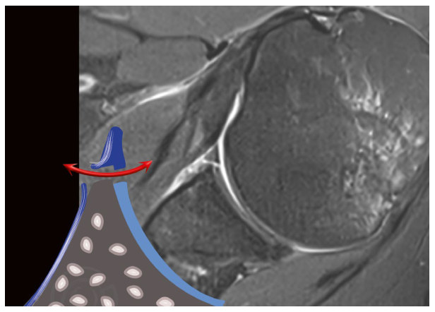
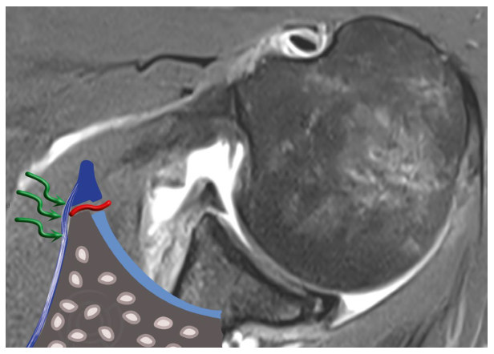
此处，盂唇被撕脱但连接盂唇与肩盂的骨膜保持完整。盂唇组织向内下方迁移，最终沿肩胛颈愈合，从而改变其生物力学作用（图 1.3）。
GLAD 损伤 GLAD 损伤同样由 Neviaser 于 1993 年描述 [17]，即盂唇关节面破裂（glenolabral articular disruption），是前下方盂唇的浅层撕裂合并邻近肩盂关节面软骨的损伤。与其他损伤不同，盂唇保持附着且位置正常。患者通常表现为肩关节前方疼痛，但整体关节稳定性保留（图 1.4）。
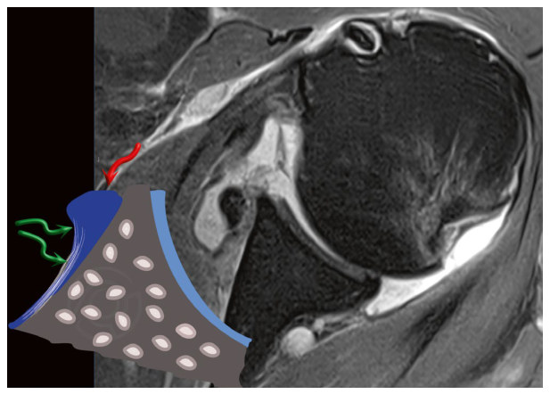
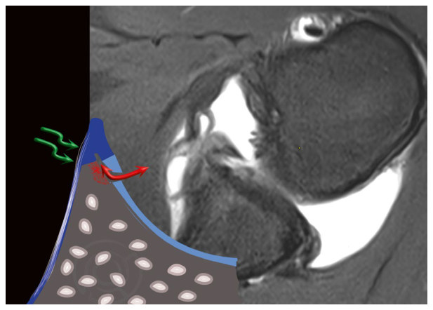
1.2.2 前方盂肱关节不稳定中的韧带损伤
在肩关节的关键稳定结构中，盂肱下韧带（IGHL）起核心作用。IGHL 自肩盂延伸至肱骨，形如吊床，由坚韧的前束和后束组成，维持关节的完整性。文献中已描述了 IGHL 附着于肩盂的两种解剖学变异 [4]。在大多数情况下（约 80%），该韧带直接附着于盂唇，部分纤维延伸至肩盂颈部。在其余 20% 的情况下，IGHL 仅附着于肩盂颈部而不累及盂唇。因此，在大多数病例中，盂唇的撕脱通常也意味着 IGHL 的断裂。IGHL 失效最常发生于其肩盂附着点。当韧带自肱骨侧撕脱时，
该损伤称为盂肱韧带肱骨侧撕脱（HAGL）
损伤。关节镜下这些损伤可能难以发现。在 MR 关节造影中，提示性表现包括 J 征，即正常呈 U 形的腋下隐窝变为 J 形，以及腋下区造影剂外渗。但需谨慎：MRI 上 HAGL 损伤的假阳性判读并不少见 [15]。在 IGHL 完整或韧带实质内撕裂的病例中亦可见造影剂外渗，因此必须将影像学表现与临床及手术评估相结合进行综合判断。
1.2.3 前方不稳中的骨性病变
1.2.3.1 肩盂
前方盂唇缘的骨缺损被广泛认为是导致盂肱关节不稳的重要原因。当骨缺损超过肩盂最大前后径的 50% 时，肩关节对脱位的抵抗力将大幅下降。此类情况下，软组织修复（如 Bankart 修复或盂唇重建）可能不足以恢复稳定性，通常需通过 Latarjet 手术或骨移植等方法对肩盂进行骨性增强，以恢复关节的匹配性。肩盂骨量丢失可由多种原因引起：可为先天性，可因急性盂缘骨折所致，
也可因慢性不稳而逐渐发生。肱骨头反复向前半脱位可随时间磨损肩盂边缘，这种情况称为“肩盂骨量丢失”，即便不存在明确的骨碎片亦可发生。
1.2.3.2 肱骨
肱骨头上特征性的沟槽样缺损现称为 Hill-Sachs 损伤，最早由 Harold A. Hill 和 Maurice D. Sachs 于 1940 年在《Radiology》杂志中报道。其存在被视为盂肱关节前方不稳的标志性表现。尽管 Hill-Sachs 损伤常见，但仅约 7% 需要针对性治疗 [13]。临床决策时，必须评估损伤的大小、位置及其与肩盂的关系。某些形态学特征会增加 Hill-Sachs 损伤“啮合”的可能性，从而导致复发性不稳。这些特征包括：损伤大而宽、位于肱骨头更内侧、以及在肱骨中立位时呈斜向走行。当啮合型 Hill-Sachs 损伤与明显的肩盂缺损并存时，称为双极损伤，常需手术干预以恢复关节稳定性。
1.2.3.3 盂轨迹概念
当肩关节处于外展外旋位（ABER）时，前方盂肱关节不稳患者常出现半脱位并伴有明显的恐惧感。恐惧感定义为患者在此易受伤体位下对即将发生脱位的担忧。盂轨迹是指在 ABER 体位下肩盂面与肱骨头后上方之间的接触区域（图 1.5）。该接触区域约占肩盂横径的 84%，其余 16% 与肩袖足印区内侧缘相邻 [9]。此生物力学框架可根据 Hill-Sachs 损伤与盂轨迹的关系对其进行分型：
- 轨迹内（On-track）：Hill-Sachs 缺损局限于盂轨迹内，无啮合风险。
- 轨迹外（Off-track）：Hill-Sachs 缺损向内延伸超出盂轨迹，啮合及复发性不稳的可能性增加。
理解上述关系对手术规划至关重要，尤其是在 Hill-Sachs 缺损与肩盂骨量丢失并存的情况下。
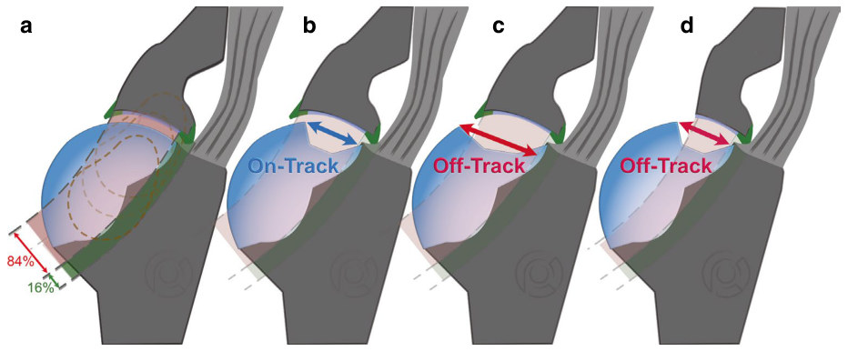
1.3 盂肱关节后向不稳
1.3.1 后向不稳中的唇盂损伤
肩关节后向不稳常见于体力活动较多的个体，尤其是年轻男性，例如军人群体。这种不稳通常归因于反复微创伤作用于后关节囊和唇盂结构。涉及肩关节反复负荷的活动——如俯卧撑、引体向上和大重量卧推——可诱发后向不稳。在游泳和高尔夫等运动中也可观察到类似的应力模式，这些运动中重复动作对盂肱关节的后方稳定结构形成牵拉。导致盂肱关节后向不稳的解剖学易感因素包括肩胛盂后倾增加、肱骨头后倾增加以及
诸如肩胛盂后发育不良等结构异常，该异常可能与臂丛神经产伤麻痹等疾病相关 [19]。
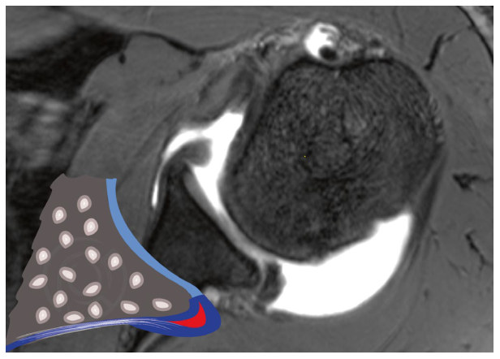
1.4 上唇自前向后（SLAP）损伤
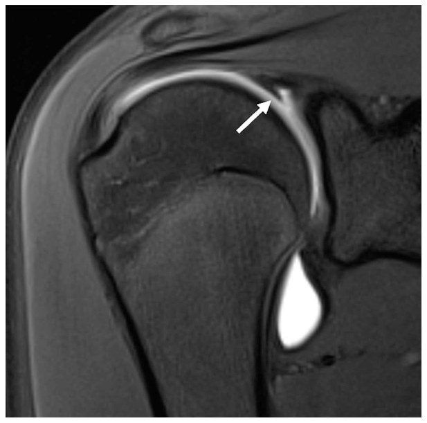
肩关节 SLAP 损伤是指肩胛盂上唇和肱二头肌锚定处自前向后的损伤。在关节镜检查系列研究中，这些撕裂的患病率变化较大，可达 38%，主要取决于患者群体。然而，即使是经验丰富的肩关节外科医生之间，对 SLAP 损伤的关节镜诊断也具有显著的观察者间和观察者内变异性 [8, 21]。典型的损伤机制包括跌倒时手臂外展或肘部屈曲着地、过顶运动中肱二头肌锚定处反复扭转所致的慢性过用（“剥离回缩机制”），以及肩关节前脱位。在肩关节前脱位之后，SLAP 损伤实质上代表了前下唇盂撕裂向近端的延伸 [26]。Snyder [21] 的最初分类将 SLAP 损伤描述为四种类型：
1 型——上盂唇退行性磨损；2 型——上盂唇及肱二头肌腱锚定从关节盂撕脱；3 型——上盂唇桶柄状撕裂，肱二头肌腱锚定保留；4 型——上盂唇桶柄状撕裂累及肱二头肌长头腱
1 型损伤临床意义不大，而 2 型和 4 型损伤会影响肱二头肌腱止点的稳定功能，从而可导致盂肱关节不稳定。3 型损伤中肱二头肌腱锚定稳定。SLAP 损伤患者的手术治疗理念近来已发生变化
发生改变。对于 25 岁以上患者不再推荐解剖修复，因此目前大多数患者采用肱二头肌腱固定术治疗。常规 MR 成像对 SLAP 损伤检出的敏感度有限。MR 关节造影具有较高的敏感度、特异度以及观察者间和观察者内一致性，是首选的诊断方法 [10, 23]。大多数 SLAP 损伤在冠状斜位 MR 图像上显示最佳。SLAP 1 型损伤可表现为上盂唇信号强度增高及轮廓不规则，但在 MR 成像上很少能确诊。SLAP 2 型损伤（最常见类型）表现为液体或对比剂线性延伸进入上盂唇和肱二头肌腱锚定（图 1.7）。若裂隙呈垂直走行或向外侧弯曲，则撕裂诊断明确。若裂隙向内侧延伸，则需与盂下隐窝（常见解剖变异）相鉴别。对此，SLAP 2 型损伤的诊断标准包括边缘不规则、上盂唇与关节盂之间分离较宽以及裂隙延伸超过盂上结节。SLAP 3 型和 4 型损伤为桶柄状撕裂，下方盂唇碎块可有不同程度的移位。3 型损伤中，盂唇碎块在冠状斜位 MR 图像上通常呈三角形，并与完整的肱二头肌腱分离。4 型损伤中，桶柄状碎块由上关节盂盂唇及部分肱二头肌腱组成，因此撕裂的水平部分延伸进入肱二头肌腱 [10, 23, 26]。
1.5 肱二头肌腱不稳
肱二头肌长头腱（LHBT）不稳定可导致肌腱向内侧或罕见的向外侧半脱位或脱位。半脱位指肌腱与接触面之间部分或一过性失去接触，而脱位则定义为肌腱与肱骨头结节间沟之间完全且永久地失去接触。异常活动通常导致肱二头肌腱病，其在 MRI 上的特征表现为 LHBT 增粗、走形不规则，以及在短回波时间序列图像上信号强度增高 [22, 25]。
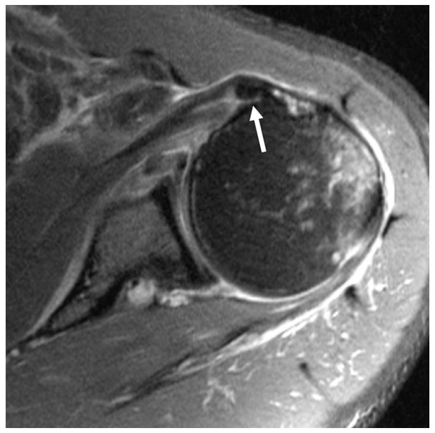
1.5.1 肱二头肌长头腱内侧不稳定
LHBT 内侧不稳定可单独出现，也可与其他肩关节病变合并存在。其根本原因是稳定肱二头肌的滑车系统受损，该系统由盂肱上韧带（SGHL）、喙肱韧带（CHL）、肩胛下肌（SSC）肌腱和冈上肌（SSP）肌腱共同构成 [7, 8]。若 LHBT 向内侧脱位，可滑入腱内、关节内或关节外位置 [22]。当 SGHL 与 SSC 肌腱上部同时存在缺损时，可发生腱内脱位。此时 LHBT 嵌入 SSC 肌腱缺损处，并可能促使肌腱完全撕裂进展（图 1.8）。若整个 SSC 肌腱自小结节撕脱，LHBT 则可脱位进入盂肱关节内。LHBT 关节外脱位较少见，指 LHBT 在 SSC 肌腱浅面向内侧移位，是 CHL 与 SSP 肌腱前部联合撕裂的后遗症。在孤立的 SGHL 或孤立的 SSC 肌腱损伤中，可观察到 LHBT 的腱鞘内半脱位。重要的是要认识到，在轴位 MR 图像上所见的 LHBT 内侧脱位，并非孤立性滑车悬吊带损伤的征象。孤立性 SGHL 损伤最可靠的征象是矢状位 MR 图像上的"移位征"，即 LHBT 在肩袖间隙中三分之一处向尾侧移位至 SSC 肌腱表面 [2, 20, 22, 25]。
立性 SGHL 损伤最可靠的征象是矢状位 MR 图像上的"移位征"，即 LHBT 在肩袖间隙中三分之一处向尾侧移位至 SSC 肌腱表面 [2, 20, 22, 25]。
1.5.2 肱二头肌长头腱外侧不稳定
肱二头肌腱外侧不稳定非常罕见，但可在大结节骨折后出现。创伤后畸形伴肱二头肌沟变浅或大结节变扁平，可使 LHBT 向外侧半脱位或脱位 [25]。
1.6 微不稳定
微不稳定（功能性不稳定、微创伤性盂肱关节不稳定）是一种获得性肩关节不稳定，被认为与反复的关节囊
慢性过度使用中的微创伤相关，且无明显脱位。它最常见于从事过头类运动中过度外展和外旋动作的运动员的优势侧肩，如投掷运动、球拍类运动、手球或游泳等。临床上，该病表现为疼痛以及力量和协调性下降。微不稳定可导致内源性撞击及间接性结构损伤，包括关节囊松弛与撕裂、前后盂唇损伤、腱鞘囊肿、SLAP 损伤及肩袖部分撕裂。由于 MR 关节造影在检测上述病变方面较常规 MR 成像更为准确，因此仍是运动员肩关节诊断评估的首选方法 [26]。
另一方面而言 [3, 11]。两者被认为均可导致肱骨头在上举期发生异常前向移位，进而引起肩袖在大结节与盂骨之间的撞击。MR 成像可显示 SSP 后部关节面和（或）冈下肌（ISP）肌腱相应的部分撕裂，以及后上盂唇的损伤（退行性磨损、撕裂），这些病变可能伴有大结节和上盂骨过度接触部位的骨质异常（骨髓水肿、大囊肿、骨重塑）。前关节囊损伤为常见表现，在 ABER 位 MR 关节造影图像上显示最佳。这些征象常与（后部）SLAP 损伤合并存在 [7, 26]。
1.6.1 后上盂肱撞击（PSI） 1.6.2 前上盂肱撞击（ASI）
PSI 一词描述的是在外展和外旋过程中，肩袖下表面与后上盂骨之间反复的强力接触机制，由此导致特征性损伤模式（"对吻性病变"）（图 1.9）。它代表了过头类运动员内源性撞击的经典类型，患者主诉肩部后侧疼痛及力量下降。关于 PSI 发生发展中关键病变的两种主要学说：一方面为微不稳定所致的前关节囊慢性损伤，另一方面则为后下关节囊挛缩伴盂肱关节内旋受限（GIRD）
前上方撞击（ASI）远不如后上方撞击（PSI）常见。它指在强力内收和内旋过程中——如投掷或球拍类运动随挥阶段发生时——肩胛下肌腱纤维及滑车悬带受压于关节盂前缘与肱骨头之间。主要症状为肩部前方疼痛。MRI 可显示滑车病变以及肱二头肌长头腱（LHBT）不稳的后遗改变。肩胛下肌（SSC）腱的病变最初发生于肌腱上部关节侧。
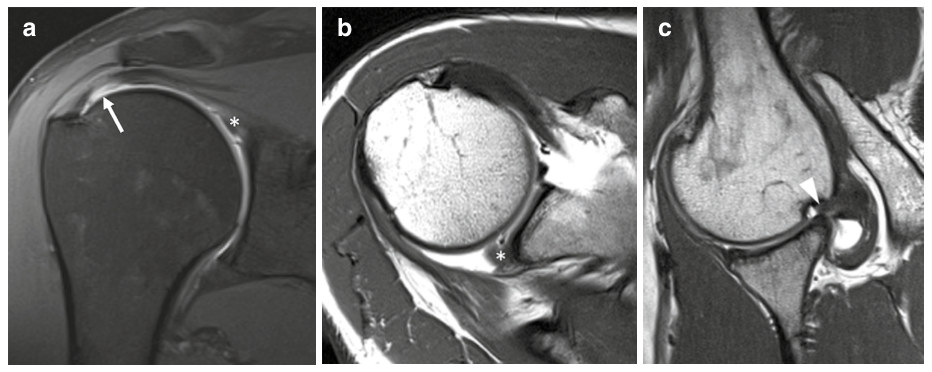
1.7 关节盂唇的正常变异
关节盂唇是围绕整个关节盂边缘的纤维软骨环，厚度约 4 mm，横断面多呈三角形。然而，关节盂唇的形态变异较大。在上方，盂唇与肱二头肌腱锚定（盂唇-肱二头肌复合体）相连续；在前下方，则与盂肱下韧带（盂唇-韧带复合体）相延续。有若干解剖变异可能被误认为盂唇损伤，故应在断层影像上加以识别。最重要的变异包括盂下隐窝、盂下孔和 Buford 复合体[18]。
1.7.1 盂下隐窝
盂下隐窝是上盂唇的一种常见变异，见于超过 70% 的人群。它表现为位于上盂唇和肱二头肌腱锚定下方的滑膜化裂隙，深度可达 10 mm。与早期放射学研究描述不同，盂下隐窝也可延伸至肱二头肌腱止点的后方。在前方，它可与盂下孔相通。在冠状斜位 MR 图像或关节造影片上，典型隐窝表现为一条光滑、向内弯曲的液体或对比剂线，最大宽度为 2 mm，指向肩胛盂上结节。当存在较深隐窝时，上盂唇可呈半月板样改变，并在关节镜检查中表现为活动度过大[10,18,26]。
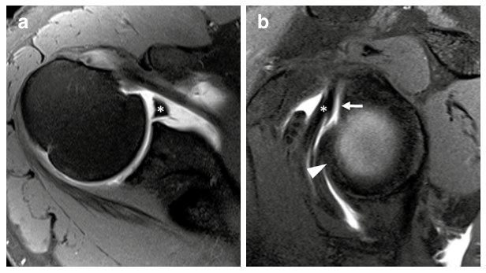
1.7.2 盂下孔
盂下孔（foramen）是前上方关节盂唇最常见的变异，发生率为 7%~12%。该术语指盂唇在 1 点至 3 点钟位置之间完整但未附着于关节盂。
盂下孔通常不向前下方延伸。因此，部位是区分盂下孔与盂唇撕裂（通常累及盂唇前下方节段）最重要的特征[18]。
1.7.3 Buford 复合体
Buford 复合体是一种解剖变异，其特征为前上方盂唇在 1 点至 3 点钟位置完全缺如，并伴有增厚的条索状盂肱中韧带，该韧带可与 LHBT 底部共同形成非典型盂唇止点（图 1.10）。该异常的发生率约为 2%，被认为较盂下孔少见。在 MRI 上，Buford 复合体可被误认为盂唇自关节盂的撕脱。正确诊断的关键在于识别假定的盂唇碎片与前方关节囊相延续，而非与前下方盂唇相延续[18,24]。
1. Bankart AS. Recurrent or habitual dislocation of the shoulder-joint. Br Med J. 1923;2(3285):1132–3. https://doi.org/10.1136/bmj.2.3285.1132.
2. Bennett WF. Subscapularis, medial, and lateral head coracohumeral ligament insertion anatomy. Arthroscopic appearance and incidence of “hidden” rotator interval lesions. Arthroscopy. 2001;17(2):173–80. https://doi.org/10.1053/jars.2001.21239.
3. Burkhart SS, Morgan CD, Kibler WB. The disabled throwing shoulder: spectrum of pathology part I: pathoanatomy and biomechanics. Arthroscopy. 2003;19(4):404–20. https://doi.org/10.1053/jars.2003.50128.
4. Eberly VC, McMahon PJ, Lee TQ. Variation in the glenoid origin of the anteroinferior glenohumeral capsulolabrum. Clin Orthop Relat Res. 2002;400:26–31. https://doi.org/10.1097/00003086-200207000-00004.
5. G P. Über Operationen bei habitueller Schulterluxationen. Dtsch Z Chir. 1906;85:199–227.
6. Gerber C, Nyffeler RW. Classification of glenohumeral joint instability. Clin Orthop Relat Res. 2002;400:65–76. https://doi.org/10.1097/00003086-200207000-00009.
7. Giaroli EL, Major NM, Higgins LD. MRI of internal impingement of the shoulder. AJR Am J Roentgenol. 2005;185(4):925–9. https://doi.org/10.2214/AJR.04.0971.
8. Gobezie R, Zurakowski D, Lavery K, Millett PJ, Cole BJ, Warner JJ. Analysis of interobserver and intraobserver variability in the diagnosis and treatment of SLAP tears using the Snyder classification. Am J Sports Med. 2008;36(7):1373–9. https://doi.org/10.1177/0363546508314795.
9. Gyftopoulos S, Yemin A, Beltran L, Babb J, Bencardino J. Engaging Hill-Sachs lesion: is there an association between this lesion and findings on MRI? AJR Am J Roentgenol. 2013;201(4):W633–8. https://doi.org/10.2214/AJR.12.10206.
10. Holzapfel K, Waldt S, Bruegel M, Paul J, Heinrich P, Imhoff AB, Rummeny EJ, Woertler K. Inter- and intraobserver variability of MR arthrography in the detection and classification of superior labral anterior posterior (SLAP) lesions: evaluation in 78 cases with arthroscopic correlation. Eur Radiol. 2010;20(3):666–73. https://doi.org/10.1007/s00330-009-1593-1.
11. Jobe CM. Superior glenoid impingement. Curr Concept Clin Orthop Relat Res. 1996;330:98–107.
12. Kim SH, Ha KI, Yoo JC, Noh KC. Kim’s lesion: an incomplete and concealed avulsion of the posteroinferior labrum in posterior or multidirectional posteroinferior instability of the shoulder. Arthroscopy. 2004;20(7):712–20. https://doi.org/10.1016/j. arthro.2004.06.012.
13. Kurokawa D, Yamamoto N, Nagamoto H, Omori Y, Tanaka M, Sano H, Itoi E. The prevalence of a large Hill-Sachs lesion that needs to be treated. J Shoulder Elb Surg. 2013;22(9):1285–9. https://doi.org/10.1016/j.jse.2012.12.033.
14. Matsen FA 3rd, Harryman DT 2nd, Sidles JA. Mechanics of glenohumeral instability. Clin Sports Med. 1991;10(4):783–8.
15. Melvin JS, Mackenzie JD, Nacke E, Sennett BJ, Wells L. MRI of HAGL lesions: four arthroscopically confirmed cases of false-positive diagnosis. AJR Am J Roentgenol. 2008;191(3):730–4. https://doi.org/10.2214/AJR.07.3631.
16. Neviaser TJ. The anterior labroligamentous periosteal sleeve avulsion lesion: a cause of anterior instability of the shoulder. Arthroscopy. 1993a;9(1):17–21. https://doi.org/10.1016/s0749-8063(05)80338-x.
17. Neviaser TJ. The GLAD lesion: another cause of anterior shoulder pain. Arthroscopy. 1993b;9(1):22–3. https://doi.org/10.1016/s0749-8063(05)80339-1.
18. Park YH, Lee JY, Moon SH, Mo JH, Yang BK, Hahn SH, Resnick D. MR arthrography of the labral capsular ligamentous complex in the shoulder: imaging variations and pitfalls. AJR Am J Roentgenol. 2000;175(3):667–72. https://doi.org/10.2214/ajr.175.3.1750667.
19. Pfirrmann CW, Zanetti M, Hodler J. Joint magnetic resonance imaging: normal variants and pitfalls related to sports injury. Radiol Clin North Am. 2002;40(2):167–80. https://doi.org/10.1016/s0033-8389(02)00003-9.
20. Schaeffeler C, Waldt S, Holzapfel K, Kirchhoff C, Jungmann PM, Wolf P, Stat D, Schroder M, Rummeny EJ, Imhoff AB, Woertler K. Lesions of the biceps pulley: diagnostic accuracy of MR arthrography of the shoulder and evaluation of previously described and new diagnostic signs. Radiology. 2012;264(2):504–13. https://doi.org/10.1148/radiol.12112007.
21. Snyder SJ, Karzel RP, Del Pizzo W, Ferkel RD, Friedman MJ. SLAP lesions of the shoulder. Arthroscopy. 1990;6(4):274–9. https://doi.org/10.1016/0749-8063(90)90056-j.
22. Walch G, Nove-Josserand L, Boileau P, Levigne C. Subluxations and dislocations of the tendon of the long head of the biceps. J Shoulder Elb Surg. 1998;7(2):100–8. https://doi.org/10.1016/s1058-2746(98)90218-x.
23. Waldt S, Burkart A, Lange P, Imhoff AB, Rummeny EJ, Woertler K. Diagnostic performance of MR arthrography in the assessment of superior labral anteroposterior lesions of the shoulder. AJR Am J Roentgenol. 2004;182(5):1271–8. https://doi.org/10.2214/ajr.182.5.1821271.
24. Williams MM, Snyder SJ, Buford D Jr. The Buford complex--the “cord-like” middle glenohumeral ligament and absent anterosuperior labrum complex: a normal anatomic capsulolabral variant. Arthroscopy. 1994;10(3):241–7. https://doi.org/10.1016/s0749-8063(05)80105-7.
25. Woertler K. Rotator interval. Semin Musculoskelet Radiol. 2015;19(3):243–53. https://doi.org/10.1055/s-0035-1549318.
26. Woertler K, Waldt S. MR imaging in sports-related glenohumeral instability. Eur Radiol. 2006;16(12):2622–36. https://doi.org/10.1007/s00330-006-0258-6.
肩袖
肩袖
Tetyana Gorbachova 和 Eva Llopis
力的传导，并限制肌腱回缩。旋转索与肌腱止点（大结节）之间的区域被称为旋转半月板[2]。冈上肌起于冈上窝及肩胛冈上表面，由前、后两个肌腹构成。前肌腹较大，呈双羽状结构，占据冈上窝的四分之三，肌腱呈索状，肌内行程较长。后肌腹较小，为单羽状肌，其肌腱扁平宽阔，呈四边形[3]。冈下肌也由两部分组成，一部分为较大的斜行部，起自冈下窝；另一部分为较小的横行部，起自肩胛冈下表面。横行部的肌腱被描述为一薄层膜样组织，走行较为表浅，止于冈下肌斜行部较深的肌腱，但不附着于大结节足印区[4]。Mochizuki 等重新定义了冈上肌腱与冈下肌腱在肱骨止点的经典解剖概念。冈上肌腱的止点区域呈三角形，位于大结节水平面的前半内侧部分，有时延伸至小结节最上方的区域；而冈下肌腱的止点区域呈宽阔的梯形，占据水平面后半外侧部分及整个斜面[5]。Moser 等描述了冈上肌前上肌腱的“腱膜扩展”，该结构见于约一半的尸体和临床病例中，常表现为自肱二头肌长头腱滑膜鞘外侧由冈上肌腱前部发出的一束腱样结构，远端止于胸大肌腱[6]。小圆肌起自肩胛骨外侧缘中部及冈下肌筋膜。小圆肌肌腱的上部卵圆部分附着于大结节的垂直面，
2.1 肩袖解剖
肩袖由四块肌肉及其肌腱构成：冈上肌、冈下肌、小圆肌和肩胛下肌。除了实现肩关节活动的主要功能外，肩袖肌肉还作为肱骨头在关节盂内的动态稳定结构。组织学上，肩袖纤维按深度排列为五层，各层呈不同的束状走向 [1]。旋转索（rotator cable）是位于第 4 层的纤维线性凝聚结构，代表喙肱韧带的深层延伸。旋转索自肩袖间隙横向走行，越过冈上肌和冈下肌肌腱并垂直于第 2 层和第 3 层，如悬索桥般将应力分布于较薄的冈上肌和冈下肌下部附着区 [1]
T. Gorbachova（*）放射科，Jefferson Einstein Hospital，Jefferson Health，费城，宾夕法尼亚州，美国
Sidney Kimmel Medical College at Thomas Jefferson University，费城，宾夕法尼亚州，美国 电子邮箱：Tetyana.Gorbachova@jefferson.edu
E. Llopis 放射科，IMSKE 医院，Hospital de la Ribera，巴伦西亚，西班牙
并以薄而细长的下部附着于外科颈 [1]。冈上肌和冈下肌由肩胛上神经支配；小圆肌由腋神经支配 [4]。肩胛上动脉供应上述三块肌肉，冈下肌还接受旋肩胛动脉的供血，小圆肌则接受肩胛背动脉的供血。冈上肌的主要作用是使肩关节外展，小圆肌负责外旋与内收，冈下肌对肩关节外展和外旋均起关键作用。肩胛下肌是肩袖中体积最大的肌肉，具有多羽状结构。它广泛起自肩胛骨的前面即肩胛下窝，并以复杂的方式止于肱骨。从三维视角自上而下已描述出四个不同的止点面；前两个面约占整个肩胛下肌肌腱的 60% [7, 8]。上方 60% 为止于小结节的腱性附着，形成上宽下窄的梯形逗号状足印区。下方的 40% 则由肌纤维直接插入骨质 [7, 9]。在肩胛下肌的上外侧角，一束独立的纤维与冈上肌前部纤维相连 [10]。肩胛下肌由臂丛的上肩胛下神经和下肩胛下神经支配。其血供主要来自肩胛下动脉，并有旋肱前动脉的参与 [10]。功能上，肩胛下肌是肩关节的主要内旋肌，并参与肩关节上举。此外，它在稳定盂肱关节前方、防止前脱位方面发挥关键作用 [7]。
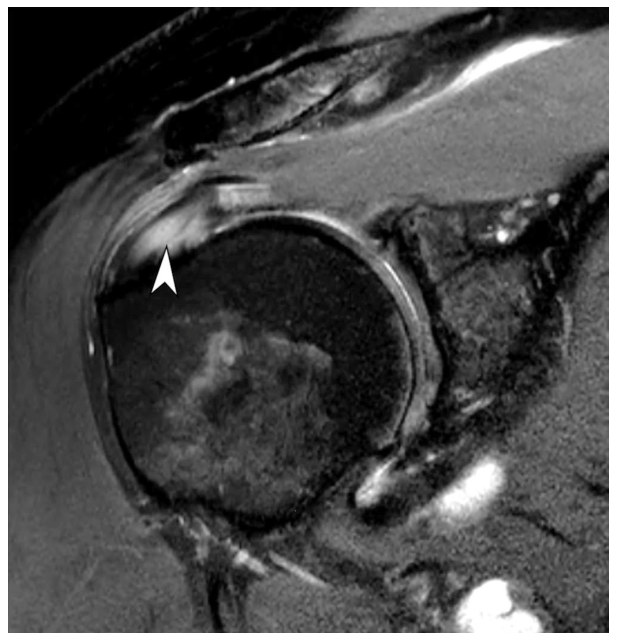
2.2 肌腱病
肩袖肌腱病（又称肌腱变性）以肌腱退变而无明确撕裂为特征。在 MRI 上，肌腱病的诊断基于以下综合表现：(1)
肌腱内信号强度增高，但未达到液体信号强度，且未延伸至关节面或滑囊面；(2) 肌腱厚度异常增加（图 2.1）。对于肩袖仅出现信号改变而无形态学变化的情况，应谨慎解读，因为魔角效应可类似肌腱病理表现，该效应出现于肌腱纤维相对于主磁场方向发生改变的特定区域 [11]。
2.3 肩袖撕裂
肩袖撕裂以形态学异常为特征，如纤维断裂或肌腱变薄，以及在液体敏感序列上达到液体信号强度的信号改变。肩袖撕裂根据撕裂的形态、位置、肌腱断裂的范围以及肌腱回缩程度存在多种分类。全层撕裂累及肩袖的所有层次，而部分层撕裂可分为关节侧、滑囊侧和肌腱内撕裂（亦称间质性或腱内撕裂）（图 2.2）。部分层撕裂依据液体敏感序列上的信号改变进行诊断，若该信号异常
层的全层撕裂
（a）、部分
部分层滑囊侧撕裂（c）及部分层腱内撕裂（d）
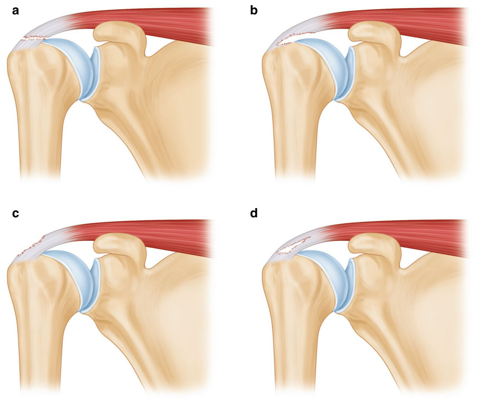
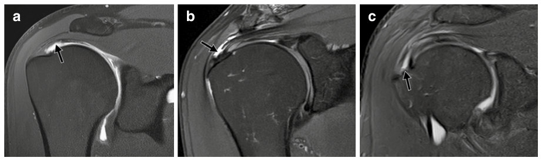
信号接近液体信号，可累及肌腱的关节侧或滑囊侧表面，亦可位于肌腱内部（图 2.3）。此外，还可出现肌腱形态的改变，表现为肌腱宽度的骤然变化，或在慢性病例中肌腱逐渐变细。应仔细评估肌腱的解剖止点；若肌腱对止点的覆盖不完整，提示存在止点处撕裂 [1]。肌腱止点处的关节侧部分层厚撕裂有时被称为"边缘撕脱型"（rim-rent）撕裂（图 2.4）。尽管肩袖索（rotator cable）是正常的解剖结构，但肩袖索的增厚提示存在关节侧部分层厚撕裂，应对肩袖下表面进行仔细评估 [12]。
基于正常肩袖平均厚度为 10–12 mm 的假设，Ellman 分级将部分层厚撕裂分为低级（1 级，撕裂深度 <3 mm）、中级（2 级，撕裂深度 3–6 mm）和高级（3 级，撕裂深度 >6 mm）[13]。国际关节镜、膝关节外科与骨科运动医学学会（ISAKOS）的现行分类建议将部分层厚肩袖撕裂按肌腱组织受累是否超过肌腱厚度的 50% 进行描述，因为受累不足 50% 的撕裂通常采取保守治疗 [14]。全层肌腱撕裂的宽度各异，从非常局限的针孔样撕裂到累及整个肌腱宽度的大撕裂（称为全层全宽型撕裂）不等。
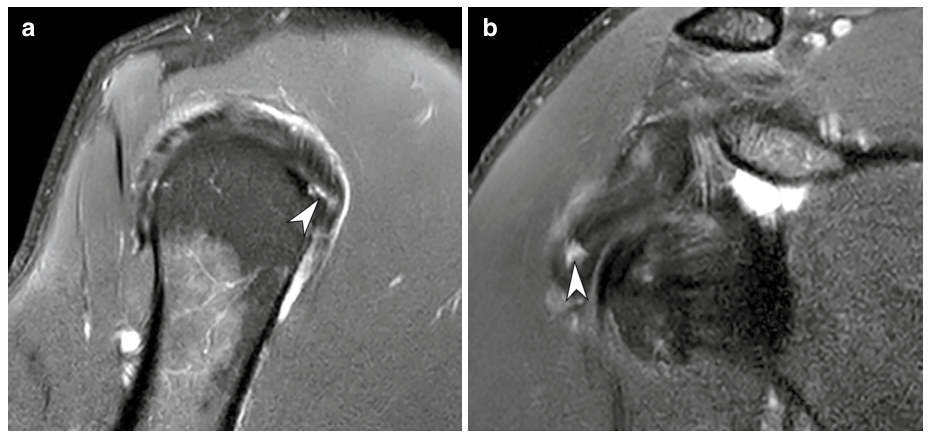
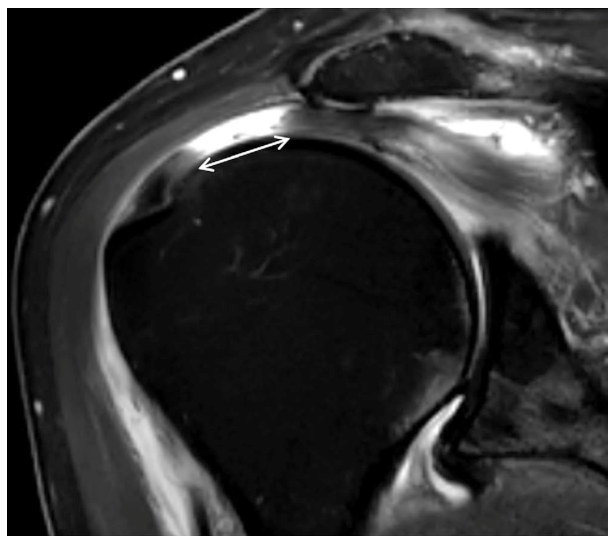
肌腱撕裂。全层撕裂根据撕裂前后方向上的延伸范围、肌腱内外侧方向的回缩程度以及形态学（C 形、U 形、L 形或反 L 形）进行分类 [14]（图 2.5）。撕裂范围达到或超过 5 cm 且累及两根或以上肩袖肌腱的全层撕裂称为巨大撕裂。分层撕裂定义为关节层与滑囊层之间的腱内水平劈裂（图 2.6）。分层可见于部分层腱内撕裂，也可作为全层撕裂的附加分层成分出现（图 2.7）。影像学上应对分层进行描述，因其具有临床意义：常规关节镜检查可能漏诊；其存在会降低肌腱愈合潜力，并作为不良预后因素需要不同的手术
入路。部分层或全层肩袖撕裂的腱内分层可导致肌内囊肿的形成，这与肩袖撕裂密切相关 [15]（图 2.8）。冈下肌腱累及横向部分的滑囊侧部分层撕裂伴分层，可形成一种独特的撕裂模式，即横向部分从斜向部分撕脱并回缩 [16]（图 2.9）。MRI 对全层肩袖撕裂诊断准确性高，标准 MRI 的敏感度和特异度分别为 92% 和 93%，MR 关节造影分别为 95% 和 99%。对于部分层撕裂，标准 MRI 的敏感度和特异度分别为 64% 和 92%，MR 关节造影分别为 86% 和 96% [17]。同一项荟萃分析显示，超声（US）对全层撕裂的敏感度和特异度分别为 92% 和 94%，对部分层撕裂分别为 67% 和 94% [17]。
脂肪抑制质子密度
分层撕裂（图 A、B 中箭头）
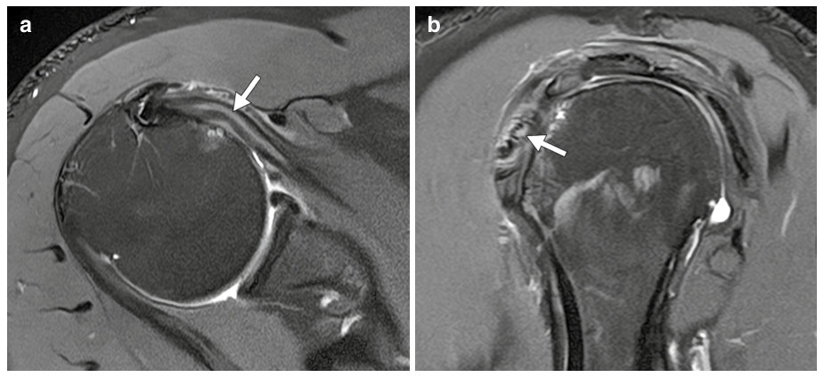
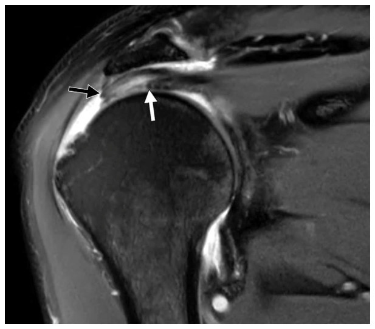
（图 A 中箭头），伴肌内囊肿形成（图 A、B 中楔形箭头）
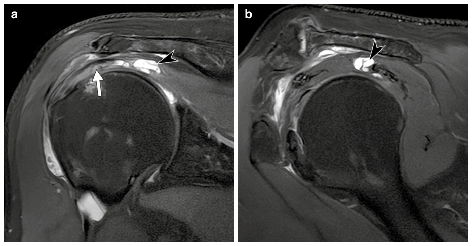
损伤发生率较高，在接受肩关节镜手术的患者中约 50% 存在此类损伤。不同诊断方法的敏感度和特异度报道差异较大，对位于上三分之一处的小撕裂诊断准确性尤其下降。这一部分原因在于该区域解剖结构复杂，涉及盂肱上韧带、喙肱韧带以及冈上肌腱前束。
位于上三分之一的小撕裂部分归因于该区域复杂的解剖结构，涉及盂肱上韧带、喙肱韧带和冈上肌腱的前束。
T2 加权（a）与矢状位
撕裂，横行部肌腱
回缩（图 A、B 中白色楔形箭头）。斜行部深部纤维保持完整（图 A、B 中黑色楔形箭头），可追踪至大结节足印区（未显示）
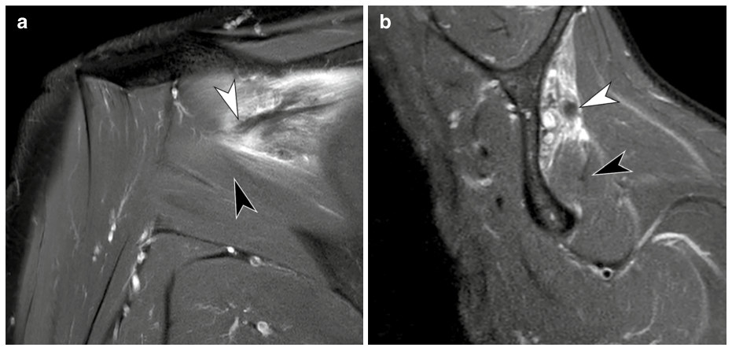
为避免遗漏这些病变，关节镜医师必须在术中进行系统而全面的评估。同样，影像学技术也应采用高分辨力方案进行优化。MRI 和 MR 关节造影在检出肩胛下肌腱撕裂方面被认为比超声更为可靠 [9,18]。轴位和矢状位均需仔细评估（图 2.6）。部分研究亦提示，成像时将肩部内旋可提高诊断准确性 [19]。单纯性肩胛下肌腱撕裂少见，多数合并其他肩部病变，特别是其他肩袖撕裂。此类撕裂通常起自肌腱上三分之一并向远端延伸 [9,18]。累及上三分之一的病变常同时损伤肱二头肌腱滑车复合体以及冈上肌腱前关节侧纤维（图 2.10）。目前已提出多种肩胛下肌腱撕裂的分型系统，大多基于止点部位；然而尚无一种被普遍接受。Lafosse 分型是使用最广泛的之一，并已被 ISAKOS 采用。该系统共分 5 级，自上三分之一的部分撕裂（1 级）起，至上三分之一完全撕裂（2 级），至上三分之二完全撕裂（3 级）；4 级和 5 级均为完全撕裂，其中 4 级肱骨头居中、脂肪萎缩不超过 3 级，5 级肱骨头失衡并偏心移位伴脂肪萎缩 [9,18,20,21]（图 2.11）。Yoo 等 [8] 提出了对上三分之一涉及第一面撕裂的细分分级：1 级为磨损，附着小于 50%；2 级中，2A 级分离超过 50% 但外侧腱帽附着未完全断裂，2B 级外侧腱帽附着完全断裂；第一面完全分离为 3 级，第一面和第二面均受累、累及整个肌腱附着为 4 级；若累及肌肉附着，则为 5 级8。此外，还有肩胛下肌腱纵行撕裂的报道，
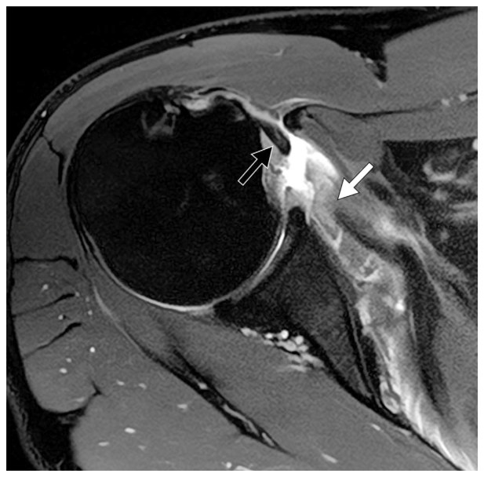
可伴或不伴足印止点中断 [22]。Burkhart 将肩胛下肌腱上三分之一向近端回缩在关节镜下称为“逗号征”。该征象亦可在 MRI 上识别，又称“桥接征”。其表现为一条软组织带桥接于肩胛下肌腱与冈上肌腱之间，位于盂唇前方内侧。该结构由盂肱上韧带、喙肱韧带及残余肩胛下肌腱筋膜组成（图 2.12）。虽然此结构的存在常与冈上肌腱撕裂相关，但并非绝对如此 [23–25]。
脂肪抑制质子密度
显示肩胛下肌腱上部和中部
全层撕裂（黑箭头，A、B），伴肌腱回缩（箭头），肌腱下三分之一完好（白箭头）
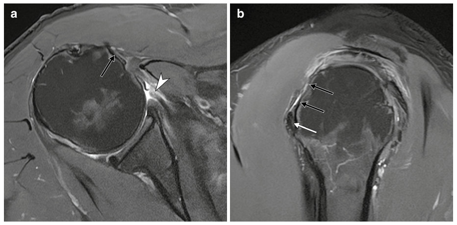
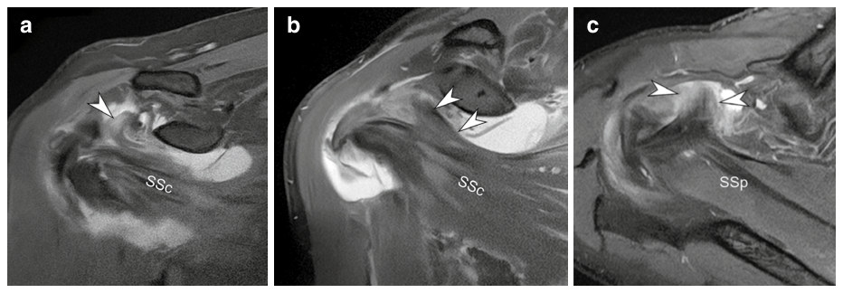
用于评估肌肉的影像学退变。其中最常用的脂肪浸润评估分级由 Goutallier 等人提出，最初用于 CT，随后被改良用于 MRI [26, 27]。脂肪浸润可分为：0 期，肌肉正常；1 期，可见少量脂肪条纹；2 期，肌肉多于脂肪；3 期，肌肉与脂肪相等；4 期，脂肪多于肌肉 [26]。Thomazeau 等人通过冈上肌占位比来评估冈上肌肌腹的容积丢失，定义为冈上肌的横截面积除以冈上肌窝的表面积，测量平面为矢状斜位上冈上肌窝骨性边界呈 Y 形构型的层面；并将肌肉容积丢失分为轻度、中度或重度 [28]。Zanetti 等人提出的切线征（tangent sign），在矢状斜位最外侧 MR 图像上以经肩胛冈上缘和喙突上缘的连线作为参考线；当冈上肌未越过该切线时视为异常或阳性 [29]。阳性切线征提示肩袖修复术后预后较差 [30]。Feuerriegel 等人最近提出的"黑鸟征"（blackbird sign）描述了
2.4 肌肉萎缩与脂肪浸润
肩袖肌群的评估是 MRI 报告的重要组成部分，因为它影响治疗决策。肩袖肌腱撕裂后，肩袖肌肉将发生萎缩和脂肪浸润，这与肩袖修复术后结构和功能预后不良相关。已提出多种定性和定量方法用于
矢状位 MRI 上冈上肌早期萎缩的不对称模式，表现为上后部肌腹的凹陷轮廓 [31]。
2.5 肌腱连接部损伤
肩袖肌腱连接部损伤虽不常见，但对功能预后具有重要意义。该损伤最常见于冈下肌和冈上肌，但也可能累及肩袖的所有肌肉 [32]（图 2.13）。肌肉拉伤是最常见的损伤类型，其次为部分撕裂。虽然肌腱连接部损伤通常不伴有肩袖肌腱撕裂，但有报道显示冈上肌肌腱连接部损伤可合并止点处肌腱撕裂 [33]。Lunn 等所描述的“新发损伤”谱系中的部分冈下肌腱损伤，最初被归类为肌腱连接部损伤 [34]，实际上可能代表分层撕裂伴差异性回缩，累及分层冈下肌腱更表浅的横向部分 [16]（图 2.9）。
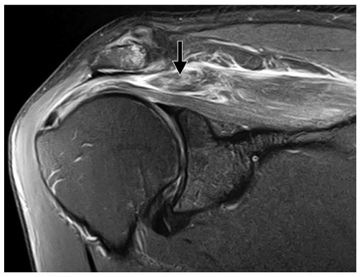
2.6 肩袖撕裂的鉴别诊断
多种疾病可表现为肩痛、无力或两者兼有，临床上可与肩袖撕裂相似。此外，某些疾病的影像学表现与肩袖撕裂重叠，可能导致诊断错误。
2.6.1 钙化性肌腱炎
羟基磷灰石沉积病（HADD）是指一组肌肉骨骼病理改变，其特征为羟基磷灰石钙结晶沉积于肌腱、滑囊及其他软组织，并可沿肌腱走行迁移甚至进入骨内。在肩部，HADD 的表现包括钙化性肌腱炎、钙化性滑囊炎以及钙化沉积物的骨内包绕，后者可导致骨炎和骨溶解 [35]（图 2.14）。在 MRI 影像上，钙化性肌腱炎通过检测所有序列上均呈低信号强度的钙化沉积物及周围炎症来识别。当炎症显著时，肌腱内的炎症改变可类似肩袖撕裂和肌肉拉伤。小钙化沉积物在 MRI 上常不明显，且在液体敏感序列上的高信号可能被误读为创伤性损伤。仔细审阅非脂肪抑制序列并结合 X 线平片，有助于识别钙化灶，从而准确诊断 HADD。
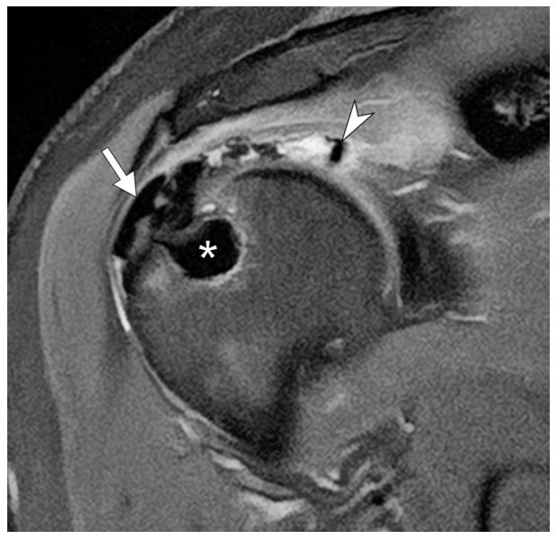
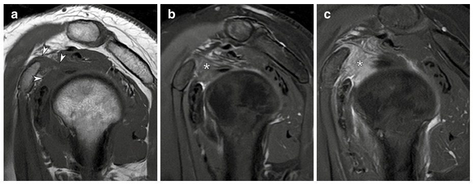
2.6.2 粘连性关节囊炎
粘连性关节囊炎，临床上又称为冻结肩，是一种原发性或继发性的炎症过程，累及盂肱关节的滑膜、关节囊及盂肱韧带，表现为疼痛，并导致关节囊纤维化及主被动活动度下降。在 MRI 上，粘连性关节囊炎通过检出信号和形态的异常来诊断，其表现多样：从炎症期在液体敏感序列上显示关节囊及周围结构的水肿与增厚，到病程后期由于纤维化导致所有脉冲序列上均呈低信号 [36]。MRI 异常在肩袖间隙和腋下隐窝显示最佳；然而，也可在后上关节囊观察到异常。肩袖间隙的典型改变包括水肿、喙肱韧带增厚以及喙下三角脂肪的闭塞 [37]（图 2.15）。下盂肱韧带的 T2 高信号对诊断粘连性关节囊炎具有较高的敏感度（85.3%–88.2%）和特异度（88.2%），而在 T2 加权脂肪抑制图像上，下盂肱韧带关节囊外侧表面邻近薄层高信号的存在对诊断粘连性关节囊炎具有高度特异度（91.2%–97%）[38]。关节囊纤维化可导致关节腔内液体分布改变，表现为肱二头肌隐窝和肩胛下隐窝相对于盂肱关节的不成比例扩张 [39]。钆增强 MRI 可能有助于诊断，因为它能在早期阶段显示炎症改变，从而提高诊断信心。
2.6.3 肌肉失神经支配
肌肉失神经支配可表现为肌力下降，临床上可能与肩袖撕裂混淆。肩部失神经支配可由臂丛神经病变、急性创伤或
占位性病变所致。占位性病变（常见的如盂旁囊肿）或创伤（如盂肱关节脱位）通常仅影响单一神经支配区，而臂丛神经病变则累及多个神经支配区的肌肉 [40]。在 MRI 上，失神经改变的典型特征为肌肉在液体敏感序列上呈均匀性高信号，且肌筋膜周围无水肿或邻近皮下组织的炎症改变。早期肌容积保持不变，随后逐渐出现萎缩和脂肪浸润。
2.7 结论
深入理解肩袖的细微解剖对于临床 MR 影像的分析与报告至关重要。必须了解目前肩袖各种损伤的分类及其对治疗的影响，以实现放射科医师与外科医师之间的准确沟通。本综述总结了肩袖损伤的当前解剖学概念和公认分类，以及影像学诊断陷阱。
袖撕裂：一项荟萃分析。Am J Roentgenol. 2009;192(6):1701–7.
1. Chang EY, Chung CB. Current concepts on imaging diagnosis of rotator cuff disease. Semin Musculoskelet Radiol. 2014;18(4):412–24. https://doi.org/10.1055/s-0034-1384830.
2. Burkhart SS, Esch JC, Jolson RS. The rotator crescent and rotator cable: an anatomic description of the shoulder’s “suspension bridge.”. Arthroscopy. 1993;9:611.
3. Kim SY, Boynton EL, Ravichandiran K, Fung LY, Bleakney R, Agur AM. Three-dimensional study of the musculotendinous architecture of supraspinatus and its functional correlations. Clin Anat. 2007;20(6):648–55. https://doi.org/10.1002/ca.20469.
4. Kato A, Nimura A, Yamaguchi K, Mochizuki T, Sugaya H, Akita K. An anatomical study of the transverse part of the infraspinatus muscle that is closely related with the supraspinatus muscle. Surg Radiol Anat. 2012;34(3):257–65. https://doi.org/10.1007/s00276-011-0872-0.
5. Mochizuki T, Sugaya H, Uomizu M, et al. Humeral insertion of the supraspinatus and infraspinatus. J Bone Joint Surg. 2008;90(5):962–9. https://doi.org/10.2106/JBJS.G.00427.
6. Moser TP, Cardinal É, Bureau NJ, Guillin R, Lanneville P, Grabs D. The aponeurotic expansion of the supraspinatus tendon: anatomy and prevalence in a series of 150 shoulder MRIs. Skeletal Radiol. 2014;44(2):223–31. https://doi.org/10.1007/s00256-014-1993-4.
7. Kellam P, Kahn T, Tashjian RZ. Anatomy of the subscapularis: a review. J Shoulder Elb Arthroplast. 2019;3 https://doi.org/10.1177/2471549219849728.
8. Yoo JC, Rhee YG, Shin SJ, et al. Subscapularis tendon tear classification based on 3-dimensional anatomic footprint: a cadaveric and prospective clinical observational study. Arthroscopy. 2015;31(1):19–28. https://doi.org/10.1016/j.arthro.2014.08.015.
9. Yubran AP, Pesquera LC, Juan ELS, et al. Rotator cuff tear patterns: MRI appearance and its surgical relevance. Insights Imaging Springer. 2024; 15(1). https://doi.org/10.1186/s13244-024-01607-w.
10. Dhanaraj D, Parisien RL, McHale KJ, et al. The comma sign: the coracohumeral ligament and superior glenohumeral ligament exhibit similar quantitative characteristics with terminal confluence at the subscapularis insertion. Arthrosc Sports Med Rehabil. 2021;3(3):e645–9. https://doi.org/10.1016/j.asmr.2020.12.011.
11. Chang EY, Chung CB. Imaging diagnosis of rotator cuff pathology and impingement syndromes. In: The shoulder. Springer; 2019. p. 87–125. https://doi.org/10.1007/978-3-030-06240-8_5.
12. Sheah K, Bredella MA, Warner JJP, Halpern EF, Palmer WE. Transverse thickening along the articular surface of the rotator cuff consistent with the rotator cable: identification with MR arthrography and relevance in rotator cuff evaluation. Am J Roentgenol. 2009;193(3):679–86. https://doi.org/10.2214/ AJR.08.2285.
13. Ellman H. Diagnosis and Treatment of Incomplete Rotator Cuff Tears.
14. Calvo E, Guardado CR, Morcillo D, Arce G. Rotator cuff tears: diagnosis and classification. In: Shoulder arthroscopy: principles and practice, Second Edition. Springer; 2023. p. 445–52. https://doi.org/10.1007/978-3-662-66868-9_33.
15. Kassarjian A, Torriani M, Ouellette H, Palmer W. Intramuscular rotator cuff cysts: association with tendon tears on MRI and arthroscopy. AJR Am J Roentgenol. 2005;185. https://doi.org/10.2214/ajr.185.1.01850160.
16. Huang BK, Chang EY. Delaminating infraspinatus tendon tears with differential retraction: imaging features and surgical relevance. Skeletal Radiol. 2017;46(1):41–50. https://doi.org/10.1007/s00256-016-2506-4.
17. De Jesus JO, Parker L, Frangos AJ, Nazarian LN. Accuracy of MRI, MR arthrography, and ultrasound in the diagnosis of rotator cuff tears: a meta-analysis. Am J Roentgenol. 2009;192(6):1701–7. https://doi.org/10.2214/AJR.08.1241.
18. Saremi H, seifrabiei M. Subscapularis tendon tear classification and diagnosis: a systemic review and meta-analysis. Front Surg Frontiers Media SA. 2023;10 https://doi.org/10.3389/fsurg.2023.916694.
19. Siriwanarangsun P, Pakdee W, Pisanuwongse A, Keyurapan E, Lektrakul N. Subscapularis tendon tear detection using axial internal rotation MRI: semiquantitative and quantitative analysis. Quant Imaging Med Surg. 2023;13(12):8274–89. https://doi.org/10.21037/qims-23-273.
20. Lafosse L, Jost B, Reiland Y, Audebert S, Toussaint B, Gobezie R. Structural integrity and clinical outcomes after arthroscopic repair of isolated subscapularis tears. J Bone Joint Surg. 2007;89(6):1184–93. https://doi.org/10.2106/JBJS.F.00007.
21. Willems J, Guttmann D, Arce G, Bain G. Arthroscopy and repair. In: Shoulder concepts 2013: consensus and concerns. Springer; 2013. p. 87–94. https://doi.org/10.1007/978-3-642-38097-6_11.
22. Dierckman BD, Shah NR, Larose CR, Gerbrandt S, Getelman MH. Non-insertional tendinopathy of the subscapularis. Int J Shoulder Surg. 2013;7(3):83–90. https://doi.org/10.4103/0973-6042.118876.
23. Jung JY, Yoon YC, Cha DI, Yoo JC, Jung JY. The “bridging sign”: a MR finding for combined full-thickness tears of the subscapularis tendon and the supraspinatus tendon. Acta Radiol. 2013;54(1):83–8. https://doi.org/10.1258/ar.2012.120353.
24. Zappia M, Ascione F, Romano AM, et al. Comma sign of subscapularis tear: diagnostic performance and magnetic resonance imaging appearance. J Shoulder Elb Surg. 2021;30(5):1107–16. https://doi.org/10.1016/j.jse.2020.07.047.
25. Atinga A, Dwyer T, Theodoropoulos JS, Dekirmendjian K, Naraghi AM, White LM. Preoperative magnetic resonance imaging accurately detects the arthroscopic comma sign in subscapularis tears. Arthroscopy. 2021;37(10):3062–9. https://doi.org/10.1016/j. arthro.2021.04.040.
26. Goutallier D, Postel JM, Bernageau J, Lavau L, Voisin MC. Fatty muscle degeneration in cuff ruptures. pre- and postoperative evaluation by CT scan. Clin Orthop Relat Res. 1994;(304):78–83. http://www.ncbi.nlm.nih.gov/pubmed/8020238
27. Fuchs B, Weishaupt D, Zanetti M, Hodler J, Gerber C. Fatty degeneration of the muscles of the rotator cuff: assessment by computed tomography versus magnetic resonance imaging. J Shoulder Elb Surg. 1999;8(6):599–605. https://doi.org/10.1016/s1058-2746(99)90097-6.
28. Thomazeau H, Rolland Y, Lucas C, Duval JM, Langlais F. Atrophy of the supraspinatus belly: assessment by MRI in 55 patients with rotator cuff pathology. Acta Orthop Scand. 1996;67(3):264–8. https://doi.org/10.3109/17453679608994685.
29. Zanetti M, Gerber C, Hodler J. Quantitative assessment of the muscles of the rotator cuff with magnetic resonance imaging. Investig Radiol. 1998;33(3):163–70. https://doi.org/10.1097/00004424-199803000-00006.
30. Naimark M, Trinh T, Robbins C, et al. Effect of muscle quality on operative and nonoperative treatment of rotator cuff tears. Orthop J Sports Med. 2019;7(8) https://doi.org/10.1177/2325967119863010.
31. Feuerriegel GC, Marcus RP, Goller SS, et al. A visual marker for early atrophy of the supraspinatus muscle on conventional MRI: introduction of the blackbird sign. Eur Radiol. 2025;35(1):313–22. https://doi.org/10.1007/s00330-024-10946-7.
32. Taneja AK, Kattapuram SV, Chang CY, Simeone FJ, Bredella MA, Torriani M. MRI findings of rotator cuff myotendinous junction injury. Am J Roentgenol. 2014;203(2):406–11. https://doi.org/10.2214/AJR.13.11474.
33. Miranda MO, Bureau NJ. Supraspinatus myotendinous junction injuries: MRI findings and prevalence. Am J Roentgenol. 2019;212(1):W1–9. https://doi.org/10.2214/AJR.18.19776.
34. Lunn JV, Castellanos-Rosas J, Tavernier T, Barthélémy R, Walch G. A novel lesion of the infraspinatus characterized by musculotendinous disruption, edema, and late fatty infiltration. J Shoulder Elb Surg. 2008;17(4):546–53. https://doi.org/10.1016/j. jse.2007.11.016.
35. Porcellini G, Paladini P, Campi F, Pegreffi F. Osteolytic lesion of greater tuberosity in calcific tendinitis of the shoulder. J Shoulder Elb Surg. 2009;18(2):210–5. https://doi.org/10.1016/j. jse.2008.09.016.
36. Polster JM, Schickendantz MS. Shoulder MRI: what do we miss? Am J Roentgenol. 2010;195(3):577–84. https://doi.org/10.2214/ AJR.10.4683.
37. Mengiardi B, Pfirrmann CWA, Gerber C, Hodler J, Zanetti M. Frozen shoulder: MR arthrographic findings. Radiology. 2004;233(2):486–92. https://doi.org/10.1148/radiol.2332031219.
38. Gondim Teixeira PA, Balaj C, Chanson A, Lecocq S, Louis M, Blum A. Adhesive capsulitis of the shoulder: value of inferior glenohumeral ligament signal changes on T2-weighted fat-saturated images. Am J Roentgenol. 2012;198(6) https://doi.org/10.2214/ AJR.11.7453.
39. Barua R, Umans H, Wilde G, Tobin K, Perou P, Levy H. Conventional MRI evaluation of adhesive capsulitis: new perspectives. In: Conference: annual meeting of the American-roentgen-ray-society, vol. 198. Preprint posted online; 2012.
40. Yanny S, Toms AP. MR patterns of denervation around the shoulder. Am J Roentgenol. 2010;195(2):157–63. https://doi.org/10.2214/ AJR.09.4127.
肘关节 MRI
肘关节 MRI
Kathryn J. Stevens 和 Mark Anderson
3.1 引言
肘关节是一个复杂的关节，由肱尺关节、桡肱关节和近端桡尺关节组成，共同包被于一个滑膜囊内。这些关节共同作用，使肘关节能够屈伸，并与远端桡尺关节协同完成前臂的旋前和旋后运动。肘关节的稳定性依赖于骨性几何形态、韧带、肌腱和肌肉之间复杂的相互作用。掌握正常解剖对于准确判读影像学检查至关重要，最终有助于指导临床处理和治疗方案的选择。
K. J. Stevens (*) 斯坦福大学医学中心放射科，美国 加利福尼亚州 斯坦福 电子邮箱：kate.stevens@stanford.edu
M. Anderson 弗吉尼亚大学放射科，美国 弗吉尼亚州 夏洛茨维尔 电子邮箱：mwa3a@virginia.edu
3.2 成像方式
对于表现为肘部疼痛的患者，通常首先行 X 线平片检查，可显示骨折、关节积液、关节炎、软组织钙化或关节游离体。脂肪垫征——前方的“帆征”或可见的后方脂肪垫——提示关节积液，在创伤背景下，应高度怀疑潜在的隐匿性骨折[1]。超声具有便携、成本低廉的优点，对于肌腱、韧带、神经等浅表结构以及钙化或异物的检出具有极佳效果[1, 2]。超声还可对组织进行动态评估，发现静态成像中可能隐匿的异常。其局限性包括对操作者依赖性、可重复性差异较大，以及评估深部骨软骨损伤的能力有限。CT 可提供高分辨力的骨性细节，对骨折的治疗规划具有重要价值。在 MRI 存在禁忌的情况下，CT 关节造影可有所帮助。其局限性包括电离辐射暴露及软组织对比度较差[1]。MRI 是评估肘关节复杂解剖的优良方法，尤其在使用专用表面线圈的 3T 设备下进行检查时，可提高信噪比和空间分辨率。患者可取仰卧位，将手臂置于体侧，此体位舒适且耐受性好，但肘部在磁体孔内的偏心位置可能导致脂肪抑制效果不佳。让患者取俯卧位采用“超人”体位，可使肘部位于磁体孔的中央，但该体位舒适度较差，因而图像易出现运动伪影。应采用正交扫描平面获取脂肪敏感序列（T1 和 PD）和液体敏感序列（脂肪抑制 PD 和 T2 或 STIR）图像[3]。轴位图像应自肱骨远侧干骺端延伸至桡骨粗隆。冠状斜位图像平行于肱骨上髁轴线获得。矢状斜位图像应垂直于肱骨上髁轴线。最近，三维
各向同性序列在肘关节成像中展现出良好前景，尤其适用于斜向走行的结构和复杂解剖区域[4]。使用稀释钆对比剂的 MR 关节造影可提高对细微骨软骨损伤、韧带部分撕裂、滑膜皱襞和关节内游离体的检出能力，尤其在无明显关节积液时更具价值，关节造影方案应包含脂肪抑制 T1 加权 MR 序列[3,5]。MRI 的局限性包括费用较高、扫描时间较长，以及存在绝对禁忌证（如起搏器和动脉瘤夹）和相对禁忌证（如幽闭恐惧症）。
尺侧副韧带前束
横束 尺侧副韧带后束
3.3 肘关节的正常解剖
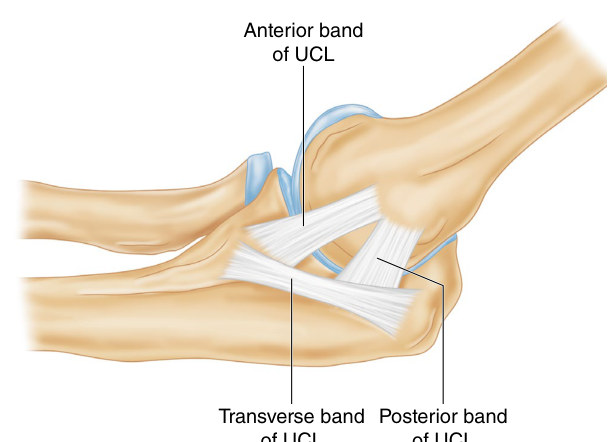
肱尺关节是肱骨远端滑车与尺骨近端滑车切迹之间的铰链关节，在肘关节完全屈曲或伸直时提供骨性稳定。桡骨头与肱骨小头在桡肱小头关节处形成关节，允许铰链和旋转两种运动。近端桡尺关节是桡骨头周边与尺骨桡切迹之间的枢轴关节，协同远端桡尺关节完成前臂的旋前和旋后 [6]。关节囊包绕所有三个关节，支持性韧带结构由内侧和外侧的关节囊增厚部分形成（图 3.1 和图 3.2）。在内侧，尺侧副韧带（UCL）由三束组成 [7]。前束起自内上髁，止于尺骨冠突尖内侧结节（图 3.3）。它是最重要的束，是对抗外翻应力的主要约束结构。前束可进一步分为两带：前带在伸直时紧张，后带在屈曲时紧张。扇形的后束较薄且不够强健。它从肱骨内上髁走行至滑车切迹，构成肘管底壁。薄弱的横束连接其他两束的尺骨附着处，在影像上很少显示，对稳定性无作用。在外侧同样存在三条韧带（图 3.3）：桡侧副韧带（RCL）从肱骨外上髁延伸并止于环状韧带；环状韧带附着于尺骨桡切迹并环绕桡骨头；外侧尺侧副韧带（LUCL）从肱骨外上髁延伸至尺骨的旋后肌嵴，为桡骨头提供支撑。它也是肘部对抗内翻应力的主要约束结构 [6]。肌肉和肌腱为关节提供动态稳定性（图 3.4）[8]。前方，肱二头肌和肱肌是肘关节的主要屈肌，肱二头肌还有助于前臂旋后。肱二头肌的长头和短头
桡侧副韧带
外侧尺侧副韧带
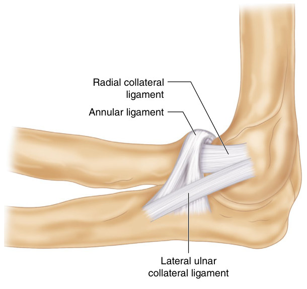
肱二头肌通常在汇合形成一条共同肌腱，穿过肘前窝止于桡骨粗隆。浅层纤维从短头横向跨越肘前窝，形成称为肱二头肌腱膜（lacertus fibrosus）的筋膜延伸，止于浅层旋前屈肌肌群，有助于在远端肌腱断裂时防止肌腱回缩。偶尔，短头和长头的肌腱可全长保持分开，这在轴位 MRI 上可能类似纵向劈裂状撕裂，或导致其中一条肌腱的单独断裂 [9]。肱肌止于冠突腹侧或尺骨粗隆，有助于在屈伸过程中稳定肘关节。在后方间室，肱三头肌有三个头：长头
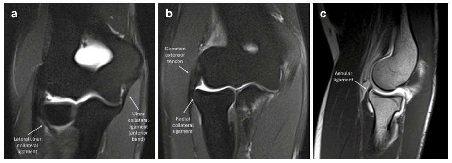
其外侧头与长头汇合形成浅层肱三头肌腱，而内侧头则更深地以肌性附着止于鹰嘴。肘肌起自肱骨外上髁，止于鹰嘴。内侧的旋前屈肌群起自肱骨内上髁的屈肌总腱，包括旋前圆肌、桡侧腕屈肌、掌长肌、指浅屈肌、尺侧腕屈肌和指深屈肌。在肘关节外侧，肌肉可分为三层：浅层由肱桡肌和桡侧腕长伸肌（ECRL）构成，起自肱骨外上髁嵴。伸肌总腱起自肱骨外上髁，发出桡侧腕短伸肌（ECRB）、指伸肌、小指伸肌及尺侧腕伸肌。旋后肌构成最深层。肘部周围的三条主要神经为尺神经、正中神经和桡神经（图 3.4）[3, 8]。尺神经经肱骨内上髁后方进入肘管，在此处易受压。肘管的底由关节囊和尺侧副韧带后束构成，顶由近端的肘管支持带（Osborne 韧带）和远端的尺侧腕屈肌腱膜（弓状韧带）构成。其变异包括肘管支持带增厚、支持带被附属的肘肌上髁肌替代或支持带缺如，这些变异可导致摩擦性神经病变 [9]。正中神经与肱动脉、肱静脉伴行，经肱二头肌腱膜深面、旋前圆肌两头之间及指浅屈肌两头形成的纤维弓深面，并在内上髁远端 4 cm 处分出支配深层屈肌的骨间前神经。桡神经走行于肱二头肌与肱肌之间，进入桡管，其边界为肱肌、肱
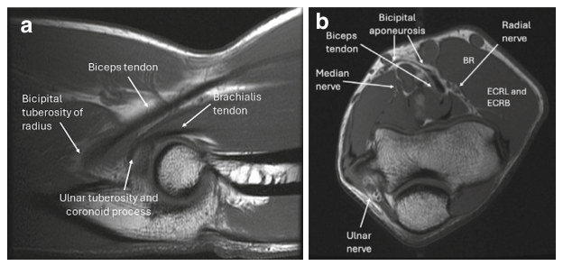
桡肌及桡侧腕长伸肌，并在该处分为浅感觉支和深部的骨间后神经支。
3.4 骨软骨病变
X线片有助于评估急性创伤中的关节积液和移位性骨折。然而，对于X线片提示关节积液且有近期外伤史的患者，可能需要MRI以检出骨挫伤和/或隐匿性骨折，并明确是否伴发软骨或软组织损伤（图 3.5）[10]。当怀疑应力骨折时，MRI也是首选的影像学检查方式。肘部应力骨折最常见于尺骨鹰嘴，原因是过顶投掷运动员在伸直位外翻过载状态下受到反复的肘后内侧剪切力所致[11, 12]。在青少年运动员中，此情况可导致尺骨鹰嘴骨骺炎，表现为尺骨鹰嘴骨骺增宽或闭合延迟，以及骺周骨髓水肿（图 3.6）。骨软骨损伤常见于青少年投掷运动员和体操运动员，因桡骨头关节和后肱尺关节受到反复的撞击力所致，
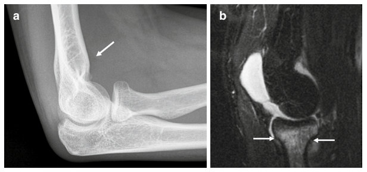
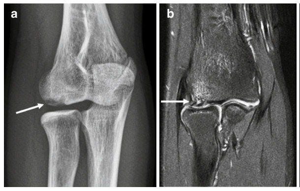
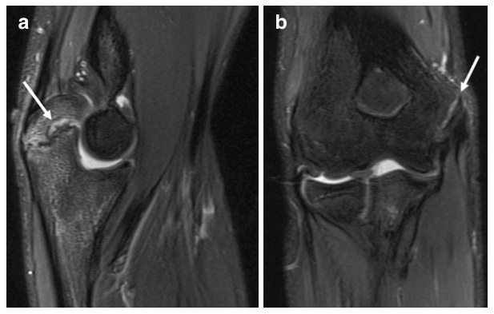
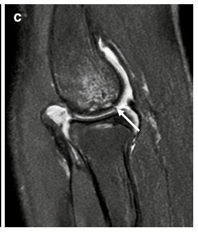
分别导致肱骨小头和滑车的骨软骨损伤（图 3.7 和图 3.8）[12–15]。MRI 可清晰显示关节软骨及软骨下骨，对检测不稳定征象（包括软骨下液体聚集、囊性变或骨块移位）至关重要。MR 或 CT 关节造影也有助于识别不稳定的骨软骨损伤。外翻过伸负荷所致的反复后内侧剪切力还可导致后肱尺关节软骨变薄、软骨下硬化及骨赘形成，并可引起尺骨鹰嘴尖端碎裂及关节游离体[2, 16]。
水肿（箭头），符合剥脱性骨软骨炎（“骨软骨损伤”）。(c) 矢状位 T2 抑脂图像显示肱骨小头前部软骨及软骨下骨板细小缺损（箭头），伴其下方囊性变及骨髓水肿
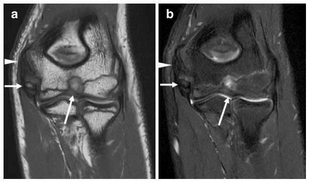
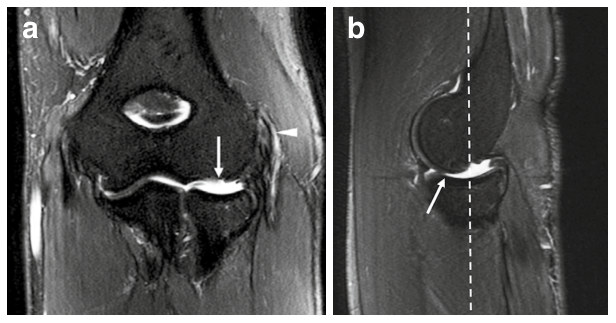
潜在陷阱包括肱骨小头的“假性缺损”，在冠状位 MR 图像上可能酷似骨软骨缺损，尤其当伴有软骨下囊性变时 [9, 10, 17]。然而，与矢状位图像相互参照可显示该区域对应于肱骨小头光滑的前关节面与粗糙不规则的后非关节面之间的正常过渡（图 3.9）。其他正常变异包括滑车沟的“假性缺损”，即滑车中部一段无软骨覆盖的沟槽，以及滑车横嵴，即沿滑车中沟走行的骨嵴，在矢状位图像上可被误认为是已愈合骨折的后遗改变或关节内骨赘 [3, 9]。
3.5 韧带损伤
UCL 损伤由外翻应力引起，可由急性损伤或慢性反复外翻应力所致。MRI 可清楚显示完全性及部分性撕裂，但对于 UCL 远端部分下表面的撕裂可能表现隐匿，MR 关节造影显示更佳（图 3.10）[2, 3]。超声是评估 UCL 的互补工具，在施加外翻应力时进行动态检查检测 UCL 撕裂的效果可与 MRI 相当 [2]。在过顶投掷运动员中慢性反复应力较为常见，尤其是棒球投手和标枪运动员，由于投掷晚摆和加速阶段存在外翻负荷，可导致 UCL 适应性增厚及异位骨化 [16]。沿尺骨近端冠突结节可见牵引骨刺和骨髓水肿，在精英运动员中骨刺可变得非常大。由此导致的外翻不稳定可进而引起投掷运动员出现外侧骨软骨损伤和后内侧剪切损伤，称为外翻伸展过载 [16]。职业投掷运动员可在屈肘外翻外旋（FEVER）体位下成像，有助于提高 UCL 撕裂的显示清晰度并显示关节间隙异常增宽 [18, 19]。在骨骼未成熟运动员中，内侧肘部骨骺是最薄弱环节，反复外翻应力可导致内上髁骨骺炎（“少棒肘”）（图 3.11），急性创伤则可引起内侧骨骺撕脱 [20, 21]。
3.6 肌腱病变
肘关节周围肌腱损伤涵盖从慢性过用损伤到急性外伤损伤的一系列病变。MRI 在评估病变范围、鉴别部分撕裂与完全撕裂、识别相关骨、韧带或滑囊异常以及指导治疗决策中起着关键作用。外上髁病（网球肘）是最常见的肘部肌腱病，通常代表伸肌总腱由于伸肌（特别是桡侧腕短伸肌）过度使用而发生的退行性变。本病最常见于 40～60 岁患者，表现为慢性外侧肘痛。MRI 上表现为肌腱增厚和信号增高（图 3.12），常合并下方桡侧副韧带或外侧尺侧副韧带损伤，如不治疗可导致肘关节不稳并影响手术效果 [1,20,22]。超声可显示伸肌总腱增厚、低回声区、钙化或异常多普勒血流，并可用于引导富血小板血浆（PRP）注射等治疗干预 [1,2]。内上髁病（高尔夫球肘）较外上髁病少见，但最常见于反复受到外翻及屈腕力量作用的运动员或劳动者，属过度使用性损伤。患者表现为慢性内侧肘痛。内侧肘痛的鉴别诊断更具挑战性，因此 MRI 有助于诊断，可显示肌腱增厚、T2 信号增高以及可能合并的尺侧副韧带损伤 [1,20]。超声同样有助于诊断并可引导经皮治疗 [1,2]。在肘关节脱位时，屈肌总腱也可在合并尺侧副韧带断裂的情况下发生撕脱。肱二头肌腱损伤主要见于男性
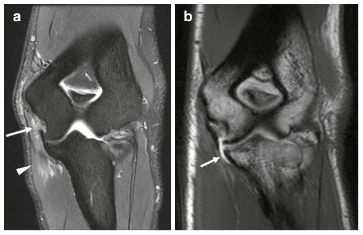
疼痛患者的冠状位 T1 加权 MR 关节造影图像显示远端尺侧副韧带高等级关节面下撕裂，液体进入远端尺侧副韧带与小结节之间（箭头），形成"T 征"
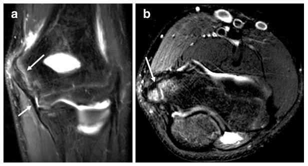
年龄 40～60 岁，通常由于屈肘位下突然的离心负荷或抗阻力强力过伸所致。危险因素包括重体力劳动、合成类固醇使用及吸烟。撕裂可为部分性或完全性，最常累及远端止点（图 3.13）。影像学上应报告撕裂的范围及回缩程度，以及肱二头肌腱膜的完整性，因为腱膜完整时可能在临床查体中掩盖诊断。对患者行
外侧副韧带复合体损伤常
由内翻应力或肘关节后脱位所致，可导致后外侧旋转不稳（PLRI），伴桡骨头后脱位 [3,8]。外侧尺侧副韧带损伤可与中至重度外上髁病并存，常需手术修补或重建 [20,22]
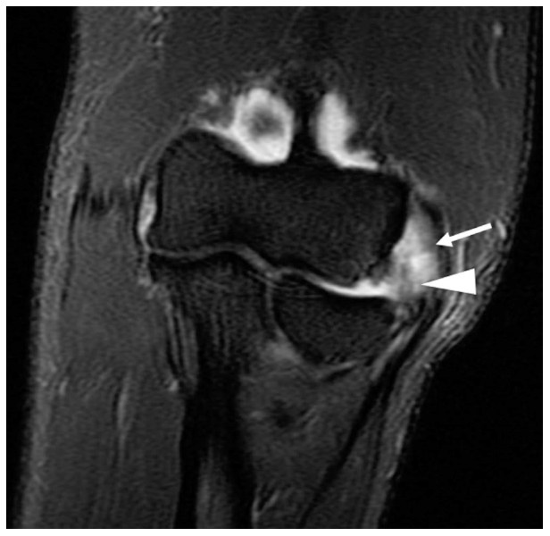
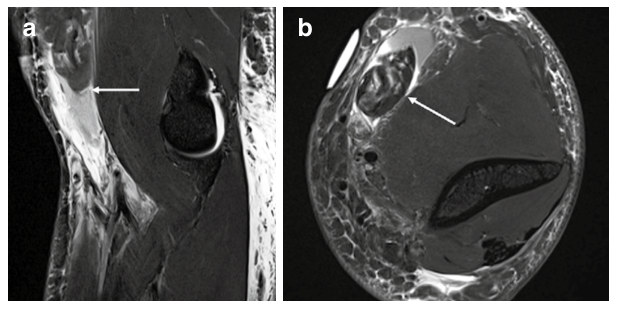
屈曲外展旋后（FABS）位扫描有助于鉴别高等级撕裂与完全撕裂 [1,3,20]。超声具有动态评估的额外优势 [1,23]。反复牵引力也可导致肱二头肌腱病、桡骨粗隆骨肥厚以及邻近肱桡滑囊和骨间膜滑囊炎症，从而诱发肌腱撕裂（图 3.14）[1,24]
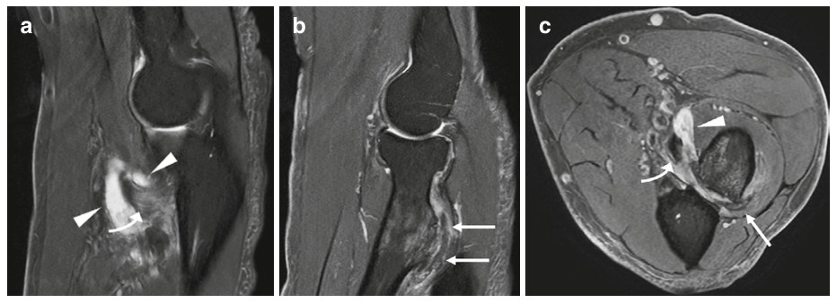
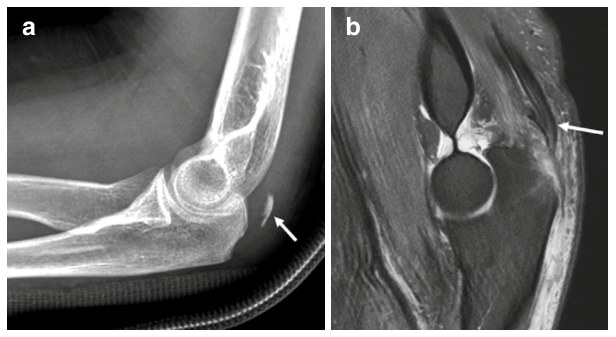
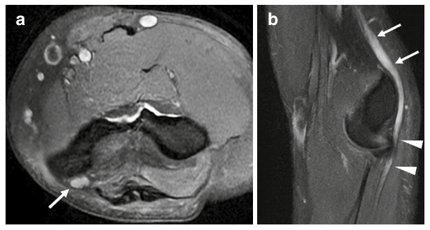
3.7 神经病变
尺神经、正中神经和桡神经走行紧邻骨性结构并穿过狭窄的纤维肌性或纤维骨性管道，因而易因直接外伤、反复活动或卡压而损伤。肘部最常见的神经病变是尺神经病变，最常见的原因是肘管内受到骨赘、异常的肘肌（anconeus epitrochlearis）以及低位肱三头肌内侧头或肿块的压迫。较少见的卡压部位包括 Struthers 弓（上臂中肱三头肌内侧头至内侧肌间隔的纤维束）、尺侧腕屈肌两头之间的压迫，或深屈肌—旋前肌腱膜下方的压迫。患者通常表现为肘内侧不适、尺神经支配区的感觉异常和麻木，
以及手内在肌可能无力。MRI 表现为神经增粗、神经束明显及 T2 高信号（图 3.16），并可显示解剖变异或神经的压迫性病变[3, 8]。然而，必须将影像学表现与临床症状相结合，因为无症状者也可出现尺神经 T2 信号增高[26]。超声也广泛用于评估肘部尺神经病变，其优势在于可动态评估并识别尺神经半脱位[1, 27]。正中神经病变可由多个部位的卡压引起，包括 Struthers 韧带（罕见解剖变异）、增厚的肱二头肌腱膜、指浅屈肌腱弓或拇长屈肌的副头（Gantzer 肌）[1, 9]。然而，最常见的卡压部位是正中神经在肘前窝穿出旋前圆肌浅、深头之间处，
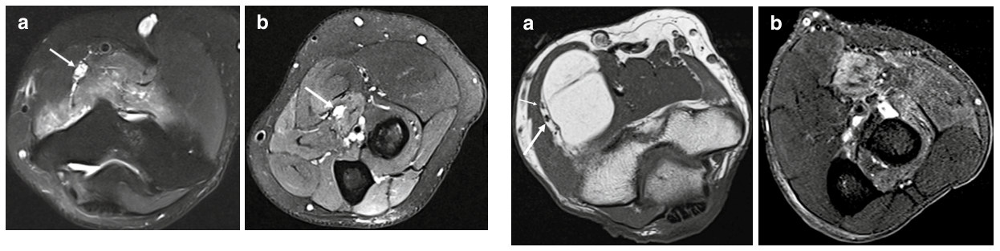
此处可存在纤维束并选择性压迫骨间前神经，正好在其自正中神经分出处。正中神经卡压在体力劳动者、运动员和举重运动员中更为常见，可导致旋前圆肌综合征，表现为前臂掌侧深部疼痛及正中神经支配区的感觉变化。骨间前神经受选择性压迫可引起 Kiloh-Nevin 综合征，导致拇长屈肌、指深屈肌和旋前方肌的运动无力。MRI 可显示卡压的原因以及前臂屈肌的失神经改变（图 3.17）[1, 3]。在急性或亚急性失神经支配时，受累肌肉 T2 信号增高，而慢性失神经则导致脂肪浸润和肌肉萎缩，以脂肪敏感序列显示最佳。肘部桡神经病变可由桡神经管内或 Frohse 弓（前臂近端旋后肌形成的腱性或纤维性弓）处的压迫所致[1, 3]。桡肱二头肌滑囊扩张也可压迫桡神经。桡神经管综合征表现为模糊的前臂背侧疼痛，反复前臂旋转时加重，症状可类似于外上髁炎。骨间后神经受累表现为手指和腕伸肌无力而无感觉丧失。MRI 可显示压迫的原因以及前臂伸肌的失神经改变（图 3.18）[1, 3]。
3.8 滑膜病变
累及肘部的滑膜病变包括类风湿关节炎、痛风、焦磷酸钙沉积病（CPPD）、滑膜骨软骨瘤病及腱鞘巨细胞瘤，表现为关节积液、滑膜增厚和强化，以及关节周围骨质侵蚀。化脓性关节炎可呈类似表现。肘部滑膜皱襞较常见，后方桡骨头滑膜皱襞可增厚并引起机械性症状[28]。
肘部周围有数个滑囊，临床最相关的为鹰嘴滑囊和肱桡肌滑囊。鹰嘴滑囊位于鹰嘴突及远端肱三头肌腱浅层，可因慢性反复劳损、外伤、炎性关节病及感染而发生炎症 [8, 29]。MRI 和超声显示鹰嘴背侧边界清楚的液体积聚，常伴有滑膜增厚（图 3.19）。若怀疑感染，应考虑静脉注射钆对比剂；若无滑囊或软组织强化，基本可排除感染。肱桡肌滑囊位于远端肱二头肌腱与桡骨粗隆之间，可因远端肱二头肌腱病、炎性关节病或感染而发生炎症 [8, 30]。滑囊明显扩张可压迫桡神经。
总之，MRI 是评估肘部疼痛患者的重要手段，能无与伦比地显示骨、软骨、韧带、肌腱、神经及滑囊之间复杂的相互作用。MRI 卓越的空间分辨率和多平面成像能力可检出临床隐匿的细微损伤，并区分急性与慢性病变。重要的是需将 MRI 表现与患者病史、体格检查及其他辅助影像学检查相结合，从而为每位患者制定个体化的治疗策略，改善临床预后。超声同样是评估肘部周围软组织病变的有力工具，优势在于可动态观察结构并引导介入治疗。
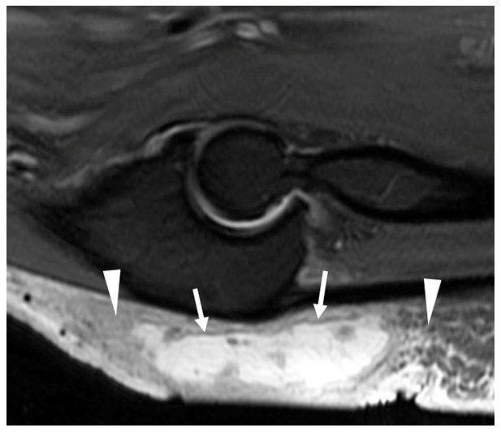
1. 必须熟悉肘部复杂的解剖结构及常见的正常变异，以避免误诊。2. MRI 是评估肘部疼痛（尤其是疼痛定位不明确者）患者的宝贵工具。3. 影像学表现应结合临床病史与损伤机制综合判读。
利益冲突声明 本人/我们声明不存在 Springer Nature 所定义的利益冲突，或其他可能被认为会影响本稿件所报告结果和/或讨论的利益关系。
1. Stevens KJ, McNally EG. Magnetic resonance imaging of the elbow in athletes. Clin Sports Med. 2010;29(4):521–53.
2. Gustas CN, Lee KS. Multimodality imaging of the painful elbow: current imaging concepts and image-guided treatments for the injured thrower’s elbow. Radiol Clin North Am. 2016;54(5):817–39.
3. Acosta Batlle J, Cerezal L, Márquez MV, López Parra MD, Soteras C, Resano S, et al. MRI of the normal elbow and common pathologic conditions. Radiographics. 2020;40(2):468–9.
4. Mogharrabi B, Cabrera A, Chhabra A. 3D isotropic spine echo MR imaging of elbow: how it helps surgical decisions. Eur J Radiol Open. 2022;9:100410.
5. Magee T. Accuracy of 3-T MR arthrography versus conventional 3-T MRI of elbow tendons and ligaments compared with surgery. AJR Am J Roentgenol. 2015;204(1):W70–5.
6. Alcid JG, Ahmad CS, Lee TQ. Elbow anatomy and structural biomechanics. Clin Sports Med. 2004;23(4):503–17. vii
7. Lynch JR, Waitayawinyu T, Hanel DP, Trumble TE. Medial collateral ligament injury in the overhand-throwing athlete. J Hand Surg Am. 2008;33(3):430–7.
8. Stevens KJ. Magnetic resonance imaging of the elbow. J Magn Reson Imaging. 2010;31(5):1036–53. Take-Home Messages 1. It is important to understand the complex anatomy of the elbow and some of the normal variants that can be encountered in order to prevent misdiagnosis. 2. MRI is an invaluable tool in the evaluation of patients with elbow pain, particularly when pain is poorly localized. 3. Imaging findings should be interpreted in conjunction with clinical history and mechanism of injury.
9. Antil N, Stevens KJ, Lutz AM. Elbow imaging: variants and asymptomatic findings. Semin Musculoskelet Radiol. 2021;25(4):546–57.
10. Porrino J, Wang A, Taljanovic M, Stevens KJ. Comprehensive update of elbow magnetic resonance imaging. Curr Probl Diagn Radiol. 2021;50(2):211–28.
11. Furushima K, Itoh Y, Iwabu S, Yamamoto Y, Koga R, Shimizu M. Classification of olecranon stress fractures in baseball players. Am J Sports Med. 2014;42(6):1343–51.
12. Helm JM, Myers NL, Conway JE. Non-medial ulnar collateral ligament elbow pathology in the thrower: valgus extension overload, osteochondritis dissecans, olecranon stress fracture, and ulnar nerve. Clin Sports Med. 2025;44(2):195–214.
13. Nguyen JC, Degnan AJ, Barrera CA, Hee TP, Ganley TJ, Kijowski R. Osteochondritis dissecans of the elbow in children: MRI findings of instability. AJR Am J Roentgenol. 2019;213(5):1145–51.
14. Marshall KW, Marshall DL, Busch MT, Williams JP. Osteochondral lesions of the humeral trochlea in the young athlete. Skeletal Radiol. 2009;38(5):479–91.
15. Wang KK, Bixby SD, Bae DS. Osteochondritis dissecans of the humeral trochlea: characterization of a rare disorder based on 28 cases. Am J Sports Med. 2019;47(9):2167–73.
16. Stevens KJ, Chaudhari AS, Kuhn KJ. Differences in anatomic adaptation and injury patterns related to valgus extension overload in overhead throwing athletes. Diagnostics (Basel). 2024;14(2):217.
17. Rosenberg ZS, Beltran J, Cheung YY. Pseudodefect of the capitellum: potential MR imaging pitfall. Radiology. 1994;191(3):821–3.
18. Lund P, Waslewski GL, Crenshaw K, Schenk M, Munday G, Knoblauch T, et al. FEVER: the flexed elbow valgus external rotation view for MRI evaluation of the ulnar collateral ligament in throwing athletes-a pilot study in major league baseball pitchers. AJR Am J Roentgenol. 2021;217(5):1176–83.
19. Patel M, Schenk M, Rangan P, Crenshaw K, Caplinger R, Raasch W, et al. Correlation of joint space widening on valgus stress magnetic resonance imaging with level of play and innings pitched in professional pitchers. Orthop J Sports Med. 2023;11(11) https://doi.org/10.1177/23259671231209704.
20. Kheterpal AB, Bredella MA. Overuse injuries of the elbow. Radiol Clin North Am. 2019;57(5):931–42.
21. Tariq SM, Patel V, Gendler L, Shah AS, Ganley TJ, Zoga AC, et al. Pediatric thrower’s elbow: maturation-dependent MRI findings in symptomatic baseball players. Pediatr Radiol. 2024;54(1):105–16.
22. Bredella MA, Tirman PF, Fritz RC, Feller JF, Wischer TK, Genant HK. MR imaging findings of lateral ulnar collateral ligament abnormalities in patients with lateral epicondylitis. AJR Am J Roentgenol. 1999;173(5):1379–82.
23. Al-Ani Z, Lauder J. Ultrasound assessment in distal biceps tendon injuries: techniques, pearls and pitfalls. Clin Imaging. 2021;75:46–54.
24. Stevens K, Kwak A, Poplawski S. The biceps muscle from shoulder to elbow. Semin Musculoskelet Radiol. 2012;16(4):296–315.
25. Vicentini JRT, Hilgersom NFJ, Martinez-Salazar EL, Simeone FJ, Bredella MA, Palmer WE, et al. Distal triceps tendon tears: magnetic resonance imaging patterns using a systematic classification. J Comput Assist Tomogr. 2022;46(2):224–30.
26. Husarik DB, Saupe N, Pfirrmann CW, Jost B, Hodler J, Zanetti M. Elbow nerves: MR findings in 60 asymptomatic subjects--normal anatomy, variants, and pitfalls. Radiology. 2009;252(1):148–56.
27. Becciolini M, Pivec C, Raspanti A, Riegler G. Ultrasound of the ulnar nerve: a pictorial review: part 2: pathological ultrasound findings. J Ultrasound Med. 2024;43(6):1153–73.
28. Lee HI, Koh KH, Kim JP, Jaegal M, Kim Y, Park MJ. Prominent synovial plicae in radiocapitellar joints as a potential cause of lateral elbow pain: clinico-radiologic correlation. J Shoulder Elb Surg. 2018;27(8):1349–56.
29. Floemer F, Morrison WB, Bongartz G, Ledermann HP. MRI characteristics of olecranon bursitis. AJR Am J Roentgenol. 2004;183(1):29–34.
30. Yap SH, Griffith JF, Lee RKL. Imaging bicipitoradial bursitis: a pictorial essay. Skeletal Radiol. 2019;48(1):5–10.
腕与手
腕与手
Anna Hirschmann 和 Michael J. Tuite
4.1 引言
腕与手的影像学检查需要整体掌握肌腱、腱鞘、韧带、关节和骨骼的复杂解剖，并了解各种影像学方法（尤其是 MRI 和超声）的相对优势与不足。本章分为两个主要部分：腕部影像和手部影像。腕部部分介绍最常见的骨折类型、舟骨缺血性坏死、腕骨脱位及不稳定类型，以及相关的韧带损伤。还综述了导致腕尺侧疼痛的病变，包括三角纤维软骨复合体（TFCC）撕裂、下尺桡关节病变和尺侧腕伸肌腱异常。其他内容还包括肌腱病变和正中神经疾病。本章第二部分聚焦于手部影像，涵盖伸肌和屈肌腱系统、拇指腕掌（TMC）和掌指（MCP）关节，以及手部的常见骨折类型。对于每个
A. Hirschmann (*) 瑞士巴塞尔大学 Imamed Radiology Nordwest，巴塞尔，瑞士 电子邮件：Anna.hirschmann@unibas.ch
M. J. Tuite 美国威斯康星大学医学院和公共卫生学院放射科，麦迪逊，美国 电子邮件：mjtuite@wisc.edu
解剖部位，我们均重点阐述相关的外伤、退行性疾病和不稳定表现，同时展示在 X 线片、CT、MRI 和超声上的特征性影像表现。特别强调选择最恰当的影像学方法，以实现准确诊断和有效治疗规划。
4.2 腕部解剖
腕部由八块腕骨组成，近侧列四块、远侧列四块，由众多韧带相连，但仅有少量肌腱附着 [1]。豌豆骨较为特殊，因为它仅与一块骨（即三角骨）相关节，是尺侧腕屈肌腱的籽骨。腕部影像学检查通常以 X 线片为起点，摄片体位从两个视图（如后前位（PA）和侧位，用于 Colles 骨折随访）到四个或更多投照不等（如腕部外伤后包括斜位和舟骨位片）。在后前位上，近侧与远侧腕骨列形成三条弧，每条弧均应呈平滑曲线（图 4.1）[2]。两条近侧弧分别沿近侧列三块骨——舟骨、月骨和三角骨的边缘走行；中弧还延伸至远侧列的大、小多角骨的头-小关节面；远侧弧沿远侧列两块骨——钩骨和头骨走行。任何一条弧出现中断，均应警惕骨折或脱位性损伤。
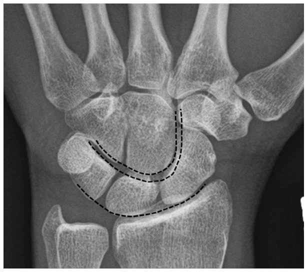
4.3 腕部骨折
腕部 X 线片几乎可显示所有桡骨远端骨折，但对舟骨骨折的敏感度较低。舟骨是最常发生骨折的腕骨，X 线片对舟骨骨折的敏感度约为 80% [3]。若 X 线片阴性而临床高度怀疑（如鼻烟壶局灶压痛），则 MR 是最佳的进一步检查方法，其敏感度为 94%，特异度为 98%。CT 和 US 的准确性较低，敏感度均为 82%，特异度分别为 96% 和 77%。第二常见的腕骨骨折为三角骨骨折，通常发生于背侧桡腕韧带附着处的背侧撕脱骨折。此类三角骨骨折在侧位 X 线片上显示最佳。位列其后常见的骨折部位为钩骨和大多角骨。钩骨骨折常见于钩突，可发生于跌倒后或持握球棒的体育运动中，如棒
球、高尔夫球或曲棍球。这类骨折常需采用腕管位 X 线片或 CT、MR 检查才能诊断。大多角骨骨折也常在 X 线片上漏诊。这些骨折常合并第一掌骨基底骨折，即 Bennett 骨折和 Rolando 骨折 [4]。单纯性骨折常累及结节，即大多角骨的掌侧或掌嵴。大多角骨结节骨折常仅在 CT 或 MR 成像时才能检出。
4.4 舟骨缺血性坏死
虽然慢性晚期舟骨缺血性坏死（AVN）可在 X 线片上显示，但 MRI 对早期 AVN 的检出更为敏感。舟骨 AVN 最常见的原因是近极骨折不愈合，但也可见于舟骨腰部及/或已愈合的骨折。部分舟骨 AVN 与外伤无关，称为 Preiser 病。舟骨 AVN 的 MRI 表现多样，但通常在 T1 加权像上呈低信号、T2 加权像上呈高信号，病变位于舟骨近极（图 4.2）。在舟骨骨折不愈合患者中，T1 加权像上近极的融合性低信号对 AVN 的诊断准确率为 79%，但也可见于部分愈合中的骨折 [5]。近极的 T2 高信号既可见于存活的近极，也可见于骨坏死的近极，因此参考价值有限。关于增强图像或钆剂动态增强扫描能否显著提高对舟骨 AVN 的诊断准确性，文献中尚存争议：有研究认为可以 [6]，也有研究认为不可以 [5,7]，因为在约 50% 的无活力舟骨近极中亦可观察到对比强化。
未愈合舟骨骨折进行性成角
畸形，因此行 MRI 检查以
骨折（箭头）邻近可见骨髓水肿样信号及强化（弯箭），但近极骨髓信号正常，未见 AVN
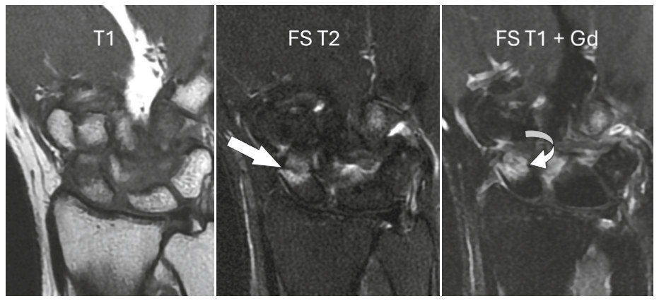
嵌入段（即中间体），意味着它们没有肌腱附着，因而可独立于桡骨或远侧腕骨列向掌侧或背侧旋转。近侧腕骨的第四块——豌豆骨，有来自尺侧腕屈肌和小指展肌腱的附着。DISI 和 VISI 失稳在腕中立侧位 X 线片上诊断最佳。DISI 表现为舟月分离，月骨背伸 >10°，舟月角 >70°[10]。VISI 通常由月三角韧带损伤所致，侧位上月骨相对桡骨和头状骨纵轴向掌侧屈曲 >15°，且舟月角 <30°。
4.5 腕关节脱位
腕关节脱位的一种常见模式为"月骨周围损伤"，通常发生于轴向负荷伴背伸时，常合并尺偏和旋后[8]。这些脱位性损伤被描述为暴力递增的渐进性分期。Ⅰ期为舟月分离。Ⅱ期为月骨周围脱位，月骨仍与桡骨相关节，但其余腕骨向背侧脱位。Ⅲ期为腕中关节脱位，远侧腕骨相对桡骨部分复位而月骨向掌侧半脱位；Ⅳ期为月骨向掌侧脱位，三角骨和远侧腕骨列与桡骨对线。高级别月骨周围脱位性损伤常合并舟骨腰部骨折，但也可累及其他腕骨。另一种分类系统主要根据脱位是发生于单列内（分离性）抑或位于近侧腕骨列与桡骨或远侧列之间（非分离性），将失稳分为四组[9]。
4.7 腕骨韧带
腕骨韧带分为内在韧带（仅附着于腕骨）和外在韧带（至少有一处附着于腕骨以外的结构）。舟月（SL）韧带和月三角（LT）韧带属于内在韧带，进一步归类为关节内韧带，而大多数背侧和掌侧的内在及外在韧带被视为关节囊内韧带。SL 和 LT 韧带很重要，因为损伤后可引起慢性疼痛。这些韧带撕裂可发生在无影像学可见分离的情况下，MRI 为最佳成像方式。两条韧带均呈 U 形，由背侧、中央和掌侧三部分组成。对于 SL 韧带，背侧由其最厚和最强韧的部分。骨间和掌侧成分的小撕裂可见于无症状者，而背侧撕裂常出现症状，并可延伸累及邻近部分。SL 韧带的完全撕裂可导致分离、SLAC 腕或 DISI。相反，LT 韧带的掌侧由其最厚的部分构成，掌侧部的孤立撕裂可延伸累及韧带
4.6 腕关节失稳
腕关节失稳可发生于急性损伤后韧带未能愈合，或由反复创伤引起。腕部常见的静态失稳为舟月韧带大范围撕裂所致的舟月分离，表现为舟月间隙增宽。舟月分离可进展为舟月进行性塌陷（SLAC 腕），尤其见于慢性关节炎患者。其他常见的失稳模式包括背侧嵌入段失稳（DISI）和掌侧嵌入段失稳（VISI）。近侧腕骨列的三块骨——舟骨、月骨和三角骨——形成一个嵌
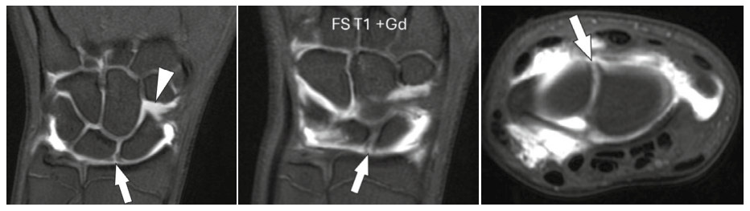
其余部分。掌侧成分还与尺腕韧带融合，参与构成三角纤维软骨复合体（TFCC）。LT 韧带的完全撕裂可导致月骨掌向旋转和 VISI。使用 MRI 成像评估 SL 和 LT 韧带时，应采用小视野（8–10 cm）和薄层扫描。许多中心推荐使用脂肪抑制液体敏感薄层三维各向同性容积采集，不仅可减小部分容积效应，还便于图像后处理重组。SL 和 LT 韧带撕裂表现为韧带不显示或线状液体信号贯穿（图 4.3）。
连至尺骨茎突的板层结构。位于近侧和远侧板层之间的纤维构成韧带下疏松结缔组织（ligamentum subcruentum）。TFC 还存在背侧和掌侧的韧带附着，是 TFCC 的重要稳定结构。掌侧和背侧桡尺韧带沿 TFC 的前后缘附着，通常被视为 TFC 盘本体的一部分。半月板同源体位于远侧板层的远端，与背侧桡尺韧带融合。远侧板层亦有纤维向外周延伸，汇入尺侧副韧带和尺侧腕伸肌（ECU）腱下鞘，最后附着于三角骨。TFCC 撕裂可按 Palmer 分型[12]进行分类。该分型将 TFCC 撕裂分为Ⅰ类创伤性撕裂和Ⅱ类退行性撕裂。Ⅱ类退行性撕裂按 TFCC 进行性磨损或穿孔分为ⅡA 至ⅡE 级。Ⅰ类创伤性损伤根据撕裂部位分类。急性 TFCC 撕裂最常见的部位为 TFC 盘中央穿孔，归为 IA 型。累及近侧和/或远侧板层的创伤性撕裂为 IB 型，自腕骨远端撕脱伴尺腕韧带撕裂为 IC 型，桡侧撕脱为 ID 型。在正常无症状个体中，远端尺骨相对桡骨可略长或略短 1–2 mm，偏长时称为正向（+）尺骨变异。尺骨相对桡骨的长度随体位而变化，腕旋前或用力握拳时可额外增加 1–2 mm。尺骨撞击综合征或尺骨撞击综合征定义为因正向（+）尺骨变异（通常 >2 mm）导致尺骨撞击 TFCC 而引起的尺侧腕痛[13]。由于腕旋前或用力握拳可加重正向尺骨变异，故中立位时尺骨变异为零的患者，在旋前、用力握拳或尺偏时也可出现症状而发生尺骨撞击综合征。尺骨撞击综合征患者可发生 TFCC 撕裂。
4.8 三角纤维软骨复合体（TFCC）与尺骨撞击综合征
TFCC 由中央的三角形纤维软骨（TFC）盘及其周围附着多条韧带构成[11]。TFC 附着于桡骨处位于桡骨关节面与乙状切迹之间（图 4.4）。TFC 与尺骨有两处附着：近侧板层附着于尺骨凹，远侧
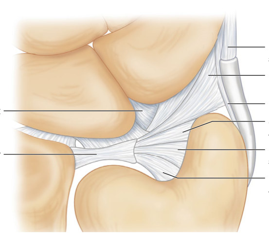
4.9 尺骨撞击综合征与尺骨负变异
尺骨撞击综合征不同于尺骨冲击/碰撞综合征，见于尺骨相对于桡骨较短、即尺骨负变异的患者，因此与尺骨冲击综合征所见相反。尺骨撞击综合征发生于尺骨过短，使远端尺骨位于乙状切迹近侧并侵蚀桡骨侧方。常伴疼痛，可引起骨重塑、骨赘形成和局灶性骨髓水肿。尺骨负变异（尤其是短于 2 mm 以上）也与月骨 Kienböck 骨坏死相关[14]。X 线片可显示月骨硬化或变扁，但 MRI 对早期 AVN 的骨髓改变更敏感。症状常可通过尺骨延长或桡骨缩短手术得到缓解。
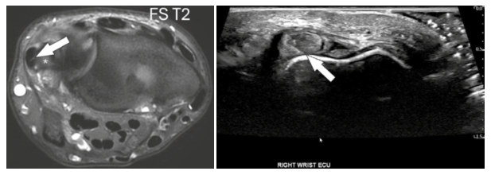
4.10 腕部肌腱
4.10.1 尺侧腕伸肌
ECU 是腕部最常发生病变并出现症状的肌腱。ECU 肌腱病变包括肌腱病、腱鞘炎、撕裂以及半脱位或脱位（图 4.5）。肌腱病不应与无症状性黏液样变性所致的肌腱内中央高信号常见假性病变相混淆。在旋前、屈腕或尺偏时肌腱部分脱出尺骨沟也可见于无症状性
茎突附着
韧带间质（Ligamentum subcruentum）
小凹附着
的腕部，其脱出程度最大可达肌腱直径的 50% 或 5 mm[15]。
4.10.2 拇长展肌与拇短伸肌
拇长展肌（APL）和拇短伸肌（EPB）是位于第一伸肌腱鞘内的肌腱，可因腱鞘炎而出现疼痛。第一伸肌腱鞘狭窄性腱鞘炎称为 de Quervain 病，多因过度使用、妊娠及产后（尤其在哺乳期母亲）引起，也可由其上方伸肌支持带异常增厚所致。MRI 表现典型为 APL 和 EPB 肌腱增厚及第一腱鞘腱鞘积液。第一伸肌腱鞘存在多种正常变异，包括 APL 多束或将其分隔为两个独立腱鞘的隔膜。这些变异与 de Quervain 病发病率升高相关，且在超声上识别两个独立的腱鞘具有重要意义
在进行治疗性腱鞘类固醇注射时，可避免仅治疗其中一根肌腱。
4.10.3 交叉综合征
腕部附近存在两种交叉综合征，均累及伸肌腱。远端交叉综合征发生于 Lister 结节远端，此处位于第三伸肌腱鞘内的拇长伸肌腱跨越包含桡侧腕短伸肌（ECRB）和桡侧腕长伸肌（ECRL）的第二伸肌腱鞘。近端交叉综合征发生于桡骨远端以近约 4 cm 处，此处第一伸肌腱鞘的肌腱（APL 和 EPB）跨越第二伸肌腱鞘的 ECRB 和 ECRL。交叉综合征患者常伴有深部肌腱的肌腱病和腱鞘炎。
4.11 正中神经
人体最常见的卡压性神经病为正中神经卡压，称为腕管综合征。腕管综合征通常结合临床表现和神经传导检查作出诊断。超声和 MRI 在腕管综合征初始诊断中的应用仍存争议，但已应用多项影像学征象，包括腕横韧带（TCL）向掌侧弓起、正中神经横截面积增大、正中神经于桡骨远端与豌豆骨层面（腕横韧带近端）相比肿胀比增加，以及扁平比大于 2.0 [16]。部分机构仅对既往行腕管松解术后症状持续或复发的患者使用超声或 MR 检查。超声在术后评估中尤为有用，因其既能评估腕横韧带松解不全或重新粘连的征象，又可作为神经周围类固醇注射的影像引导。
4.12 腱鞘囊肿
尽管研究常报告多数腕部腱鞘囊肿并无疼痛，但部分患者的囊肿疼痛可显著影响日常活动 [17]。腕部腱鞘囊肿可能无法触及，因此影像学检查有助于发现这些隐匿性腱鞘囊肿。约 70%–80% 的腕部腱鞘囊肿发生于腕背侧。背侧腱鞘囊肿的常见部位为起源于舟月关节，通常位于背侧桡腕韧带与腕骨间韧带之间，
其成因被认为是在背侧关节囊舟月间隔附着处发生关节囊撕裂。腱鞘囊肿在 MRI 和超声上均可清晰显示，超声还可引导囊肿穿剌开窗及类固醇注射治疗。
4.13 掌骨和指骨骨折
掌骨和指骨骨折是最常见的手部损伤之一，多由跌倒、挤压伤、运动或直接撞击所致。准确的影像学评估对于判断骨折部位、移位、关节内延伸、成角、粉碎程度及合并的软组织损伤至关重要。在掌骨骨折中，第五掌骨颈骨折（拳击手骨折）最为常见 [18]。指骨骨折可表现为横形、斜形或关节内骨折形态，也可伴有累及肌腱止点或侧副韧带附着处的小撕脱骨片。指骨基底部关节内骨折可累及关节软骨，需要精确评估。X 线平片仍是骨折诊断的基石：标准投照位（如后前位、斜位、侧位）通常可显示骨折线、移位、成角和对线情况。CT 有助于检出细小关节内骨片、轻微粉碎，并为复杂移位骨折的手术固定提供规划。
4.14 拇指包括腕掌关节
第一腕掌关节（TMC）因其鞍状解剖形态以及在拇指对掌和捏持功能中的关键作用，极易发生退行性疾病和创伤性不稳定。其稳定性由复杂的韧带网络维持，包括前斜韧带（喙韧带）、后斜韧带、背桡侧韧带和掌骨间韧带 [19]。手部最常见的退行性疾病为拇指 TMC 骨关节炎，由韧带慢性功能不全和关节面进行性磨损所致。标准后前位和侧位投照通常即可满足诊断需求，但怀疑不稳定时可加摄特殊应力位片。多种分级系统（如 Eaton-Littler 分级系统）依据 X 线平片对疾病严重程度进行分期。TMC 关节的创伤性损伤包括掌骨基底部关节内骨折，最常见者为 Bennett 骨折（一种伴脱位倾向的斜形关节内骨折）以及 Rolando 骨折（粉碎性关节内骨折，本质上为 Bennett 骨折伴额外背侧或桡侧骨片）[20]。CT 对急性期评估具有重要价值，可精确地——
化骨折形态、粉碎程度及细微关节对位不良，以便进行手术规划。拇指掌指关节（MCP）由尺侧和桡侧副韧带、掌侧韧带（指骨-关节盂韧带及掌板）和背侧关节囊支持 [21]。其中，尺侧副韧带（UCL）损伤最为常见。在 UCL 完全撕裂时，韧带可向近端回缩并嵌顿于内收肌腱膜上方，形成特征性的 Stener 病变（图 4.6）[22]。在超声和 MRI 上可表现为“线上的悠悠球”样结构。移位的 UCL 无法实现解剖愈合，必须手术修复。MRI（100%）和超声（91%）诊断 UCL 撕裂均具有较高的特异度；但在鉴别 UCL 撕裂为非移位还是移位时，MRI（92%）的特异度高于超声（72%）[23]。X 线平片可显示小的撕脱骨折片（图 4.7），但通常仅提供间接信息，如 MCP 关节增宽。掌侧韧带损伤在拇指中虽不如手指常见，但常（>92%）与 UCL 损伤合并出现，应在 MRI 和超声上积极评估（图 4.8）[22]。
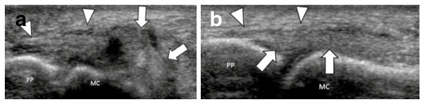
4.15 伸肌腱及矢状带
手指伸肌装置由指总伸肌（EDC）腱构成，向远端延续为伸肌腱帽、外侧束及终腱 [24]。其解剖变异多见，第 4、5 指常可见双束 [24]。腱间结合为 EDC 腱之间的纤维连接，以示指、中指和环指之间最为明显 [24]。这些腱间结合可稳定手背部的伸肌腱，分散伸指应力并限制手指的独立活动，从而解释了中央三指伸指时常出现的联动现象。在超声上表现为连接相邻肌腱的高回声带；在 MRI 上表现为肌腱间的低信号带（图 4.9）。其单独损伤罕见，但瘢痕形成或断裂可能在创伤或术后引起伸指滞后或手指独立性下降。在掌指关节（MCP）水平，伸肌腱由桡侧和尺侧矢状带加以稳定，它们起自掌侧板、深横掌骨韧带及邻近软组织，包绕肌腱并维持其位于掌骨头中央（图 4.10）[24,25]。矢状带抵抗 MCP 活动时肌腱的尺偏或桡偏，防止其半脱位或脱位。
伸肌腱帽进一步分出一条中央束，止于中节指骨，以及两条外侧束汇聚形成止于远节指骨的终腱[24]。经典损伤为矢状带断裂，传统上称为拳击手指节。一个或两个矢状带损伤会导致伸肌腱半脱位或脱位。患者通常表现为掌指关节处疼痛性弹响或主动伸展功能丧失。桡侧矢状带更常受累，尤其是中指，这与解剖学易感性有关。慢性不稳定可导致持续的伸肌滞后和功能下降。超声是评估矢状带病变的极佳方法。在握拳动作中，可在实时动态下观察到半脱位或脱位的肌腱
。矢状带撕裂表现为纤维带状结构中的低回声间隙或变薄（图 4.11）。多普勒信号可显示伴随的充血。MRI 可提供互补的静态细节，显示伸肌腱相对于掌骨头的移位以及矢状带撕裂部位的液体信号。在轴位序列上，原本居中的肌腱呈偏心性移位，但在手指处于伸展位成像时此征象可能被掩盖。
在矢状带与侧副韧带联合损伤中，移位的侧副韧带可嵌入伸肌腱帽内，形成类似 Stener 病变的损伤（图 4.12）[26]。掌指关节的桡侧副韧带损伤更常累及第四和第五指，而尺侧副韧带损伤则更多见于示指，因其缺乏相邻骨间肌的稳定支撑[26]。其他伸肌腱损伤包括远端的部分或全层撕裂，如外伤或磨损所致的中束或外侧束撕裂。槌状指是另一类常见损伤，由远节指间关节伸展位受到强制屈曲时，终腱在远节指骨基底部撕脱所致[20]。槌状指损伤可伴或不伴骨碎片，其中单纯肌腱损伤更为常见[19]。若为骨性撕脱，必须描述骨片大小、脱位程度及关节面受累的百分比。
右手
重建图像显示
（b–e）轴位 T2 加权 MR 图像显示桡侧矢状带全层撕裂（箭头所示）及伴发的桡侧副韧带（RCL；星号）移位撕裂。RCL 嵌入矢状带缺损内并向浅层移位，构成类 Stener 病变
4.16 屈肌腱及滑车系统
最具临床紧迫性的损伤是 Jersey 指，即指深屈肌腱（FDP）于其远端止点处的断裂，典型发生于近端指间关节屈曲位时受到强制伸展[20]。肌腱可回缩至掌部。第四指最常受累。掌板撕脱常发生于较薄弱的远端止点，可由关节脱位引起；主要累及近端指间关节[20]。肌腱裂伤可发生，因伸肌腱位置表浅，故更常受累。屈肌腱裂伤后更易回缩，因其缺乏充分的周围稳定纤维网。MRI 或超声可精确检出浅、深肌腱受累的程度（图 4.14）。向外科医生描述肌腱回缩程度、肌腱断端质量以及可能导致肌腱裂伤的骨性异常至关重要[18,28]。
手指屈肌腱由指深屈肌腱（FDP）和指浅屈肌腱（FDS）组成，二者在每指掌侧的纤维骨性管道内滑动。该管道由一系列环形滑车（A1–A5）和交叉滑车（C1–C3）加强。其中 A2 和 A4 滑车在生物力学上最为重要，可在手指屈曲时通过维持肌腱紧贴指骨来防止肌腱弓弦状突起[18,27,28]。A2 滑车最常损伤，尤其多见于攀岩者，其次为 A4 滑车（图 4.13）。屈肌腱弓弦状突起表现为肌腱与指骨皮质之间的距离增大——通常在滑车水平超过 1 mm[29,30]。在强制屈曲时，距离 ≥3 mm 提示 A2 滑车完全断裂，距离 ≥5 mm 则提示 A2/A3 滑车联合断裂[29,30]。距离 ≥2.5 mm 提示 A4 滑车断裂[29]。A1 滑车位于掌骨颈水平，常受累于狭窄性腱鞘炎（扳机指）。扳机指由慢性过度使用引起；屈肌腱在 A1 滑车处因滑膜或滑车本身增厚而卡顿。临床上最为紧迫的
对复杂的关节内和粉碎性骨折具有更佳的评估价值。通过以问题为导向的多模态成像方法，针对具体临床问题选择适当的影像学检查，可实现最佳的患者管理。
4.17 小结
腕关节与手部的影像检查不仅需要掌握各种现有成像方式的技术知识，还需深入理解其解剖结构与损伤机制。平片仍是评估的首要基本步骤。超声因其动态成像能力，对评估肌腱及滑车完整性具有重要价值。MRI 仍是发现细微韧带撕裂、肌腱断裂及软骨或骨髓病变的金标准，而 CT 则提供
1. Chang AL, Yu HJ, von Borstel D, Nozaki T, Horiuchi S, Terada Y, Yoshioka H. Advanced imaging techniques of the wrist. AJR Am J Roentgenol. 2017;209(3):497–510.
2. Loredo R, Sorge D, Garcia G. Radiographic evaluation of the wrist: a vanishing art. Semin Roentgenol. 2005;40(3):248–89.
3. Bäcker HC, Wu CH, Strauch RJ. Systematic review of diagnosis of clinically suspected scaphoid fractures. J Wrist Surg. 2020;9(1):81–9.
4. Beekhuizen SR, Quispel CR, Jasper J, Deijkers RLM. The uncommon trapezium fracture: a case series. J Wrist Surg. 2020;9(1):63–70.
5. Fox MG, Gaskin CM, Chhabra AB, Anderson MW. Assessment of scaphoid viability with MRI: a reassessment of findings on unenhanced MR images. AJR Am J Roentgenol. 2010;195(4):281–6.
6. Cerezal L, Abascal F, Canga A, Garcfa-Valtuille R, Bustamante M, del Pinal F. Usefulness of gadolinium- enhanced MR imaging in the evaluation of the vascularity of scaphoid nonunions. AJR Am J Roentgenol. 2000;174:141–9.
7. Murthy NS. The role of magnetic resonance imaging in scaphoid fractures. J Hand Surg Am. 2013;38(10):2047–54.
8. Mayfield JK, Johnson RP, Kilcoyne RK. Carpal dislocations: pathomechanics and progressive perilunar instability. J Hand Surg Am. 1980;5(3):226–41.
9. Wright TW, Dobyns JH, Linscheid RL, Macksoud W, Siegert J. Carpal instability non-dissociative. J Hand Surg Br. 1994;19(6):763–73.
10. Braun NS, Berger RA, Wolfe SW. Defining DISI and VISI. J Hand Surg Eur. 2021;46(5):566–8.
11. van der Post AS, Jens S, Smithuis FF, Obdeijn MC, Oostra RJ, Maas M. The triangular fibrocartilage complex on high-resolution 3 T MRI in healthy adolescents: the thin line between asymptomatic findings and pathology. Skeletal Radiol. 2021;50(11):2195–204.
12. Doarn MC, Wysocki RW. Acute TFCC injury. Oper Tech Sports Med. 2016;24:123–5.
13. Cerezal L, del Piñal F, Abascal F, García-Valtuille R, Pereda T, Canga A. Imaging findings in ulnar-sided wrist impaction syndromes. Radiographics. 2002;22(1):105–21.
14. Chen W. Kienböck disease and negative ulnar variance. J Bone Joint Surg Am. 2000;82(1):143–4.
15. Lee KS, Ablove RH, Singh S, De Smet AA, Haaland B, Fine JP. Ultrasound imaging of normal displacement of the extensor carpi ulnaris tendon within the ulnar groove in 12 forearm-wrist positions. AJR Am J Roentgenol. 2009;193(3):651–5.
16. Huang YT, Chen CJ, Wang YW, Horng YS. Comparing the carpal tunnel area and carpal boundaries in patients with carpal tunnel syndrome and healthy volunteers: a magnetic resonance imaging study. Diagnostics (Basel). 2025;15(10):1205.
17. Gude W, Morelli V. Ganglion cysts of the wrist: pathophysiology, clinical picture, and management. Curr Rev Musculoskelet Med. 2008;1(3–4):205–11.
18. Wieschhoff GG, Sheehan SE, Wortman JR, Dyer GSM, Sodickson AD, Patel KI, Khurana B. Traumatic finger injuries: what the orthopedic surgeon wants to know. Radiographics. 2016;36:1106–28.
19. Weintraub MD, Hansford BG, Stilwill SE, Allen H, Leake RL, Hanrahan CJ, Chan BY, Soltanolkotabi M, Kobes P, Mills MK. Avulsion injuries of the hand and wrist. Radiographics. 2020;40:163–80.
20. Smith TA, Bueno B, Phelan JV, Andand D, Kirschenbaum D, Katt BM. Stener-like lesions in the hand: a qualitative review. Hand. 2024;19(7):1097–101.
21. Hirschmann A, Sutter R, Schweizer A, Pfirrmann CWA. The carpometacarpal joint of the thumb: MR appearance in asymptomatic volunteers. Skeletal Radiol. 2013;42:1105–12.
22. Hirschmann A, Sutter R, Schweizer A, Pfirrmann CWA. MRI of the thumb: anatomy and spectrum of findings in asymptomatic volunteers. AJR Am J Roentgenol. 2014;202(4):819–27.
23. Manneck S, Del Grande F, Hirschmann A. Ulnar collateral ligament injuries of the first metacarpophalangeal joint: prevalence of associated injuries on radiographs and MRI. Skeletal Radiol. 2021;50:505–13.
24. Rashidi A, Haj-Mirzaian A, Dalili D, Fritz B, Fritz J. Evidence-based use of clinical examination, ultrasonography, and MRI for diagnosing ulnar collateral ligament tears of the metacarpophalangeal joint of the thumb: systematic review and meta-analysis. Eur Radiol. 2021;31:5699–712.
25. Clavero J, Golano P, Farinas O, Alomar X, Monill JM, Esplugas M. Extensor mechanism of the fingers: MR imaging-anatomic correlation. Radiographics. 2003;23:593–611.
26. Theumann NH, Pfirmmann CWA, Drapé JL, Trudell DJ, Resnick D. MR imaging of the metacarpophalangeal joints of the fingers. Part I. Conventional MR imaging and MR arthrographic findings in cadavers. Radiology. 2002;222:437–45.
27. McCarthy C. Ultrasound of normal and injured ligaments and retinacula of the hand. Semin Musculoskeletal Radiol. 2020;24:83–100.
28. Lapegue F, Andre A, Brun C, Bakouche S, Chiavassa H, Sans N, Faruch M. Traumatic flexor tendon injuries. Diagn Interv Imaging. 2015;96:1279–92.
29. Klauser A, Frauscher F, Bodner G, Halpern EJ, Schocke MF, Springer P, Gabl M, Judmaier W, zur Nedden D. Finger pulley injuries in extreme rock climbers: depiction with dynamic US. Radiology. 2002;222:755–61.
30. Hauger O, Chung CB, Lektrakul N, Botte MJ, Trudell D, Boutin RD, Resnick D. Pulley system in the fingers: normal anatomy and simulated lesions in cadavers at MR imaging, CT, and US with and without contrast material distention of the tendon sheath. Radiology. 2000;217:201–12.
髋关节影像学的现状
髋关节影像学的现状
Reto Sutter 和 Donna G. Blankenbaker
5.1 骨折
应力骨折是由于骨骼原有强度与长期施加于骨骼的慢性机械负荷之间不匹配所致 [1]。早期识别这些损伤至关重要，因为它们可进展为完全性骨折，并导致恢复期延长及更多并发症。应力骨折最常见于耐力运动员，如跑者和新兵，但也见于短时间内活动量骤增的业余运动爱好者 [2, 3]。应力骨折分为疲劳性骨折（正常骨骼承受异常重复应力所致）和功能不全性骨折（异常骨骼承受正常应力所致
R. Sutter (*) 瑞士苏黎世大学 Balgrist 大学医院放射科 e-mail: reto.sutter@balgrist.ch
D. G. Blankenbaker 美国威斯康星大学医学院与公共卫生学院肌骨影像与介入科 e-mail: dblankenbaker@uwhealth.org
[1]）。反复过载导致破骨活动增强，超过成骨细胞新骨形成的速率，从而引起骨质减弱和微小梁骨折（应力损伤），最终可能导致皮质断裂（骨折）[3]。这些损伤通常发生于股骨颈内侧，该处以压缩应力为主，但也可发生于外侧，该处以拉伸应力为主 [1]。结合临床病史和特征性影像学表现，包括局灶性骨膜反应、皮质中断及骨小梁硬化，是本病的典型表现。然而，股骨颈应力骨折在 X 线平片上常为隐匿性。典型 MRI 特征包括因微小梁骨折和水肿导致的边界不清的局灶性或弥漫性 T2 高信号骨髓水肿，可伴或不伴相应的 T1 低信号和/或骨膜水肿。当出现这些征象时，应仔细评估骨髓内是否存在低信号带或局灶性皮质异常，提示应力骨折，需延长免负重或停止运动的时间（图 5.1）。
硬化带（箭头）。同一患者冠状位 T2 加权脂肪抑制 MR 图像（b）显示股骨颈内侧的低信号线（箭头）伴广泛周围骨髓水肿
进展至塌陷前期，因此早期影像识别至关重要 [6]。将 SIF 与骨坏死鉴别不仅对确定恰当的初始治疗方案重要，也对术前及术后管理规划具有意义。典型 MRI 表现为与关节面平行的软骨下低信号线及股骨头和/或股骨颈的广泛骨髓水肿（BME）。增强 MRI 有助于鉴别 SIF 与骨坏死：SIF 的髋关节在股骨头内低信号带关节侧可见强化，而骨坏死的坏死区无强化 [7]。股骨头完全性骨折少见，多见于高能量创伤后的髋关节后脱位 [8]。已提出多种股骨近端骨折-脱位分类系统，但 Pipkin 分类系统因其简便性仍在使用 [8]。Pipkin 1 型骨折局限于股骨头凹以下，2 型骨折延伸至凹以上，3 型为 1 型或 2 型股骨头骨折合并股骨颈骨折，4 型为 1 型或 2 型股骨头骨折合并髋臼骨折。髋关节脱位（前脱位及后脱位）后常发生股骨头骨软骨撞击骨折。这些损伤在 X 线片上可能隐匿或仅表现为股骨头轻微轮廓变平或局部撞击缺损。CT 或 MRI 可提高此类隐匿病变的检出率。股骨颈骨折按部位分为头下型、经颈型或基底型，并按移位与否分为移位型和无移位型。老年人中，低能量创伤更常导致横形头下型股骨颈骨折或转子间骨折 [8]。Garden 分类在老年人中最为常用，该系统分为四期：1 期为不完全或外翻嵌插骨折；2 期为完全骨折但无移位；3 期为完全骨折伴部分移位；4 期为完全骨折伴完全移位 [8]。大多数股骨颈骨折在正侧位 X 线片上即可良好显示；MRI 用于诊断不明确者，尤其在骨质疏松患者中以明确诊断
5.2 髋关节缺血性坏死
股骨头缺血性坏死（AVN）是一种缺血性骨坏死，以骨小梁及骨髓死亡为特征，具有较高的软骨下塌陷及继发性骨关节炎风险。非创伤性 AVN 常与糖皮质激素使用、酗血红蛋白病、化学治疗及器官移植相关（图 5.2）。早期常症状轻微；一旦发生塌陷，疼痛及功能受限将迅速加重。目前分期采用 2019 年修订的 ARCO 系统：1 期 X 线片正常，但 MRI 或骨扫描阳性；2 期出现影像学异常但股骨头无骨折或变扁；3 期可见软骨下或坏死区骨折（股骨头下陷 ≤2 mm [IIIA] 或 >2 mm [IIIB]）；继发性骨关节炎期为 4 期。治疗决策主要依据病灶大小、部位以及是否存在软骨下塌陷 [9]。常规 X 线片对早期病变不敏感，但可显示晚期硬化、软骨下新月征（即临迫塌陷）、股骨头节段性变扁及继发性骨关节炎（OA）。MRI 是早期检出及评估坏死范围的优选方法。典型表现为 T1 加权图像上环绕坏死区的低信号带；液体敏感序列上可见特征性双线征。骨髓水肿（BME）可为反应性或提示伴发软骨下骨折，后者预示即将塌陷 [10]。股骨头上方负重区受累及软骨下骨折是预后不良和需行全髋关节置换的最有力影像学预测因素
股骨头缺血性坏死（AVN）是一种缺血性骨坏死，以骨小梁及骨髓死亡为特征，具有较高的软骨下塌陷及继发性骨关节炎风险。非创伤性 AVN 常与糖皮质激素使用、酗酒、血红蛋白病、化学治疗及器官移植相关（图 5.2）。早期常症状轻微；一旦发生塌陷，疼痛及功能受限将迅速加重。目前分期采用 2019 年修订的 ARCO 系统：1 期 X 线片正常，但 MRI 或骨扫描阳性；2 期出现影像学异常但股骨头无骨折或变扁；3 期可见软骨下或坏死区骨折（股骨头下陷 ≤2 mm [IIIA] 或 >2 mm [IIIB]）；继发性骨关节炎期为 4 期。治疗决策主要依据病灶大小、部位以及是否存在软骨下塌陷 [9]。常规 X 线片对早期病变不敏感，但可显示晚期硬化、软骨下新月征（即临迫塌陷）、股骨头节段性变扁及继发性骨关节炎（OA）。MRI 是早期检出及评估坏死范围的优选方法。典型表现为 T1 加权图像上环绕坏死区的低信号带；液体敏感序列上可见特征性双线征。骨髓水肿（BME）可为反应性或提示伴发软骨下骨折，后者预示即将塌陷 [10]。股骨头上方负重区受累及软骨下骨折是预后不良和需行全髋关节置换的最有力影像学预测因素
关节置换术指征；小的、内侧无骨折的病变则适合保留关节的干预[10]。AVN 主要有两个鉴别诊断：短暂性骨质疏松症（骨髓水肿综合征）表现为股骨头/颈弥漫性 BME，无勾画性 T1 低信号带，且通常随时间自行缓解；软骨下功能不全骨折表现为平行于股骨头关节面的低信号线，周围伴水肿，多见于骨质疏松患者。在治疗方面，小或中等病灶的早期疾病可采用髓芯减压术，有时联合促进血管新生和成骨的生物辅助治疗；当存在股骨头塌陷（ARCO III）、较大的软骨下骨折、广泛的上外侧受累或显著软骨剥脱时，通常需行全髋关节置换术[9]。
5.3 髋关节骨关节炎
髋关节骨关节炎常见且与年龄相关，其发病率在 50–60 岁后显著上升，约四分之一的成人一生中存在症状性髋关节骨关节炎的风险；该病仍是全髋关节置换术的主要适应证之一，也是导致残疾的重要因素。对于疑似骨关节炎的患者，X 线片仍是一线检查，因为其可及性好、成本低，并与结构严重程度相关（图 5.3）。MRI
可用于临床表现不明确的病例，例如出现炎症性临床征象时，或用于排除其他鉴别诊断，并能清楚显示软骨缺损、盂唇撕裂及盂唇旁囊肿、骨髓水肿、关节积液和滑膜炎，以及软骨下功能不全性骨折 [11]。此外，MRI 也有助于评估髋外展肌腱在大转子止点处的病变，这类病变在老年患者中常见，可引起疼痛并造成显著的病残。CT 不用于骨关节炎的初始诊断，但有助于术前模板测量，以及在 MRI 有禁忌时检出隐匿性软骨下骨折。髋关节骨关节炎最常累及上外侧间室。与股髋撞击征（FAI）相关的骨关节炎常表现为盂唇骨化、边缘骨赘以及前上区的软骨-盂唇损伤；与发育不良相关的骨关节炎则表现为股骨头外侧覆盖不良，伴盂唇肥厚和严重退变。股骨前倾角增大与更严重的骨关节炎相关，即便无髋关节发育不良也是如此 [12]。髋关节骨关节炎的鉴别诊断包括股骨头软骨下功能不全性骨折和 AVN。此外，重要的是要认识到髋关节疼痛可能源于其他部位，例如大转子周围区（如外展肌腱撕裂和转子滑囊炎），或来源于脊柱及骶髂关节。在诊断髋关节骨关节炎时，应注意不要过度判读骨赘的存在，因为在一定程度上
髋关节的某些部位（例如股骨头圆窝边缘）在无症状人群中亦可见 [13]。
必须采用合适的技术，以便对髋关节骨性结构进行有效评估。X 线平片尤其适用于评估髋臼形态（图 5.4），其中钳型撞击可表现为髋关节的整体过度覆盖（即髋臼过深或髋臼内凸），或局灶性髋臼后倾（即髋关节的相对前方过度覆盖）。髋臼过深定义为骨盆前后位 X 线平片上髋臼窝底与髂坐线相交，而髋臼后倾可通过骨盆 X 线平片上出现以下一种或多种征象来评估：交叉征、后壁征或坐骨棘征。凸轮型畸形最好在股骨头颈交界处的放射状 MRI 图像上进行评估，可在股骨头周围环周评估骨性形态。亦可使用 CT 评估凸轮型畸形，但通常首选 MRI，因其可在不使用辐射的情况下评估 FAI 形态。然而在评估凸轮型撞击时需注意，一定程度的非球形股骨头颈交界在无症状志愿者中亦可见，同样，部分无症状志愿者亦存在髋臼过深。中度凸轮型畸形或中度髋臼过深不足以诊断 FAI，因为 FAI 的诊断始终需结合临床症状体征与影像学所见 [14]。若同时存在凸轮型与钳型畸形，则称为混合型撞击。股骨前倾是股骨的一种正常解剖特征，定义为股骨颈轴线（近端股骨水平）与
5.4 股髋撞击征
FAI 是一种见于青年及中年个体的症状性髋关节疾病，由股骨头颈结合部（凸轮型形态）、髋臼（钳夹型形态）和/或股骨异常前倾所致，导致反复的机械性冲突及软骨-盂唇损伤 [14]。男性较女性更常受累，运动员受累最多，可能由于早期青春期——即股骨近端生长板最易受损时期——髋关节承受了过高的机械负荷。与其他髋关节疾病相同，标准 X 线片是评估髋关节的首选影像学方法，通常包括骨盆前后位 X 线片及患侧的穿台侧位或 Dunn 侧位 X 线片 [16]。至关重要的是，需采用正确且一致的 X 线摄影技术——
股骨髁（膝关节水平）（图 5.5）。正常股骨前倾角通常约为 12–13°，但标准差较大，约为 10° [15]。股骨前倾角异常增大或减小均可促使 FAI 的发生，典型病例为凸轮型 FAI 伴股骨前倾角减小，导致髋关节屈曲、内旋及内收时股骨头与盂唇之间反复机械性撞击增加。最初仅将凸轮型和钳夹型形态描述为 FAI 的病因，而股骨前倾异常目前被认为是导致 FAI 的第三大骨性因素，因此有必要对所有疑似 FAI 的患者评估股骨前倾。可通过快速 MRI 序列在股骨近端和远端的严格轴位图像上轻松测量股骨前倾，这些序列可整合到髋关节的标准 MRI 方案中。MRI 关节造影是评估 FAI 患者髋关节内部结构紊乱的最佳影像学方法，可清晰显示盂唇撕裂（最常见于髋关节前上象限）、髋臼及股骨软骨损伤、圆韧带异常，或关节内游离体及滑膜炎（图 5.6）。牵引 MRI 关节造影可提高对关节软骨剥脱的检出敏感度，这对患者预后分层及
疑似 FAI 的患者均应评估股骨前倾。可采用快速 MRI 序列在股骨近端及远端的严格轴位图像上测量股骨前倾，这些序列可整合到髋关节标准 MRI 方案中。MRI 关节造影是评估 FAI 患者髋关节内部结构紊乱的最佳影像学方法，可清晰显示盂唇撕裂（最常见于髋关节前上象限）、髋臼及股骨软骨损伤、圆韧带异常以及关节内游离体和滑膜炎的存在（图 5.6）。牵引 MRI 关节造影可提高关节软骨剥脱的检出敏感度，这对患者预后分层及
5.5 关节外撞击
关节外撞击性疾病在发病机制上不同于经典的凸轮型和钳夹型撞击。关节外病变患者通常较年轻，表现为髋部、腹股沟或臀部疼痛及功能受限 [19]。正确诊断关节外撞击有助于合理治疗及改善患者预后。
5.5.1 前方撞击
按病因学，前方撞击可分为两种独立类型：与前下髂棘相关的棘下撞击和由髂腰肌腱引起的髂腰肌撞击。在前下髂棘（AIIS）骨骺闭合前，从事高负荷运动的青少年可因单次创伤事件或反复牵拉发生撕脱 [20]。典型表现为 AIIS 增大、突出，在髋关节屈曲时 AIIS 与股骨近端发生撞击；因此该病
被称为棘下撞击（图 5.7）。其后遗症和症状可持续至成年期 [21]。大多数患者经保守治疗可改善。棘下撞击常与 FAI 共存，可能反映了骨骺闭合期间青少年时期均参与高水平运动这一共同暴露因素 [22]。在青少年中，影像学可显示 AIIS 骨骺增宽、不规则，伴邻近骨髓水肿。在慢性病例中，可出现远端股骨颈前方骨性隆起及上方关节囊水肿；更远端的前方凸轮样病变独立增加症状性棘下撞击的风险 [21]。髂腰肌撞击较少见，为髂腰肌腱与前方盂唇反复接触所致。髂腰肌腱对髋关节前方的慢性摩擦可导致该处盂唇撕裂。该部位撕裂通常位于 FAI 典型的前上盂唇撕裂的下方 [19]。多种因素可诱发腰大肌撞击，包括瘢痕形成、肌腱或肌肉粗大，以及较多见于女性的局部肌肉解剖形态变异。髂腰肌撞击亦见于 3%–5% 的全髋关节置换术后患者。以往曾行盂唇修复术和肌腱切断术；但鉴于近期对术后髋关节前方不稳的担忧，肌腱切断术已不再受到青睐 [19]。
5.5.2 后方撞击
后方关节外撞击可累及坐股间隙或深臀间隙。
坐股撞击是指股方肌在股骨小转子与坐骨结节/腘绳肌复合体之间受压所致的疼痛，较常见于女性 [23, 24]。坐股间隙变窄可为体位性、获得性或先天性 [25]，常为双侧，并可能为偶然发现且无症状。研究显示症状诱发与髋关节体位相关——内/外旋、内收/外展及屈/伸均可影响症状 [24]。研究表明，股方肌 MRI 信号异常患者与对照组相比，坐股间隙和股方肌间隙显著缩小 [23]。该间隙变窄可为先天性，亦可继发于既往骨折、外科
手术（如全髋关节置换术或股骨截骨术）、存在骨软骨瘤、坐骨止点病变或导致股骨向上内移位的情况 [25]。患者通常主诉非特异性的髋部、腹股沟或下臀部疼痛。疼痛可向大腿或膝部放射，由于靠近坐骨神经，也可出现神经根性症状 [19]。坐骨股骨撞击征患者的疼痛症状常可通过髋关节伸直、内收和外旋的联合动作诱发 [25]。关于正常的坐骨股骨间隙或股方肌间隙尚无明确共识，若影像学上需要测量，应在扫描仪中对患者采用可重复的定位。MRI 上的典型形态学征象为股方肌的水肿和脂肪浸润（图 5.8）。股方肌水肿的鉴别诊断包括肌肉拉伤或撕裂，在坐骨股骨间隙或股方肌间隙无狭窄的病例中应予以考虑。目前对于坐骨股骨撞击征患者的治疗尚无共识。最常优先选择保守治疗，包括休息、限制活动、非甾体抗炎药以及物理治疗。在影像引导下向股方肌内或肌肉旁注射已显示出良好疗效 [19]。深臀间隙在解剖上由臀大肌、髋臼后柱、近端股骨和髋关节、股骨粗线与大转子以及骶结节韧带围成。该间隙随髋关节运动发生动态变形，其内包含坐骨神经及该区域较小的神经、肌肉、腘绳肌腱以及含血管的纤维束 [26]。深臀综合征通常为排除性诊断，应首先排除腰椎和髋关节内的病因。盆腔 MRI 是排除坐骨神经受压其他病因最全面的影像学检查，可显示深臀间隙内坐骨神经的水肿或神经炎。也可评估其他病因，如腘绳肌腱病、肌腱撕裂或腱周滑囊炎、梨状肌的解剖与信号、局部及小神经的完整性或肿块。初始治疗通常为保守治疗，重点为物理治疗或注射治疗 [26].
5.5.3 外侧撞击征
转子-骨盆撞击征是指髋关节外展和后伸过程中大转子与髂骨之间发生症状性接触 [19, 27]。其最常见于 Perthes 病后的近端股骨畸形，但也可见于
头）。上述表现见于一幅采用金属伪影抑制技术的横轴位短反转时间反转恢复（STIR）MRI 序列
先天性髋关节脱位及其他类似 Perthes 病的畸形 [19]。这些异常通过缩短外展杠杆力臂并缩小大转子-髂骨距离而改变髋关节生物力学，易于发生撞击。治疗首选保守治疗，若无效可考虑行近端股骨截骨术 [19]。
5.6 发育性髋关节发育不良
发育性髋关节发育不良（DDH）涵盖髋臼和股骨头发育异常的一系列表现，与髋关节疼痛、不稳定以及早发性骨关节炎相关。发育不良在解剖学上指髋臼变浅，存在不同变异类型，其髋臼覆盖不足的范围和位置各异。对于 DDH 的诊断，必须结合症状、体格检查和影像学进行综合判断 [28]。尽管该术语历史上多用于婴儿，但近年来在青少年和成人中髋臼覆盖不足也越来越受到关注 [29]。髋臼覆盖不足减小了负重面积，导致关节软骨损伤，最终引发骨关节炎。术前影像学检查包括 X 线片、CT、MRI 和超声，其中超声在婴儿中具有关键作用。准确、标准化的影像学检查和细致的判读对于制定有效的治疗方案至关重要。外侧中心边缘角（LCEA）是评估前后位骨盆片上髋臼覆盖程度最常用的参数，但不应仅依靠
双髋 X 线片（a），患者
发育不良伴股骨头覆盖
位 T2 加权脂肪抑制 MR 图像（b）显示盂唇增大（箭头）伴内部囊肿
5.7 小结
多种影像学技术对于髋关节的全面评估至关重要。X 线片适用于骨骼结构评估；MRI 可检出早期应力性损伤、软骨下功能不全性骨折和缺血性坏死，同时可良好评估盂唇软骨损伤及软组织病变；CT 则为术前规划提供精确的骨性细节。准确识别由凸轮钳夹形态以及异常股骨前倾引起的骨性撞击以及关节外撞击，对于解释患者症状和确立正确诊断至关重要。
1. Anderson MW, Greenspan A. Stress fractures. Radiology. 1996;199(1):1–12.
2. Bencardino JT, Palmer WE. Imaging of hip disorders in athletes. Radiol Clin North Am. 2002;40(2):267–87.
3. Blankenbaker DG, De Smet AA. Hip injuries in athletes. Radiol Clin North Am. 2010;48(6):1155–78.
4. Kim JW, et al. Subchondral fracture of the femoral head in healthy adults. Clin Orthop Relat Res. 2007;464:196–204.
5. Chen M, et al. Current research on subchondral insufficiency fracture of the femoral head. Clin Orthop Surg. 2022;14(4):477–85.
6. Vassalou EE, Spanakis M, et al. MR imaging of the hip: an update on bone marrow edema. Semin Musculoskelet Radiol. 2019;23(3):276–88.
7. Miyanishi K, Hara T, et al. Contrast-enhanced MR imaging of subchondral insufficiency fracture of the femoral head: a preliminary comparison with that of osteonecrosis of the femoral head. Arch Orthop Trauma Surg. 2009;129(5):583–9.
8. Sheehan SE, et al. Proximal femoral fractures: what the orthopedic surgeon wants to know. Radiographics. 2015;35(5):1563–84.
9. Yoon BH, Mont MA, Koo KH, et al. The 2019 revised version of association research circulation osseous staging system of osteonecrosis of the femoral head. J Arthroplast. 2020;35(4):933–40.
10. Hines JT, Jo WL, Cui Q, et al. Osteonecrosis of the femoral head: an updated review of ARCO on pathogenesis, staging and treatment. J Korean Med Sci. 2021;36(24):e177.
11. Mourad C, Vande Berg B. Osteoarthritis of the hip: is radiography still needed? Skeletal Radiol. 2023;52(11):2259–70.
12. Parker EA, Meyer AM, Nasir M, et al. Abnormal femoral anteversion is associated with the development of hip osteoarthritis: a systematic review and meta-analysis. Arthrosc Sports Med Rehabil. 2021;3(6):e2047–58.
13. Bensler S, Agten CA, Pfirrmann CWA, Sutter R. Osseous spurs at the fovea capitis femoris—a frequent finding in asymptomatic volunteers. Skeletal Radiol. 2018;47(1):69–77.
14. Sutter R, Dietrich TJ, Zingg PO, et al. How useful is the alpha angle for discriminating between symptomatic patients with cam-type femoroacetabular impingement and asymptomatic volunteers? Radiology. 2012;264(2):514–21.
15. Sutter R, Dietrich TJ, Zingg PO, Pfirrmann CWA. Femoral antetorsion: comparing asymptomatic volunteers and patients with femoroacetabular impingement. Radiology. 2012;263(2):475–83.
16. Schmaranzer F, Meier MK, Sutter R. Femoroacetabular impingement: preoperative planning and postoperative MR imaging evaluation. Magn Reson Imaging Clin N Am. 2025;33(1):29–41.
17. Schmaranzer F, Kheterpal AB, Bredella MA. Best practices: hip femoroacetabular impingement. AJR Am J Roentgenol. 2021;216(3):585–98.
18. Burke CJ, Walter WR, Gyftopoulos S, et al. Real-time assessment of femoroacetabular motion using radial gradient echo magnetic resonance arthrography at 3 tesla in routine clinical practice: a pilot study. Arthroscopy. 2019;35(8):2366–74.
19. Koles SL, Salat P, et al. Current concepts in extra-articular impingement of the hip: clinical diagnosis, imaging, and treatment. Semin Musculoskelet Radiol. 2017;21(5):547–60.
20. Hetsroni I, Larson CM, et al. Anterior inferior iliac spine deformity as an extra-articular source for hip impingement: a series of 10 patients treated with arthroscopic decompression. Arthroscopy. 2012;28(11):1644–53.
21. Samim M, Walter WR, et al. MRI assessment of subspine impingement: features beyond the anterior inferior iliac spine morphology. Radiology. 2019;293(2):412–21.
22. Agricola R, Heijboer MP, et al. A cam deformity is gradually acquired during skeletal maturation in adolescent and young male soccer players: a prospective study with minimum 2-year follow-up. Am J Sports Med. 2014;42(4):798–806.
23. Torriani M, Souto SC, et al. Ischiofemoral impingement syndrome: an entity with hip pain and abnormalities of the quadratus femoris muscle. AJR Am J Roentgenol. 2009;193(1):186–90.
24. Torriani M. Ischiofemoral impingement syndrome in 2024: updated concepts and imaging methods. Magn Reson Imaging Clin N Am. 2025;33(1):63–73.
25. Blankenbaker DG, Tuite MJ. Non-femoroacetabular impingement. Semin Musculoskelet Radiol. 2013;17(3):279–85.
26. Hernando MF, Cerezal L, et al. Deep gluteal syndrome: anatomy, imaging, and management of sciatic nerve entrapments in the subgluteal space. Skeletal Radiol. 2015;44(7):919–34.
27. Harris JD, Gerrie BJ, et al. Microinstability of the hip and the splits radiograph. Orthopedics. 2016;39(1):e169–75.
28. Harris JD, Lewis BD, et al. Hip Dysplasia. Clin Sports Med. 2021;40(2):271–88.
29. Barrera CA, Cohen SA, et al. Imaging of developmental dysplasia of the hip: ultrasound, radiography and magnetic resonance imaging. Pediatr Radiol. 2019;49(12):1652–68.
30. Paliobeis CP, Villar RN. The prevalence of dysplasia in femoroacetabular impingement. Hip Int. 2011;21(2):141–5.
运动员的腹股沟区和盆腔疼痛
运动员的腹股沟区和盆腔疼痛
Ara Kassarjian 和 Kenneth Lee
6.1 引言
与运动相关的腹股沟疼痛是一种广泛认可的临床疾病，在诊断和治疗方面对医疗团队而言仍是重大挑战。历经多年，术语不断演变，“运动员腹股沟疼痛”一词目前最为恰当，可反映其多因素病因及多学科协作的必要性 [1]。该病在涉及急停变向、扭转、转身和踢球等高强度运动中尤为多见，其中足球在团队运动中的发病率最高 [2, 3]。流行病学研究表明，约三分之一的足球运动员在其职业生涯中将经历腹股沟疼痛，且男性患病率更高 [4, 5]。运动员腹股沟疼痛可导致严重功能障碍、运动表现下降、长期无法训练和比赛，若诊断或处理不当，部分病例甚至会危及职业生涯。
A. Kassarjian (*) 西班牙马德里精英运动影像中心
西班牙马德里 Olympia 医疗外科中心放射科主任 电子邮箱：akassarjian@gmail.com
K. Lee 美国威斯康星大学医学院与公共卫生学院，肌肉骨骼影像与介入科，麦迪逊，威斯康星州，美国 电子邮箱：klee2@uwhealth.org
放射科医师与临床医师在腹股沟疼痛运动员中会遇到两种典型表现：
1. 急性腹股沟疼痛：通常有明确的损伤机制，如急停变向、肌肉猛烈收缩、过度牵拉，或较少见的直接外伤。急性病例的影像学表现通常较为明确。2. 慢性或隐匿性腹股沟疼痛：多由反复微创伤、过度使用或生物力学失衡所致。临床症状缺乏特异性，影像学表现可隐匿或多因素并存，使准确诊断变得复杂。
诊断难点源于腹股沟区域解剖结构复杂、历史术语使用不一以及对腹股沟疼痛病理生理学认识不足。这些因素导致临床评估、影像解读与治疗策略存在差异 [6]。为解决上述问题，由运动医学医师、物理治疗师、普通外科及骨科医师和放射科医师组成的专家组于 2014 年在多哈召开会议，建立了运动员腹股沟疼痛的标准化框架。该共识强调使用“临床疾病”而非耻骨炎、运动性耻骨痛、耻骨不稳或运动疝等含糊术语 [6–8]。多哈协议将腹股沟疼痛按临床表现分为三大类：
1. 定义明确的腹股沟疼痛临床疾病：内收肌相关、耻骨相关、腹股沟相关及髂腰肌相关腹股沟疼痛 2. 髋关节相关腹股沟疼痛 3. 运动员腹股沟疼痛的其他原因
尽管多哈会议未将影像学作为核心议题，但仍建议建立标准化影像学检查方案，以提高诊断准确性
并指导患者管理。MRI 凭借其卓越的空间分辨率和组织对比度，已逐渐成为首选影像学检查方法。
6.2 解剖学考量
腹股沟是一个解剖结构复杂的区域，多块肌肉、肌腱和韧带在此狭小区域内汇聚。深入了解该区域解剖结构对于准确解读影像至关重要 [9, 10]（图 6.1）。
前腹壁肌肉与内收肌在耻骨联合处汇聚。腹直肌与内收长肌作为主要稳定结构，前耻骨韧带与其腱膜融合，形成耻骨前腱膜复合体（P-PAC）[11]。近年研究强调位于腹直肌前方的锥状肌是锥状肌–前耻骨韧带–内收长肌复合体（PLAC）的关键连接结构，凸显了该区域肌纤维间错综复杂的相互交织 [12, 13]。
6.2.2 腹股沟管 6.2.1 耻骨联合
与关节韧带复合体
耻骨联合是由两侧耻骨支汇聚形成的微动关节，由四条韧带——上韧带、下（弓状）韧带、前韧带和后韧带——共同稳定。其纤维软骨盘类似于椎间盘，具有周围纤维环和后上裂隙 [2]。
耻骨前腱膜复合体
腹股沟管自下内侧腹壁延伸至腹膜。男性内含精索，女性内含子宫圆韧带，并包含神经血管结构。关键解剖标志包括深环——位于腹股沟韧带中点上方腹横筋膜的开口，以及浅环——位于耻骨结节上方腹外斜肌腱膜的开口 [3, 14, 15]。这些结构对评估腹股沟相关腹股沟疼痛至关重要。
耻骨前腱膜复合体
6.3 生物力学考量
耻骨联合充当由内收肌群和前腹壁产生的力的支点。腹直肌在躯干旋转和伸展过程中施加向后和向上的牵拉力，而内收肌在髋关节内收、突发方向变换和踢腿动作时施加相反的向下和向前矢量 [2, 3, 9, 16]。这些拮抗力量之间的失衡会损害耻骨稳定性，导致慢性过载、微创伤，并增加急性和慢性损伤的易感性 [1, 17, 18]。理解这些生物力学对于诊断、影像学判读和康复计划至关重要。
6.4 临床考虑
6.4.1 临床表现
大多数运动员表现为隐匿性、定位不清的疼痛，活动时加重，休息时缓解。急性致残性疼痛较少见，但由于损伤机制明确，更易于诊断 [19, 20]。
6.4.2 体格检查
结合病史、体格检查和影像学的多学科评估对准确诊断至关重要。评估通常包括对内收肌起点、腹直肌、腹股沟管和髋部的触诊，并进行功能性测试，如抗阻内收、躯干屈曲
并结合抗阻力屈髋动作。与既往影像学对比，并结合临床征象和症状，可提高诊断准确性。
6.4.3 临床疾病分类
Doha 共识将腹股沟疼痛的临床疾病分为四大类：
1. 内收肌相关：疼痛位于内收肌起点附近，触诊压痛，抗阻力内收或牵拉时疼痛。2. 耻骨相关：疼痛局限于耻骨联合区，常伴骨髓水肿或退行性改变。3. 腹股沟管相关：疼痛位于腹股沟管区，Valsalva 动作时加重，常无疝存在。4. 髂腰肌相关：相对少见；由下蹲起立或抗阻力屈髋时诱发疼痛。
6.5 诊断流程
MRI 是一线影像学检查方法，必要时辅以超声和 X 线平片（图 6.2）。MRI 扫描方案通常包括以下内容：
- 大视野冠状位或轴位序列，用于定位损伤并发现未预料的病变（应力骨折、撕脱骨折）
- 采用冠状位、矢状位、轴位及斜位高分辨率小视野序列评估耻骨联合周围复合体/耻骨外侧复合体（P-PAC/PLAC）
内收肌、腹直肌、耻骨联合和腹股沟区
- 可选三维梯度回波序列（VIBE）用于骨性病变评估
动态超声在评估腹股沟壁薄弱、实时肌腱或肌肉病变以及患者特异性症状重现方面特别有价值 [14, 21]。
6.6 病理与影像学
6.6.2 骨骼与耻骨联合改变
骨髓水肿（BME）常见，通常反映慢性过载或适应性改变。耻骨旁疲劳性骨折和骨突应力性损伤由重复性负荷引起 [17, 26]。在这些情况下，MRI 显示线样低信号影及伴随的水肿（图 6.4）。也可出现慢性退行性改变、椎间盘突出、骨赘和软骨下囊肿 [2, 9, 27]。
6.6.3 肌腱与肌肉损伤 6.6.1 腱膜损伤
P-PAC/PLAC 病变常见，可与内收肌或腹直肌损伤并存（图 6.3）。MRI 上的液体敏感序列可检测撕裂、末端病、水肿和脂肪浸润。典型征象包括以下内容：
- 继发性裂隙征：耻骨间裂隙沿耻骨联合前下方的向下延伸，提示内收肌腱或股薄肌损伤 [22–24]
- 上裂隙征：腹直肌-内收肌交界处的水平撕裂，与耻骨上支平行 [22, 25]
内收长肌近端最常受累（图 6.5）。MRI 表现包括以下内容：
- 肌腱病（增厚、信号增高）
- 部分或完全撕裂伴肌腱断端、紧张度丧失或回缩
- 肌腱肌肉交界处损伤，表现为累及肌腱肌肉交界处的「羽毛状」水肿模式 [28]
6.6.4 髂腰肌与腹股沟损伤
髂腰肌损伤较少见，可伴有滑囊炎以及 MRI 或 US 上滑囊积液扩张（图 6.6）。腹股沟相关疼痛通常对应无真性疝的腹壁薄弱，最好通过动态超声结合 Valsalva 动作进行评估 [3, 29]。
6.7 管理要点
早期准确的诊断影响重返赛场的时间表，具体取决于病变类型、大小、慢性程度和相关损伤。多学科管理整合以下内容：
- 休息和活动调整
- 以核心稳定以及髋部和腹股沟力量强化为目标的物理治疗
- 对难治性病例采用介入治疗（注射、PRP、手术）
- 影像学随访以指导康复进程
6.8 结论
运动员腹股沟疼痛是一种复杂、多因素的疾病，需要精确的临床和影像学评估。采用 Doha 临床疾病分类以及高分辨率 MRI 检查方案可提高诊断准确性，促进医务人员之间的沟通，并改善患者预后。鉴于症状性和无症状性病变的常见共存、生物力学因素以及运动专项需求，结构化的多学科方法至关重要。
6.9 后方骨盆
美式橄榄球、英式橄榄球、澳式橄榄球、爱尔兰式橄榄球及曲棍球。平均缺阵时间约为 18–24 天，再发率高达 33%，其中 17% 的再损伤发生在 12 个月内[31,32]。腘绳肌损伤对医疗团队的诊治管理及复出时间判定构成重大挑战。MRI 与超声（US）在其诊断与治疗中的作用日益重要。MRI 具有出色的分辨率，可细致评估结缔组织，对于排除撕脱性损伤至关重要[33]。US 可实时动态评估，对随访及发现液性积聚具有重要价值[34]。因此，放射科医师有必要了解腘绳肌损伤（尤其在运动中）的影像学表现。
6.10 损伤机制
腘绳肌撕裂通常由非接触性机制引起。已描述两种可导致不同部位撕裂的损伤机制：冲刺型和过度牵张型[35,36]。冲刺步态分为两个时相：一足着地的支撑相及双足均着地的摆动相[37]。与冲刺相关的腘绳肌（股二头肌）损伤通常发生于摆动相，即在足落地之前的主动拉长过程中[35]。过度牵张型损伤发生于腘绳肌被极度拉伸时，并同时合并髋关节屈曲与膝关节伸直动作，常见于体操或滑水运动[36]。通常，半膜肌沿其近端肌腱受累[38]。腘绳肌损伤的危险因素
包括负荷过重、疲劳、肌力失衡、柔韧性不足、脱水及核心肌群稳定性差[39]，其中最重要的危险因素为既往腘绳肌损伤史[39]。
6.11 解剖与生物力学
腘绳肌复合体由股二头肌（BF）长头与短头、半腱肌及半膜肌构成，其功能为伸髋、屈膝[34]（图 6.7）。除短头外，所有肌肉均起自坐骨结节。股二头肌长头与半腱肌在近端以联合腱相连[40]。股二头肌短头起自远端股骨粗线[40]。股二头肌远端附着于腓骨头外侧，半膜肌与半腱肌则附着于胫骨[40]。坐骨神经走行于腘绳肌起点附近。腘绳肌的主要功能是通过离心收缩在跑步/踢球时进行减速，使肌肉在高拉伸速度下承受巨大张力[41]。腘绳肌肌腱和/或肌肉的损伤可在 MRI 上清晰显示。撕裂可表现为牵拉伤至从坐骨结节附着处完全撕脱等多种形式[42]。但大多数撕裂表现为部分或完全撕裂并伴肌腱断端间隙[42]。放射科医师须了解肌结缔组织的解剖，因为撕裂也可发生于这些部位。肌结缔组织解剖包括肌腱连接处（图 6.8a）及肌筋膜/腱膜连接处（图 6.8b）[43]。
6.12 腘绳肌损伤分级
腘绳肌损伤传统上分为 1 级（轻度）、2 级（中度）和 3 级（重度）。1 级为轻微肌纤维损伤，疼痛和功能丧失较轻。2 级为部分撕裂，疼痛和功能丧失为中度。3 级为完全性肌肉断裂，伴严重疼痛和功能丧失 [41]。然而，随着先进影像学技术的常规应用，传统的分级系统多年来已变得更加完善 [43]。Peetrons 是最早将 MRI 加入传统 1–3 级肌肉损伤分级中的研究者之一 [44]。虽然改良 Peetrons 分级准确可靠，但其有序量表所能提供的撕裂长度、距起点距离、水肿横截面积以及肌腱受累情况等信息有限 [43]。该分级系统便于日常临床应用。然而，由于精英职业运动队寻求用于决定能否重返赛场的预后信息，英国田径肌肉损伤分级（British Athletics Muscle Injury Classification，BAMIC）系统被采纳 [43]。BAMIC 利用 MRI 根据损伤程度和解剖部位对损伤进行进一步分类 [43]。BAMIC 分级亦被证实与重返赛场（RTP）显著相关，且表现出较高的评估者间和评估者内一致性 [32, 45]。具体而言，肌腱内（
损伤严重程度
2 级 3 级 4 级
中度撕裂，肌腹横截面积受累 10%–50%，纵轴长度 5–15 cm 广泛撕裂，肌腹横截面积受累 >50%，纵轴长度 >15 cm 完全撕裂伴肌腱回缩
解剖分级
BAMIC 分级系统采用数字表示损伤严重程度，采用字母表示解剖部位（表 6.1）。鉴于腘绳肌腱与坐骨神经解剖位置邻近，急性腘绳肌损伤常因周围水肿或血肿刺激相邻坐骨神经。先前一项研究报道，在橄榄球运动员中，30.6% 的腘绳肌损伤（HSI）及 81.3% 的完全性腘绳肌腱损伤累及坐骨神经 [47]。目前的腘绳肌损伤分级系统（包括 BAMIC）均未将坐骨神经受累纳入考量 [41, 43]。既往研究主要关注完全性腘绳肌撕裂以及需要手术处理的病例中的坐骨神经受累情况 [48, 49]。放射科医师在评估腘绳肌损伤时应仔细评价坐骨神经。
6.13 影像学表现
MRI 和 US 是常用于评价腘绳肌损伤的影像学手段。两种方法应相互补充，以确保快速诊断和治疗。MRI 是损伤后最初 24 h 内最有效的诊断工具 [34]。急性腘绳肌损伤最好采用液体敏感序列检出 [34]。腘绳肌损伤表现为累及肌肉和/或肌腱的 T2 或 STIR 高信号水肿和出血。MRI 通过评估异常信号累及肌腹、肌腱或肌间结缔组织的范围和部位，有助于对腘绳肌损伤进行分类与分级，并预测其恢复情况 [43]。US 检查理想时间为伤后 2–48 h 之间，非常适合检出损伤肌肉相关的水肿/出血和积液 [44]。US 在腘绳肌评价中的其他优势包括便携式超声设备可及性好以及可在赛场上快速诊断。US 可判定损伤的部位和范围（图 6.9a），但受限于对深层结构的评价 [34].
。US 亦在微创腘绳肌治疗中发挥一定作用（图 6.9b）。近端腘绳肌损伤包括慢性肌腱病和自坐骨结节的急性腘绳肌撕脱。MRI 是评价近端腘绳肌损伤的理想诊断工具 [48]。其可诊断肌腱病、撕裂、回缩程度及坐骨神经受累情况（图 6.10）[48]。在急性撕脱损伤，尤其是精英运动员中，快速准确的诊断对外科处理至关重要。在中段腘绳肌复合体中，股二头肌是最常受累的肌肉，其次为半膜肌和半腱肌 [34]。肌腱损伤的识别具有重要意义，因其预后较肌肉或肌腱交界处损伤更差。例如，BAMIC 3c 级损伤为最广泛的肌肉受累并伴肌腱受累（图 6.11）。该损伤级别的重返赛场时间延长，且再损伤风险增加 [34]。
女性跑步运动员，腘绳肌起点疼痛。（a）短轴
超声图像显示腘绳肌起点增厚
（小箭头）及半膜肌腱低回声部分撕裂（箭头）。坐骨结节（IT）。（b）
半膜肌腱。坐骨结节（IT）。
短轴超声图像，显示超声引导下富血小板血浆
注射治疗部分撕裂。22G 穿刺针（小箭头）由外向内平面内进针，穿刺针与探头长轴一致，注入撕裂缺损处（箭头）
在远端腘绳肌复合体中，远端肌腱连接处 T 形交界损伤发生于股二头肌长头与短头之间 [34]。“T 形交界”是前外侧长头与后内侧短头肌外膜的汇合处，已有报道其再损伤率较高（图 6.12）[50]。MRI 与 US 的作用不断扩大，尤其对于需要高效精准诊断以更快重返赛场的精英运动员。MRI 分级系统有助于判断预后并估计重返赛场时间。
6.14 骨盆外侧
骨盆外侧疼痛最常见的病因是一种被称为大转子疼痛综合征（GTPS）的临床疾病 [51]。其基础病理通常为髋外展肌腱或臀中肌和（或）臀小肌的肌腱病或撕裂，由慢性反复损伤、超负荷或退行性改变所致 [51]。最大的滑囊称为大转子固有滑囊，覆盖于后面小面之上 [52]。滑囊炎症常与肌腱病变或机械性摩擦相关。骨盆外侧髋部疼痛的一种较不常见原因为髂胫束因受压或在大转子与髋外展肌上方弹响所致的摩擦。
6.15 A natomy
臀中肌与臀小肌起自髂骨外窝，呈宽大的肌肉附着。臀中肌肌腱止于外侧小面，而臀小肌肌腱止于前小面（图 6.13）[52]。臀中肌肌腱由两部分组成——较薄的前部附着于外侧小面，较厚的后部附着于上后小面 [52]。
附着于后上面
6.16 损伤生物力学
MRI 和 US 非常适合评估骨盆外侧。在 MRI 上，症状性臀肌肌腱病表现为 T2 加权图像信号强度增高及肌腱增厚（图 6.14）[54]。还可伴有腱旁软组织水肿。然而，并非所有转子周围水肿及肌腱增厚均有症状 [54]。因此，重要的是寻找骨盆外侧髋部疼痛的其他原因，如脊柱源性、关节源性或神经源性疼痛。部分撕裂表现为肌腱纤维的局限性缺损，而完全撕裂则表现为肌腱缺如或所谓的「秃」小面征（图 6.15）[51]。臀肌脂肪萎缩为慢性肌腱撕裂的继发征象。其中，臀肌脂肪萎缩被称为「臀肌间脂肪带」征，与症状性 GTPS 相关（图 6.16）[55]。在 US 上，臀肌肌腱病表现为肌腱增厚及低回声 [51]。能量多普勒显示充血及滑囊炎可与肌腱病相关，但通常不出现 [51]。肌腱内的无回声缺损提示撕裂 [51]。保守治疗措施包括休息、冰敷及非甾体抗炎药，亦包括在 US 引导下行滑囊内皮质类固醇注射（图 6.17）[56]。
臀肌肌腱损伤与年龄相关，且在女性中发病率高四倍 [53]。损伤由肌腱病进展至撕裂 [53]。臀中肌肌腱撕裂最常见于外侧小面并位于前方的部分层厚撕裂 [53]。撕裂可向后扩展进展为全层撕裂 [53]。臀小肌肌腱损伤最常表现为伴水肿的退行性肌腱病。反复的拉伸负荷与对深部肌腱纤维的压应力可导致部分撕裂，并可进展为完全撕裂。
6.17 影像学表现
MRI 与 US 非常适合评估骨盆外侧。在 MRI 上，症状性臀肌肌腱病表现为 T2 加权图像信号强度增高及肌腱增厚（图 6.14）[54]。也可伴有腱旁软组织水肿。然而，并非所有转子周围水肿及肌腱增厚均有症状 [54]。因此，重要的是寻找骨盆外侧髋部疼痛的其他原因，如脊柱源性、关节源性或神经源性疼痛。部分撕裂表现为肌腱纤维的局限性缺损，而完全撕裂表现为肌腱缺如或「秃」小面征（图 6.15）[51]。臀肌脂肪萎缩是慢性肌腱撕裂的继发征象。其中，臀肌脂肪萎缩被称为「臀肌间脂肪带」征，与症状性 GTPS 相关（图 6.16）[55]。在 US 上，臀肌肌腱病表现为肌腱增厚及低回声 [51]。能量多普勒显示充血及滑囊炎可与肌腱病相关，但通常不出现 [51]。肌腱内的无回声缺损提示撕裂 [51]。保守治疗措施包括休息、冰敷及非甾体抗炎药，亦包括在 US 引导下行滑囊内皮质类固醇注射（图 6.17）[56]。
增厚
（箭头）及腱周水肿
（小箭头）。同时可见臀中肌前部腱束部分撕裂（小箭）
20. Koh E, Boyle J. Pubic apophysitis in elite Australian rules football
推荐阅读
1. Hodler J, Kubik-Huch RA, Von GK, Musculoskeletal S, Von Schulthess GK. IDKD Springer Series Series Editors. Available from: http://www.springer.com/series/15856
2. Nelson EN, Kassarjian A, Palmer WE. MR imaging of sports-related groin pain. Magn Reson Imaging Clin N Am. 2005;13:727–42.
3. Chopra A, Robinson P. Imaging athletic groin pain. Radiol Clin North Am. 2016;54:865–73.
4. Koulouris G. Imaging review of groin pain in elite athletes: an anatomic approach to imaging findings. Am J Roentgenol. 2008;191:962–72.
5. Thorborg K, Reiman MP, Weir A, Kemp JL, Serner A, Mosler AB, et al. Clinical examination, diagnostic imaging, and testing of athletes with groin pain: an evidence-based approach to effective management. J Orthop Sports Phys Ther. 2018;48:239–49.
6. Candela V, De Carli A, Longo UG, Sturm S, Bruni G, Salvatore G, Denaro V. Hip and groin pain in soccer players. Joints. 2019;7(04):182–7.
7. Weir A, Brukner P, Delahunt E, Ekstrand J, Griffin D, Khan KM, et al. Doha agreement meeting on terminology and definitions in groin pain in athletes. Br J Sports Med. 2015;49(12):768–74.
8. Hölmich P. Long-standing groin pain in sportspeople falls into three primary patterns, a “clinical entity” approach: a prospective study of 207 patients. Br J Sports Med. 2007;41(4):247–52.
9. Coker DJ, Zoga AC. The role of magnetic resonance imaging in athletic pubalgia and core muscle injury. Top Magn Reson Imaging. 2015;24(4):183–91.
10. Zoga AC, Mullens FE, Meyers WC. The spectrum of MR imaging in athletic Pubalgia. Radiol Clin North Am. 2010;48:1179–97.
11. Mercouris P. Sports hernia: a pictorial review. South Afr J Radiol. 2014;18
12. Schilders E, Mitchell AWM, Johnson R, Dimitrakopoulou A, Kartsonaki C, Lee JC. Proximal adductor avulsions are rarely isolated but usually involve injury to the PLAC and pectineus: descriptive MRI findings in 145 athletes. Knee Surg Sports Traumatol Arthrosc. 2021;29(8):2424–36.
13. Schilders E, Bharam S, Golan E, Dimitrakopoulou A, Mitchell A, Spaepen M, et al. The pyramidalis–anterior pubic ligament–adductor longus complex (PLAC) and its role with adductor injuries: a new anatomical concept. Knee Surg Sports Traumatol Arthrosc. 2017;25(12):3969–77.
14. Slavotinek JP, Verrall GM, Fon GT, Sage MR. Groin pain in footballers: the association between preseason clinical and pubic bone magnetic resonance imaging findings and athlete outcome. Am J Sports Med. 2005;33(6):894–9.
15. Madani H, Robinson P. Top-ten tips for imaging groin injury in athletes. Semin Musculoskelet Radiol. 2019;23(4):361–75.
16. Cunningham PM, Brennan D, O’Connell M, MacMahon P, O’Neill P, Eustace S. Patterns of bone and soft-tissue injury at the symphysis pubis in soccer players: observations at MRI. AJR Am J Roentgenol. 2007;188(3)
17. Paajanen H, Hermunen H, Karonen J. Effect of heavy training in contact sports on MRI findings in the pubic region of asymptomatic competitive athletes compared with non-athlete controls. Skeletal Radiol. 2011;40(1):89–94.
18. Davies AG, Clarke AW, Gilmore J, Wotherspoon M, Connell DA. Review: imaging of groin pain in the athlete. Skeletal Radiol. 2010;39:629–44.
19. Omar IM, Zoga AC, Kavanagh EC, Franzcr GK, Bergin D, Gopez AG, et al. Athletic pubalgia and “sports hernia”: optimal MR imaging technique and findings. Radiographics. 2008;28(5):1415–38.
20. Koh E, Boyle J. Pubic apophysitis in elite Australian rules football players: MRI findings and the utility of VIBE sequences in evaluating athletes with groin pain. Clin Radiol. 2020;75(4):293–301.
21. Schilders E, Talbot JC, Robinson P, Dimitrakopoulou A, Gibbon WW, Bismil Q. Adductor-related groin pain in recreational athletes. Role of the adductor enthesis, magnetic resonance imaging, and entheseal pubic cleft injections. J Bone Joint Surg. 2009;91(10):2455–60.
22. Saito M, Niga S, Nihei T, Uomizu M, Ikezawa Y, Tsukada S. The cleft sign may be an independent factor of magnetic resonance imaging findings associated with a delayed return-to-play time in athletes with groin pain. Knee Surg Sports Traumatol Arthrosc. 2021;29(5):1474–82.
23. Byrne CA, Bowden DJ, Alkhayat A, Kavanagh EC, Eustace SJ. Sports-related groin pain secondary to symphysis pubis disorders: correlation between MRI findings and outcome after fluoroscopy-guided injection of steroid and local anesthetic. Am J Roentgenol. 2017;209(2):380–8.
24. Zoga AC, Kavanagh EC, Omar IM, Morrison WB, Koulouris G, Lopez H, et al. Athletic pubalgia and the “sports hernia”: MR imaging findings. Radiology. 2008;247(3):797–807.
25. Ooi MWX, Marzetti M, Rowbotham E, Bertham D, Robinson P. MRI findings in athletic groin pain: correlation of imaging with history and examination in symptomatic and asymptomatic athletes. Skeletal Radiol. 2024;54:841.
26. Branci S, Thorborg K, Nielsen MB, Hölmich P. Radiological findings in symphyseal and adductor-related groin pain in athletes: a critical review of the literature. Br J Sports Med. 2013;47:611–9.
27. Balius R, Blasi M, Pedret C, Alomar X, Peña-Amaro J, Vega JA, et al. A histoarchitectural approach to skeletal muscle injury: searching for a common nomenclature. Orthop J Sports Med. 2020;8(3)
28. Balius R, Alomar X, Pedret C, Blasi M, Rodas G, Pruna R, et al. Role of the extracellular matrix in muscle injuries: histoarchitectural considerations for muscle injuries. Orthop J Sports Med. 2018;6(9)
29. Falvey ÉC, King E, Kinsella S, Franklyn-Miller A. Athletic groin pain (part 1): a prospective anatomical diagnosis of 382 patients – clinical findings, MRI findings and patient-reported outcome measures at baseline. Br J Sports Med. 2016;50(7):423–30.
30. Maniar N, Carmichael DS, Hickey JT, Timmins RG, San Jose AJ, Dickson J, et al. Incidence and prevalence of hamstring injuries in field-based team sports: a systematic review and meta-analysis of 5952 injuries from over 7 million exposure hours. Br J Sports Med. 2023;57(2):109–16.
31. Danielsson A, Horvath A, Senorski C, Alentorn-Geli E, Garrett WE, Cugat R, et al. The mechanism of hamstring injuries – a systematic review. BMC Musculoskelet Disord. 2020;21(1):641.
32. Tears C, Rae G, Hide G, Sinha R, Franklin J, Brand P, et al. The British athletics muscle injury classification grading system as a predictor of return to play following hamstrings injury in professional football players. Phys Ther Sport. 2022;58:46–51.
33. Isern-Kebschull J, Mechó S, Pruna R, Kassarjian A, Valle X, Yanguas X, et al. Sports-related lower limb muscle injuries: pattern recognition approach and MRI review. Insights Imaging. 2020;11(1):108.
34. Marrero AM, Mazza LA, Cedola N, Neville MF, Trueba RH, Napoli A, et al. MRI and US in hamstring sports injury assessment: anatomy, imaging findings, and mechanisms of injury. Radiogr Rev Publ Radiol Soc N Am Inc. 2025;45(5):e240061.
35. Askling CM, Tengvar M, Saartok T, Thorstensson A. Acute first-time hamstring strains during high-speed running: a longitudinal study including clinical and magnetic resonance imaging findings. Am J Sports Med. 2007;35(2):197–206.
36. Askling CM, Tengvar M, Saartok T, Thorstensson A. Acute first-time hamstring strains during slow-speed stretching: clinical, magnetic resonance imaging, and recovery characteristics. Am J Sports Med. 2007;35(10):1716–24.
37. Kapri E, Mehta M, S K. Biomechanics of running: an overview on gait cycle. Int J Phys Educ Fit Sports. 2021:1–9.
38. Heiderscheit BC, Sherry MA, Silder A, Chumanov ES, Thelen DG. Hamstring strain injuries: recommendations for diagnosis, rehabilitation, and injury prevention. J Orthop Sports Phys Ther. 2010;40(2):67–81.
39. Ahmad CS, Redler LH, Ciccotti MG, Maffulli N, Longo UG, Bradley J. Evaluation and management of hamstring injuries. Am J Sports Med. 2013;41(12):2933–47.
40. Koulouris G, Connell D. Hamstring muscle complex: an imaging review. Radiogr Rev Publ Radiol Soc N Am Inc. 2005;25(3):571–86.
41. Larson JH, Fenn TW, Allahabadi S, Nho SJ. Hamstring strains: classification and management. Sports Health. 2024;16(4):661–3.
42. Lee JC, Mitchell AWM, Healy JC. Imaging of muscle injury in the elite athlete. Br J Radiol. 2012;85(1016):1173–85.
43. Pollock N, James SLJ, Lee JC, Chakraverty R. British athletics muscle injury classification: a new grading system. Br J Sports Med. 2014;48(18):1347–51.
44. Peetrons P. Ultrasound of muscles. Eur Radiol. 2002;12(1):35–43.
45. Wangensteen A, Tol JL, Roemer FW, Bahr R, Dijkstra HP, Crema MD, et al. Intra- and interrater reliability of three different MRI grading and classification systems after acute hamstring injuries. Eur J Radiol. 2017;89:182–90.
46. Pollock N, Patel A, Chakraverty J, Suokas A, James SLJ, Chakraverty R. Time to return to full training is delayed and recurrence rate is higher in intratendinous (‘c’) acute hamstring injury in elite track and field athletes: clinical application of the British athletics muscle injury classification. Br J Sports Med. 2016;50(5):305–10.
47. Day MA, Karlsson LH, Herzog MM, Weiss LJ, McGonegle SJ, Greditzer HG, et al. Correlation of player and imaging characteristics with severity and missed time in National Football League Professional Athletes with hamstring strain injury: a retrospective review. Am J Sports Med. 2024;52(11):2709–17.
48. Lin Y, Sahr M, Lan R, Nguyen J, Tan ET, Sneag DB. MRI findings correlate with difficult dissection during proximal hamstring repair and with postoperative sciatica. Skeletal Radiol. 2024;53(11):2449–57.
49. Wilson TJ, Spinner RJ, Mohan R, Gibbs CM, Krych AJ. Sciatic nerve injury after proximal hamstring avulsion and repair. Orthop J Sports Med. 2017;5(7):2325967117713685.
50. Pedret C. Hamstring muscle injuries: MRI and ultrasound for diagnosis and prognosis. J Belg Soc Radiol. 2021;105(1):91.
51. Hegazi TM, Belair JA, McCarthy EJ, Roedl JB, Morrison WB. Sports injuries about the hip: what the radiologist should know. Radiographics. 2016;36(6):1717–45.
52. Pfirrmann CW, Chung CB, Theumann NH, Trudell DJ, Resnick D. Greater trochanter of the hip: attachment of the abductor mechanism and a complex of three bursae – MR imaging and MR bursography in cadavers and MR imaging in asymptomatic volunteers. Radiology. 2001;221(2):469–77.
53. Dishkin-Paset JG, Salata MJ, Gross CE, Manno K, Shewman EF, Wang VM, et al. A biomechanical comparison of repair techniques for complete gluteus medius tears. Arthrosc J Arthrosc Relat Surg. 2012;28(10):1410–6.
54. Blankenbaker DG, Ullrick SR, Davis KW, De Smet AA, Haaland B, Fine JP. Correlation of MRI findings with clinical findings of trochanteric pain syndrome. Skeletal Radiol. 2008;37(10):903–9.
55. Pfirrmann CWA, Notzli HP, Dora C, Hodler J, Zanetti M. Abductor tendons and muscles assessed at MR imaging after total hip arthroplasty in asymptomatic and symptomatic patients. Radiology. 2005;235(3):969–76.
56. McEvoy JR, Lee KS, Blankenbaker DG, del Rio AM, Keene JS. Ultrasound-guided corticosteroid injections for treatment of greater trochanteric pain syndrome: greater trochanter bursa versus subgluteus medius bursa. AJR Am J Roentgenol. 2013;201(2):W313–7. Suggested Reading Vasileff WK, Nekhline M, Kolowich PA, Talpos GB, Eyler WR, Van Holsbeeck M. Inguinal hernia in athletes: role of dynamic ultrasound. Sports Health. 2017;9(5):414–21. Santilli OL, Nardelli N, Santilli HA, Tripoloni DE. Sports hernias: experience in a sports medicine center. Hernia. 2016;20(1):77–84. Schilders E, Bismil Q, Robinson P, O’Connor PJ, Gibbon WW, Talbot JC. Adductor-related groin pain in competitive athletes: role of adductor enthesis, magnetic resonance imaging, and entheseal pubic cleft injections. J Bone Joint Surg. 2007;89:2173–8. Murphy G, Foran P, Murphy D, Tobin O, Moynagh M, Eustace S. “Superior cleft sign” as a marker of rectus abdominus/adductor longus tear in patients with suspected sportsman’s hernia. Skeletal Radiol. 2013;42(6):819–25. Kunduracioglu B, Yilmaz C, Yorubulut M, Kudas S. Magnetic resonance findings of osteitis pubis. J Magn Reson Imaging. 2007;25(3):535–9. Brandon CJ, Jacobson JA, Fessell D, Dong Q, Morag Y, Girish G, et al. Groin pain beyond the hip: how anatomy predisposes to injury as visualized by musculoskeletal ultrasound and MRI. Am J Roentgenol. 2011;197(5):1190–7. Isern-Kebschull J, Mechó S, Pruna R, Kassarjian A, Valle X, Yanguas X, et al. Sports-related lower limb muscle injuries: pattern recognition approach and MRI review. Insights. Imaging. 2020;11(1) Lovell G. The diagnosis of chronic groin pain in athletes: a review of 189 cases. Aust J Sci Med Sport. 1995;27(3):76–9. Caudill P, Nyland J, Smith C, Yerasimides J, Lach J. Sports hernias: a systematic literature review. Br J Sports Med. 2007;42(12):954–64. Muschaweck U, Berger LM. Sportsmen’s groin-diagnostic approach and treatment with the minimal repair technique: a single-center uncontrolled clinical review. Sports Health. 2010;2(3):216–21. Bou Antoun M, Reboul G, Ronot M, Crombe A, Poussange N, Pesquer L. Imaging of inguinal-related groin pain in athletes. Br J Radiol. 2018;91(1092):20170856.
膝关节 MRI
膝关节 MRI
J. Fritz 和 L. White
患者流通量、运动伪影和医疗经济学方面带来挑战[1]。近年来的技术进步通过加速采集技术彻底改变了膝关节成像。并行成像（PI）通过对相位编码步进行欠采样利用 k 空间对称性，实现 2~3 倍加速[3]。同时多层（SMS）采集利用多频率脉冲同时激发多个层面，与 PI 结合时可提供乘积式加速[4]。深度学习（DL）重建算法的集成标志着加速成像领域的范式转变。这些卷积神经网络通过降低高度加速采集固有的噪声和伪影来提升图像质量[5]。以关节镜相关性作为验证标准的研究表明，采用 DL 重建的 6 倍加速协议在将采集时间缩短至 5 分钟以内的同时，仍可保持与标准协议相当的诊断效能[6,7]（表 7.1）。这一技术演进对临床实践具有深远影响。快速协议可提高患者舒适度，减少运动相关伪影，并提升科室工作流程效率。在不足 5 分钟内获得高质量诊断图像的能力使 MRI 更适用于幽闭恐惧症患者和儿童群体，同时保持治疗规划所需的诊断信心[8]。
7.1 引言
膝关节是肌骨放射学中最常进行成像的解剖部位之一，MRI 作为全面评估内部紊乱的无创性确诊手段[1]。MRI 优越的软组织对比分辨率和多平面成像能力，可对半月板、韧带、软骨及骨性结构进行细致显示，这些结构无法通过传统的 X 线平片或单纯临床查体得到充分评估[2]。传统的膝关节 MRI 方案历史上需要 20~25 分钟的采集时间，在
J. Fritz (*) 纽约大学格罗斯曼医学院放射科，美国 纽约州 纽约市 电子邮件：Jan.fritz@nyulangone.org
L. White 多伦多大学医学影像科 肌骨影像分部，加拿大 安大略省 多伦多市
大学健康网络联合医学影像科，加拿大 安大略省 多伦多市
多伦多大学外科系，加拿大 安大略省 多伦多市 电子邮件：lawrence.white@uhn.ca
| 参数 | 轴位 T2 FS | 冠状位 PD | 冠状位 PD FS | 矢状位 T2 FS | 矢状位 PD |
|---|---|---|---|---|---|
| 梯度性能 | 高 | High | High | High | High |
| 射频速度 | 快 | Fast | Fast | Fast | Fast |
| 重复时间/回波时间 [ms] | 3600/57 | 3700/24 | 3700/35 | 3700/56 | 3700/24 |
| PI | 3 | 3 | 3 | 3 | 3 |
| SMS/FOV 偏移 | 2/2 | 2/2 | 2/2 | 2/2 | 2/2 |
| 回波链长度 | 13 | 13 | 13 | 13 | 13 |
| 带宽 [Hz/像素] | 296 | 354 | 301 | 299 | 354 |
| 回波间隔 [ms] | 7.1 | 8.0 | 7.1 | 8.0 | 8.0 |
| 视野 [mm] | 140 × 140 | 140 × 140 | 140 × 140 | 140 × 140 | 140 × 140 |
| 矩阵 | 272 × 204 | 336 × 252 | 272 × 204 | 304 × 228 | 336 × 252 |
| 层厚 [mm] | 3 | 3 | 3 | 3 | 3 |
| 层数 | 38 | 36 | 36 | 38 | 38 |
| 相位方向 | 右-左 | 头-足 | 头-足 | 头-足 | 头-足 |
| 翻转角 [°] | 125 | 125 | 125 | 125 | 125 |
| 采集时间 [mm:ss] | 00:43 | 01:00 | 00:53 | 00:57 | 01:01 |
Ax 轴位，Cor 冠状位，Sag 矢状位，PD 质子密度加权，FS 脂肪抑制，PI 并行采集加速因子，SMS 同时多层采集加速因子，FOV 视野
研究表明，采用 DL 重建的六倍加速方案在半月板、韧带及软骨病变的检出方面，其诊断效能与标准方案相当 [6, 7]。患者体位与线圈选择对图像质量影响显著。膝关节应借助合适衬垫屈曲 10°~15°，并将髌骨置于线圈中心。该体位可优化前交叉韧带的显示，并减少运动伪影。术后 MRI 具有特殊挑战性，常需调整扫描方案。通常通过增加接收带宽，并将二维快速自旋回波脉冲序列中的化学位移脂肪抑制替换为 STIR，即可满足需求。对于疑难病例，可采用金属伪影削减序列，如金属伪影校正切片编码（SEMAC）与多采集可变谐振图像融合（MAVRIC），以减少由体积较大或磁敏感较高的骨科植入物引起的磁敏感伪影，但代价是空间细节的损失 [1]。
7.2 MRI 技术与扫描方案
全面的膝关节 MRI 评估需要在诊断收益与采集效率之间进行策略性序列选择。标准方案在三个正交平面纳入多种组织对比序列，以优化特定解剖结构的显示。基本序列包括用于半月板评估的矢状位质子密度加权（PD）、用于韧带和软骨评估的矢状位与冠状位质子密度脂肪抑制（PD FS），以及用于髌股关节评估和关节积液显示的轴位 T2 加权成像 [9]。中等 TE 序列（PD、PD FS）与长 TE 水敏感序列（T2）的组合，可最大限度地提高检出关节内紊乱的敏感度与特异度。三维等体素采集可作为二维序列的补充或替代方案，具有多平面重组能力，并可减少部分容积效应。这些序列尤其利于软骨评估，并能重建出薄层连续层面，以更好地显示细小结构 [4]。加速方案综合运用多种技术。并行采集通过 K 空间欠采样缩短采集时间，使用专用多通道膝关节线圈时通常可实现 2~3 倍的加速因子。同时多层技术在并行采集的基础上，通过同时激发多个层面提供额外加速，二者整合后可获得 4~6 倍的综合加速因子 [7]。深度学习重建可弥补加速所带来的信噪比损失。这些算法基于大量配对的低分辨率与高分辨率图像数据集进行训练，通过智能降噪与伪影削减恢复图像质量。近期验证研究已证实
| 参数 | Ax T2 FS | Cor PD | Cor PD FS | Sag T2 FS | Sag PD |
|---|---|---|---|---|---|
| 梯度性能 | High | High | High | High | High |
| 射频速度 | Fast | Fast | Fast | Fast | Fast |
| 重复/回波时间 [ms] | 3600/57 | 3700/24 | 3700/35 | 3700/56 | 3700/24 |
| PI | 3 | 3 | 3 | 3 | 3 |
| SMS/FOV 位移 | 2/2 | 2/2 | 2/2 | 2/2 | 2/2 |
| 回波链长度 | 13 | 13 | 13 | 13 | 13 |
| 带宽 [Hz/pixel] | 296 | 354 | 301 | 299 | 354 |
| 回波间隔 [ms] | 7.1 | 8.0 | 7.1 | 8.0 | 8.0 |
| FOV [mm] | 140 × 140 | 140 × 140 | 140 × 140 | 140 × 140 | 140 × 140 |
| Matrix | 272 × 204 | 336 × 252 | 272 × 204 | 304 × 228 | 336 × 252 |
| 层厚 [mm] | 3 | 3 | 3 | 3 | 3 |
| Slices | 38 | 36 | 36 | 38 | 38 |
| 相位方向 | 右-左 | 头-足 | 头-足 | 头-足 | 头-足 |
| 翻转角 [°] | 125 | 125 | 125 | 125 | 125 |
| 采集时间 [mm:ss] | 00:43 | 01:00 | 00:53 | 00:57 | 01:01 |
7.3 半月板异常
平行于胫骨平台走行的撕裂，将半月板分为上、下两部分。此类撕裂主要累及老年患者，常由退行性改变而非急性外伤所致。放射状撕裂自游离缘垂直于环形纤维向周边延伸。该类撕裂破坏了关键的环形应力机制，导致负荷传递异常并加速软骨退变。完全性放射状撕裂在生物力学后果上等同于全半月板切除术[12]。垂直纵行撕裂与环形纤维平行，多见于年轻患者的急性外伤。当撕裂延伸至周边血管区时，在适当的手术修复下具有较好的愈合潜力。复杂撕裂为多种撕裂形式的组合，通常提示慢性退行性进程。
半月板在负荷分布、缓冲震荡及关节稳定性方面承担关键的生物力学功能。其纤维软骨成分在所有脉冲序列上均表现为特征性的正常低信号，于矢状位呈三角形，于冠状位呈“蝴蝶结”样构型[10]。
7.3.1 诊断标准
半月板撕裂的诊断依赖于严格的影像学标准，以将病理性信号与正常变异相鉴别。其根本标准为：在至少两个连续层面或两个不同成像平面上，异常信号延伸达关节面[11]。这一“两层面法则”可区分真正的撕裂与容积平均伪影及半月板内的正常信号变异。然而，随着图像质量的不断提升以及基于深度学习的超分辨率技术的应用，若单幅图像上半月板撕裂显示充分且令人信服，亦可据此作出诊断。正常半月板可呈现未达关节面的板内信号，代表无大体撕裂的黏液样变性。该征象在40岁以上人群中尤为常见，与临床症状相关性较差，通常无需处理。
7.3.3 特殊撕裂类型
桶柄样撕裂为移位的纵行撕裂，其内侧碎片移位进入髁间窝。矢状位图像上的“双 PCL 征”以及连续冠状位图像上的“领结征消失”提示该诊断（图 7.1）。这些撕裂常引起机械症状，需要急诊手术干预 [13]。根部撕裂累及半月板附着部，并从功能上使整个半月板失稳。后根部撕裂表现为根部附着处的放射状撕裂或“鬼影半月板”征，半月板外突超过 3 mm。这些损伤显著改变关节生物力学并加速骨关节炎的进展 [14]。
7.3.2 撕裂形态与分型
半月板撕裂具有特征性的形态学模式，影响治疗决策。水平撕裂走行
24 岁足球运动员内侧半月板的
（a）矢状位
特征性的“双 PCL 征”（箭头），移位的半月板碎片平行于后交叉韧带，位于髁间窝内。(b) 冠状位质子密度加权脂肪抑制图像证实了移位的半月板碎片（箭头），并显示内侧半月板体部节段缺如的供区。此类损伤模式通常需要急诊关节镜下复位与修复
斜坡损伤（Ramp 损伤）为后内侧半月板关节囊连接部的周围撕裂，常与 ACL 损伤相关。在矢状位图像上表现为后内侧半月板—关节囊交界处的垂直液体信号。识别相关伴随征象可提高检出敏感度，包括后内侧胫骨平台骨挫伤 [15]。
7.4 前交叉韧带损伤
前交叉韧带是最常受损的主要膝关节韧带，年发病率约为 1/3500。72% 的损伤为非接触机制所致，通常发生在需要急停变向的体育运动中减速时 [16]。
7.3.4 陷阱与局限性 7.4.1 主要 MRI 征象
多种正常结构与伪影可类似半月板病变。横韧板韧带、半月板股骨韧带及腘肌腱形成可被误读为撕裂的线样信号。魔角现象使与主磁场成 55° 的结构信号增高，尤以影响外侧半月板后角为著。截断伪影在低矩阵图像中可产生与半月板表面平行的线样信号。周围三分之一内的血管结构形成点状信号灶，可依据其特征性位置与形态与撕裂鉴别。
7.3.5 临床相关性
并非所有半月板撕裂都会产生症状或需要治疗。50 岁以上人群中无症状撕裂的发生率高达 63%，尤以水平撕裂及未达严格撕裂标准的信号异常多见。与临床表现，包括机械症状与体检发现的综合判断，可指导治疗决策。
该损伤可能适合行一期修复
低信号纤维条索，矢状位图像上与 Blumensaat 线平行走行的条带。急性撕裂破坏此结构，表现为韧带水平走行或消失，正常的纤维结构被无定形高信号所取代。撕裂部位影响手术方式的选择。股骨附着附近的近端撕裂最为常见（90%），其次为中段（7%）和远端胫骨附着处撕裂（3%）。在选择性病例中，组织质量良好的近端撕裂可选择一期修复而非重建。
7.5.1 MRI 特征
正常 PCL 在所有序列上呈均匀低信号，轮廓光滑、呈弧形。急性撕裂表现为局限性或弥漫性高信号、纤维断裂及韧带增厚（图 7.3）。与 ACL 撕裂不同，部分性 PCL 撕裂虽中心部断裂，但周边纤维连续性常保留，见于 47%–62% 的病例。瘢痕化韧带尽管形态可保持完整，但仍可能持续存在松弛，须结合临床稳定性检查综合判断。
7.4.2 继发征象与伴随损伤 7.5.2 伴随损伤
轴移机制可产生特征性的骨挫伤模式。股骨外侧髁与外侧胫骨平台后部之间的撞击，在终末沟与胫骨后缘形成特征性水肿。股骨外侧切迹深征代表该撞击部位的慢性骨重塑。继发征象包括胫骨前向移位超过 7 mm、后交叉韧带弯曲，以及外侧半月板后角未被覆盖。当主要征象不明确时，这些发现有助于提高诊断信心。70% 的急性 ACL 撕裂合并伴随损伤。半月板损伤最为多见，急性期以外侧半月板撕裂为主，随病程延长内侧半月板撕裂逐渐增多。15–40% 的 ACL 损伤合并 Ramp 损伤，但术前影像表现可能较为隐匿 [17]。
7.4.3 部分撕裂
部分性 ACL 撕裂占 ACL 损伤的 10–27%，诊断具有挑战性。影像学特征包括局限性信号异常伴部分纤维完整、韧带变细及走行异常，但无完全断裂。累及超过 50% 纤维的高级部分撕裂进展为完全撕裂的风险增加，可能需要手术干预。由于部分撕裂在 MRI 上可表现为形态完整，因此必须结合临床进行综合判断。
7.5 后交叉韧带损伤
PCL 虽然较 ACL 更加强健，但撕裂发生率较低，每年约为 2/10 万。屈膝状态下胫骨向后移位的仪表盘损伤是其经典机制，但也可见于过伸性损伤 [18]。
单纯 PCL 撕裂少见，以多韧带损伤为主。累及后外侧角的复合损伤常见，并对手术方案制定产生显著影响。骨挫伤模式因损伤机制而异——仪表盘损伤表现为胫骨前部挫伤
骨髓水肿（未显示）支持仪表盘伤机制
而过伸性损伤则表现为股骨外侧髁前部与胫骨平台前部的
7.6 侧副韧带与关节角
7.6.1 内侧副韧带
MCL 是膝关节最常受伤的韧带，通常由接触性运动或变向动作中的外翻应力所致。浅层 MCL 提供主要的外翻稳定性，而深层纤维则稳定抗旋转。MRI 检查应优选冠状位和轴位序列，以评估浅层和深层 MCL。1 级损伤表现为韧带水肿，未见明确的纤维断裂。2 级损伤表现为部分纤维断裂，部分纤维连续。3 级撕裂表现为韧带完全断裂并回缩（图 7.4）[19]。损伤部位显著影响愈合能力。单独发生的股骨端近端撕脱为最常见部位，通常经保守治疗可愈合。胫骨远端撕脱的愈合能力较差，尤其当合并 Stener 样病变时——断裂纤维移位至鹅足腱浅层，阻碍韧带与骨的愈合 [20]。伴随损伤具有特定模式。O'Donoghue
7.6.2 后外侧角
后外侧角为对抗内翻应力、外旋及后向平移的关键稳定结构。主要稳定结构包括腓侧副韧带、腘肌腱及腘腓韧带。这些结构
回缩程度及合并损伤影响治疗决策
协同发挥作用，临床不稳需多个组成结构的联合损伤 [21]。PLC 损伤很少单独发生，近 90% 的病例合并交叉韧带撕裂。急性期临床诊断具有挑战性，高达 72% 的损伤被漏诊。未识别的 PLC 损伤是交叉韧带重建失败的重要原因，强调了全面影像学评估的重要性。MRI 评估需对各组成结构进行系统评价。FCL 撕裂表现为纤维中断伴周围水肿，多见于腓骨止点处（图 7.5）。腘肌损伤通常累及肌腱连接部，表现为拉伤或部分撕裂。腘腓韧带仅在 50% 的常规检查中可显示，需借助间接征象，包括腘肌与腓骨茎突之间的水肿。腓骨茎突弓形骨折提示 PLC 撕脱，并提示明显不稳。累及两个或以上主要稳定
FCL 撕裂罕见；系统评估合并的后外侧角及交叉韧带损伤至关重要
结构的 3 度损伤需在六周内手术重建以获得最佳疗效。
7.7 伸膝装置与过用损伤
7.7.1 伸膝装置损伤
股四头肌腱和髌腱断裂是影响不同人群的不同病变。股四头肌断裂通常发生于中年男性，由屈膝时的离心性收缩所致。MRI 表现为低信号纤维中断伴回缩和肌腱形态呈波浪状。层状解剖结构的评估指导手术计划，两个或以上层面的撕裂常需修复。髌腱断裂见于年轻运动员的爆发性跳跃活动中。近端撕脱占多数（82%），表现为肌腱中断伴髌骨下移。完全断裂需手术修复，MRI 主要用于确诊而非影响治疗决策。内侧髌股韧带是限制髌骨外侧不稳的主要结构。外侧脱位产生特征性损伤模式，包括 MPFL 断裂（95% 的病例）、髌骨内侧及股骨外侧髁的撞击性挫伤，以及可能的骨软骨骨折。MPFL 撕裂在髌骨止点（37%）和股骨止点（37%）发生率相同，中段撕裂少见（16%）[22]。
7.7.2 过用综合征
髌腱病（“跳跃者膝”）累及高达 40–50% 的精英跳跃运动员。MRI 显示髌腱近端增厚伴腱内信号，通常累及内侧纤维（图 7.6）。这些改变可能在临床改善后持续存在，限制了 MRI 在监测治疗反应中的价值。髂胫束综合征导致跑步者和骑车者出现外侧膝痛。ITB 深面于外上髁处的液体信号，有时伴局限性滑囊炎，可确诊。伴随征象包括 ITB 增厚及外上髁水肿。股四头肌腱病的影像学特征与髌腱病相似，但累及股四头肌
随访 MRI 在评估治疗反应中的价值。未见纤维完全断裂可与部分撕裂鉴别
止点。两种病变可同时存在于跳跃运动员中，需对伸膝装置进行全面评估。
7.8 软骨与骨
关节软骨评估需要合适的序列选择。等权重序列可提供软骨与关节液之间的最佳对比，而三维
梯度回波序列可进行薄层高空间分辨率评估[19]。急性骨软骨损伤常合并前交叉韧带（ACL）撕裂和髌骨脱位。这些损伤从孤立的软骨剥离到移位的骨软骨碎片不等，碎片大小超过10–15 mm以及是否累及负重区会影响手术决策。MRI 能精确定位供区及移位碎片，为手术规划提供指导。骨髓水肿模式有助于揭示损伤机制及急慢性。急性创伤性挫伤表现为与撞击部位相对应的地图样水肿。应力相关水肿则更为模糊，常呈线状，与骨小梁走向平行。软骨下功能不全骨折在所有序列上表现为线状低信号伴周围水肿，需与骨坏死鉴别。软骨评估常采用改良 Outerbridge 分级，从信号改变（1 级）到部分厚度缺损（2–3 级），再到全层缺失伴骨外露（4 级）。包括 T2 mapping 在内的定量技术可在形态学改变出现前检出早期成分变化，但临床应用仍有限[13]。
7.9 结论
MRI 已发展成为全面评估膝关节不可或缺的工具，可对软组织及骨性病理进行无与伦比的显示。运用适当序列进行系统化评估，能够准确诊断半月板、韧带及软骨损伤，从而指导临床治疗。并行成像、同时多层采集和深度学习重建等加速成像技术的整合，克服了传统采集时间长的局限性，且不牺牲诊断质量。识别损伤模式及其相关性可提高诊断准确性。理解损伤机制、原发损伤与预期伴随表现之间的关系，有助于发现细微病变。联合损伤的高发生率（尤其是交叉韧带断裂时）要求对膝关节所有结构进行综合评估。定量成像、人工智能辅助判读及超快速协议的不断发展，将持续推动膝关节 MRI 能力的提升。然而，与临床表现的结合始终至关重要，因为影像学异常并不一定与症状相关，也不一定需要干预。先进影像学技术与临床专业知识的结合将
持续推动膝关节疾病诊断与治疗的进步。
1. Fritz J, Fritz B. MR imaging of acute knee injuries: systematic evaluation and reporting. Radiol Clin North Am. 2023;61:261–80.
2. Oei EHG, Nikken JJ, Verstijnen ACM, et al. MR imaging of the menisci and cruciate ligaments: a systematic review. Radiology. 2003;226:837–48.
3. Barth M, Breuer F, Koopmans PJ, et al. Simultaneous multislice (SMS) imaging techniques. Magn Reson Med. 2016;75:63–81.
4. Fritz J, Ahlawat S, Demehri S, et al. Simultaneous multislice accelerated turbo spin Echo magnetic resonance imaging: comparison and combination with in-plane parallel imaging acceleration for high-resolution magnetic resonance imaging of the knee. Investig Radiol. 2017;52:529–37.
5. Lin DJ, Walter SS, Fritz J. Artificial intelligence-driven ultra-fast superresolution MRI: 10-fold accelerated musculoskeletal turbo spin Echo MRI within reach. Investig Radiol. 2023;58:28–42.
6. Vosshenrich J, Carrino JA, Dyer GSM, et al. Arthroscopy-validated diagnostic performance of sub-5-min deep learning super-resolution 3T knee MRI in children and adolescents. Skeletal Radiol. 2025; (in press)
7. Walter SS, Fritz B, Kijowski R, et al. Deep learning superresolution for simultaneous multislice parallel imaging-accelerated knee MRI using arthroscopy validation. Radiology. 2025;314:e241249.
8. Del Grande F, Rashidi A, Luna R, et al. Five-minute five-sequence knee MRI using combined simultaneous multislice and parallel imaging acceleration: comparison with 10-minute parallel imaging knee MRI. Radiology. 2021;299:635–46.
9. Fox MG. MR imaging of the meniscus: review, current trends, and clinical implications. Radiol Clin North Am. 2007;45:1033–53.
10. Mameri ES, Dashti Ardakani M, Kharazmi AB, et al. Review of meniscus anatomy and biomechanics. Curr Rev Musculoskelet Med. 2022;15:323–35.
11. Smet AAD, How I. Diagnose meniscal tears on knee MRI. Am J Roentgenol. 2012;199:481–99.
12. Wadhwa V, Omar H, Coyner K, et al. ISAKOS classification of meniscal tears-illustration on 2D and 3D isotropic spin echo MR imaging. Eur J Radiol. 2016;85:15–24.
13. Tomsan H, Cosgarea AJ, Joshi RP, et al. Knee MRI: meniscus roots, ramps, repairs, and repercussions. Radiographics. 2023;43:e220208.
14. Kopf S, Beaufils P, Hirschmann MT, et al. Management of traumatic meniscus tears: the 2019 ESSKA meniscus consensus. Knee Surg Sports Traumatol Arthrosc. 2020;28:1177–94.
15. Nguyen JC, De Smet AA, Graf BK, et al. MRI criteria for meniscal ramp lesions of the knee in children with anterior cruciate ligament tears. Am J Roentgenol. 2021;216:791–8.
16. Kobayashi H, Kanamura T, Koshida S, et al. Mechanisms of the anterior cruciate ligament injury in sports activities: a twenty-year clinical research of 1,700 athletes. J Sports Sci Med. 2010;9:669–75.
17. Thaunat M, Jan N, Fayard JM, et al. Ramp lesion subtypes: prevalence, imaging, and arthroscopic findings in 2156 anterior cruciate ligament reconstructions. Am J Sports Med. 2021;49:1813–21.
18. Schulz MS, Russe K, Weiler A, et al. Epidemiology of posterior cruciate ligament injuries. Arch Orthop Trauma Surg. 2003;123:186–91.
19. Fritz B, Fritz J. MR imaging of acute knee injuries: systematic evaluation and reporting. Radiol Clin North Am. 2023;61:261–80.
20. Alaia EF, Rosenberg ZS, Alaia MJ. Stener-like lesions of the superficial medial collateral ligament of the knee: MRI features. Am J Roentgenol. 2019;213:W272–6.
21. Rosas HG. Unraveling the posterolateral corner of the knee. Radiographics. 2016;36:1776–91.
22. Watts RE, Fritz B, Martel-Villagrán J, et al. Patellar tracking: an old problem with new insights. Radiographics. 2023;43:e220177.
踝关节与足
踝关节与足
Andrew J. Grainger 和 Marco Zanetti
8.1 引言 8.2 影像学技术
踝关节（即距小腿关节）由胫骨与腓骨构成榫眼，与距骨相关节而形成。从解剖学上，足可分为后足、中足和前足。后足由跟骨和距骨组成，通过中跗关节（又称 Chopart 关节）——即距舟关节和跟骰关节——与中足相连。中足包括舟骨、骰骨及内侧、中间、外侧三块楔骨，前足则由跖骨和趾骨组成。肌腱自小腿经踝部进入足部。此外，足部还有内在肌和肌腱，为关节提供支持并参与运动。足踝部可累及多种病变。由于足部关节众多及肌腱附着点丰富，足常受系统性关节病累及，也是骨髓炎、化脓性关节炎及软组织感染的常见部位。此外，足踝部可发生原发性或继发性骨与软组织肿瘤，以及类似肿瘤的病变。对肌肉骨骼感染、周围关节炎及肿瘤影像学的详细讨论超出本章范围，将在专门的独立模块中介绍。
A. J. Grainger（*）剑桥大学医院放射科，剑桥，英国 电子邮件：andrewgrainger@nhs.net
M. Zanetti 巴登州立医院放射科，巴登，瑞士 电子邮件：marco.zanetti@ksb.ch
常规 X 线平片仍是首选的初步影像学方法，尤其在急性创伤中，可快速评估骨折、力线异常、骨骼大体异常以及足踝部的静态对位关系。由于足部骨骼解剖结构复杂呈三维形态，足部骨折有时难以识别。在此情况下，计算机断层扫描（CT）常用于补充平片以评估骨损伤。磁共振成像（MRI）和超声（US）对韧带、肌腱、筋膜及软组织病变的细致评估不可或缺，同时 MRI 对骨软骨病变及骨髓异常也能很好显示。
8.2.1 常规 X 线平片
8.2.1.1 标准投照体位
后足常规 X 线片包括前后位（AP）和踝关节侧位。AP 位通常将足内旋 20°投照，即踝穴位，可消除腓骨与距骨的重叠，从而最佳显示距骨穹隆；若不进行此调整，骨软骨病变可能被腓骨重叠所遮挡。45° 背跖位（DP）斜位投照可提供中足的补充信息，尤其是跟舟区域，对发现隐匿性骨折或跗骨融合具有重要价值。
可提供中足（尤其是跟舟区域）的额外信息，对检出隐匿性骨折或跗骨联合具有重要价值。
软组织病变及隐匿性骨折。MRI 在诊断韧带损伤、肌腱病变、骨髓炎及炎性关节病方面具有独特价值，同时也可用于评估感染和肿瘤性病变。
8.2.1.2 功能与力线投照 8.2.4.1 MRI 扫描方案
负重位 X 线片对评估足部纵弓及静态力线至关重要。对于慢性疼痛或疑似畸形患者，可通过 Saltzman 位评估后足力线，该方法可重复显示后足相对于胫骨轴线的内翻或外翻角度 [1]。
8.2.2 CT
计算机断层扫描（CT）对复杂骨解剖结构的高分辨评估不可或缺，凭借其多平面重建能力，在骨创伤评估中尤具价值。CT 同样为先天性跗骨联合及畸形矫正手术的术前规划提供重要信息。
8.2.3 US
足踝部软组织多位置表浅，这使 US 在其评估中具有重要地位。US 的实时动态成像特性使其在评估表浅肌腱、韧带和周围神经方面高度有效，并可用于引导诊断和治疗性介入操作。
8.2.4 MRI
磁共振成像（MRI）提供无与伦比的软组织对比，是全面评估关节完整性、骨髓异常
| 机制 | 初始损伤 | 序贯损伤 | 典型 Weber 分型 |
|---|---|---|---|
| 旋前-内收（SA） | ATFL 撕裂或腓骨横行骨折 | 内踝垂直斜形骨折 | Weber A |
| 旋前-外旋（SER）（最常见） | 下胫腓前韧带断裂 | 腓骨斜螺旋骨折 → 后踝（Volkmann）骨折或 PITFL 损伤 → 内侧结构（内踝横行骨折或三角韧带断裂） | Weber B |
| 旋前—外展（PA） | 内侧损伤（三角韧带或内踝） | 下胫腓联合以上腓骨横形骨折 | Weber B/C（取决于骨折高度） |
后足方案 MRI 序列必须根据可疑病变进行调整。全面的后足 MRI 方案包括矢状位 STIR、矢状位 T1 加权、冠状位 T2 加权或质子密度（PD）脂肪抑制序列、轴位 T2 加权，以及冠状位与轴位之间 45° 斜位的 PD 脂肪抑制序列，以优化屈肌腱和伸肌腱横断面图像的显示。对于中足病变，尤其是 Lisfranc 关节处，需添加沿跖骨长轴方向的 PD 脂肪抑制或 STIR 序列 [2]。
前足方案 前足成像最好在患者俯卧位下进行，使足趾能够伸展并增宽跖骨间间隙。该体位有利于提高 Morton 神经瘤的检出率 [3]。
8.3 踝关节与后足成像
8.3.1 骨折
8.3.1.1 X 线摄影与人工智能
数字化 X 线摄影可提高对小骨折或轻微移位骨折的敏感度。计算机辅助检测和人工智能工具进一步改善了骨折识别能力，但放射科医师的审核把关仍然至关重要 [4]。
8.3.1.2 骨折分类系统
Lauge-Hansen 分类（表 8.1）基于损伤机制，描述四种主要损伤类型：旋后‑
| 类型 | 骨折水平 | 稳定性特征 |
|---|---|---|
| A | 下胫腓联合以下 | 通常稳定 |
| B | 下胫腓联合水平 | 稳定性不定（可能合并部分下胫腓联合损伤） |
| C | 下胫腓联合以上 | 不稳定（下胫腓联合完全断裂伴内侧损伤） |
内收、旋后–外旋、旋前–外展和旋前–外旋，每种损伤机制均与可预测的骨折及韧带损伤序列相对应[5]。Weber 分型（表 8.2）为解剖学分型，根据腓骨骨折与下胫腓联合的关系进行分类：A 型（下方）、B 型（同水平）（图 8.1）和 C 型（上方），其稳定性和韧带受累情况各异[6]。
8.3.2 踝关节韧带的 MRI
8.3.2.1 影像学原理
在 MRI 上，韧带撕裂分为部分性或完全性，但功能完整性并不一定与影像学表现严格相关。损伤的诊断标准包括韧带连续性中断、增粗伴异常高信号或显示不清（表 8.3）。
8.3.2.2 外侧韧带复合体
距腓前韧带（ATFL）是最常受损的踝关节韧带，在轴位图像上显示最佳，表现为跨越腓骨尖至距骨颈的一条纤细低信号带（≈2 mm）。韧带连续性中断或液体敏感序列上的高信号提示损伤。跟腓韧带（CFL）自腓骨尖延伸至外侧跟骨，在冠状面上呈斜行走行；需依次复习冠状位和轴位图像，多平面重建有助于显示[7]。距腓后韧带（PTFL）是外侧韧带复合体中最强健的组成部分，除严重脱位外很少受损，在轴位序列上显示最佳。
8.3.2.3 胫腓下联合
下胫腓联合由下胫腓前韧带（AITFL）、下胫腓后韧带
（PITFL）、下胫腓横韧带及骨间韧带构成。由于韧带呈斜行走行，斜轴位和冠状位是最佳成像方位[8]。此类损伤（“高位踝扭伤”）在 X 线片上可能隐匿，但可导致踝穴增宽及不稳定。
8.3.2.4 内侧（三角）韧带
三角韧带复合体由浅层（胫舟韧带、胫弹簧韧带、胫跟韧带）和深层组成。浅层在冠状位成像上显示最佳。胫距后韧带（图 8.2）是关键的深层稳定结构；其正常条纹状外观的消失提示急性损伤或瘢痕形成，这在年轻患者中尤为重要。胫距前韧带纤细且存在变异（约 50%）；显示不清不应过度判读为损伤。Mengiardi 及其同事详细描述了内侧副韧带复合体的 MRI 解剖、损伤模式及影像学陷阱——包括提示内侧踝穴不稳定的诊断标准[9]。
8.3.2.5 弹簧韧带（跖侧跟舟）复合体
弹簧韧带包括上内侧、内跖侧斜行和下跖侧纵行组成部分，连接载距突与舟骨。它为距骨头及内侧纵弓提供静态支撑；其失效可导致进行性扁平足。在 MRI 上，弹簧韧带表现为低信号带状结构，以冠状位和轴位显示最佳，其撕裂在胫弹簧部分的远端最为显著（图 8.3）。Mengiardi 及其同事全面综述了弹簧韧带各亚成分的高分辨率 MRI 解剖与病理表现，以及其与成人获得性扁平足中胫骨后肌腱（PTT）功能障碍的相互作用[10]。
8.3.3 踝关节肌腱的 MRI（表 8.4）
8.3.3.1 伸肌腱
伸肌腱位于踝关节前方，由伸肌支持带固定，由内侧向外侧依次为胫骨前肌腱（TAT）、踇长伸肌腱（EHL）和趾长伸肌腱（EDL）。肌腱病表现为肌腱增厚及液体敏感序列信号增高；腱鞘炎表现为肌腱周围积液[11]。
B 型骨折（断箭头）。该患者还合并纤维性跟舟联合（空心箭头），并伴有特征性的距骨喙状突起（实心箭头）
| 韧带 | 走行 | 最佳 MRI 层面 | 损伤时的关键影像学表现 |
|---|---|---|---|
| ATFL | 垂直于腓骨长轴 | 轴位 | 增粗、连续性中断、T2/STIR 高信号 |
| CFL | 斜行（腓骨 → 跟骨） | 冠状位 ± 斜位 | 单一层面不能完整显示，需连续层面/MPR 成像 |
| PTFL | 垂直于腓骨 | Axial | 除脱位外很少撕裂 |
| AITFL | 斜行，胫骨前 → 腓骨 | 斜轴位 | 纤维连续性中断、韧带周围水肿 |
| PITFL | 胫骨后 → 腓骨 | 冠状位/斜位 | 粗大条纹状结构；受累提示不稳定 |
| 三角韧带浅层 | 内踝 → 舟骨/弹簧韧带/载距突 | 冠状位 | 增粗、水肿、连续性中断 |
| 三角韧带深层（胫距后部） | 后丘 → 距骨 | Coronal | 条纹消失 → 不稳定 |
胫骨背侧（对吻性病灶）可见骨挫伤（空心箭头）。（b）冠状位质子密度加权 MRI 还显示三角韧带深层（胫距后部韧带）撕裂（粗箭头）。胫跟浅层韧带完好（细箭头）
| 分区 | 排序/口诀 | 肌腱 | 主要 MRI 表现 |
|---|---|---|---|
| 伸肌（前侧） | 由内向外 | 胫骨前肌、踇长伸肌、趾长伸肌 | 纤细；不对称或积液 → 肌腱病 |
| 屈肌（后内侧） | Tom, Dick, And Very Harry | 胫骨后肌、趾长屈肌、胫动脉/静脉、胫神经、踇长屈肌 | 比较 PTT：FDL（≈ 2：1）；魔角伪影常见 |
| 腓骨肌（外侧） | 由前向后 | 腓骨短肌、腓骨长肌 | 腓骨短肌纵裂撕裂（呈「C 形」包绕腓骨长肌）；腓骨长肌在骰骨管内磨损 |
8.3.3.2 屈肌腱
撕裂（细实心箭头）及
部分撕裂（空心箭头）
是成人获得性扁平足的主要原因，并与弹簧韧带复合体功能不全密切相关[10]（图 8.3）。FHL 在后方距骨管处易发生狭窄性腱鞘炎，尤其多见于舞蹈演员。
8.3.3.3 腓骨肌腱
腓骨短肌腱（PB）位于腓骨后沟内、腓骨长肌腱（PL）的前方。PB 的纵向劈裂（图 8.5）形成 C 形肌腱包绕 PL；若不伴腱鞘积液则可能表现隐匿[14]。PL 常在骰骨管处发生退行性改变；出现腓骨籽骨骨折或骰骨骨髓水肿提示机械性负荷过重[11]。
8.3.3.4 跟腱与足底筋膜
跟腱的肌腱变性最常见于其跟骨止点上方 2–4 cm 处。MRI 可鉴别肌腱病与部分撕裂[15]。对于远端病变，应评估是否合并跟骨后滑囊炎，其可与类风湿性疾病或 Haglund 畸形相关。跖筋膜炎表现为中央束增厚及信号增高，将在 8.4.4.1 节进一步讨论（图 8.6）[16]。
胫骨后肌腱完全撕裂。该
位于踝关节上方 4 cm 处（实心箭头）。远端可见近乎空虚的腱鞘（空心箭头）
脂肪抑制 MRI 图像
腓骨短肌腱纵向劈裂性撕裂（箭头），并伴有腱鞘炎
8.4 足部成像
8.4.1 足部先天性畸形
足部是先天性畸形的好发部位，对各种类型及亚型的全面讨论已超出本章范围。读者可参阅相关专科著作。本节仅讨论常见病变，重点阐述影像学评估方法。
在侧位 X 线片上表现为该名称所指的垂直排列。常合并跗舟关节脱位，借此可与获得性扁平足畸形相鉴别，但本病的影像学评估常在足舟骨骨化之前完成。距骨垂直排列在侧位 X 线片上清晰可见（图 8.8），正位 X 线片通常显示距跟角增大。鉴别扁平外翻足与 CVT 的要点在于：在最大跖屈位拍摄的侧位 X 线片上，CVT 的跗舟关节脱位无法复位。
8.4.1.1 先天性马蹄内翻足（TEV） 8.4.1.3 跗骨联合
本病又称先天性 clubfoot，是一种前足固定于跖屈位、形成高纵弓的足部畸形。该畸形包含四个要素：跟骨呈马蹄位、后跟内翻、前足内收与内翻畸形以及跗舟关节半脱位。在足部正位与侧位 X 线片上可通过多个角度进行评估，其中 TEV 的基本改变是距骨与跟骨对线不良，故距跟角提供了一种简便实用的评估手段。测量在正位与侧位 X 线片上进行（图 8.7）。马蹄内翻足时两个角度均减小（＜25°）。此外，距骨纵轴通常沿第一跖骨长轴走行或偏向其内侧；而在 TEV 中，距骨纵轴走行于第一跖骨长轴的外侧。术后评估影像学表现对于监测病情转归和识别手术并发症至关重要，最常见的并发症为过度矫正所致的
8.4.1.2 先天性垂直距骨（CVT）与扁平足
先天性垂直距骨（又称摇杆底足）患者的距骨呈向下并向内指向
由于跗骨的三维解剖结构复杂，使用常规 X 线片诊断跗骨联合颇具挑战。但以下某些 X 线征象被视为特征性表现：
跟舟骨联合：常表现为
跟骨前突延长，形成所谓的
跟距联合：常累及距下关节中关节面，可表现为局部硬化。
8.4.2 骨变异
籽骨为位于肌腱内的骨性结构，而副骨化中心通常为未融合的额外骨化中心。籽骨数目存在变异，但足部最为重要的籽骨包括位于第一跖趾关节（MTPJ）恒定出现的内外侧拇趾籽骨，以及腓籽骨。拇趾籽骨位于足底面的拇短屈肌腱内，而腓籽骨位于足外侧的腓骨长肌腱内，靠近跟骰关节。籽骨常见的病变包括骨折和骨坏死。若发现骨折，
则可能存在籽骨所在肌腱的断裂，报告放射科医生应予以提示。例如，腓籽骨骨折常合并腓骨长肌腱损伤。副骨化中心的位置也存在变异，放射科医生了解其常见部位十分重要。副骨化中心通常通过卡压引起症状，例如位于踝关节背侧的三角骨可导致踝关节后方撞击，或通过副骨与邻近骨之间软骨联合处的应力反应引发症状。此类因软骨联合不稳定所致的应力反应在 MRI 上显示最佳，三角骨亦可出现类似改变。其他可致症状的副骨部位还包括副舟骨，副舟骨公认分为三型（图 8.10）。
8.4.3 骨创伤
常见骨折类型包括：
8.4.3.1 第五跖骨基底骨折
第五跖骨基底骨折是足部最常见的损伤之一。准确的分类至关重要，因为骨折部位不同，其预后和处理方式差异显著。该类骨折分为三种主要类型（表 8.5）[20]。
X 线片上需将急性骨折与第五跖骨未融合的骨骺相鉴别，后者与骨干平行走行且边缘光整。CT 可进一步显示骨折走向，MRI 则可在骨折线显现之前检出早期骨髓水肿。
8.4.3.2 Lisfranc 损伤
8.4.3.3 应力性骨折与功能不全性骨折
足部应力性骨折常见于运动员、新兵以及长期承受重复负荷的人群。功能不全性骨折发生于正常应力作用于已削弱的骨骼时，例如在骨质疏松症、代谢性骨病或长期使用糖皮质激素的情况下。跖骨尤其容易发生应力性损伤，第二和第三跖骨干部位最为常见。X 线片早期可正常，但后期可显示骨膜反应和骨皮质增厚。
| Type | 部位 | 描述 |
|---|---|---|
| 1 区（结节 | 近端结节 | 通常由腓骨短肌腱或足底筋膜外侧束 |
| 撕脱骨折） | 撕脱所致，保守治疗通常可顺利愈合 | |
| 2 区（Jones | 干骺端—骨干交界处， | 因该区域血供有限，易发生延迟愈合或不愈合 |
| 骨折） | 延伸至第四—第五跖骨关节 | 活动量大的患者常需手术固定 |
| 3 区 | 跖骨骨干，距结节 1.5 cm 以内 | 损伤机制为足处于跖屈内翻位，此处可见应力性骨折 |
MRI 是早期诊断最敏感的影像学方法，能在 X 线片改变出现之前检出骨髓水肿。在 MRI 上，应力骨折表现为骨髓水肿区域内一条线状低信号线。CT 在早期阶段的敏感度较低，但偶尔有助于明确骨折形态和愈合反应。双能量 CT（DECT）越来越多地用于发现骨髓水肿，已被证明在足部应力损伤的诊断中具有较高准确性，能够识别应力反应并准确勾勒出任何骨折线 [22]。其他常见部位包括足舟骨、距骨、跟骨和籽骨。足舟骨应力骨折多见于田径运动员，由于该骨血供较少，存在不愈合风险，因而尤为重要。这些骨折在 X 线片上可能非常隐匿。若 X 线片正常而临床症状提示足舟骨应力骨折，则需行 MRI 和/或 CT 横断面成像以避免诊断延误。
8.4.3.4 籽骨骨折
拇趾籽骨骨折可由急性外伤或反复应力所致。鉴别急性骨折与二分籽骨至关重要。急性骨折缘呈不规则、无皮质化表现，而二分籽骨缘光滑、轮廓清晰、边缘圆钝。另一有效鉴别点在于：骨折的籽骨碎片可相互吻合对合，而二分籽骨的各部分则不能契合。MRI 用于鉴别困难的病例，急性骨折可见邻近骨髓水肿及软组织肿胀，而二分籽骨则无此表现。
8.4.4 软组织损伤
足部软组织结构复杂且高度特化，既提供动力性也提供静力性支撑，使精细运动成为可能，并保护骨性结构免受损伤。软组织病变可由急性外伤、慢性过度使用、炎症性病变或退行性病变引起。影像学评估至关重要，因为许多损伤较隐匿，X 线片上难以显示。超声和 MRI 是精细评估的主要检查手段。
8.4.4.1 足底筋膜
足底筋膜为一厚层纤维性腱膜，起自跟骨结节，延伸至跖骨头。它由三条不同的束组成：
- 内侧束与中央束同源起始，覆盖拇展肌
- 中央束最大且在功能上最为重要，覆盖趾短屈肌，并向跖骨头方向分为多个束。它是足底筋膜炎最常受累的部位。
- 外侧束覆盖小趾展肌，止于第五跖骨基底。
足底筋膜炎是足跟痛最常见的原因，常见于跑步者、舞蹈者及肥胖人群。在超声上表现为足底筋膜增厚（>4 mm），回声减低，并失去纤维样结构（图 8.6a）。MRI 也可显示足底筋膜增厚，T1 及 T2 信号增高（图 8.6b）。在重症或慢性病例中，相邻的骨髓水肿或软组织水肿亦可出现。可发生部分或全层撕裂，尤其见于病程晚期。外侧束受累的患者可在第五跖骨基底——外侧束止点处出现疼痛，需与腓骨短肌腱病变相鉴别。
足底筋膜附着端也是血清阴性脊柱关节病常见的受累部位，须结合临床及实验室检查结果综合判断。足底纤维瘤病表现为沿筋膜分布的结节状增厚，常为双侧，并与 Dupuytren 挛缩等疾病存在遗传关联。MRI 表现为边界清晰的结节，T1 及 T2 呈低至中等信号；而超声显示为低回声结节，纤维样结构得以保留。
8.4.4.2 肌腱
仅次于跟腱和髌腱[23]。胫骨前肌止于内侧楔骨及第一跖骨基底，可呈分叉状外观，可能类似纵裂撕裂，需仔细判读影像[24, 25]。
8.4.4.3 跗骨窦综合征
跗骨窦位于距骨与跟骨之间，内含脂肪、血管、神经末梢及距跟韧带。跗骨窦综合征表现为足外侧疼痛，多继发于踝关节内翻损伤。MRI 表现为跗骨窦内水肿、纤维组织增生或韧带断裂。慢性病例可进展为距下关节骨关节炎。
8.4.4.4 足底板与人工草皮趾损伤
足底板由纤维软骨构成，对跖趾（MTP）关节跖侧起到加固作用。第一趾的跖侧结构更为复杂，包括内外侧籽骨及足底板。该处跖侧关节结构的过伸性损伤称为人工草皮趾。X 线片可显示来自籽骨或近节趾骨基底的撕脱骨折。超声可进行动态评估，并显示部分或全层撕裂。MRI 可显示足底板断裂（图 8.13）、骨髓水肿及伴发的软组织损伤[26, 27]。第二至第五 MTP 关节亦含有足底板。此处的慢性损伤可导致诸如爪状趾等足趾畸形。MRI 与超声均具有诊断价值，动态成像对鉴别部分撕裂与完全撕裂尤为有用。
8.4.4.5 神经卡压
足部有多条皮神经，可被骨性突起、副肌或肿块卡压。MRI 与超声影像学检查可直接显示神经、周围软组织及卡压部位。最常见的卡压包括以下情况：
对神经、周围软组织及卡压部位进行直接显示。最常见的卡压包括以下情况：
- Morton 神经瘤：非常常见，由趾间神经周围纤维化所致，多见于第二与第三或第三与第四跖骨头之间。可伴发滑囊炎。超声显示为低回声肿块；MRI 显示神经增粗、T2 信号增高。
- 跗管综合征：胫神经在踝内侧及后足的屈肌支持带下方受压。可累及足底外侧或内侧分支。腱鞘囊肿和副肌是常见病因。US 和 MRI 可显示神经受压的原因，也可显示神经增粗、水肿或所支配肌肉的萎缩。
- 巴克斯特神经病变：跟下神经即巴克斯特神经为足底外侧神经的第一分支。该神经在跑步运动员及扁平足畸形者中尤易受压，引起足跟痛。该神经还支配小趾展肌的运动，受压时可出现其萎缩。
腓肠神经、腓浅神经和腓深神经受压较为少见，通常与外伤或鞋具有关。
8.5 放射科医师进一步实用 MRI 要点
8.5.1 骨髓水肿样信号
骨髓水肿在 T1 上呈低信号，在抑脂液体敏感序列上呈高信号。它反映机械应力、骨折（图 8.14）、挫伤、关节病变、感染或术后改变[28]。感染时，骨髓异常常超出关节面边界，并伴有骨皮质破坏及软组织表现[28]。对于局灶性水肿伴夜间疼痛的年轻患者，应考虑骨样骨瘤[28]（图 8.15）。
8.5.2 骨软骨病变
骨软骨病变（图 8.2）最常累及距骨穹窿，通常与外伤相关。MRI 可判断其稳定性；碎片与母床之间出现液体信号提示不稳定[29]。内侧病变通常较深且偏后；外侧病变则偏前且较浅。报告应包括病灶大小、软骨完整性、碎片活性、骨髓改变，以及关节积液或游离体等继发表现[29]。
8.5.3 肿瘤和肿瘤样病变
8.6 S ummary
踝关节和中足以良性肿瘤样病变为主。最常见的是腱鞘囊肿，表现为 T2 高信号；T2 高信号但有强化的肿块包括神经源性肿瘤、血管球瘤和滑膜肉瘤 [30]。T2 低信号病变包括腱鞘巨细胞瘤和跖腱膜病；由于顺磁性或纤维成分，痛风和类风湿结节在 T2 上也可能呈相对低信号。评估时应重点关注解剖关系、病灶边界、强化方式和全身性疾病关联。
足部病变涵盖广泛谱系，从创伤性骨折到过劳性损伤及神经卡压。传统 X 线片仍是首选的初始诊断方法，尤其适用于骨折和力线异常。然而，必须根据适应证辅以 CT、MRI 和超声检查，以获得准确诊断和最佳的患者管理。MRI 方案应根据临床问题和感兴趣区进行个体化设计。MRI 联合 US 可更好地评价韧带、肌腱及肿瘤样病变。MRI 也适用于评估骨髓异常和骨软骨损伤。
识别正常解剖变异、详细掌握软组织解剖以及熟悉常见病理表现模式，对放射科医师和临床医师均至关重要。本章为评估足踝部病变提供了框架，确保影像学解读的精确性、可重复性及临床相关性。
1. Saltzman CL, El-Khoury GY. The hindfoot alignment view. Foot Ankle Int. 1995;16:572–6.
2. Siddiqui NA, Galizia MS, Almusa E, et al. Evaluation of the tarsometatarsal joint using conventional radiography, CT, and MR imaging. Radiographics. 2014;34:514–31.
3. Weishaupt D, Treiber K, Kundert H-P, et al. Morton neuroma: MR imaging in prone, supine, and upright weight-bearing body positions. Radiology. 2003;226:849–56.
4. Guermazi A, Tannoury C, Kompel AJ, et al. Improving radiographic fracture recognition performance and efficiency using artificial intelligence. Radiology. 2022;302:627–36.
5. Lauge-Hansen N. Fractures of the ankle: II. Combined experimental-surgical and experimental-roentgenologic investigations. Arch Surg. 1950;60:957–85.
6. Weber BG. Malleolarfrakturen. Schweiz Med Wochenschr. 1967;97:790–2.
7. Duc SR, Mengiardi B, Pfirrmann CW, et al. Improved visualization of collateral ligaments of the ankle: multiplanar reconstructions based on standard 2D turbo spin-echo MR images. Eur Radiol. 2007;17:1162–71.
8. Hermans JJ, Ginai AZ, Wentink N, et al. The additional value of an oblique image plane for MRI of the anterior and posterior distal tibiofibular syndesmosis. Skeletal Radiol. 2011;40:75–83.
9. Mengiardi B, Pinto C, Zanetti M. Medial collateral ligament complex of the ankle: MR imaging anatomy and findings in medial instability. Semin Musculoskelet Radiol. 2016;20:091–103.
10. Mengiardi B, Pinto C, Zanetti M. Spring ligament complex and posterior tibial tendon: MR anatomy and findings in acquired adult flatfoot deformity. Semin Musculoskelet Radiol. 2016;20:104–15.
11. Taljanovic MS, Alcala JN, Gimber LH, et al. High-resolution US and MR imaging of peroneal tendon injuries. Radiographics. 2015;35:179–99.
12. Erickson SJ, Prost R, Timins M. The “magic angle” effect: background physics and clinical relevance. Radiology. 1993;188:23–5.
13. Mengiardi B, Pfirrmann CW, Schöttle PB, et al. Magic angle effect in MR imaging of ankle tendons: influence of foot positioning on prevalence and site in asymptomatic subjects and cadaveric tendons. Eur Radiol. 2006;16:2197–206.
14. Dombek MF, Lamm BM, Saltrick K, et al. Peroneal tendon tears: a retrospective review. J Foot Ankle Surg. 2003;42:250–8.
15. Schweitzer ME, Karasick D. MR imaging of disorders of the Achilles tendon. Am J Roentgenol. 2000;175:613–25.
16. Berkowitz J, Kier R, Rudicel S. Plantar fasciitis: MR imaging. Radiology. 1991;179:665–7.
17. Marth AA, Feuerriegel GC, Marcus RP, et al. How accurate is MRI for diagnosing tarsal coalitions? A retrospective diagnostic accuracy study. Eur Radiol. 2024;34:3493–502.
18. Lawrence DA, Rolen MF, Haims AH, et al. Tarsal coalitions: radiographic, CT, and MR imaging findings. HSS J. 2014;10:153–66.
19. Newman JS, Newberg AH. Congenital tarsal coalition: multimodality evaluation with emphasis on CT and MR imaging. Radiographics. 2000;20:321–32.
20. Beddard L, Roslee C, Kelsall N. Acute and stress fractures of the metatarsals in athletes. Orthop Trauma. 2024;38:46–50.
21. Castro M, Melão L, Canella C, et al. Lisfranc joint ligamentous complex: MRI with anatomic correlation in cadavers. Am J Roentgenol. 2010;195:W447–55.
22. Foti G, Sanfilippo L, Longo C, et al. Diagnostic accuracy of dual-energy CT for bone stress injury of the lower limb. Radiology. 2024;313:e232415.
23. Vosoughi AR, Heyes G, Molloy AP, et al. Management of tibialis anterior tendon rupture: recommendations based on the literature review. Foot Ankle Surg. 2020;26:487–93.
24. Karauda P, Podgorski M, Paulsen F, et al. Anatomical variations of the tibialis anterior tendon. Clin Anat. 2021;34:397–404.
25. Varghese A, Bianchi S. Ultrasound of tibialis anterior muscle and tendon: anatomy, technique of examination, normal and pathologic appearance. J Ultrasound. 2014;17:113–23.
26. Nery C, Baumfeld D, Umans H, et al. MR imaging of the plantar plate: normal anatomy, turf toe, and other injuries. Magn Reson Imaging Clin N Am. 2017;25:127–44.
27. Crain JM, Phancao J-P, Stidham K. MR imaging of turf toe. Magn Reson Imaging Clin N Am. 2008;16:93–103.
28. Rios AM, Rosenberg ZS, Bencardino JT, et al. Bone marrow edema patterns in the ankle and hindfoot: distinguishing MRI features. Am J Roentgenol. 2011;197:W720–9.
29. De Smet AA, Fisher DR, Graf B, et al. Osteochondritis dissecans of the knee: value of MR imaging in determining lesion stability and the presence of articular cartilage defects. Am J Roentgenol. 1990;155:549–53.
30. Murphey MD, Rhee JH, Lewis RB, et al. Pigmented villonodular synovitis: radiologic-pathologic correlation. Radiographics. 2008;28:1493–518.
关节术后成像
关节术后成像
Erin F. Alaia 与 Christoph Schäffeler
9.1 肩关节
9.1.1 肩袖修复术后成像
肩袖重建旨在通过将肌腱重新附着于肱骨来恢复其完整性,通常采用关节镜下缝合锚（SA）固定。经骨等效法使用两排 SA 并通过外侧缝线桥接以增强稳定性[1]。根据撕裂大小、患者年龄或既往手术情况,也可选择开放经骨缝合或关节镜下单排/双排固定并使用不同类型 SA 等替代技术。肩部 X 线摄影（正位及 Neer 位）有助于评估肱骨头对线、SA 位置,并检测骨溶解或关节退变。进行性上移提示肩袖修复失败。重建后 MRI 经常因金属伪影、纤维化或肉芽组织而显示肌腱 T2 信号多样；超过 90% 的病例可见 T2 信号升高,通常在 3–12 个月内恢复正常,但有时可持续数年[2]。在 MRI 上,肌腱
E. F. Alaia (*) 美国纽约 NYU Langone Health 放射科 电子邮箱：Erin.Fitzgerald@nyulangone.org
C. Schäffeler 瑞士库尔 Grisons 州立医院放射科
初期可能表现较薄，与术前肌腱影像对比有助于判读 [3]。手术中骨床准备及在结节处置入缝线锚钉（SA）可造成类似骨髓水肿（BME）的信号。使用金属锚钉时可观察到磁敏感伪影。生物可吸收缝线锚钉会发生水解，周围首先形成液体样薄层并向中心进展，约 2 年内被骨组织取代。肌腱完整性受损是再撕裂最可靠的诊断标准（图 9.1）[4]。再撕裂征象包括肌肉进行性萎缩及脂肪浸润、肌腱内充满液体的裂口、与锚钉附着点失去连续性以及肌腱回缩 [1, 5]。Sugaya 分型对评估术后肩袖完整性很有价值（表 9.1）[6]。常规 MRI 诊断全层再撕裂的敏感度为 91%、特异度为 84%；对部分层撕裂，敏感度和特异度均为 83% [7]。关于 MR 关节造影的研究显示，敏感度介于 86%~100%，特异度介于 59%~100% [8, 9]。尽管 MR 关节造影（MR-A）是评估术后肩袖完整性的首选方法，但对比剂自关节腔进入肩峰下间隙并不能可靠地提示肩袖再撕裂。即使修复成功，肩袖通常也不像术前完整的肩袖那样完全密封。肩袖重建的其他术后并发症还包括锚钉松动、材料失效、伴粘连性关节囊炎的肩关节僵硬以及感染。
| Ⅰ型 | 厚度与正常肩袖相当；均匀低信号 |
| Ⅱ型 | 厚度与正常肩袖相当；局部高信号区 |
| Ⅲ型 | 厚度不足——厚度不及正常肩袖的一半，无连续性中断 ➔ 部分厚度分层撕裂 |
| Ⅳ型 | 在斜冠状位和矢状位图像上仅 1 或 2 个层面见轻度连续性中断 ➔ 小型全层撕裂 |
| Ⅴ型 | 在斜冠状位和矢状位图像上超过 2 个层面见明显连续性中断 ➔ 中至大型全层撕裂 |
9.1.2 不可修复肩袖撕裂术后的影像学评估
广泛的肩袖撕裂伴肌肉萎缩、脂肪浸润和肌腱回缩可导致肌腱重建效果不佳。反式全肩关节置换术（RTSA）越来越多地用于老年患者，通过将肱骨旋转中心向内移位、增加三角肌张力，并通过半限制性设计实现更好的活动度和关节稳定性 [10]。然而，该类患者骨质量较差，过度依赖三角肌完成肩部运动会增加肩峰和肩胛冈应力性骨折的风险，因此必须仔细评估随访 X 线片，包括腋位片 [11]。
脱位是 RTSA 术后最常见的早期并发症 [12]。植入物周围出现进行性加重的、大于 2 mm 的透亮线以及假体组件移位是松动的征象。进行性透亮影、骨膜反应或骨吸收也可能与感染相关。在疑似感染的情况下，MRI 有助于识别窦道、积液或层状滑膜炎 [13]。RTSA 术后肩胛切迹（定义为假体金属底座附近肩盂下颈的骨溶解）是常见表现 [14]。Sirveaux 分级对肩胛切迹的严重程度进行分类；较低分级通常视为良性。但肩胛切迹的进展可能导致肩盂组件松动及假体临床失效（图 9.2）。
对于年龄 < 60 岁、存在不可修复肩袖（RC）撕裂且关节退变轻微的患者，应避免采用反式全肩关节置换术（RTSA）。因此，已发展出多种修复性手术，包括肌腱转位、桥接技术以及上关节囊重建（SCR）。SCR 使用同种异体真皮或阔筋膜移植重建肩关节上关节囊，通过缝线锚钉（SA）将其固定于关节盂与大结节之间。MRI 上移植片应表现为低信号带，厚度至少 3 mm。肱骨头上移 ≤ 5 mm 可视为正常，但中心偏移 > 10 mm 则提示移植片失败。移植片自肱骨止点处撕脱属于病理表现。距移植片止点 5 mm 内可见的缝线孔属正常表现 [15]。肌腱转位术（如背阔肌、下斜方肌用于后上部分撕裂；胸大肌用于前上部分缺损）可改善功能和疼痛，但骨关节炎常会进展。主要并发症包括代表撕裂的液体填充裂隙或撕脱。若神经受累，背阔肌转位可导致肌肉失神经性水肿 [16]。间置移植片（肱二头肌腱、阔筋膜、同种异体移植片、人工材料）用于桥接不可修复的肌腱缺损，已有报道显示疗效改善 [16]。肩峰下间隔器可用于处理不可修复的肩袖撕裂，通过防止肱骨头升高并帮助其居中于关节盂，从而使三角肌能够上抬肩关节。生理盐水充注的可降解球囊应在 2–12 个月内溶解 [16]。
可见的生物可吸收锚钉为预期表现，具体取决于成像时间点。关节囊紧缩术后前关节囊增厚，下盂肱韧带前束（aIGHL）厚度可发生改变，保持其连续性至关重要 [18]。失败最常由新发创伤、技术错误（如缝线锚钉位置不良）、康复问题、骨缺损估计不足、盂唇缺损扩大或组织过度松弛所致。MRI 上，复发性撕裂表现为液体进入盂唇–关节盂界面。MR 关节造影（MR-A）检测再撕裂具有高敏感度（100%）和特异度（85%）[19]。非增强 MRI 敏感度稍低（80%）。肉芽组织可能掩盖再撕裂，但外展外旋位（ABER）MR-A 有可能提高检出率 [18]。
9.1.4 非解剖性稳定术后影像评估
最常见的非解剖性肩关节稳定术式为喙突转位，包括 Bristow 术式（喙突尖）或更常用的 Latarjet 术式（整个水平部喙突），并保留联合肌腱附着（图 9.3）[20]。该喙突
9.1.3 解剖性稳定术后影像评估
尤其在年轻及活动量大的患者中，倾向于早期行稳定手术而非保守治疗。若关节盂骨缺损 < 10–20%，且盂唇及下盂肱韧带前束（aIGHL）存在，则可对前下盂唇韧带复合体（LLC）进行解剖性修复。Bankart 修复通常在关节镜下完成。先松解 LLC，再处理前关节盂缘。于关节盂缘 3–5 点钟位置置入 3 枚或以上缝线锚钉（SA），材料可为聚醚醚酮（PEEK）或可吸收材料。金属缝线锚钉已被视为过时。缝线锚钉的正确放置（尤其是最低位者）对调节 aIGHL 张力至关重要。小的骨碎片通常不妨碍软组织修复，但较大的 Bankart 骨块可能需用缝线锚钉或钢板固定。离轨型 Hill-Sachs 缺损可能需同种异体骨重建或 remplissage 手术 [17]。Bankart 修复术后，应可见经修复的盂唇和 aIGHL 从关节盂至肱骨的连续性。术后盂唇表现为饱满、圆润。轻度磨损或少量液体进入常见，但盂唇与关节盂之间不应出现明显液体。可见骨髓水肿（BME）及可
骨块固定于前下关节盂，形成吊床效应以稳定关节，尤其在外展外旋位时。该技术还可用于显著关节盂骨缺损的加强，可作为初次或翻修治疗。临床总体疗效良好，复发率较低（3–9%）。骨床准备、固定或愈合不良可导致骨不连、螺钉松动及骨折，主要可由 CT 检测（图 9.4）。骨块骨折（0–7%）常因喙突骨皮质薄弱或应力所导致的技术失误。骨块（前下关节盂、与关节面齐平）及螺钉（垂直）的正确放置至关重要。位置不良可导致骨不连、不稳定、僵硬、骨溶解、骨关节炎或神经/血管损伤 [21]。生物力学改变或血供减少可引起骨块上部吸收，使螺钉外露而损伤软骨或刺激肩胛下肌腱。感染少见（1–6%），通常为亚临床型。出现螺钉松动、骨不连或骨溶解等征象时应警惕感染。
9.2 肘关节
9.2.1 肌腱修复术后影像评估
涉及肱二头肌、肱三头肌、屈肌总腱（CF）及伸肌总腱（CE）止点的肌腱修复术适用于有症状或具有机械学意义的撕裂。内外侧腱止点的修复通常采用穿过钻骨骨道的缝线或使用缝合锚（SA）进行固定。肱三头肌和肱二头肌的修复通常需要较大的可吸收生物SA、金属纽扣或挤压螺钉。金属纽扣及其他不透X线材料的位置应在X线片上进行评估。术后MRI评估应着重于肌腱完整性、SA和螺钉可能的松动或移位，以及缝线与肌腱连接处的质量。在MRI上，缝线表现为与锚钉相连的曲线样低信号结构。肌腱止点处出现局灶性液体信号及SA部位的暴露，可能提示肌腱再次撕裂或修复失效。此外，新的撕裂可发生于远离原始植入部位的区域。皮质纽扣固定（尤其用于远端肱二头肌腱修复）可能导致异位骨化，甚至出现桡尺骨骨性连接。X线片或CT可通过显示金属SA周围的透亮影或可吸收植入物时SA部位的扩大来显示植入物松动。MRI显示植入物周围液体信号时，需谨慎解读其潜在的松动或失效，尤其是针对可吸收材料。SA从植入隧道中脱出提示修复失败。CE或CF肌腱手术的另一并发症包括可能损伤下方韧带，从而导致关节不稳。在肱骨内上髁处，尺神经（UN）或前臂内侧皮神经可能受损，术后瘢痕组织亦可造成神经卡压。
9.2.2 肘管松解术后影像评估
肘管（CuT）松解或尺神经移位术用于治疗因尺神经在肘管内受卡压所致的尺神经压迫性神经病变。肘管位于肘关节后内侧，其上方有支持带覆盖。骨赘、滑膜增生、变异肌肉或肱三头肌束可使其空间变窄，加之其位置表浅，因此损伤较为常见[22]。手术包括松解支持带，并将尺神经前移至肱骨内上髁前方。该手术可仅为单纯减压或神经移位
（皮下、肌间或肌下）[23]。肌肉覆盖或瘢痕组织增生可造成进一步的卡压。前臂内侧皮神经可能受损，导致前臂内侧及鹰嘴区域皮肤麻木或疼痛。肘管松解术后的影像表现因手术方式而异。在单纯减压术后，尺神经可表现为突出、T2信号增高及轻度水肿，并可见肘管支持带的增厚或变薄[24]。若同时行肱骨内上髁切除术，常可见CF肌腱起点处轻度骨髓水肿（BME）及信号增高。前移术后，尺神经在皮下脂肪内向前走行，或在肌下减压时走行于屈肌-旋前肌群深面。信号改变、水肿及肌肉萎缩较为常见。减压失败可能由松解不完全、神经失稳、神经成角、血清肿、血肿或神经周围纤维化所致（图 9.5）[24]。评估的关键点应包括尺神经的走行、粗细、信号、神经束结构及神经周围脂肪，但可疑征象并不能可靠预测症状复发[25]。尺神经在支持带处的局灶性改变提示减压不完全。若行肱骨内上髁切除术，则可能发生CF肌腱的部分撕裂。在评估持续性症状时，还应考虑尺侧副韧带（UCL）的损伤，尤其是前移术后发生的损伤。
9.2.3 韧带重建术后的影像学评估
9.3 H ip
9.3.1 盂唇清创或修复术后的影像学评估
髋关节镜手术常用于治疗有症状的盂唇撕裂。盂唇可被清创以去除不稳定瓣片、退变的盂唇组织或不适合修复的无移位撕裂，旨在尽可能保留盂唇组织。
清创术后，盂唇在 MRI 上可表现为变细，失去原有的三角形形态。若行盂唇修复，则在髋臼顶部修复部位可见外科锚钉 [28, 29]。若在盂唇实质内或软骨盂唇交界处观察到表面液体信号或注入的钆对比剂，则可诊断盂唇再撕裂。盂唇组织移位、不稳定盂唇瓣片或移位的缝线锚钉也可提示再撕裂 [28]。盂唇再撕裂可表现为形成盂唇旁囊肿，或盂唇组织变形超出清创术后预期程度 [29]。结合术前影像进行对照分析，若在相对于术前 MRI 的新位置出现表面信号，则可更有把握地诊断盂唇再撕裂 [29]。
9.3.2 股骨髋臼撞击综合征（FAI）术后影像
FAI 的关节镜手术通常包括股骨凸轮病变的切除。股骨凸轮病变在术前影像上表现为股骨头颈交界处的骨性隆起或偏距减小，导致 α 角升高。股骨凸轮病变采用切除术或骨软骨成形术治疗，术后可于股骨头颈交界处形成凹陷性轮廓（图 9.6）[28]。股骨骨软骨成形术后，与术前 MRI 相比，预期股骨 α 角减小，并可能观察到软骨下信号改变，例如骨髓水肿样信号和囊性变 [30]。应对已治疗的股骨凸轮病变评估是否存在切除不完全这一可能的并发症 [28]。FAI 手术还通常包括髋臼钳夹病变的切除，该病变表现为髋臼过度覆盖区，在术前影像上可呈整体性或局限性（即头侧后倾）表现。钳夹病变采用髋臼成形术或髋臼缘切除术治疗 [28]。钳夹病变切除术后，髋臼骨性边缘可变薄或不规则，并可观察到软骨下骨髓信号改变及囊性变 [30]。
9.3.3 术后髋关节关节囊影像
关节镜术后髋关节关节囊常出现改变。髋关节关节囊可出现前方缺损。沿股骨颈前方可形成粘连，表现为关节囊组织与股骨颈前方边缘之间异常宽阔的接触区。此外，位于盂唇与髋关节关节囊之间的正常盂唇旁沟可
完全闭塞，或在盂唇与关节囊之间呈现带状粘连 [31]。
9.4 膝关节
9.4.1 半月板切除或修复术后影像
半月板撕裂最常见的治疗选择包括半月板修复和部分半月板切除术。不断更新的治疗方案支持尽可能多地修复和保留半月板组织 [32]。选择部分半月板切除术还是半月板修复术取决于撕裂的部位和形态。膝动脉分支穿过半月板外侧三分之一，为半月板组织愈合提供了有利环境，而半月板内侧三分之一相对无血管。由于愈合潜力较差，累及半月板内侧三分之一的撕裂传统上仅采用部分半月板切除术治疗，但随着治疗的进展，现已支持在特定患者中对累及无血管区的撕裂进行修复 [32]。
半月板部分切除术后，与原生组织相比，半月板轮廓可能显得更为缺损和不规则。退行性半月板内信号在部分切除术后可延伸至关节面，类似于再撕裂。同样，修复后的半月板可出现代表肉芽组织的表面信号，不应误认为再撕裂。因此，用于诊断原生半月板撕裂的标准不能用于术后评估 [33]。在术后半月板的评估中，术前 MRI 和手术记录（如有）对于准确影像诊断至关重要。根据术前影像或关节镜报告，若在远离已处理撕裂的部位出现表面信号、半月板组织移位瓣片或新的轮廓异常，可报告为新撕裂。在既往治疗区域，若观察到表面液体样信号或表面关节内对比剂（MR 关节造影中），或存在半月板组织移位瓣片，或半月板轮廓不规则，则可诊断为半月板再撕裂（图 9.7）[33]。出现新的半月板旁囊肿可作为支持半月板再撕裂诊断的有用征象。半月板根部撕裂通常采用经胫骨根部修复术治疗，即缝合线穿过根部组织并经胫骨隧道引出，将半月板复位至其骨性附着处。在术后 MRI 上，经胫骨根部修复可表现为中等信号，但半月板组织应保持连续性。根部再撕裂表现为根部缺损处部分或完全断裂伴液体样信号异常 [34]。应同时检查同侧关节间室，观察有无新发的骨髓水肿样信号、软骨下骨折或骨关节炎的进展。
9.4.2 前交叉韧带（ACL）重建术后影像
韧带（ACL）重建
前交叉韧带（ACL）撕裂最常通过移植物重建来处理，以稳定膝关节并预防或延缓骨关节炎进展。移植物的选择受术者偏好、患者年龄及生活方式等因素影响。常用骨-髌腱-骨自体移植物，即切取髌腱中央 1/3，并附带自髌骨下极和胫骨结节处取下的连续骨块。其他可选移植物包括腘绳肌腱、股四头肌腱移植物或骨-髌腱-骨同种异体移植物 [35]。移植物等长性对其功能和耐久性至关重要，术中通常使用界面螺钉或 endobutton 等器械进行移植物固定，以在愈合过程中维持等长性。股骨隧道下缘在矢状位上定位于 Blumensaat 线与股骨后皮质的交点处，冠状位上开口位于髁间窝后外上区。胫骨隧道方向与 Blumensaat 线平行，隧道开口位于 Blumensaat 线与胫骨交点的后方 [35]。正常移植物经历韧带化过程，在此过程中肌腱移植物在生物力学上行使韧带功能，并因新环境而发生韧带样组织学改变。MRI 上移植物韧带化可表现为术后长达 4 年的液体敏感序列上移植物高信号 [36]。多束移植物（如腘绳肌腱）可显示平行于移植物纤维走行的液体信号 [35]。这些 ACL 移植物正常的演变表现不应被误认为移植物失效或撕裂。胫骨隧道前置可导致移植物在髁间窝顶下方发生撞击
矢状位上 Blumensaat 线与股骨后皮质的交点处，冠状位上开口位于髁间窝后外上区。胫骨隧道方向与 Blumensaat 线平行，隧道开口位于 Blumensaat 线与胫骨交点的后方 [35]。正常移植物经历韧带化过程，在此过程中肌腱移植物在生物力学上行使韧带功能，并因新环境而发生韧带样组织学改变。MRI 上移植物韧带化可表现为术后长达 4 年的液体敏感序列上移植物高信号 [36]。多束移植物（如腘绳肌腱）可显示平行于移植物纤维走行的液体信号 [35]。这些 ACL 移植物正常的演变表现不应被误认为移植物失效或撕裂。胫骨隧道前置可导致移植物在髁间窝顶下方发生撞击
顶部撞击。在 MRI 上，胫骨隧道位置偏前，移植物可呈扭曲、局部高信号，若不处理可出现部分或完全断裂 [35]。可发生局限性或弥漫性关节纤维化，临床上表现为伸膝受限。较常见的局限性关节纤维化即“独眼结节（cyclops lesion）”，在 MRI 上表现为髁间窝内胫骨隧道开口旁的圆形软组织影。较少见的弥漫型表现为带状软组织，可围绕移植物延伸至髌上隐窝、Hoffa 脂肪垫及关节囊 [35]。ACL 移植物撕裂需进行多平面评估以判断移植物完整性。在 MRI 上，移植物撕裂表现为纤维中断、移植物变细及液体敏感序列上移植物高信号（图 9.8）。撕裂的移植物可表现为异常松弛或呈水平走行，在慢性期可被完全吸收。由轴移损伤机制所致的外侧股骨髁与外侧胫骨平台后部的“对吻”骨挫伤，是支持移植物撕裂诊断最有用的继发征象。其他支持移植物撕裂的征象包括胫骨前移及外侧半月板后角未被覆盖 [37]。
9.4.3 软骨修复术后的影像学评估
由于血供差且软骨细胞数量有限，软骨的内在再生能力较差。因此，可能需要手术修复软骨或重建骨软骨单元。最常见的手术方式包括软骨成形术、骨髓刺激术、自体骨软骨移植（OATS）、同种异体骨软骨移植以及细胞为基础的修复。软骨成形术是一种有效且低成本的方案，用于清除并修整软骨病变 [38]。术后 MRI 可显示软骨瓣状病变被切除，关节面变薄且更加光滑。骨髓刺激术最常采用微骨折术，适用于较小（<2 cm2）的软骨病变。微骨折术通过穿透软骨下骨，使多能干细胞迁移至关节面并形成纤维软骨，其生物力学性能不及正常透明软骨，加之软骨下骨板损伤，长期预后不佳 [38]。以细胞为基础的修复最常用自体软骨细胞移植（ACI），为适用于 2 cm2 软骨病变的两阶段手术。在初次手术中获取软骨细胞
≥ 取自膝关节相对不负重的关节面，并在体外进行培养。随后在二期手术中通过胶原膜将软骨细胞回植至膝关节内 [38]。小型（≤3 cm2）的骨软骨病变可采用 OATS 治疗，即将小块骨软骨柱从膝关节负重较少的区域转移至骨软骨损伤部位。OATS 的优势在于使用自体移植，可促进早期整合并移植透明软骨；潜在缺点在于供区存在病痛，且该手术仅限于治疗小范围病变 [38]。较大的骨软骨病变（≥2 cm2）通常采用骨软骨同种异体移植治疗，以实现由透明软骨对骨软骨损伤的持久修复 [38]。软骨修复组织磁共振观察（MOCART）2.0 图谱常用于软骨修复组织的研究 [39]。在临床实践中，MOCART 图谱有助于指导软骨修复组织的检索模式和描述术语。MOCART 评分系统评估软骨修复组织的结构，包括缺损填充体积、修复组织与
自身软骨之间的整合，以及修复组织的表面、结构和信号。软骨下骨的结构评估包括缺损或骨过度生长，软骨下骨髓评估则包括水肿样信号、囊性改变或骨坏死[39]。在 MRI 上评估软骨修复组织时，需结合术后时间间隔及纵向随访表现。例如，自体软骨细胞植入术和微骨折术后早期通常表现为填充不完全，约 1–2 年后可实现完全填充。术后可见骨髓水肿样信号，但应随时间逐渐消退[40]。
9.5 踝关节
9.5.1 跟腱
在急性跟腱（AT）断裂的病例中，若被动跖屈时肌腱断端无法充分对合，则建议进行手术干预。重建可通过多种缝合方式完成直接的端对端吻合[41]。为获得更强的跟腱强度，或在慢性撕裂及肌腱断端明显回缩的情况下，往往需要进行加强和重建手术[42]。这些手术常使用局部肌腱自体移植，如股薄肌腱、腓骨短肌腱或踇长屈肌腱。术后跟腱的影像学表现因检查时间不同而有所不同。在吻合处出现的残余间隙由于血管长入和肉芽组织形成，在 T2 加权像上呈高信号，此表现可持续长达 4 周。该组织通常在 6–14 周内被纤维组织取代，吻合处的 T2 信号随之减低。然而，T2 信号的不均匀性在缝合后可长达 12 个月持续存在[43]。总体而言，术后跟腱较正常健康肌腱明显增粗（约 10 cm 直径）；但从长远来看，MRI 应在所有成像序列上呈低信号[41,42]。延迟愈合是开放性修复术后的常见问题，发生于 2%–10% 的患者。该现象与跟腱血供有限有关，并常与影响伤口愈合的合并症相关。在愈合不全或腱内变性病例中，MRI 可显示非止点纤维内条带状中等信号。跟腱修复术后，由于肌腱强度减弱，再断裂的风险增加，但据报道再断裂的发生率低于 5%[42]。超声（US）和 MRI 可依据与原发跟腱损伤相同的征象可靠地检出再断裂：即肌腱间隙内充满液体或血肿，以及肌腱回缩。
既往跟腱损伤可能导致肌腱延长而减弱力的传导，或更常见的是肌腱短缩伴活动受限。为了延长肌腱，可行 Z 字成形术，即采用 Z 形切口，以便在组织愈合时实现延长。对于肌腱短缩，则通过 Z 形肌腱切断术切除肌腱组织后再行重新附着（图 9.9）。
9.5.2 腓骨肌腱
腓骨肌腱出现明显撕裂或脱位时需要手术干预，其中腓骨短肌腱（PBT）受累更为常见。在条件允许时，可通过清创保留肌腱，但通常需将 PBT 与腓骨长肌腱进行肌腱固定术，固定部位可在腓骨尖的近端或远端。若两条肌腱均无法修复，则应使用拇长屈肌腱或趾长屈肌腱进行替代；亦可采用自体或异体肌腱进行桥接手术 [44]。脱位可能需要较大手术，如上腓骨肌支持带重建、腓骨截骨、腓骨后沟加深或腓骨肌腱的完全改道 [45]。除感染、血肿等早期并发症外，患者还可能出现特定的晚期并发症，包括肌腱退变复发、撕裂、脱位以及腱周粘连形成。术后随访期间，动态 US 是评估修复肌腱活动度的有效方法，尤其在怀疑存在粘连时。术后通常可见肌腱回声增高，这与缝线、肉芽组织和瘢痕形成有关。肌腱再次断裂的征象包括肌腱未能显示、肌腱回缩以及缝线连续性中断。再断裂的判断标准同样适用于 MRI [41]。然而，MRI 能更好地显示手术区域，并有助于评估肌腱愈合情况。术后 12 个月内 T2 信号增高可视为正常表现；约 24 个月时，术后肌腱通常应表现为均匀的 T2 低信号 [46]。若此期之后肌腱直径和 T2 信号强度持续或新出现改变，则提示延迟愈合或退变复发。
PBT 与腓骨长肌腱进行肌腱固定术，固定部位可在腓骨尖的近端或远端。若两条肌腱均无法修复，则应使用拇长屈肌腱或趾长屈肌腱进行替代；亦可采用自体或异体肌腱进行桥接手术 [44]。脱位可能需要较大手术，如上腓骨肌支持带重建、腓骨截骨、腓骨后沟加深或腓骨肌腱的完全改道 [45]。除感染、血肿等早期并发症外，患者还可能出现特定的晚期并发症，包括肌腱退变复发、撕裂、脱位以及腱周粘连形成。术后随访期间，动态 US 是评估修复肌腱活动度的有效方法，尤其在怀疑存在粘连时。术后通常可见肌腱回声增高，这与缝线、肉芽组织和瘢痕形成有关。肌腱再次断裂的征象包括肌腱未能显示、肌腱回缩以及缝线连续性中断。再断裂的判断标准同样适用于 MRI [41]。然而，MRI 能更好地显示手术区域，并有助于评估肌腱愈合情况。术后 12 个月内 T2 信号增高可视为正常表现；约 24 个月时，术后肌腱通常应表现为均匀的 T2 低信号 [46]。若此期之后肌腱直径和 T2 信号强度持续或新出现改变，则提示延迟愈合或退变复发。
术后影像学检查对于发现 FDL 肌腱转位相关的并发症具有重要价值，例如转位肌腱的撕脱可导致扁平足畸形复发。其他问题包括 FDL 或残余 PTT 的肌腱变性，临床上可表现为疼痛和肿胀，可能与缝线材料反应有关 [45]。MRI 可显示肌腱变细或增粗、T2 信号增高以及腱周纤维化（图 9.10）。鉴别术后正常改变与有症状的肌腱变性可能较为困难。在某些情况下，US 通过准确定位压痛部位并借助多普勒成像显示充血（常见于有症状的患者），可提供更高的敏感度 [48]。
9.5.3 胫骨后肌腱（PTT）与扁平足畸形
在进展期的扁平外翻足病例中，手术处理包括 PTT 修复、中足和后足截骨联合弹簧韧带修复以及趾长屈肌（FDL）肌腱转位，以加强功能不全的 PTT。然而，目前对于最佳手术方式尚无共识，术后影像学结果因所选方法不同而存在差异 [47]。对于 FDL 肌腱转位手术，其远端附着点取决于 PTT 跖侧束的完整性。若跖侧束保持完整，通常将 FDL 直接缝合于 PTT 远端；否则优选锚定于足舟骨。该技术通常包括将 FDL 肌腱穿过足舟骨粗隆的骨隧道，由跖侧转至背侧，并通过锚定或肌腱-肌腱缝合进行固定 [45]。
9.5.4 侧副韧带重建
踝关节外侧韧带损伤常见，保守治疗通常有效。当确认踝关节慢性不稳定时，可考虑手术干预。手术方法包括解剖性与非解剖性稳定术；然而，目前临床一般不推荐非解剖性手术。解剖性手术包括韧带直接修复、解剖性重建以及使用移植物的韧带成形术。Broström 术及其改良方法目前被视为稳定踝关节外侧的常规手术方案。但在临床实践中，放射科医师仍可能观察到诸如 Watson-
在解读影像学检查时需熟悉 Jones、Evans 和 Chrisman-Snook 等术式 [49]。这些手术通常使用腓骨短肌腱，根据所采用的具体技术，将其穿过不同的骨性隧道以提供稳定性。踝关节内侧副韧带损伤一般采用保守治疗。若保守治疗效果不佳，可考虑手术干预。当韧带组织质量良好时可行解剖修复；若组织损伤严重，则可能需要采用肌腱移植技术。复发性损伤可伤及已重建的韧带，导致不稳。再断裂的影像学表现与初次损伤相似 [42]。踝关节关节纤维化是一种晚期并发症，表现为纤维性关节囊增厚（可达 6 mm），早期在 T2 上呈中等信号，后期在 T2 加权 MRI 上呈均匀低信号 [50]。踝关节不稳会增加早发性骨关节炎的风险；因此，术后需对胫距关节和距下关节进行仔细的影像学评估 [41]。
9.6 髋关节和膝关节置换术并发症的 MRI
9.6.1 骨折与应力反应
在 MRI 上，假体周围应力反应可表现为骨髓和/或皮质水肿及骨膜炎，但无骨折线。穿过皮质或髓腔的低信号骨折线可确诊假体周围骨折。假体周围髋部骨折最常见于股骨干，而假体周围膝部骨折最常见于髌骨，其次是股骨髁上，胫骨最少见。由手术扩髓所致的髓腔内正常水肿样信号或由磁敏感伪影所致的明显高信号是重要的拟似表现，不应过度判读为应力反应 [51, 52]。
9.6.2 无菌性松动
假体实现最佳功能和耐久性的前提是牢固的骨性固定，可通过多孔涂层非骨水泥型假体系统的骨小梁长入，或骨水泥型假体的骨水泥粘固来实现。宿主骨与假体或骨水泥界面之间由微动产生的机械应力使滑膜细胞沿这些界面迁移，形成滑膜或纤维膜，并激活破骨细胞引起骨吸收。该纤维膜在骨与假体或骨水泥之间表现为薄层
（1–2 mm）的中等至高信号界面，若界面更明显（＞2 mm）则提示骨吸收。当出现环形骨吸收时，可诊断为无菌性松动，并可能伴有假体下沉、旋转或移位等继发征象 [51, 52]。
9.6.3 聚乙烯磨损与骨溶解
聚乙烯衬垫的进行性磨损是一个缓慢演变的过程，由聚乙烯颗粒脱落引起，这些颗粒被巨噬细胞吞噬后诱发炎症反应，进而激活破骨细胞导致骨吸收。在 MRI 上，炎性滑膜将表现为增厚并增生，内部含有碎屑，伴假包膜扩张。骨溶解表现为沿假体界面的地图样、常为圆形的异常中等信号区 [51]。骨溶解偶尔可导致大量骨缺损，使未来的翻修手术变得复杂 [53]。
9.6.4 不良局部组织反应
不良局部组织反应是一个涵盖髋关节假体金属部件所致不良后果的总称。金属假体部件可诱发类似于 4 型超敏反应的免疫反应。在最严重的表现中，患者可出现无菌性淋巴细胞性血管炎相关病变（ALVAL），可能导致假体周围软组织的侵袭性破坏，需要尽早进行翻修手术 [53]。存在不良组织反应患者的 MRI 将显示扩张的假包膜伴频繁的假包膜裂开，并形成体积较大的假体周围肿块样滑膜碎屑，或称“假性肿瘤”，可压迫或损害邻近神经和肌腱（图 9.11）[51]。髋关节假体系统的金属沉着病可由金属碎屑脱落引起，在 MRI 上表现为伴有低信号金属碎屑的滑膜炎，金属碎屑可在局部侵蚀假体周围骨，并可被区域淋巴结摄取，使淋巴结呈低信号 [51]。
9.6.5 感染
除临床和实验室指标外，MRI 是在疑似假体关节感染检查中一种有用的诊断工具。假体关节感染可表现为存在关节积液伴滑膜炎，并可能伴有
滑膜衬里呈分层或层状表现。支持假体关节感染的辅助征象包括通向皮表面的窦道、假体周围积液、局部软组织水肿以及腹股沟反应性肿大淋巴结。合并骨髓炎的患者可见融合性 T1 低信号骨髓改变。最终确诊或排除假体周围感染需行诊断性穿刺抽液 [51]。
9.6.6 髋关节特异性置换的影像学评价
并发症
髋关节置换术后可能发生髂腰肌腱病、撞击征或髂腰肌滑囊炎，其原因可能为髋臼杯过大或过度置入所致的压迫。臀肌腱可表现为腱病、撕裂或转子滑囊积液。神经损伤可由术中神经离断或缺血引起，也可因局部压迫所致，后者可源于异位骨形成、血肿、假体位置不良或巨大的假性
肿瘤形成。关节置换术后脱位事件亦可导致神经损伤 [51]。
9.6.7 膝关节特异性置换术后并发症的影像学评估
髌骨弹响综合征是膝关节置换术后特有的并发症，在 MRI 上表现为位于股四头肌脂肪垫区域的纤维组织肿块样结构。该纤维组织在屈膝时移入髁间窝、伸膝时被挤出，由此产生弹响感。膝关节置换术其他常见并发症包括髌腱或股四头肌腱的腱病或撕裂 [52]。
9.7 小结
本综述全面讨论了大关节（包括肩、肘、髋、膝和踝）常见手术及术后并发症，以及关节置换术后的常见并发症。术后影像解读应在了解所施行手术的基础上，结合术前、术中及术后影像进行对比分析。除识别常见并发症外，准确把握术后状态中可接受的影像表现也至关重要，以避免将其误判为异常或手术失败。
1. Duquin TR, Buyea C, Bisson LJ. Which method of rotator cuff repair leads to the highest rate of structural healing? A systematic review. Am J Sports Med. 2010;38(4):835–41.
2. Spielmann AL, Forster BB, Kokan P, Hawkins RH, Janzen DL. Shoulder after rotator cuff repair: MR imaging findings in asymptomatic individuals—initial experience. Radiology. 1999;213(3):705–8.
3. Crim J, Burks R, Manaster BJ, Hanrahan C, Hung M, Greis P. Temporal evolution of MRI findings after arthroscopic rotator cuff repair. AJR Am J Roentgenol. 2010;195(6):1361–6.
4. Saccomanno MF, Cazzato G, Fodale M, Sircana G, Milano G. Magnetic resonance imaging criteria for the assessment of the rotator cuff after repair: a systematic review. Knee Surg Sports Traumatol Arthrosc. 2015;23(2):423–42.
5. Goutallier D, Postel JM, Bernageau J, Lavau L, Voisin MC. Fatty muscle degeneration in cuff ruptures. Pre- and postoperative evaluation by CT scan. Clin Orthop Relat Res. 1994;304:78–83.
6. Sugaya H, Maeda K, Matsuki K, Moriishi J. Functional and structural outcome after arthroscopic full-thickness rotator cuff repair: single-row versus dual-row fixation. Arthroscopy. 2005;21(11):1307–16.
7. Magee T, Shapiro M, Hewell G, Williams D. Complications of rotator cuff surgery in which bioabsorbable anchors are used. AJR Am J Roentgenol. 2003;181(5):1227–31.
8. Duc SR, Mengiardi B, Pfirrmann CW, Jost B, Hodler J, Zanetti M. Diagnostic performance of MR arthrography after rotator cuff repair. AJR Am J Roentgenol. 2006;186(1):237–41.
9. Tudisco C, Bisicchia S, Savarese E, Fiori R, Bartolucci DA, Masala S, et al. Single-row vs. double-row arthroscopic rotator cuff repair: clinical and 3 tesla MR arthrography results. BMC Musculoskelet Disord. 2013;14:43.
10. Rugg CM, Coughlan MJ, Lansdown DA. Reverse Total shoulder arthroplasty: biomechanics and indications. Curr Rev Musculoskelet Med. 2019;12(4):542–53.
11. Levy JC, Anderson C, Samson A. Classification of postoperative acromial fractures following reverse shoulder arthroplasty. J Bone Joint Surg Am. 2013;95(15):e104.
12. Boileau P. Complications and revision of reverse total shoulder arthroplasty. Orthop Traumatol Surg Res. 2016;102(1 Suppl):S33–43.
13. Lee DH, Choi YS, Potter HG, Endo Y, Sivakumaran T, Lim TK, et al. Reverse total shoulder arthroplasty: an imaging overview. Skeletal Radiol. 2020;49(1):19–30.
14. Sirveaux F, Favard L, Oudet D, Huquet D, Walch G, Mole D. Grammont inverted total shoulder arthroplasty in the treatment of glenohumeral osteoarthritis with massive rupture of the cuff. Results of a multicentre study of 80 shoulders. J Bone Joint Surg Br. 2004;86(3):388–95.
15. Samim M, Walsh P, Gyftopoulos S, Meislin R, Beltran LS. Postoperative MRI of massive rotator cuff tears. AJR Am J Roentgenol. 2018;211(1):146–54.
16. Cvetanovich GL, Waterman BR, Verma NN, Romeo AA. Management of the irreparable rotator cuff tear. J Am Acad Orthop Surg. 2019;27(24):909–17.
17. Boileau P, McClelland WB Jr, O'Shea K, Vargas P, Pinedo M, Old J, et al. Arthroscopic Hill-Sachs Remplissage with Bankart repair: strategy and technique. JBJS Essent Surg Tech. 2014;4(1):e4.
18. Sugimoto H, Suzuki K, Mihara K, Kubota H, Tsutsui H. MR arthrography of shoulders after suture-anchor Bankart repair. Radiology. 2002;224(1):105–11.
19. Magee T. Imaging of the post-operative shoulder: does injection of iodinated contrast in addition to MR contrast during arthrography improve diagnostic accuracy and patient throughput? Skeletal Radiol. 2018;47(9):1253–61.
20. Latarjet M. Treatment of recurrent dislocation of the shoulder. Lyon Chir. 1954;49(8):994–7.
21. Métais P. Failure of coracoid bone-block. Orthop Traumatol Surg Res. 2021;107(1s):102782.
22. Lo L, Ashimolowo T, Beltran LS. Postoperative MR imaging of the elbow. Magn Reson Imaging Clin N Am. 2022;30(4):629–43.
23. Deely DM, Morrison WB. Imaging the postoperative elbow. Semin Musculoskelet Radiol. 2021;25(4):628–36.
24. Rhodes NG, Howe BM, Frick MA, Moran SL. MR imaging of the postsurgical cubital tunnel: an imaging review of the cubital tunnel, cubital tunnel syndrome, and associated surgical techniques. Skeletal Radiol. 2019;48(10):1541–54.
25. Bucknor MD, Stevens KJ, Steinbach LS. Elbow imaging in sport: sports imaging series. Radiology. 2016;280(1):328.
26. Daniels SP, Mintz DN, Endo Y, Dines JS, Sneag DB. Imaging of the post-operative medial elbow in the overhead thrower: common and abnormal findings after ulnar collateral ligament reconstruction and ulnar nerve transposition. Skeletal Radiol. 2019;48(12):1843–60.
27. Wear SA, Thornton DD, Schwartz ML, Weissmann RC 3rd, Cain EL, Andrews JR. MRI of the reconstructed ulnar collateral ligament. AJR Am J Roentgenol. 2011;197(5):1198–204.
28. Kassarjian A, Isern-Kebschull J, Tomas X. Postoperative hip MR imaging. Magn Reson Imaging Clin N Am. 2022;30(4):673–88.
29. Blankenbaker DG, De Smet AA, Keene JS. MR arthrographic appearance of the postoperative acetabular labrum in patients with suspected recurrent labral tears. AJR Am J Roentgenol. 2011;197(6):W1118–22.
30. Foreman SC, Zhang AL, Neumann J, von Schacky CE, Souza RB, Majumdar S, et al. Postoperative MRI findings and associated pain changes after arthroscopic surgery for Femoroacetabular impingement. AJR Am J Roentgenol. 2020;214(1):177–84.
31. Kim CO, Dietrich TJ, Zingg PO, Dora C, Pfirrmann CWA, Sutter R. Arthroscopic hip surgery: frequency of postoperative MR Arthrographic findings in asymptomatic and symptomatic patients. Radiology. 2017;283(3):779–88.
32. Bansal S, Floyd ER, Aikman E, Elrod P, Burkey K, et al. Meniscal repair: the current state and recent advances in augmentation. J Orthop Res. 2021;39(7):1368–82.
33. Kijowski R, Rosas H, Williams A, Liu F. MRI characteristics of torn and untorn post-operative menisci. Skeletal Radiol. 2017;46(10):1353–60.
34. Palisch AR, Winters RR, Willis MH, Bray CD, Shybut TB. Posterior root meniscal tears: preoperative, intraoperative, and postoperative imaging for transtibial pullout repair. Radiographics. 2016;36(6):1792–806.
35. Meyers AB, Haims AH, Menn K, Moukaddam H. Imaging of anterior cruciate ligament repair and its complications. AJR Am J Roentgenol. 2010;194(2):476–84.
36. Saupe N, White LM, Chiavaras MM, Essue J, Weller I, Kunz M, et al. Anterior cruciate ligament reconstruction grafts: MR imaging features at long-term follow-up—correlation with functional and clinical evaluation. Radiology. 2008;249(2):581–90.
37. Bencardino JT, Beltran J, Feldman MI, Rose DJ. MR imaging of complications of anterior cruciate ligament graft reconstruction. Radiographics. 2009;29(7):2115–26.
38. Dekker TJ, Aman ZS, DePhillipo NN, Dickens JF, Anz AW, LaPrade RF. Chondral lesions of the knee: an evidence-based approach. J Bone Joint Surg Am. 2021;103(7):629–45.
39. Schreiner MM, Raudner M, Marlovits S, Bohndorf K, Weber M, Zalaudek M, et al. The MOCART (magnetic resonance observation of cartilage repair tissue) 2.0 knee score and atlas. Cartilage. 2021;13(1_suppl):571S–87S.
40. Liu YW, Tran MD, Skalski MR, Patel DB, White EA, Tomasian A, et al. MR imaging of cartilage repair surgery of the knee. Clin Imaging. 2019;58:129–39.
41. Merkle AN, Moon DK, Selan JN, Lowry MKJ. Postoperative imaging of the ankle: ligament and tendon reconstruction. Semin Musculoskelet Radiol. 2025;29(1):93–111.
42. Shrestha R, Sill AP, Haug LP, Patel KA, Kile TA, Fox MG. Postoperative ankle imaging, 2022. Semin Musculoskelet Radiol. 2022;26(3):203–15.
43. Fujikawa A, Kyoto Y, Kawaguchi M, Naoi Y, Ukegawa Y. Achilles tendon after percutaneous surgical repair: serial MRI observation of uncomplicated healing. AJR Am J Roentgenol. 2007;189(5):1169–74.
44. Stamatis ED, Karaoglanis GC. Salvage options for peroneal tendon ruptures. Foot Ankle Clin. 2014;19(1):87–95.
45. Abou Diwan R, Badr S, Boulil Y, Demondion X, Maynou C, Cotten A. Presurgical perspective and postsurgical evaluation of non-Achilles tendons of the ankle and retinaculum. Semin Musculoskelet Radiol. 2022;26(6):670–83.
46. Vega J, Batista JP, Golano P, Dalmau A, Viladot R. Tendoscopic groove deepening for chronic subluxation of the peroneal tendons. Foot Ankle Int. 2013;34(6):832–40.
47. Jesse MK, Hunt KJ, Strickland C. Postoperative imaging of the ankle. AJR Am J Roentgenol. 2018;211(3):496–505.
48. Dimmick S, Chhabra A, Grujic L, Linklater JM. Acquired flat foot deformity: postoperative imaging. Semin Musculoskelet Radiol. 2012;16(3):217–32.
49. Perez A, Vega J, Llopis E, Cerezal L. Presurgical perspective and postsurgical evaluation of instability and microinstability secondary to ankle ligaments injury. Semin Musculoskelet Radiol. 2022;26(6):644–55.
50. Velasco BT, Patel SS, Broughton KK, Frumberg DB, Kwon JY, Miller CP. Arthrofibrosis of the ankle. Foot Ankle Orthop. 2020;5(4):2473011420970463.
51. Fritz J, Lurie B, Miller TT, Potter HG. MR imaging of hip arthroplasty implants. Radiographics. 2014;34(4):E106–32.
52. Fritz J, Lurie B, Potter HG. MR imaging of knee arthroplasty implants. Radiographics. 2015;35(5):1483–501.
53. Burge AJ. Update on MR imaging of hip arthroplasty. Magn Reson Imaging Clin N Am. 2025;33(1):155–65.
骨肌肿瘤：MRI、人工智能与结构化报告系统的现状与未来方向
骨肌肿瘤：MRI、人工智能与结构化报告系统的现状与未来方向
Hillary W. Garner 和 Mark D. Murphey
10.1 引言
影像学在评估软组织、骨与骨髓肿瘤方面仍然是患者诊疗的核心环节。大多数原发性骨肿瘤和软组织病变为良性，但鉴别良、恶性至关重要，因为某些类型的软组织和骨肉瘤侵袭性强，5 年死亡率超过 30% [1, 2]。尽管 X 线平片、超声、计算机断层扫描（CT）和正电子发射断层扫描（PET）/CT 均具有重要作用，磁共振成像（MRI）仍是肿瘤定性诊断的金标准。肿瘤大小、边界、内部信号复杂性及周围组织累及情况等 MRI 特征表现明显，目前是临床实践中用于诊断和初始治疗决策的主要影像学参数。功能 MRI 技术亦可作为补充
H. W. Garner (*) 佛罗里达州杰克逊维尔市 Mayo Clinic 放射科 电子邮箱：garner.hillary@mayo.edu
M. D. Murphey 马里兰州银泉市 美国放射学会放射病理学研究所（AIRP）
马里兰州贝塞斯达市 卫生科学统一服务大学放射与核医学系 电子邮箱：mmurphey@acr.org
形态学肿瘤评估的重要手段。除初步的肿瘤定性诊断外，MRI 对分期、疗效监测及复发检出同样不可或缺。然而，无论是在初次就诊还是治疗后阶段，恶性、良性及非肿瘤性病变之间的 MRI 特征均可能存在重叠。近年来，人工智能（AI）和结构化报告的进展已显示出在多学科决策中提升影像学诊断、预后评估及运营管理价值的巨大潜力。本章将详细阐述 MRI 定性诊断的现状，并展望先进 AI 工具及结构化报告的开发与整合的未来方向。
10.2 现状
骨病变 在 MRI 上对骨病变进行特征分析时，应评估若干结构特征以帮助区分良恶性。病变大小、病变边缘、移行带、骨膜反应模式以及软组织受累情况是重要的鉴别要点。良性病变通常边界清楚，常伴有薄层硬化缘，移行带窄且易于勾勒。相反，恶性病变常表现为边界不清，移行带宽，病变周围骨髓水肿更明显。在骨膜反应模式方面，良性病变更多表现为单纯、光滑和/或实性骨膜反应，而恶性病变更可能呈现中断状、层状、针状、日光放射状或 Codman 三角型骨膜反应。需要指出的是，X 线平片和 CT 能更准确地评估骨膜情况，应尽可能与 MRI 进行对比。还应仔细观察邻近骨骺、生长板、关节及周围软组织，因为肿瘤穿过或侵入这些组织平面提示恶性 [3]（图 10.1）。功能 MRI 特征，如由扩散加权或动态灌注成像所定义的特征，
也已证实在鉴别良恶性骨病变方面具有价值。良性病变通常无扩散受限，其表观扩散系数值高于恶性病变。同样，良性病变在动态灌注成像上通常表现为较慢的强化和廓清，而恶性病变则不然 [4]。
软组织病变 对于软组织肿块，有助于鉴别良恶性的主要 MRI 特征包括大小（病灶较大更可疑）、相对于筋膜的深度（深部病灶更可能为恶性）以及信号复杂性（恶性病变通常信号混杂）。其他提示恶性的特征包括分叶状或不规则轮廓、强化不均匀、存在坏死或出血、以及侵犯邻近结构（神经血管束、骨、关节）。当形态学特征无法定性时，应用功能扩散和灌注成像技术可为病灶鉴别提供额外价值。与良性骨病变类似，良性软组织病灶通常较恶性病灶表现为更高的表观扩散系数值以及更慢的强化和廓清 [5]。虽然没有任何单一 MRI 特征具有决定性，但综合考虑多种影像学特征可提高诊断准确性。因此，对每项形态学特征（以及必要时功能学特征）进行全面评估，对于确保高质量的患者诊疗至关重要。
10.3 未来发展方向——人工智能应用
深度学习（DL）重建 基于 DL 的重建
基于 AI 的深度学习（DL）重建与加速 MRI 技术已在许多肌骨（MSK）影像学场景，尤其是关节成像中实现了采集时间缩短 50% 以上而图像质量不受影响 [6]。一项专门针对 MSK 肿瘤的小型研究发现，T2 加权序列的 DL 重建改善了图像噪声、对比度和锐利度，并提升了病变的可检出性和诊断信心 [7]。除提高效率和生产力的优势外，这些进步还改善了患者的舒适度和体验。这在 MSK 肿瘤学 MRI 中尤为相关，因为与非肿瘤学扫描方案相比，此类患者通常需要接受更广泛 的平扫和增强扫描（图 10.2）。多家厂商的 DL 技术方案已获得欧盟和美国监管机构的批准并已商业化。因此，其在常规临床方案中的应用正在不断扩大，预计在未来几年内将成为标准实践。
采集时间为 16 分 47 秒（a）。后者研究在
分割 将可靠的基于 AI 的自动肿瘤分割整合到日常工作流程中，对放射科医师具有极大的吸引力，因为它有助于减少不同观察者及同一观察者在肿瘤直径或体积测量方向和数值上已知的主观差异。此外，与基于扩散加权成像和灌注成像所得的新型影像学指标相比，传统的基于大小的治疗反应评估标准被认为不够理想 [8]，从而降低了手动测量大小所花费时间的临床价值。尽管骨肿瘤自动分割模型的研究进展已超过软组织肿瘤，但在两个领域中，更大规模数据集的应用和外部验证正日益普遍，使临床整合更接近现实。
- 骨肿瘤：越来越多的研究已针对包括 MRI 在内的多种影像学方法，探讨骨肿瘤的 AI 自动分割 [9]。所使用的深度学习模型可将分割与病变检测及良恶性分类相结合，这一方法与放射科医师的诊断和管理建议视角高度契合。鉴于精确分割是现代骨肿瘤分析的关键，自动分割的推进势在必行。通向临床融合的路径将依赖于开展经过良好验证的多中心研究，以同时证明其性能和泛化能力。
- 软组织肿瘤：尽管自动分割在骨肿瘤中已展现出令人鼓舞的结果，但完全自动算法在软组织
肿瘤类型多样，因此完全自动算法的泛化能力尚不确定。最近一项荷兰多中心研究提出了一种解决方案，即采用最小交互式肿瘤分割算法，用户在三维方向上于病灶极端边缘附近各点击一点，类似于在三个平面上测量病灶直径的标准操作。为更好地反映软组织肿瘤类型和 MRI 方案的多样性，该算法在包含 9 种不同肿瘤类型、位于不同解剖部位的公共数据集的 CT 和 MRI 研究上进行了训练和内部验证，并在另一个包含 5 种训练中未遇到的肿瘤类型的不同公共数据集上进行了外部验证 [10]。其结果显示，与自动分割相比，该方法具有更强的泛化能力；与人工分割相比，可节省高达 94% 的时间。尽管最小交互式分割方法仍需更广泛的验证，但已取得的进展提示，在新辅助治疗前后比较肿瘤体积学及其他影像组学数据时，将具有更高的可重复性和可信度。
目的是将这些数据与临床结局相关联 [11]。它相当于基因组学或蛋白质组学生物标志物的影像学生物标志物。例如，从 MRI 中提取的定量纹理和形态特征有助于鉴别病变的良恶性、预测肿瘤的组织学类型和分级、评估治疗反应以及估计总生存期 [12]。
专业学会制定的术语词典有助于统一不同报告和机构之间的描述用语，促进互操作性，减少误读。结构化报告的另一个重要优势是能够将处理建议与影像学表现直接整合。这种关联不仅指导临床申请医师，还有助于遵循循证指南。此外，结构化数据格式支持自动提取信息，用于研究、质量保证、登记和审计，使大规模数据分析更加可行且准确。在骨肌肿瘤领域，全身 MRI 结构化报告采用标准化的报告和数据系统（RADS）格式，于 2019 年被引入多发性骨髓瘤 [17]，目前已纳入骨髓瘤临床试验，并被许多学术研究中心采用。回顾性 [18] 和前瞻性 [19] 验证研究均支持将全身 MRI 和 MY-RADS 确立为标准诊疗规范。最近，针对骨病变专门制定的多项 RADS 已相继发布，包括用于 X 线平片的美国放射学会（ACR）Bone-RADS [20]、用于 CT 和 MRI 的美国骨骼放射学会（SSR）Bone-RADS [21]，以及用于 CT 和 MRI 的骨肿瘤影像（BTI）-RADS [22]。在 778 例患者中开展的 ACR 基于 X 线平片的 Bone-RADS 最大规模外部验证研究 [23] 证实，其在识别恶性骨肿瘤方面表现良好，但对某些 X 线征象的特异度和阅片者间一致性较低。相比之下，在一项 273 例骨肿瘤的回顾性队列中，将同一 ACR X 线平片评分系统应用于 CT 时，2 名骨肌放射科医师之间的阅片者一致性几乎达到完美 [24]。简而言之，尽管 ACR Bone-RADS 在 X 线平片和 CT 评估中均显示出良好前景，但仍需进一步验证和完善。关于基于 CT 的 SSR Bone-RADS 的外部研究 [25] 推动了决策树算法的优化，在不降低敏感度的前提下，提高了系统的特异度、准确性及阅片者间可靠性 [26]。随后，使用三个本地数据库和两个公共数据库，分别针对 328 例 CT 病例 [27] 和 275 例 MRI 病例 [28]，对优化后 SSR 算法在骨肌专业与非骨肌专业放射科医师中的外部表现进行了回顾性评估。总体而言，CT 和 MRI 验证研究均显示该算法有助于识别需进一步检查的骨病变，但对非骨肌专业放射科医师的可靠性仅为中等。同样，近期发布了采用机器学习、适用于 CT 和 MRI 的 BTI-RADS 算法及危险分层系统 2.0 版，并在西欧多中心 1113 例患者中进行了应用。该更新版
10.4 结构化报告
放射学结构化报告通过建立标准化的框架来记录和交流影像学发现，具有重要价值。这种结构化方法可提高影像学解读的清晰度、一致性和完整性，减少差异并最大限度地降低信息遗漏的风险。通过使用预定义的模板和术语，结构化报告确保系统地涵盖关键诊断要素，从而提高报告的解读质量和可比性。此外，结构化报告有助于放射科医生与转诊医生之间更高效、更有效的沟通。语言和报告组织的统一使用改善了可解读性，减少了歧义，并支持（图 10.3——骨和图 10.4——软组织）。标准化
针对
的 MRI 结构化报告相对于原始版本在敏感度、特异度和准确性方面均有所提高，并可自动评估恶性肿瘤风险 [29]。重要的是，2.0 版本目前已面向所有放射科医师开放用于教学目的 [https://bti-rads.cic-it-nancy.fr/]。在该网站上，用户可输入与骨病变相关的数据，随后系统将提供 BTI 评分及恶性肿瘤的百分位概率，并通过 SHAP（SHapley Additive exPlanations）决策图进行解释。软组织病变的结构化报告（ST-RADS）也已被开发 [30]，但外部验证仍相对有限。美国放射学会（ACR）目前正支持一项新版本——软组织 RADS 的
正在进行中
检查项目：MRI [解剖部位] 平扫 + 增强
针对
的 MRI 结构化报告 技术：对[解剖部位]进行多平面多序列 MR 成像，在静脉顺利注射 [x] mL [对比剂]前后进行扫描。
病史：[xx] 岁男性/女性，[解剖部位]有缓慢生长的无痛性肿块。患者无其他健康问题。
解剖部位：组织深度/位置（皮下、筋膜、肌内/肌间、关节内、多灶性）：大小：边缘（边界清晰/不规则）：形态及 T1/T2 信号特点：强化特点（明显强化/不均匀强化/中心性/周围性）：拟活检的最具侵袭性区域：坏死（无 vs <50% vs >50%）：X 线表现（矿化/骨皮质受累）：超声表现（实性 vs 囊性/回声/血供）：
周围组织状况：水肿（肿瘤周围/筋膜）：出血：神经血管受累：骨受累：关节受累：其他：
分期信息：肿瘤最大径（T）：淋巴结（L）：MRI 检查时可能未知；分期 CT 报告预期日期 转移（M）：MRI 检查时可能未知；分期 CT 报告预期日期 坏死：
尽管结构化报告系统前景广阔，但其在临床上的整合可能将延迟，直至获得进一步验证，特别是能够证明其对非肌骨放射科医师具有临床价值的前瞻性研究。此外，对参与肌骨肿瘤诊疗的非放射科临床医师开展更广泛的教育并提高其参与度也至关重要。尽管如此，诊断准确性提高、患者诊疗改善以及数据收集流程简化等潜在益处，凸显了持续开发、验证并最终将结构化报告工具整合至临床实践的重要性。
可疑的软组织肿块。结构化报告（d）包含对可疑程度指数的描述及明确的管理建议，类似于目前正被纳入软组织病变 RADS 的内容。最终诊断为滑膜肉瘤
在等待这些系统得到更广泛应用的同时，放射科医师仍应积极评估并报告影像学关键征象的有无，因为外科医师及其他临床治疗医师在制定治疗计划时需要了解这些信息。具体而言，描述肿块与周围结构（如神经血管束或关节）的关系至关重要。此外，在评估新发的骨或软组织肿块时，提出明确的管理建议是放射科医师贡献的重要组成部分，因为这直接影响临床决策过程（图 10.5）。
10.5 小结
MRI 是肌肉骨骼肿瘤初始特征评估、局部分期及疗效评价的金标准。人工智能、影像组学及结构化报告的进展正在进一步改变肌肉骨骼肿瘤的影像学格局。具体而言，AI 驱动的深度学习重建、分割及影像组学有望提高诊断的精确性、效率及一致性。结构化报告系统展现出标准化评估及改善临床团队间沟通的潜力，最终改善患者预后并优化肿瘤诊疗流程。然而，仍面临
方法学差异、泛化能力不足以及需要前瞻性验证等挑战。持续的多学科协作、更广泛的临床教育及高质量研究，对于将这些工具成功整合至日常临床实践至关重要。
利益冲突 作者声明不存在 Springer Nature 所定义的利益冲突，或可能影响本文报道结果和/或讨论的其他利益。
- 放射科医生、数据科学家与临床医生之间持续的合作对于推动这些技术从研究走向真实世界临床实践至关重要。
定量影像组学用于高通量基于图像的表型分析。
1. Maretty-Nielsen K, Aggerholm-Pedersen N, Keller J, Safwat A, Baerentzen S, Pedersen AB. Relative mortality in soft tissue sarcoma patients: a Danish population-based cohort study. BMC Cancer. 2014;14:682.
2. National Cancer Institute. Surveillance, Epidemiology, and End Results (SEER) Program. SEER*Stat Database: Incidence – SEER Research Data, 9 Registries, Nov 2022 Sub (1975–2020). Update 2022. https://seer.cancer.gov. Accessed 28 Sept 2025
3. Nascimento D, Suchard G, Hatem M, de Abreu A. The role of magnetic resonance imaging in the evaluation of bone tumours and tumour-like lesions. Insights Imaging. 2014;5(4):419–40.
4. Debs P, Ahlawat S, Fayad LM. Bone tumors: state-of-the-art imaging. Skeletal Radiol. 2024;53(9):1783–98.
5. Dodin G, Salleron J, Jendoubi S, Abou Arab W, Sirveaux F, Blum A, Gondim Teixeira PA. Added-value of advanced magnetic resonance imaging to conventional morphologic analysis for the differentiation between benign and malignant non-fatty soft-tissue tumors. Eur Radiol. 2021;31(3):1536–47.
6. Vosshenrich J, Koerzdoerfer G, Fritz J. Modern acceleration in musculoskeletal MRI: applications, implications, and challenges. Skeletal Radiol. 2024;53(9):1799–813.
7. Wessling D, Herrmann J, Afat S, Nickel D, Othman AE, Almansour H, Gassenmaier S. Reduction in acquisition time and improvement in image quality in T2-weighted MR imaging of musculoskeletal tumors of the extremities using a novel deep learning-based reconstruction technique in a turbo spin Echo (TSE) sequence. Tomography. 2022;8(4):1759–69.
8. Valenzuela RF, Duran-Sierra E, Antony M, et al. Building a pre-surgical multiparametric-MRI-based morphologic, qualitative, semiquantitative, first and high-order radiomic predictive treatment response model for undifferentiated pleomorphic sarcoma to replace RECIST. Cancer Imaging. 2025;25(1):56.
9. Rich JM, Bhardwaj LN, Shah A, et al. Deep learning image segmentation approaches for malignant bone lesions: a systematic review and meta-analysis. Front Radiol. 2023;3:1241651.
10. Spaanderman DJ, Starmans MPA, van Erp GCM, et al. Minimally interactive segmentation of soft-tissue tumors on CT and MRI using deep learning. Eur Radiol. 2025;35(5):2736–45.
11. Lambin P, Rios-Velazquez E, Leijenaar R, Carvalho S, van Stiphout RG, Granton P, Zegers CM, Gillies R, Boellard R, Dekker A, Aerts HJ. Radiomics: extracting more information from medical images using advanced feature analysis. Eur J Cancer. 2012;48(4):441–6.
12. Crombé A, Spinnato P, Italiano A, Brisse HJ, Feydy A, Fadli D, Kind M. Radiomics and artificial intelligence for soft-tissue sarcomas: current status and perspectives. Diagn Interv Imaging. 2023;104(12):567–83.
13. Zhang P, Wei L, Nie Z, Hu P, Zheng J, Lv J, Cui T, Liu C, Lan X. Research on the developments of artificial intelligence in radiomics for oncology over the past decade: a bibliometric and visualized analysis. Discov Oncol. 2025;16(1):763.
14. Lambin P, Leijenaar RTH, Deist TM, et al. Radiomics: the bridge between medical imaging and personalized medicine. Nat Rev Clin Oncol. 2017;14:749–62.
15. Zwanenburg A, Vallières M, Abdalah MA, et al. The image biomarker standardization initiative: standardized quantitative radiomics for high-throughput image-based phenotyping. Radiology. 2020;295(2):328–38.
16. Whybra P, Zwanenburg A, Andrearczyk V, et al. The image biomarker standardization initiative: standardized convolutional filters for reproducible radiomics and enhanced clinical insights. Radiology. 2024;310(2):e231319.
17. Messiou C, Hillengass J, Delorme S, et al. Guidelines for acquisition, interpretation, and reporting of whole-body MRI in myeloma: myeloma response assessment and diagnosis system (MY-RADS). Radiology. 2019;291(1):5–13.
18. Belotti A, Ribolla R, Crippa C, et al. Predictive role of sustained imaging MRD negativity assessed by diffusion-weighted whole-body MRI in multiple myeloma. Am J Hematol. 2023;98(9):E230–2.
19. Messiou C, Porta N, Koh DM. Whole body MRI by MY-RADS for imaging response assessment in multiple myeloma. Blood Cancer J. 2025;15(1):122.
20. Caracciolo JT, Ali S, Chang CY, et al. Bone tumor risk stratification and management system: a consensus guideline from the ACR bone reporting and data system committee. J Am Coll Radiol. 2023;20(10):1044–58. https://doi.org/10.1016/j.jacr.2023.07.017. Epub 2023 Oct 17. Erratum in: J Am Coll Radiol. 2024 May;21(5):700
21. Chang CY, Garner HW, Ahlawat S, et al. Society of Skeletal Radiology- white paper. Guidelines for the diagnostic management of incidental solitary bone lesions on CT and MRI in adults: bone reporting and data system (bone-RADS). Skeletal Radiol. 2022;51(9):1743–64.
22. Ribeiro GJ, Gillet R, Hossu G, et al. Solitary bone tumor imaging reporting and data system (BTI-RADS): initial assessment of a systematic imaging evaluation and comprehensive reporting method. Eur Radiol. 2021;31(10):7637–52.
23. Park SY, Yoon MA, Lee MH, Lee SH, Chung HW. Validation of American College of Radiology Bone Reporting and Data System (bone-RADS) version 2023 for diagnosis of malignant tumors of appendicular bone on conventional radiographs. Eur J Radiol. 2025;183:111861.
24. Ramadan ZA, Elmorsy AH, Taman SE, Denewar FA. Inter-observer and intra-observer agreement of bone reporting and data system (bone-RADS) in the interpretation of bone tumors on computed tomography. Clin Imaging. 2025;117:110367.
25. Park C, Azhideh A, Pooyan A, et al. Diagnostic performance and inter-reader reliability of bone reporting and data system (bone-RADS) on computed tomography. Skeletal Radiol. 2025;54(2):209–17. https://doi.org/10.1007/s00256-024-04721-4.
26. Haseli S, Park C, Azhideh A, Karande G, Chalian M. Performance and reliability comparison: original vs. revised bone reporting and data system (bone-RADS). Skeletal Radiol. 2025;54(8):1681–8.
27. Xing Y, Ding D, Dai S, et al. Bone reporting and data system on CT (bone-RADS-CT): a validation study by four readers on 328 cases from three local and two public databases. Insights Imaging. 2025;16(1):174.
28. Xing Y, Hu Y, Liu X, et al. Bone reporting and data system on MRI (bone-RADS-MRI): a validation study by four readers on 275 cases from three local and two public databases. Insights Imaging. 2025;16(1):155.
29. Lemore A, Vogt N, Oster J, et al. Enhanced CT and MRI focal bone tumor classification with machine learning-based stratification: a multicenter retrospective study. Radiology. 2025;315(1):e232834.
30. Chhabra A, Ashikyan O, Ratakonda R, et al. Soft-tissue tumor reporting and data system (ST-RADS): MRI reporting guideline with multi-institutional validation study of musculoskeletal extremity Tumors. J Tumor Res. 2022;8:179.
31. Chhabra A, Garner HW, Rehman M, et al. Soft tissue-RADS: an ACR work-in-progress framework for standardized reporting of soft-tissue lesions on MRI. Am J Roentgenol. 2025 Nov 26. https://doi.org/10.2214/AJR.25.34013.
IDKD：关节炎——重点关注四肢关节
IDKD：关节炎——重点关注四肢关节
Soterios Gyftopoulos 和 Lennart Jans
11.1 引言
人体外周关节是维持日常活动所必需运动功能的关键。当这些关节不能正常工作时，会从生理和心理两方面对患者产生负面影响。影像学在外周关节病变（通常称为外周关节炎）患者的管理流程中起着重要作用。对具体疾病的明确诊断可指导最恰当的治疗，包括药物治疗和/或活动调整，以缓解症状并改善功能。本章旨在概述影响外周关节的常见疾病及其诊断中影像学的价值。我们将首先描述用于描述常见疾病影像学表现的关键术语，然后对每种疾病进行系统阐述。
S. Gyftopoulos (*) 科室：放射科，纽约大学朗格尼医学中心，美国纽约州纽约市 电子邮箱：Soterios.Gyftopoulos@nyulangone.org
L. Jans 科室：放射科，根特大学医院，比利时根特 电子邮箱：LENNART.JANS@UGent.be
11.2 关键术语
退行性关节病变的典型表现是骨赘，即软骨破坏部位新骨形成[1]。骨赘可出现在关节边缘和中央区域。边缘性骨赘通常伴有关节间隙狭窄和软骨下改变，包括硬化及囊性变。在大多数滑膜衬覆的关节中，这一系列表现称为骨关节炎或骨关节病[为保持一致性，本章余下部分均使用
随时间推移，逐渐导致关节面软骨的不均衡丢失。
11.3 退行性疾病
11.3.1 骨关节炎
11.3.1.1 背景
骨关节炎（OA）是影响人体外周关节最常见的疾病。根据其潜在致病因素，可分为两大类：原发性和继发性。原发性骨关节炎（亦称为全身性或典型性）被认为是关节软骨受到反复微小创伤所致的慢性过程。体型、种族、性别、遗传和营养等其他因素也被认为是其发病的促发因素[3]。原发性骨关节炎的关节受累以一定可预测的进展模式演变，具体取决于患者个体因素，包括活动强度和体型。肩锁关节的骨关节炎最早可出现在 40 岁之前。随着年龄增长，骨关节炎可累及多个关节，包括拇指基底关节（第一腕掌关节）、手的远端指间关节、髋关节、膝关节和第一跖趾关节。继发性骨关节炎（亦称为非典型性）是指具有明确已知病因的退行性疾病，包括创伤、先天性/发育性因素（如髋关节发育不良）、代谢性疾病（如血色病）以及内分泌疾病（如肢端肥大症）[3]。提示应考虑此类骨关节炎的重要因素包括：不常见部位的退行性改变、相对于患者年龄而言异常严重的退行性表现，以及年轻患者中的发病。创伤是继发性骨关节炎最常见的原因，可发生于一次性创伤事件之后，或见于运动员因特定部位反复受力所致的反复、慢性损伤。
11.3.2 影像学表现
11.3.2.1 X 线平片
对于疑似骨关节炎（OA）的患者，X 线平片通常作为初步筛查的影像学检查。OA 最主要的病理基础是软骨丢失，可发生于急性创伤后，或更常见于慢性过程中逐渐丧失。无论何种情况，软骨丢失均会导致关节间隙变窄，并在 X 线片上清晰显示。通常关节间隙变窄呈不对称性，这是与其他炎性关节疾病所致关节间隙变窄相鉴别的重要特征，后者分布多较均匀。另一特征性影像表现为关节间隙变窄邻近的关节边缘骨赘形成。骨赘也可发生于关节面内（即中央型），但相对少见。软骨下改变如硬化及囊变在 OA 中亦常见，其范围与边缘骨赘的存在及大小直接相关。OA 在合并周围关节囊／韧带等支撑结构异常时，可导致关节对线不良，通常出现于关节间隙不对称变窄及软骨下骨板塌陷的情况下。
11.3.2.2 高级影像学
高级影像学检查通常并非诊断 OA 所必需，但可显示骨赘形成、软骨下改变及关节间隙变窄等典型表现 [4]。MRI 的优势在于其能够直接显示关节软骨 [5]，从而更准确地量化软骨丢失程度，有助于监测疾病进展并指导治疗决策（图 11.1）。当软骨丢失程度较轻、在 X 线平片上尚未引起明显关节间隙变窄时，MRI 的这一优势尤为突出。此外，MRI 能更好地显示软骨下"水肿样"信号及囊性改变的存在与程度，这些征象可能与患者的临床症状相关。超声（US）的主要优势可能在于其能够简便、安全地引导 OA 患者的治疗，如糖皮质激素及
透明质酸注射，在合适的患者群体中可取得良好疗效。
11.3.2.3 侵蚀性骨关节炎
侵蚀性骨关节炎是一种主要累及手部的骨关节炎亚型，其影像学特征易与炎性关节病混淆。与原发性骨关节炎类似，侵蚀性骨关节炎累及指间关节，影像学表现包括边缘骨赘形成和软骨下改变。将其与原发性骨关节炎相鉴别且易与炎性关节病混淆的影像学征象是关节面中央出现侵蚀，沿侵蚀两侧形成"翼状"骨突，外观如海鸥双翼。持续的炎症最终可导致关节间隙融合。诊断侵蚀性骨关节炎通常仅依靠 X 线片即可，更高级的影像学方法还能显示典型骨性改变以及活动性炎症所见的滑膜炎和关节积液等软组织表现。
11.3.2.4 化脓性关节炎
化脓性关节炎是一种重要疾病，当放射科医师在影像上发现提示单一关节受累的炎症表现时应予以考虑 [6]。典型病因包括血源性播散（最常见于儿科患者）、邻近感染蔓延以及直接接种（后两者多见于成人）。化脓性关节炎的易感因素各异，包括免疫功能低下、静脉药物滥用以及近期关节手术（包括关节假体置入）。在考虑化脓性关节炎诊断时，必须结合患者的临床病史对影像学表现进行综合判断。X 线平片在感染早期通常表现正常。在感染早期阶段，可有关节积液、关节周围骨矿物质减少和（或）周围软组织肿胀。关节间隙增宽亦可继发于关节积液；当出现显著增宽时，常提示非典型感染，如结核。随着感染进展，上述征象愈发明显，并可伴有沿关节面的骨质侵蚀与破坏。在 MRI 和超声等高级成像中，除上述表现外，还可显示更具特异性的软组织征象，如滑膜炎、关节积液及关节周围积液/水肿。MRI 可进一步评估合并骨髓炎或脓肿形成的存在与范围，通常需联合静脉注射对比剂以提高诊断准确性。超声虽不能像 MRI 那样清晰显示感染相关的骨质改变，但仍可提供有助于提示感染的有用信息，例如关节积液内可见内部碎屑（这在化脓性关节炎中较非感染性关节积液更为常见），以及周围软组织内的脓肿形成。由于化脓性关节炎的诊断主要依赖关节液分析，在超声或透视引导下行关节穿刺抽液是安全的确诊途径。
可有关节积液、关节周围骨矿物质减少和（或）周围软组织肿胀。关节间隙增宽亦可继发于关节积液；当出现显著增宽时，常提示非典型感染，如结核。随着感染进展，上述征象愈发明显，并可伴有沿关节面的骨质侵蚀与破坏。在 MRI 和超声等高级成像中，除上述表现外，还可显示更具特异性的软组织征象，如滑膜炎、关节积液及关节周围积液/水肿。MRI 可进一步评估合并骨髓炎或脓肿形成的存在与范围，通常需联合静脉注射对比剂以提高诊断准确性。超声虽不能像 MRI 那样清晰显示感染相关的骨质改变，但仍可提供有助于提示感染的有用信息，例如关节积液内可见内部碎屑（这在化脓性关节炎中较非感染性关节积液更为常见），以及周围软组织内的脓肿形成。由于化脓性关节炎的诊断主要依赖关节液分析，在超声或透视引导下行关节穿刺抽液是安全的确诊途径。
11.3.2.5 快速进展性骨关节炎
髋关节快速进展性骨关节炎，又称快速进展性特发性关节炎（RPIA），是一种可类似于髋部以关节为中心的炎症性或感染性病变的过程 [7]。其病因尚不明确，可能的易感因素包括既往外伤、激素与麻醉药物注射、女性、较高体重指数以及高龄。临床上，RPIA 患者可表现为非特异性髋部疼痛及保留的关节
保留。影像学上典型表现为关节间隙迅速丧失及髋关节关节面塌陷。关节间隙快速丧失定义为一年内超过 2 mm 或一年内关节间隙丧失超过 50%[7]。与其他关节中心型病变一样，在分析影像学表现时结合患者临床病史，对于鉴别化脓性关节炎与炎性关节炎至关重要。
11.4 炎性关节炎
11.4.1 类风湿关节炎
11.4.1.1 背景
类风湿关节炎（RA）是一种常见的慢性炎性关节病，通常累及四肢骨骼的小关节[8]。其特征为增生性滑膜炎，可导致软骨和骨侵蚀[9]。本病还可出现关节外表现，如类风湿结节、肺部受累、血管炎及其他全身合并症。RA 在女性中的发病率高于男性，通常起病隐匿，表现为双侧多关节炎，最常累及手足[9]。实验室检查通常显示抗瓜氨酸化肽抗体（ACPA）及类风湿因子阳性。
可导致关节排列异常，包括掌指关节的尺偏及掌侧半脱位、纽孔花结畸形、天鹅颈畸形及锤状趾畸形。还可出现"笔筒"样畸形，即关节近端呈铅笔样骨吸收、远端呈杯状骨侵蚀。
11.4.2.2 高级影像学
超声和 MRI 在早期可显示软组织肿胀、滑膜炎及腱鞘炎。MRI 可显示骨髓水肿，为活动性炎症的早期征象。在病程晚期，MRI 可见软骨下侵蚀、软骨下囊肿及严重的骨破坏，并进展为严重关节畸形，甚至关节强直[8–10]。
银屑病关节炎
11.5 11.4.2 影像学表现 11.5.1 背景
11.4.2.1 X 线平片
传统 X 线平片显示早期关节周围骨密度减低，尤其多见于腕骨、掌指关节（MCP）及跖趾关节（MTP）。无新骨形成的掌指关节/跖趾关节边缘性侵蚀是本病的标志性表现（图 11.2）。晚期可见关节及韧带破坏
银屑病关节炎（PsA）是银屑病患者最常见的共存疾病，发生于 10%–30% 的银屑病患者。可表现为五种临床亚型：多关节型、少关节型（累及四个或以下关节）、远端指间关节型、中轴型及残毁型关节炎。银屑病关节炎临床上常伴有皮肤银屑病及银屑病甲改变，如甲点状凹陷和甲剥离[11]。另一标志性特征为指（趾）炎，亦称"腊肠指"，本病通常表现为炎性、不对称性的少关节炎或多关节炎[12]。在严重病例中可出现残毁型关节炎、关节强直、关节破坏伴脱位，甚至肢端骨质溶解。银屑病关节炎的关键影像学特征为指间关节缓慢进展的侵蚀合并新骨形成[13]。
11.5.2 影像学表现
11.5.2.1 X 线平片
手足影像学检查在诊断和疾病监测中起核心作用。在早期，X 线平片
可能表现正常。随着疾病进展，可观察到边缘侵蚀、骨膜炎和边缘新生骨形成（图 11.3）[13]。在晚期阶段，会出现更严重的改变，包括侵蚀、关节畸形（如“笔套样”表现）以及具有特征性“象牙指骨”的硬化。象牙指骨是由于骨膜和骨内膜新生骨形成同时存在所导致的指骨弥漫性硬化。
11.5.2.2 高级影像学
超声特别有助于评估手足小关节的滑膜炎和关节积液。多普勒超声可显示炎性增厚滑膜组织的活动性炎症[14]。MRI 可对周围关节进行详细评估，并能显示骨髓水肿作为炎症的首发征象。增强图像有助于鉴别不强化的关节积液与强化的滑膜炎[14]。
反应性关节炎
11.6 11.6.1 背景
反应性关节炎是一种急性关节炎，其特征为具有遗传易感性个体的无菌性滑膜炎，通常继发于远隔器官系统（最常见为泌尿生殖道或胃肠道）的细菌感染[15]。该病通常表现为急性、非对称性少关节炎，有时伴有关节外表现，如结膜炎、尿道炎或宫颈炎。好发于 20～40 岁人群，通常在诱发感染后 2～4 周（但不超过 6 周）发病。临床表现常包括少关节炎、炎性背痛和葡萄膜炎，约 10% 的患者进展为中轴型脊柱关节炎[16]。
11.6.2 影像学表现
11.6.2.1 X 线片
反应性关节炎的 X 线表现缺乏特异性，包括边界不清的侵蚀、附着点病、新生骨形成、早期关节旁骨矿物质丢失以及均匀的关节间隙变窄。然而，这些特征仅在疾病晚期才变得明显[17]。
11.6.2.2 高级影像学
超声和 MRI 可显示疾病早期改变。可出现附着点炎（常累及跟腱和足底筋膜）、侵蚀和骨髓水肿，尤其在既往有泌尿生殖道或胃肠道感染后出现于下肢大关节[17]。
11.7 周围型脊柱关节炎
脊柱关节炎（SpA）是一组与 HLA-B27 遗传相关的慢性炎性疾病[18, 19]。该病累及中轴骨和周围骨骼，以炎性疼痛和附着点炎为主要特征，常伴有肌肉骨骼外表现，如葡萄膜炎、银屑病和炎症性肠病。其主要分为中轴型 SpA 和周围型 SpA。中轴型 SpA 以脊柱和骶髂关节的临床症状和影像学表现为特征，但也可累及周围部位和关节。周围型
韧带/关节囊和肌腱中的焦磷酸钙晶体沉积，通常称为软骨钙质沉着症[21]。其通常以三种方式之一表现[1, 22]。首先，CPPD 可表现为因晶体释放入关节腔而引起的关节急性炎症，临床上可类似痛风发作，因此被称为假性痛风。其次，CPPD 可表现为一种与骨关节炎（OA）影像学表现相似的关节病。除周围软组织中存在 CPPD 外，CPPD 关节病的发病部位也与 OA 的典型部位不同，常见部位包括桡腕关节、第 2 和第 3 掌指关节以及髌股关节。第三，CPPD 可无症状，仅在影像学检查中发现其存在证据。焦磷酸钙晶体无症状沉积的常见部位包括腕部的三角纤维软骨复合体和月三角韧带、骨盆的髋臼唇和耻骨联合，以及膝关节的半月板和腓肠肌起点。需要注意的是，软骨钙质沉着症和 CPPD 关节病可与其他代谢性疾病相关，包括血色素沉着症、甲状旁腺功能亢进症和 Wilson 病。
SpA（pSpA）则主要累及周围关节和肌腱附着点，但中轴骨也可受累[20]。周围型 SpA 通常以非对称性方式起病，最常累及下肢大关节；附着点炎和指（趾）炎较少见。
11.8.2 影像学表现 11.7.1 影像学表现
11.8.2.1 X 线片 11.7.1.1 X 线片
X线片在CPPD患者的诊断与监测中具有重要作用。在CPPD关节病患者中，关节间隙丢失通常呈不对称性，是软骨缺失的结果。受累关节间隙的关节面沿线亦可见薄层钙化沉积，与透明软骨内晶体沉积以及邻近纤维软骨结构（包括关节盂缘与半月板）内的晶体沉积有关。也可出现软骨下改变及骨赘，虽然软骨下囊肿通常较骨关节炎（OA）中所见更大，但骨赘的大小并不总是与关节病变程度一致，这与OA的表现不符。力线不良亦可出现，与OA相似，但某些特殊情形更具CPPD特异性。一个常见的例子是腕舟月进行性塌陷（SLAC），表现为舟月间隙增宽、头状骨向近端移位，并伴有桡腕关节与中腕关节的退行性改变（图11.5）。由CPPD沉积引起的急性炎症（假性痛风）在X线片上可表现为关节间隙边缘钙化沉积合并邻近软组织肿胀。需要指出的是，急性假性痛风的诊断为临床诊断，须在抽出的关节液中检出焦磷酸盐晶体方可确诊。
外周型SpA的特征为外周关节附着点的侵蚀与骨化，可通过X线摄影进行评估。典型部位包括跟腱止点与跖筋膜起点[18]。
11.7.1.2 高级影像学
超声可用于评估小关节积液与滑膜炎；MRI可显示早期炎症征象[20]。MRI上活动性炎症表现为附着点炎、骨髓水肿及软组织炎症，在脂肪抑制MRI图像上均呈高信号（图11.4）[18]。
11.8 沉积性疾病
11.8.1 焦磷酸钙沉积病
11.8.1.1 背景
焦磷酸钙沉积（CPPD）病多见于中老年人。CPPD与焦磷酸钙晶体在透明软骨、纤维软骨内的沉积有关，
11.8.2.2 高级影像学
高级影像学技术在CPPD评估中作用较轻。MRI与超声有助于显示假性痛风状态下的关节积液与滑膜炎。超声在显示透明软骨及纤维软骨结构内的软骨钙质沉着方面更具优势，而MRI在显示CPPD关节病常见的退行性改变方面更为有效。
11.9 痛风
11.9.1 背景
痛风性关节炎由遗传、饮食、种族因素及高尿酸血症共同作用所致。某些患者状态也可增加痛风发生风险，包括心血管疾病、糖尿病、肾功能下降及肥胖。高尿酸血症源于尿酸排泄减少或生成增多，尿酸为嘌呤代谢的终产物。在高尿酸血症背景下形成单钠尿酸盐晶体，可沉积于体内多个部位，包括滑膜、腱鞘、囊袋、关节液及皮下组织。高尿酸血症可无症状，可见于约五分之一的人群[3]。当出现症状时，通常呈急性或慢性发作。急性痛风发作的患者会因明显疼痛而出现受累关节肿胀及周围红斑。这类急性发作倾向于发作后自行消退，发作间期患者可无症状。在慢性痛风状态下，患者因单钠尿酸盐晶体沉积触发滑膜炎、侵蚀及关节积液而出现持续症状。
晶体亦可在周围软组织中形成沉积，称为痛风石。两种情况下痛风的诊断均最简便地通过关节液抽吸并检出单钠尿酸盐晶体沉积来确诊。虽然某些关节更常受累，如第一跖趾关节，但痛风性关节炎可累及全身任何大小关节，故有“难以判断时，考虑痛风”之说。
11.9.2 影像学表现
11.9.2.1 X线片
X 线平片在痛风的诊断与随访，尤其是慢性期的随访中具有重要作用。典型表现为边缘清晰、硬化缘薄且悬突的
11.9.2.2 高级影像学
高级影像学检查有助于痛风的诊断，尤其是在急性病例或以软组织受累为主的情形，如肌腱/腱鞘或滑囊受累时。双能 CT 成像能够识别并区分单钠尿酸盐晶体沉积与其他类型的钙化，是一种极具价值的诊断工具[23]。MRI 和超声可清楚显示痛风急性发作时以关节为中心的关节积液和滑膜炎，以及累及周围滑膜结构时的腱鞘炎和滑囊炎。痛风及痛风石所致的骨质侵蚀也可借助上述影像学方法加以诊断，但痛风石的表现可能不如 X 线平片典型。
11.10 结论
影像学是周围型关节炎诊断、临床管理和随访的核心手段。MRI 和超声能够早期检出炎性改变，而 X 线平片仍是评估骨与关节结构性破坏的基石。放射科医师与风湿科医师之间持续密切的协作至关重要，可确保将影像学所见转化为早期诊断和治疗，从而避免不可逆的关节损伤。
1. 周围型关节炎是一种常见病，对患者的身心健康具有重要影响。影像学在其诊断、临床管理和随访中居核心地位。2. X 线平片是评估晚期病变首选的影像学方法，可显示骨与关节的结构性破坏、晶体沉积及新骨形成。3. 超声和 MRI 能够在周围型关节炎早期显示炎症，从而在不可逆改变发生前实现早期诊断和治疗。
1. Jacobson J, Girish G, Jiang Y, Sabb B. Radiographic evaluation of arthritis: degenerative joint disease and variations. Radiology. 2008;248(3):737–47.
2. Jacobson J, Girish G, Jiang Y, Resnick D. Radiographic evaluation of arthritis: inflammatory condition. Radiology. 2008;248(2):378–89.
3. Grainger A, Resnick C. Arthritis. In: Musculoskeletal diseases 2021–2024: diagnostic imaging. Springer; 2021.
4. Haugen I, Boyesen P, Slatkowsky-Christensen B, Sessenf S, Bijsterbosch J, van der Heijde D, et al. Comparison of features by MRI and radiographs of the interphalangeal finger joints in patients with hand osteoarthritis. Ann Rheum Dis. 2012;71(3):345–50.
5. Zandee van Rilland E, Fritz R, Chaudhari A, Boutin R. Cartilage imaging: MRI of chondral degeneration and injury. Clin Sport Med. 2024;44(3):467–98.
6. Beutler B, Chang C, Chang E. Septic arthritis: current concepts. Semin Musculoskelet Radiol. 2025;29(2):293–301.
7. Boutin R, Pai J, Meehan J, Newman J, Yao L. Rapidly progressive idiopathic arthritis of the hip: incidence and risk factors in a controlled cohort study of 1471 patients after intra-articular corticosteroid injection. Skeletal Radiol. 2021;50(12):2449–57.
8. Llopis E, Kroon HM, Acosta J. Conventional radiology in rheumatoid arthritis. Radiol Clin North Am. 2017;55(5):917–41.
9. Walter W, Samim M. Imaging updates in rheumatoid arthritis. Semin Musculoskelet Radiol. 2025;29(2):156–66.
10. Serban O, Badarinza M, Fodor D. The relevance of ultrasound examination of the foot and ankle in patients with rheumatoid arthritis – a review of the literature. Med Ultrason. 2019;21(2):175–82.
11. Kishimoto M, Deshpande G, Fukuoka K, Kawakami T, Ikegaya N, Kawashima S, et al. Clinical features of psoriatic arthritis. Best Pract Res Clin Rheumatol. 2021;35(2):101670.
12. Ritchlin C, Colbert R, Gladman D. Diagnostic imaging of psoriatic arthritis. Part I: etiopathogenesis, classifications and radiographic features. N Engl J Med. 2017;376(21):2095–6.
13. Sudol-Szopinska I, Matuszewska G, Kwiatkowska B, Pracon G. Diagnostic imaging of psoriatic arthritis. Part I: etiopatho Take-Home Messages 1. Peripheral arthritis is a common condition that has an important impact on a patient’s physical and mental well-being. Imaging is central to diagnosis, clinical management, and follow-up. 2. Radiography is the preferred imaging modality for late-stage disease assessment. It demonstrates structural bone and joint damage, crystal deposition, and new bone formation. 3. Ultrasound and MRI demonstrate inflammation in the early stages of peripheral arthritis, allowing for early diagnosis and treatment before irreversible changes occur.
代谢-内分泌
代谢-内分泌
Miriam A. Bredella 和 Bruno C. Vande Berg
12.1 引言
代谢及内分泌疾病可累及整个肌肉骨骼系统，不仅侵犯骨骼，还累及肌肉、肌腱、韧带及软组织[1, 2]。这些调控通路因激素失衡、遗传易感性或环境与营养因素而出现紊乱时，可导致范围广泛的临床与影像学表现。随着人们对代谢与内分泌疾病全身性影响的认识日益深入，放射科医师在识别可能提示潜在代谢或内分泌疾病的细微影像学征象方面的重要性愈发凸显[1, 2]。与局灶性肌肉骨骼病变不同，代谢与内分泌疾病常呈弥漫性表现，影像学征象可能缺乏特异性或与其他疾病相似。例如，甲状腺功能异常可改变骨代谢和骨折风险，糖尿病可导致骨质量下降及肌腱病变，而肾上腺和垂体疾病可引起继发性骨质疏松和肌无力[1, 2]。放射科医师的作用不仅在于发现已发生的并发症，还包括早期识别可指导预防性干预的影像学生物标志物。延迟诊断的后果严重，包括骨折、慢性疼痛和功能衰退，进而造成发病率升高、生活质量下降及全球卫生系统负担加重[3]。因此，早期基于影像学识别代谢及内分泌相关肌肉骨骼疾病对于预防并发症、及时启动治疗以及降低远期残疾至关重要。
M. A. Bredella（*）纽约大学朗格尼健康中心及格罗斯曼医学院放射科，纽约，美国 电子邮件：Miriam.Bredella@nyulangone.org
B. C. Vande Berg CHC 中心医院放射科，列日，比利时 电子邮件：bruno.vandeberg@chc.be
本章将重点阐述系统性代谢与内分泌疾病对肌肉骨骼系统的影响及其影像学表现，并讨论那些尚未被充分认识的疾病，如肌少症以及药物所致的骨脆性增加。
12.2 系统性内分泌因素对肌肉骨骼系统的影响
内分泌调控在肌肉骨骼系统稳态中发挥根本性作用，影响骨代谢、肌肉代谢及软组织的完整性。上述任一通路发生紊乱，均可产生具有重要临床意义的影像学表现，放射科医师必须加以识别，以确保及时诊断与治疗。
12.2.1 甲状腺疾病
甲状腺功能减退与甲状腺功能亢进均可影响骨骼与软组织，但其作用机制有所不同。甲亢可加速骨代谢，导致骨皮质孔隙度增加、骨小梁变细，并增加骨质疏松症与脆性骨折的发生风险 [1,2]。甲减则与儿童骨骼生长迟缓、成人骨重塑受损以及表现为肌肉僵硬和假性肥大的肌病相关 [4]。依据病程长短与疾病严重程度，影像学可表现为骨密度减低、退行性改变或软组织水肿 [1,4]。
生长迟缓、成人骨重塑受损以及表现为肌肉僵硬和假性肥大的肌病 [4]。依据病程长短与疾病严重程度，影像学可表现为骨密度减低、退行性改变或软组织水肿 [1,4]。
可显示脆性骨折、骨小梁密度减低以及伴有肌肉萎缩或脂肪浸润的肌病表现。相比之下，肾上腺功能不全（Addison 病）虽可出现慢性疲劳、肌无力及非特异性肌肉骨骼主诉，但缺乏显著的直接影像学征象 [2,7]。
12.2.2 糖尿病 12.2.4 垂体及生长激素异常
糖尿病作为一种代谢性疾病，其对骨质量的影响已超出对骨密度（BMD）的影响，这一点日益受到重视。高血糖状态及晚期糖基化终末产物（AGEs）的蓄积可削弱胶原交联，即使骨密度正常，骨强度亦会下降，从而导致骨折风险升高 [5]。此外，糖尿病患者常出现多种肌肉骨骼并发症，如 Charcot 关节病、弥漫性特发性骨肥厚（DISH）及晶体性关节病。软组织表现包括肌病（图 12.1）、肌腱病、粘连性关节囊炎以及以关节活动受限为特征的综合征，如糖尿病性手关节病（“僵硬手综合征”）、Dupuytren 挛缩和扳机指，上述表现可在 X 线平片、超声或 MRI 上识别 [6]。
12.2.3 肾上腺疾病
如内源性 Cushing 综合征或外源性糖皮质激素治疗所致的糖皮质激素过量，可对骨与肌肉产生显著影响。皮质醇过多可促进破骨细胞活性并抑制成骨细胞功能，导致骨质疏松症及高骨折发生率 [1]。影像学
垂体功能异常可导致生长激素分泌过多或不足，并产生不同的骨骼后果。肢端肥大症由生长激素分泌过多所致，其典型影像学特征包括手足增大、颅骨增厚、下颌前突及退行性关节病。X 线平片与 MRI 可显示关节间隙增宽、附着点病及软组织增厚，尤以足跟垫为著（图 12.2）。相反，生长激素缺乏则导致骨量减少、骨骼体积变小以及骨质疏松症风险升高 [1,2]。
12.3 代谢性骨病和矿物质代谢紊乱
虽然骨质疏松症是最常见的代谢性骨病，但放射科医生还必须认识到更广泛的代谢性和矿物质代谢紊乱谱系，这些疾病在影像学上表现各异。这些疾病虽不常见，但若未能及时识别，可能会带来显著的病残率。
12.3.2 维生素 D 异常
维生素 D 缺乏会影响类骨质的矿化，导致儿童佝偻病和成人骨软化症。在成人中，影像学可表现为 Looser 区（假性骨折）、弥漫性骨量减少或皮质变薄 [1]。在儿童中，影像学可表现为生长板增宽、干骺端呈喇叭口状或骨折、钟形胸廓以及肋骨前端增宽（"佝偻病串珠"）。佝偻病的影像学表现可与低磷酸酶症或肾性骨营养不良等疾病相重叠 [1, 8]。
12.3.1 甲状旁腺功能亢进症 12.3.3 低磷酸酶症和磷酸盐
原发性和继发性甲状旁腺功能亢进症会导致破骨活性增加，从而改变骨小梁和皮质骨。典型的影像学表现为骨膜下骨吸收，尤其常见于食指和中指中节指骨的桡侧缘或骶髂关节 [1]。其他表现还包括"胡椒盐"样颅骨、骨质脱矿和囊性病变。晚期疾病可出现棕色瘤——由纤维组织和含铁血黄素组成的溶骨性病变（图 12.3）。软组织和血管钙化也很常见，尤其是在与慢性肾脏病相关的继发性甲状旁腺功能亢进症中。轻微病例可能仅表现为皮质变薄或可疑的骨小梁改变，这凸显了细致影像学复核的重要性 [1]。
消耗性疾病
低磷酸酶症是一种罕见的遗传性疾病，其特征为 ALPL 基因突变，导致骨矿化障碍和无机焦磷酸盐蓄积 [8]。影像学表现类似佝偻病或骨软化症，可见儿童生长板增宽、干骺端呈杯口状改变以及成人反复骨折 [1, 8]。同样，获得性磷酸盐消耗性疾病（如肿瘤诱发的骨软化症）可表现为功能不全性骨折和弥漫性骨量减少，通常需要借助高级影像学检查来确诊。MRI 可能显示非特异性骨髓信号改变，但 CT 或 X 线平片通常能提供更明确的矿化缺陷线索。
12.3.4 肾性骨营养不良
肾性骨营养不良与慢性肾衰竭相关，包括骨软化症、儿童佝偻病以及继发性甲状旁腺功能亢进。该病常导致骨密度增高，尤其是中轴骨。这种增高可能源于甲状旁腺激素的作用，但矛盾的是，它会导致骨骼脆弱易于骨折。特征性的
12.4 新出现和未被充分认识的疾病
越来越多的内分泌和代谢因素已被证实是肌肉骨骼健康的关键影响因素，远远超出了经典的矿化异
常范畴。这些疾病常有细微的影像学表现，但对患者预后具有重要意义，尤其是随着人口老龄化以及肥胖、糖尿病和多药用药的患病率上升。
12.4.1 肌少症
肌少症是指肌肉质量和功能的进行性丧失，曾被视为主要是衰老的结局。如今，它越来越多地被认为是一种受内分泌通路（包括胰岛素抵抗、性类固醇缺乏和慢性炎症）影响的全身性代谢紊乱。MRI 和 CT 可量化肌肉的横截面积和脂肪浸润程度，这些指标与衰弱、跌倒和死亡风险密切相关。利用所谓的
12.4.2 Obesity
肥胖以超出机械负荷的方式改变骨骼和骨髓成分。肥胖及代谢综合征患者的骨髓脂肪含量升高，骨髓脂肪组织脂肪增多与骨小梁微结构受损及骨折风险增加相关[11, 12]。尽管许多肥胖个体的骨密度（BMD）较高，但其骨折易感性反而矛盾性地增加，尤其是四肢[13]。影像学检查可发现承重骨的不全性骨折或应力性损伤，其中 MRI 和 CT 的敏感度高于 X 线片。
12.4.3 药物所致的代谢影响
药物干预虽然在治疗上有效，但可深刻改变骨骼和肌肉的代谢。长期糖皮质激素治疗仍然是继发性骨质疏松症的主要原因，与小梁骨丢失、椎体压缩性骨折以及骨坏死相关。双膦酸盐和地舒单抗虽是非常有效的抗骨吸收药物，长期使用时存在发生非典型股骨骨折和下颌骨坏死的风险。他汀类药物广泛用于治疗高胆固醇血症，可引起肌病，罕见情况下可导致横纹肌溶解 [14]。了解这些药物相关的表现模式对于准确的影像解读和临床管理至关重要。
12.5 代谢性骨病的并发症
代谢性骨病是一组以骨骼矿化基质发生质和/或量改变为特征的疾病[15, 16]。这些疾病通常在发生骨折前无明显临床表现。由于缺乏典型的病史，且就诊时的临床表现常令人困惑，影像学在代谢性骨病背景下骨折的诊断中起着关键作用[17]。
12.6 应力不足性骨折
应力不足性骨折是一种应力骨折，发生于患有非肿瘤性代谢性或内分泌性骨病的患者，是由于正常或中度增加的
应力作用于弥漫性变弱的骨骼所致。其与疲劳骨折不同，后者是慢性增加的反复应力作用于正常骨骼的结果，且无提示性的临床病史。值得注意的是，疲劳骨折与应力不足性骨折之间的界限有时存在争议。例如，与运动相关的疲劳骨折可发生于伴有月经功能失调、能量摄入不足和骨密度降低的活动期女性（如女运动员三联征）[18]。应力不足性骨折也可发生于妊娠期或产后的健康女性[19]。
12.6.1 放射科医师应了解的应力不足性骨折相关知识
应力不足性骨折为自发性发生，无明确的诱发因素。因此，其起病时间不明确，影像学检查时可能已存在亚急性骨改变。由于重力作用（体重）的缘故，应力不足性骨折几乎从不累及上肢和未强直的颈椎，因为这些部位承受的体重有限。鉴于重力方向的垂直性，此类骨折多为压缩性骨折。应力不足性骨折好发于骨小梁/皮质骨比例较高的骨骼，因为骨小梁较皮质骨更易发生压缩性骨折[20, 21]。应力不足性骨折在女性和老年患者中更为常见（骨质疏松症患病率高）。但其偶尔也可见于儿童（佝偻病、坏血病、家族性骨质疏松症）和伴有或不伴有已知代谢性疾病的年轻成人（妊娠、神经性厌食症、自闭症谱系障碍）。此类骨折通常经支持治疗即可愈合。由于系统性（骨软化症、糖皮质激素摄入）或局部（既往放射治疗）骨重塑改变，偶尔可出现延迟愈合。少数情况下，骨折可进展为继发性移位而需手术治疗（不典型股骨骨折、椎体塌陷），或可导致早期骨关节炎。应力不足性骨折极少在同一位置复发，但可于其他部位随后出现[1, 20, 21]。
12.6.2 放射科医师在应力不足性骨折中应注意的影像学征象
在 X 线片上，应力不足性骨折的早期诊断具有挑战性，主要依赖于发现皮质中断和骨骼变形。在椎体应力不足性骨折中，这些改变可较为明显，但在骨骺及小骨骨折中可几乎难以显示[16]（图 12.5）。在亚急性期，由于骨痂形成和骨膜反应的出现，骨折可变得更明显。骨小梁
骨痂通常表现为一条致密线，方向多与承重骨小梁垂直。CT 能更好地显示这些骨小梁的改变，并可突出显示骨折旁细微的软组织改变。CT 还有助于鉴别急性、亚急性与愈合期骨折。急性期可见软组织改变及骨皮质中断，随着骨痂矿化，这些改变逐渐消退。双能量 CT 由于能够检出在单能量 CT 上可能隐匿的伴随骨髓水肿，可提高骨折诊断的信心 [22]。在 MRI 上，骨挫伤样改变（脂肪敏感序列信号中等减低、液体敏感序列信号增高）通常是主要的影像学表现，但缺乏特异性 [21, 23]（图 12.6）。位于骨挫伤样改变内的低信号线高度提示骨小梁性应力不全骨折。骨折线通常较细、不规则，相邻终板或骨骺轮廓呈平行或弧线样走行（图 12.5 和图 12.6），也可呈不连续或开放状。骨折线可由出血、塌陷的骨小梁、伴软骨化生的肉芽组织及骨痂形成所致。在骨折极早期可能不显示骨折线。骨折线在不同 MR 序列上的显示程度可有差异。骨折线的存在有助于区分应力反应与应力骨折。其他影像学征象还包括骨骼形态改变及骨膜反应 [21]。在皮质骨的应力不全骨折中，皮质中断在常规 MR 图像上常难以显示。皮质内骨膜面与外骨膜面局灶性的水肿样改变可能提示不全骨折。聚焦 CT 或类 CT 的 MRI 序列有助于检出线样皮质改变。在慢性不全性皮质骨折中，水肿可消失 [16, 20]。
12.6.3 应力不全骨折的部位诊断思路
12.6.3.1 Spine
脊柱的应力性骨折主要累及胸腰段交界区。椎体的前部和中央中部强度弱于后方结构，可导致楔形压缩骨折或终板骨折，较少情况下可发生粉碎性骨折。MRI 上类似骨水肿（BME）的信号改变累及椎体的上份或下份，且后方结构和相邻椎体不受累（与椎间盘相关骨髓改变的鉴别要点）[16, 20]（图 12.5）。低信号线平行于受累椎体终板并位于其数毫米内（图 12.5）。在亚急性期，MRI 上的类似 BME 改变趋于减轻，CT 上可见骨硬化。在愈合期，骨髓信号恢复正常或于 MRI 上呈脂肪化改变，于 CT 上恢复正常 [24]。
12.6.3.2 骨盆环
骨盆环的应力性骨折常为多发，累及耻骨支与坐骨支、髋臼上方区域以及骶骨翼。曾接受放疗或伴骨软化症的患者可发生多发性骨盆骨折 [15, 24]（图 12.7）。X 线平片常无法明确诊断，耻骨支骨折（皮质断裂）除外。CT 可显示皮质中断或松质骨骨痂形成（骶骨）。MRI 是诊断骶骨及髋臼上方骨折最准确的影像学方法。
在未消退的类 BME 改变的软骨下区可见一条低信号线（箭头）(b)。第 9 周随访 MRI 中，由于邻近类 BME 改变部分消退，T1 加权像上骨折线更为明显（箭头）(c)。第 25 周随访 MRI 显示 SIF 完全愈合 (d)
疗或骨软化症者可能发生多发性骨盆骨折 [15, 24]（图 12.7）。除耻骨骨折（皮质骨折）外，平片常无诊断价值。CT 可显示皮质中断或松质骨（骶骨）的骨痂形成。MRI 是评估骶骨及髋臼上方骨折最准确的影像学方法。
12.6.3.3 股骨与胫骨
早期识别股骨及胫骨的应力性骨折十分重要，因其有进展为
但其类 BME 改变亦呈相同的垂直走行 (b)
位骨折及其后续并发症，尤其多见于老年患者。这些骨折可累及股骨颈、股骨近端骨干及骨骺区域。累及松质骨的股骨颈骨折在 MRI 上易于检出，可见广泛的类骨水肿改变和低信号线（图 12.4）。骨皮质的股骨颈骨折的检出可能更具挑战性 [15, 21, 24]。少数情况下，皮质功能不全性骨折呈横向走形，最常见于胫骨（图 12.9）。其邻近髓腔及软组织内可见广泛的类骨水肿样改变。与 MRI 相比，皮质中断在 CT 上更易识别。非典型功能不全性股骨干骨折可见于长期骨质疏松患者，无论是否接受过双膦酸盐或甲氨蝶呤治疗 [25]（图 12.10）。此类骨折亦可见于佩吉特病。该类骨折主要呈横向走形，累及股骨干外侧皮质。可多发、双侧出现，且临床无明显症状。在 X 线片上，非典型股骨骨折表现为累及股骨外侧皮质的横行透亮线。伴发的骨膜新骨形成
的低信号线（箭头）是诊断该功能不全性骨折的关键线索。注意该低信号线在 T1 加权图像上不可见。其走行方向与负重骨小梁垂直（b）
可见骨膜新骨形成，呈鸟嘴样外观。若发生完全性骨折，骨折线通常为横行，但也可纵向延伸。不完全性骨折可在 X 线片和 CT 上检出，而在 MRI 上由于缺乏水肿表现，检出相对困难。由于非典型股骨骨折常为双侧发生，建议对双侧股骨均行影像学检查。已建议对受累股骨行预防性髓内钉固定以防止完全性骨折[25]。
12.6.3.4 软骨下功能不全性骨折（SIF）
直至 20 世纪 90 年代初期，几乎所有自发性（非创伤性）软骨下骨折都被认为是由潜在的骨骺骨坏死或髋部一过性骨质疏松所致。目前，自发性骨骺软骨下骨病变对应于非创伤性骨折（疲劳性或功能不全性）的概念已被广泛接受[21]（图 12.6）。SIF 常累及凸面负重骨骺，如股骨头、股骨髁及跖骨头。凹面骨骺（如胫骨骨骺）较少受累。SIF 在 X 线片上通常隐匿，MRI 则可显示广泛的 BME 样改变及低信号骨折线，距未发生改变的软骨下骨板数毫米。与骨关节炎相关的改变不同，SIF 处的骨折线上方软骨保持正常。
12.6.4 功能不全性骨折的转归
功能不全性骨折经适当的保守治疗通常可愈合。除椎体骨折外，骨畸形通常较轻，但椎体骨折可导致楔形变，从而引起后凸及慢性疼痛。在脊柱及骨盆环，初始稳定的骨折可随时间进展为不稳定骨折。认识到这一并发症对于及时诊断及早期干预以避免不良预后十分重要。在脊柱，椎体塌陷可导致脊髓/硬膜囊受压（图 12.11）。
在 SIF 情况下，可能发生延迟愈合伴残余骨软骨改变，并继发骨关节炎。临床转归从残余缺损耐受良好（主要见于老年患者）到进行性塌陷继发早期骨关节炎不等 [21]。SIF 已被提出作为快速破坏性骨关节炎发生的机制，但该关联仍存在争议。
在大的骨骺中，自发性功能不全骨折（SIF）与髋、膝自发性骨坏死的鉴别仍是争论的焦点。文献中已从自发性骨坏死转向 SIF，并建议弃用膝和髋自发性骨坏死（SONK）这一术语，因为自发性骨坏死的病因即为软骨下骨折[21, 23]。另有学者认为两种病变虽不同，但应统一归于 SIF 这一总称下，因为这些骨折可能预后不同[26]（图 12.12）。无坏死征象的 SIF 常可愈合，而伴有骨坏死征象的 SIF 则很少愈合。当面对孤立的骨骺 BME 样病变时，放射科医师应聚焦于液体敏感序列图像，寻找预后提示征象[26]:
- 骨骺 BME 样病变若不伴其他软骨下改变，且表面骨板和软骨正常，即使存在软骨下低信号线也可愈合。
- 骨骺 BME 样病变伴其他软骨下改变，包括较厚的软骨下低信号区（> 4 mm）、囊样改变或明显塌陷者，将无法愈合并可进展至进一步塌陷。
- 骨骺 BME 样病变伴有限软骨下改变（软骨下低信号区 < 3 mm）者预后不确定。
涉及骨骼、肌肉、肌腱及软组织。这些疾病在出现骨折等并发症前常无临床表现。鉴于激素失衡、遗传因素和环境影响的作用广泛，通过影像学进行早期检测至关重要。放射科医师通过识别提示潜在内分泌或代谢疾病的细微影像学生物标志物，发挥关键作用，从而使及时干预成为可能，预防长期残疾。影像学（尤其是 MRI）对于评估弥漫性改变和指导预防策略至关重要，从而改善全球患者的预后和生活质量。
- 与表面软骨异常相关的骨骺骨髓水肿样病变无预后意义，因为关节预后取决于软骨的完整性，而非骨髓改变。
12.7 小结
累及肌肉骨骼系统的代谢和内分泌疾病以复杂的相互作用为特征
2023;61(4):271–82.
https://doi.org/10.5114/
1. Chang CY, Rosenthal DI, Mitchell DM, Handa A, Kattapuram SV, Huang AJ. Imaging findings of metabolic bone disease. Radiographics. 2016;36(6):1871–87. https://doi.org/10.1148/rg.2016160004.
2. Chew FS. Radiologic manifestations in the musculoskeletal system of miscellaneous endocrine disorders. Radiol Clin North Am. 1991;29(1):135–47.
3. Stulberg BN, Watson JT. Management of orthopedic complications of metabolic bone disease. Cleve Clin J Med. 1989;56(7):696–703. https://doi.org/10.3949/ccjm.56.7.696.
4. Sindoni A, Rodolico C, Pappalardo MA, Portaro S, Benvenga S. Hypothyroid myopathy: a peculiar clinical presentation of thyroid failure. Review of the literature. Rev Endocr Metab Disord. 2016;17(4):499–519. https://doi.org/10.1007/s11154-016-9357-0.
5. Upadhyay P, Kumar S. Diabetes and bone health: a comprehensive review of impacts and mechanisms. Diabetes Metab Res Rev. 2025;41(5):e70062. https://doi.org/10.1002/dmrr.70062.
6. Rao A, Gandikota G. Beyond ulcers and osteomyelitis: imaging of less common musculoskeletal complications in diabetes mellitus. Br J Radiol. 2018;91(1088):20170301. https://doi.org/10.1259/bjr.20170301.
7. Leszczynska D, Szatko A, Papierska L, Zgliczynski W, Glinicki P. Musculoskeletal complications of Cushing syndrome. Reumatologia. 2023;61(4):271–82. https://doi.org/10.5114/reum/169889.
8. Sabbagh Y, Carpenter TO, Demay MB. Hypophosphatemia leads to rickets by impairing caspase-mediated apoptosis of hypertrophic chondrocytes. Proc Natl Acad Sci USA. 2005;102(27):9637–42. https://doi.org/10.1073/pnas.0502249102.
9. Amini B, Boyle SP, Boutin RD, Lenchik L. Approaches to assessment of muscle mass and Myosteatosis on computed tomography: a systematic review. J Gerontol A Biol Sci Med Sci. 2019;74(10):1671–8. https://doi.org/10.1093/gerona/glz034.
10. Boutin RD, Yao L, Canter RJ, Lenchik L. Sarcopenia: current concepts and imaging implications. AJR Am J Roentgenol. 2015;205(3):W255–66. https://doi.org/10.2214/AJR.15.14635.
11. Pachon-Pena G, Bredella MA. Bone marrow adipose tissue in metabolic health. Trends Endocrinol Metab. 2022;33(6):401–8. https://doi.org/10.1016/j.tem.2022.03.003.
12. Singhal V, Torre Flores LP, Stanford FC, et al. Differential associations between appendicular and axial marrow adipose tissue with bone microarchitecture in adolescents and young adults with obesity. Bone. 2018;116:203–6. https://doi.org/10.1016/j. bone.2018.08.009.
13. Kessler J, Koebnick C, Smith N, Adams A. Childhood obesity is associated with increased risk of most lower extremity fractures. Clin Orthop Relat Res. 2013;471(4):1199–207. https://doi.org/10.1007/s11999-012-2621-z.
14. Sidhu HS, Venkatanarasimha N, Bhatnagar G, Vardhanabhuti V, Fox BM, Suresh SP. Imaging features of therapeutic drug-induced musculoskeletal abnormalities. Radiographics. 2012;32(1):105–27. https://doi.org/10.1148/rg.321115041.
15. Guglielmi G, Muscarella S, Leone A, Peh WC. Imaging of metabolic bone diseases. Radiol Clin North Am. 2008;46(4):735–54., vi. https://doi.org/10.1016/j.rcl.2008.04.010.
16. Kanis JA. Diagnosis of osteoporosis and assessment of fracture risk. Lancet. 2002;359(9321):1929–36. https://doi.org/10.1016/ S0140-6736(02)08761-5.
17. Cummings SR, Melton LJ. Epidemiology and outcomes of osteoporotic fractures. Lancet. 2002;359(9319):1761–7. https://doi.org/10.1016/S0140-6736(02)08657-9.
18. De Souza MJ, Nattiv A, Joy E, et al. 2014 female athlete triad coalition consensus statement on treatment and return to play of the female athlete triad: 1st international conference held in San Francisco, California, may 2012 and 2nd international conference held in Indianapolis, Indiana, may 2013. Br J Sports Med. 2014;48(4):289. https://doi.org/10.1136/bjsports-2013-093218.
19. De Leeuw A, Cherkaoui Jaouad R, Kamoun M, Abidi S, Michelin P, Cotten A. When it is not sacroiliitis. Skeletal Radiol. 2025;54(11):2433–42. https://doi.org/10.1007/s00256-025-04958-7.
20. Cantrell CK, Butler BA. A review on Management of Insufficiency Fractures of the pelvis and acetabulum. Orthop Clin North Am. 2022;53(4):431–43. https://doi.org/10.1016/j.ocl.2022.06.007.
21. Gorbachova T, Amber I, Beckmann NM, et al. Nomenclature of subchondral nonneoplastic bone lesions. AJR Am J Roentgenol. 2019;213(5):963–82. https://doi.org/10.2214/AJR.19.21571.
22. Ghazi Sherbaf F, Sair HI, Shakoor D, et al. DECT in detection of vertebral fracture-associated bone marrow Edema: a systematic review and meta-analysis with emphasis on technical and imaging interpretation parameters. Radiology. 2021;300(1):110–9. https://doi.org/10.1148/radiol.2021203624.
23. Palmer W, Bancroft L, Bonar F, et al. Glossary of terms for musculoskeletal radiology. Skeletal Radiol. 2020;49(Suppl 1):1–33. https://doi.org/10.1007/s00256-020-03465-1.
24. Guglielmi G, Muscarella S, Bazzocchi A. Integrated imaging approach to osteoporosis: state-of-the-art review and update. Radiographics. 2011;31(5):1343–64. https://doi.org/10.1148/rg.315105712.
25. La Rocca VR, Rosenberg ZS, Allison MB, Im SA, Babb J, Peck V. Frequency of incomplete atypical femoral fractures in asymptomatic patients on long-term bisphosphonate therapy. AJR Am J Roentgenol. 2012;198(5):1144–51. https://doi.org/10.2214/ AJR.11.7442.
26. Malghem J, Lecouvet F, Vande Berg B, Kirchgesner T, Omoumi P. Subchondral insufficiency fractures, subchondral insufficiency fractures with osteonecrosis, and other apparently spontaneous subchondral bone lesions of the knee-pathogenesis and diagnosis at imaging. Insights Imaging. 2023;14(1):164. https://doi.org/10.1186/s13244-023-01495-6.
脊柱外伤
脊柱外伤
Mary Kristen Lowry 和 Connie Y. Chang
• 描述颈椎损伤的常见骨折类型与损伤机制，包括
齿状突骨折、Hangman 骨折及其他 C2 骨折，并理解其对稳定性、神经风险及治疗策略的临床意义。
枢椎、C1、C2 与诸多外在与内在韧带共同构成寰枕关节与寰枢关节 [3, 4]。齿状突骨折、创伤性脊椎滑脱（Hangman 骨折），以及相对少见的椎体/侧块骨折 [4, 5] 是 C2 骨折的主要三种类型。由于 C2 骨折最常见的致伤机制为机动车事故（MVA），因此死亡率较高——65 岁及以上患者 30 天死亡率约为 15%，一年死亡率约为 34% [7]。然而在老年患者中，低能量损伤亦可导致齿状突骨折 [7]。图 13.1 所示为一例 80 岁男性平地跌倒患者，其骨折位于齿状突与 C2 椎体交界处。按 Anderson 和 D'Alonzo 分型，该骨折属于 II 型骨折 [4, 8]。II 型骨折最常见，约占 C2 骨折的 63%；年龄大于 50 岁、移位大于 6 mm、骨折粉碎及合并韧带损伤者骨不连风险更高，常需手术治疗（图 13.2）[5, 9]。由于图 13.1 患者为低能量损伤，MRI 上可无明显或仅有轻微骨髓水肿（图 13.1c）。I 型骨折位于齿状突高位，多由翼状韧带撕脱所致，故通常被认为是稳定骨折，仅需保守治疗（制动）即可愈合 [5, 6, 8]。III 型骨折（39%～42%）通常也较稳定，因其走行于椎体松质骨内，使用 halo 支架制动后多可愈合 [5, 6, 8]。通过 X 线片可以借助"肥胖"C2 征（fat C2 sign）检测 C2 椎体骨折，若该征象存在，则提示存在移位的椎体骨块，可能为不稳定骨折（图 13.3）[10]。
• 阐述胸腰椎脊柱分型系统（包括 TLICS 与混合型 AO/TLICS）的原理与应用，以便评估骨折形态、后部韧带复合体的完整性及神经功能状态，从而指导手术或非手术治疗决策。
约 17%～20% 的颈椎骨折为 C2 骨折，其中约 59% 的 C2 骨折累及齿状突 [5, 6]
明确骨折评估中的关键描述要点，
- 包括骨折位置、移位、成角、旋转、粉碎程度、关节面受累情况及相关软组织损伤。
运用标准化骨折分型系统（Neer、Garden、Schatzker）
- 对特定骨折进行分类，以改善放射科医师与骨科医师之间的沟通。
13.1 脊柱
脊柱骨折占骨骼损伤的 3%～6%，但具有较高的病残率和死亡率 [1]。先进诊断影像学常用于评估脊柱损伤，并已成为大型创伤中心的常规检查 [2]。
M. K. Lowry 科罗拉多大学，奥罗拉市，CO，美国
C. Y. Chang （*）麻省总医院，波士顿，MA，美国 电子邮件：cychang@mgh.harvard.edu
C2 骨折常累及齿状突。X 线片上"肥胖"C2 征具有较高诊断价值。
13.1.1 颈椎
枕骨基底部、C1 与 C2 以及多条外在和内在韧带共同构成寰枕关节与寰枢关节。这些关节结构在允许灵活运动的同时 [3, 4]，保护脑干、脑神经及大脑的血供。C2 骨折约占颈椎骨折的 17%～20%，其中约 59% 累及齿状突 [5, 6]。C2 骨折的三大主要类型包括齿状突骨折、创伤性椎体滑脱以及相对少见的椎体/侧块骨折 [4, 5]。由于 C2 骨折最常见的致伤机制为交通事故（MVA），因此死亡率较高——65 岁及以上患者 30 天死亡率约为 15%，一年死亡率约为 34% [7]。然而在老年患者中，低能量损伤亦可导致齿状突骨折 [7]。图 13.1 所示为一例 80 岁男性平地跌倒患者，其骨折位于齿状突与 C2 椎体交界处。按 Anderson 和 D'Alonzo 分型，该骨折属于 II 型骨折 [4, 8]。II 型骨折最为常见，约占 C2 骨折的 63%；年龄大于 50 岁、移位大于 6 mm、骨折粉碎及/或合并韧带损伤者骨不连风险更高，常需手术治疗（图 13.2）[5, 9]。由于图 13.1 患者为低能量损伤，MRI 上可无明显或仅有轻微骨髓水肿（图 13.1c）。I 型骨折位于齿状突高位，多由翼状韧带撕脱所致，故通常被认为是稳定骨折，仅需保守治疗（制动）即可愈合 [5, 6, 8]。
合并不连风险更高，常需手术治疗（图 13.2）[5, 9]。由于图 13.1 患者为低能量损伤，MRI 上骨髓水肿可较轻或无明显表现（图 13.1c）。I 型骨折位于齿状突高位，多由翼状韧带撕脱所致，因此通常被认为是稳定骨折，采用保守治疗（制动）即可愈合 [5, 6, 8]。
（制动）治疗即可愈合 [5, 6, 8]。III 型骨折（39%～42%）通常也较稳定，因其走行于椎体松质骨内，使用 halo 支架制动后多可愈合 [5, 6, 8]。X 线片上可用"肥胖"C2 征检测 C2 椎体骨折，若该征象存在，提示存在移位的椎体骨块，可能为不稳定骨折（图 13.3）[10]。
移位大于 6 mm，且前、后方见小骨片碎块（箭头）。该骨折不稳定，需手术治疗。（b）随后拍摄的侧位 X 线片示 C1–C2 后路脊柱融合术后改变
前后径（白色虚线）较 C3 椎体前后径（黑色虚线）增宽，即所谓“胖”椎体征。（b）C2 层面轴位平扫 CT 图像显示椎体骨折（箭
“Hangman 骨折”累及双侧椎弓峡部或其他后柱结构，是第二常见的 C2 骨折（约 22%），多由车祸所致（图 13.4）[3, 11, 12]。骨折断端分离提示不稳定，但常需站立位 X 线片诊断，因为仰卧位片上可能不显示移位[3, 13, 14]。少数情况下 C2-C3 关节突也可发生脱位[3, 14]。神经损伤较少见（26%），仅在椎管狭窄时出现；多数情况下椎管反而增宽[3]。过度屈曲损伤导致椎体半脱位时，可造成血管损伤，闭塞或远端栓塞可引起脑血管意外（卒中）[15]。
（AO）分类法，于 1994 年最终确立[18]，包含详尽的 53 种骨折亚型，但临床应用繁琐。为简化形态学描述、兼顾神经功能评估及后韧带复合体（PLC）评估，骨科界制定并广泛采用了胸腰段损伤分型及严重程度评分系统（TLICS），该系统在保持临床相关性的同时简化了决策流程（表 13.1）[18]。TLICS 分类中有两个影像学评估要素：骨折形态学（CT 或 MRI 均可评估）及后韧带复合体（PLC）状态（通常需 MRI 评估，但若 CT 可见后柱骨折或半脱位/脱位时亦可推断）[19]。骨折形态学分为压缩（图 13.5）、压缩伴爆裂（图 13.6）、平移/旋转（图 13.7）及牵张（图 13.8）四型，严重程度依次递增，在 TLICS 评分中分别赋予 1、2、3、4 分[19]。PLC 状态评分为完整（0 分）、不确定（2 分）或损伤（3 分）[19]。另设神经状态一项，由临床评估。三项得分综合后将脊柱损伤归入相应治疗建议类别：0–3 分为非手术，4 分可手术或非手术，5 分及以上建议手术[18]。尽管 TLICS 分类目前仍是公认且应用最广泛的系统，但需注意其间的多项改进工作。值得一提的是，2013 年 Vaccaro 等提出了 AO/TLICS 混合系统，旨在提高形态学特异性、加强放射科与外科医生的沟通，并简化整体适用性[20]。该系统将损伤
13.1.2 胸腰段脊柱
分别为颈椎中线右侧及左侧矢状位平扫
CT 图像，显示双侧
C2 椎弓峡部骨折。（c）颈椎中线矢状位平扫 CT 图像显示 C2 前滑脱（白箭）及后柱后移（黑箭）。C2 后缘应与 C3 后缘（黑色虚线）对齐。骨折断端分离提示不稳定。（d）颈椎轴位平扫 CT 图像显示双侧粉碎性骨折并延伸入椎孔，未见椎动脉损伤
分为三大类：A 型，包括压缩及爆裂骨折；B 型，代表合并后韧带复合体（PLC）损伤的屈曲牵张性损伤；C 型，包括平移、旋转、半脱位、脱位及其他不稳定损伤类型。A 型进一步细分为 A0（单纯横突或棘突骨折）、A1（单纯前楔形压缩）、A2（冠状劈裂）（图 13.9）、A3（累及单一终板的爆裂骨折）及 A4（累及双侧终板的爆裂骨折）。B 型细分为 B1（经典 Chance 骨折）、B2（累及任意骨韧带组合的其他屈曲牵张性损伤）及 B3（过伸性损伤，如见于强直性脊柱炎或 DISH 者）。C 型不再细分，因该类损伤均被认为本质上不稳定且需手术治疗（表 13.2）。综合
| 分类 | 评分 |
|---|---|
| 神经功能状态 | |
| 完整 | 0 |
| 神经根损伤 | 2 |
| 完全性脊髓损伤 | 2 |
| 不完全性脊髓损伤 | 3 |
| 马尾神经损伤 | 3 |
| 形态学 | |
| 无异常 | 0 |
| 受压 | 1 |
| 爆裂 | 1 |
| 旋转/移位 | 3 |
| 牵拉分离 | 4 |
| 后方韧带复合体 | |
| Intact | 0 |
| 无法判定/疑似损伤 | 2 |
| 损伤 | 3 |
建筑工地梯子摔下。（a）矢状位
压缩骨折（黑箭），同时伴 T11-T12 棘间韧带水肿（白箭），符合韧带损伤。（AO/TLICS B1 型）
爆裂骨折，伴有大块骨折片后移突入椎管（*）。骨折延伸至后方结构（箭头）。该骨折行外科手术治疗
骨折延伸至后方结构（箭头）。该骨折行外科手术治疗
T12 椎体及后柱压缩骨折（黑箭）。同时可见 T11-T12 棘间韧带水肿（白箭），符合韧带损伤。（AO/TLICS B1 型）
上胸椎的
图像示上胸椎移位/旋转骨折（AO/TLICS C 型），骨折亦延伸至后方结构（箭头）。患者伤时即出现截瘫
| 分类 |
|---|
| A 型：压缩/爆裂 |
| A0：仅累及横突或棘突 |
| A1：单纯前缘楔形压缩 |
| A2：冠状裂隙 |
| A3：爆裂累及单个终板 |
| A4：爆裂累及两个终板 |
| B 型：屈曲/牵张性损伤 |
| B1：骨性 Chance 骨折 |
| B2：屈曲牵张伴后方韧带复合体损伤 |
| B3：过伸性损伤（如强直性脊柱炎、DISH） |
| C 型：平移/脱位 |
| 无亚型。 |
为了整合这两个分类系统并提高其简便性，该方法试图更好地界定手术与非手术病例，并为影像学解读和临床处理提供一个更具包容性的框架。
13.2 四肢
四肢骨折的治疗方案取决于多种因素，包括损伤部位、骨折形态、移位程度、关节受累情况以及伴随的软组织损伤。分类系统旨在涵盖这些关键要素，以期实现描述的标准化、促进不同专科医师之间的沟通，并指导合理的临床处理。许多分类系统具有部位特异性并以人名命名，例如肱骨近端骨折的 Neer 分型、髋部骨折的 Garden 分型，以及根据关节面塌陷、劈裂成分和粉碎情况对胫骨平台骨折进行分层的 Schatzker 分型。相比之下，由 Maurice E. Müller 等人创立的 AO 系统致力于构建一个适用于所有骨骼创伤的通用框架，可同时用于临床决策和电子数据处理。虽然 AO 系统内容全面且篇幅较长，本文将介绍其相关概念，但分类系统的完整细节已超出本文范畴。无论采用何种分类系统，都应对骨折的一些基本描述特征进行常规报告。在平片上，放射科医师应明确骨折的基本形态、复杂程度及任何伴随的移位。骨干骨折可从简单的两部分损伤（如横行、斜行或螺旋形骨折）到涉及三个骨折块的更复杂类型，包括弯曲楔形或螺旋楔形骨折。多发骨折块可表现为节段性、多块性或粉碎性骨折。除骨折形态本身外，还应参照近端骨折块评估移位情况，包括侧方移位、成角、重叠、短缩、旋转对线不良以及骨折块相互嵌入的冲击。有些移位模式具有特殊意义：例如，当骨折块跨越间隙发生分离时可能影响愈合，或在骨折涉及关节内并伴有关节不稳定或早期退变的情况下。
定性或早期退变。这些可包括关节面凹陷骨折、劈裂骨折或关节面多碎片/粉碎性骨折。放射科医师应报告关键特征，如凹陷、关节面分离、关节内骨折片位置以及任何相关的软组织征象，包括肿胀、脂肪垫移位、气影或脂血症。肢体创伤中的其他特殊考虑包括骨突撕脱性骨折，需关注移位程度和方向以及所累及的肌腱、肌肉或韧带。不完全骨折亦构成一个独特类别，尤其在儿科人群中，包括细裂纹、青枝样和隆起（ torus）骨折。通过系统评估这些特征，放射科医师可以提供清晰、详细的描述，不仅有助于准确分型，还能指导临床决策和手术规划。
13.2.1 喙突骨折
喙突骨折是肩带骨折中最常被漏诊的类型，X 线平片对喙突骨折的敏感度约为 40%[21–23]。其通常合并其他肩带损伤：肩锁关节损伤（33%）、锁骨骨折（17%）、肩胛冈外侧部或肩峰骨折（15%），以及其他较少见的损伤[24–27]。延伸至肩胛骨体部或关节盂的骨折可能需要手术干预[24–27]。喙突骨折通常由高能量创伤引起，如机动车事故、坠落、挤压伤或火器伤[24, 26–28]。骨折的发生是以下几种力的综合作用：喙锁韧带（附着于喙突近端）向上的力、胸小肌（附着于喙突中部）向内的力，以及喙肱肌和肱二头肌短头（附着于喙突尖）向下的力[29]。图 13.10 为
一例49岁男性病例，可能为袭击受害者。撕脱的骨折碎片向头侧移位，提示为喙韧带撕脱骨折。胸部创伤CT证实骨折位于喙突近端喙韧带附着处。
确定是采用保守治疗、经皮固定还是切开复位内固定较为合适，并有助于评估常见于3部分和4部分骨折的AVN风险[31]。同样，Garden分型根据骺端与干骺端骨折块移位程度将股骨颈骨折分为四型，移位程度越大，越可能需要手术干预（如内固定或关节置换），以降低AVN风险。准确评估骨折形态、移位情况及关节面受累情况，可确保治疗策略在优化功能预后的同时，将与血供破坏相关的并发症降至最低。
13.2.2 肱骨近端与股骨近端骨折
准确描述和分型累及肱骨近端和股骨颈的骨折至关重要，因为这直接影响手术方案，并可能影响创伤后缺血性坏死（AVN）的发生。Neer分型广泛用于肱骨近端骨折，根据移位骨折块的数量进行分类，包括外科颈、解剖颈、小结节或大结节，并分为1、2、3或4部分骨折（图13.11）[30]。这有助于
13.2.3 胫骨平台骨折
胫骨平台骨折占全部创伤的1%~2%，与高能量创伤相关[32]。此类骨折的问题在于累及胫骨近端关节面，可显著影响膝关节稳定性、对线和功能。准确描述骨折特征对于指导治疗，尤其是手术规划至关重要。Schatzker分型广泛用于根据骨折形态将胫骨平台骨折分为六型：Ⅰ型为外侧劈裂骨折，Ⅱ型为外侧劈裂伴压缩，Ⅲ型为单纯外侧压缩，Ⅳ型累及内侧平台，Ⅴ型为双髁骨折，Ⅵ型包括干骺端-骨干分离[33, 34]。该分型不仅描述了骨折形态，还与骨折严重程度及软组织受损可能性相关，有助于确定切开复位内固定与保守治疗的需求。例如，低能量外侧平台骨折（Ⅰ~Ⅲ型）通常可采用微创或经皮技术治疗，而高能量双髁骨折或Ⅵ型损伤通常需要更复杂的手术方法以恢复关节面平整和力线对合（图13.12）。报告时应着重描述移位情况、压缩深度、粉碎程度及伴发的韧带损伤，因为这些因素直接影响手术规划和术后预后。
关节面（白箭头），分类为 Schatzker VI 型双髁胫骨平台损伤。(b)同一患者矢状位 CT 图像示后外侧胫骨平台关节面严重凹陷和粉碎区域
13.3 小结
利益冲突 作者声明不存在 Springer Nature 所定义的竞争性利益，或其他可能影响本稿件所报告结果和/或讨论的利益。
准确的肌骨系统骨创伤评估依赖于系统性影像学检查和标准化分类系统。在脊柱方面，了解骨折类型和稳定性有助于指导治疗；在肢体方面，仔细评估骨折形态、移位和关节面受累情况可指导治疗。应用 TLICS、Neer、Garden、Schatzker 和 AO 等分类框架，可增强放射科医师与外科医师之间的沟通，并支持基于循证证据的决策。
1. 颈椎骨折，尤其是 C2 损伤，需要仔细分型（例如 Anderson 和 D’Alonzo 分型）以评估稳定性并指导治疗。2. 胸腰椎骨折应使用 TLICS 和 AO/TLICS 等标准化系统进行评估，以指导治疗并传达稳定性信息。3. 肢体骨折应使用 AO、Neer、Garden、Schatzker 等框架进行恰当的描述和分型，以指导手术规划并促进跨学科沟通。
1. Looby S, Flanders A. Spine trauma. Radiol Clin North Am. 2011;49:129–63.
2. Foster G, Russell B, Hibble B, Shaw K, Stella J. Magnetic resonance imaging cervical spine in trauma: a retrospective single-Centre audit of patient outcomes. Emerg Med Australas EMA. 2022;34:65–72.
3. Bransford RJ, Alton TB, Patel AR, Bellabarba C. Upper cervical spine trauma. J Am Acad Orthop Surg. 2014;22:718–29.
4. Dreizin D, Letzing M, Sliker CW, Chokshi FH, Bodanapally U, Mirvis SE, Quencer RM, Munera F. Multidetector CT of blunt cervical spine trauma in adults. Radiographics. 2014;34:1842–65.
5. Greene KA, Dickman CA, Marciano FF, Drabier JB, Hadley MN, Sonntag VK. Acute axis fractures. Analysis of management and outcome in 340 consecutive cases. Spine. 1997;22:1843–52.
6. Pryputniewicz DM, Hadley MN. Axis fractures. Neurosurgery. 2010;66:68–82.
7. Shafafy R, Valsamis EM, Luck J, Dimock R, Rampersad S, Kieffer W, Morassi GL, Elsayed S. Predictors of mortality in the elderly patient with a fracture of the odontoid process. Bone Joint J. 2019;101-B:253–9.
8. Anderson LD, D’Alonzo RT. Fractures of the odontoid process of the axis. J Bone Joint Surg Am. 1974;56:1663–74.
9. Hadley MN, Browner CM, Liu SS, Sonntag VK. New subtype of acute odontoid fractures (type IIA). Neurosurgery. 1988;22:67–71.
10. Pellei DD. The fat C2 sign. Radiology. 2000;217:359–60.
11. James R, Nasmyth-Jones R. The occurrence of cervical fractures in victims of judicial hanging. Forensic Sci Int. 1992;54:81–91.
12. Ferro FP, Borgo GD, Letaif OB, Cristante AF, Marcon RM, Lutaka AS. Traumatic spondylolisthesis of the axis: epidemiology, management and outcome. Acta Ortop Bras. 2012;20:84–7.
13. Riascos R, Bonfante E, Cotes C, Guirguis M, Hakimelahi R, West C. Imaging of Atlanto-occipital and atlantoaxial traumatic injuries: what the radiologist needs to know. Radiographics. 2015;35:2121–34.
14. Levine AM, Edwards CC. The management of traumatic spondylolisthesis of the axis. J Bone Joint Surg Am. 1985;67:217–26.
15. Alexander H, Dowlati E, McGowan JE, Mason RB, Anaizi A. C2-C3 spinal fracture subluxation with ligamentous and vascular injury: a case report and review of management. Spinal Cord Ser Cases. 2019;5:4.
16. Holdsworth F. Fractures, dislocations, and fracture-dislocations of the spine. J Bone Joint Surg Am. 1970;52:1534–51.
17. McAfee PC, Yuan HA, Fredrickson BE, Lubicky JP. The value of computed tomography in thoracolumbar fractures. An analysis of one hundred consecutive cases and a new classification. J Bone Joint Surg Am. 1983;65:461–73.
18. Vaccaro AR, Lehman RA, Hurlbert RJ, et al. A new classification of thoracolumbar injuries: the importance of injury morphology, the integrity of the posterior ligamentous complex, and neurologic status. Spine. 2005;30:2325–33.
19. Khurana B, Sheehan SE, Sodickson A, Bono CM, Harris MB. Traumatic thoracolumbar spine injuries: what the spine surgeon wants to know. Radiographics. 2013;33:2031–46.
20. Vaccaro AR, Oner C, Kepler CK, et al. AOSpine thoracolumbar spine injury classification system: fracture description, neurological status, and key modifiers. Spine. 2013;38:2028–37.
21. Mohammed H, Skalski MR, Patel DB, Tomasian A, Schein AJ, White EA, Hatch GFR, Matcuk GR. Coracoid process: the lighthouse of the shoulder. Radiographics. 2016;36:2084–101.
22. Rabbani GR, Cooper SM, Escobedo EM. An isolated coracoid fracture. Curr Probl Diagn Radiol. 2012;41:120–1.
23. Haapamaki VV, Kiuru MJ, Koskinen SK. Multidetector CT in shoulder fractures. Emerg Radiol. 2004;11:89–94.
24. Ogawa K, Yoshida A, Takahashi M, Ui M. Fractures of the coracoid process. J Bone Joint Surg Br. 1997;79:17–9.
25. Ogawa K, Matsumura N, Yoshida A, Inokuchi W. Fractures of the coracoid process: a systematic review. JSES Rev Rep Tech. 2021;1:171–8.
26. Gil JF, Haydar A. Isolated injury of the coracoid process: case report. J Trauma. 1991;31:1696–7.
27. Ada JR, Miller ME. Scapular fractures. Analysis of 113 cases. Clin Orthop. 1991:174–80.
28. Hill BW, Anavian J, Jacobson AR, Cole PA. Surgical management of isolated acromion fractures: technical tricks and clinical experience. J Orthop Trauma. 2014;28:e107–13.
29. Li CH, Skalski MR, Matcuk GR, Patel DB, Gross JS, Tomasian A, White EA. Coracoid process fractures: anatomy, injury patterns, multimodality imaging, and approach to management. Emerg Radiol. 2019;26:449–58.
30. Kilcoyne RF, et al. The Neer classification of displaced proximal humeral fractures: spectrum of findings on plain radiographs and CT scans. AJR Am J Roentgenol. 1990;154(5):1029–33.
31. Fazzari F, Canton G, Giraldi G, Falcioni N, Clocchiatti S, Rasio N, Murena L. Avascular necrosis of humeral head after proximal humerus fracture: comparison between classification systems in predicting necrosis risk. Acta Biomed. 2023 Jun 23;94(S2):e2023089.
32. Cole P, Levy B, Schatzker J, Watson JT. Tibial plateau fractures. In: Browner B, Levine A, Jupiter J, Trafton P, Krettek C, editors. Skeletal trauma: basic science management and reconstruction. Philadelphia, PA: Saunders Elsevier; 2009. p. 2201–87.
33. Schatzker J. Compression in the surgical treatment of fractures of the tibia. Clin Orthop Relat Res. 1974;105:220–39.
34. Zeltser DW, Leopold SS. Classifications in brief: Schatzker classification of tibial plateau fractures. Clin Orthop Relat Res. 2013 Feb;471(2):371–4.
脊柱退变与炎症
脊柱退变与炎症
Nadja A. Farshad-Amacker 和 William E. Palmer
14.1 引言
大多数人在一生中至少会经历一次颈痛或腰痛。虽然脊柱退变是最常见的症状原因，但仍需考虑炎症性、感染性、创伤性、代谢性及肿瘤性病因。本文重点讨论退行性和炎症性疾病，回顾脊柱相关症状患者的影像学表现，并强调磁共振成像（MRI）作为最重要的诊断影像学方法。本文不涉及用于疼痛管理的脊柱注射，但承认放射科医师可借助其影像解读训练来作出治疗决策，并施行安全、有效的穿刺操作。经验丰富的操作医师能够将临床症状与影像学表现相关联，区分偶发性异常与真正的疼痛来源 [1]。
N. A. Farshad-Amacker（*）Balgrist 大学医院放射科，苏黎世，瑞士 电子邮件：Nadja.farshad@balgrist.ch
W. E. Palmer 麻省总医院放射科，波士顿，马萨诸塞州，美国 电子邮件：WPALMER@mgh.harvard.edu
14.2 影像学诊断
传统 X 线摄影和全身扫描成像可生成可靠的图像，用于退行性改变和排列异常的筛查、诊断和监测。它们可测量脊柱侧凸、后凸、前凸及冠状位或矢状位平衡情况。为评估动态不稳，可将立位 X 线片与仰卧位或俯卧位片、侧位屈伸位片或侧位坐位片以及前后位侧屈位片进行比较。与 X 线片相比，CT 对后柱等复杂骨性结构具有更高的解剖分辨率，并对软组织具有更高的对比分辨力。因此，CT 是脊柱创伤后的首选影像学方法。对于椎间盘退变，CT 可显示椎间盘-骨赘复合体、椎间盘真空现象及终板硬化的位置。在小关节退变方面，CT 可评估其排列、骨量丢失、骨质增生及晶体沉积。对于存在 MRI 禁忌证的患者，CT 可作为有价值的替代方法。在椎管狭窄时，CT 可鉴别局限性椎间盘突出与弥漫性椎间盘膨出，并显示黄韧带钙化。二维重组可显示曲度及排列异常，而三维重建有助于术前规划及内植物定位。脊柱专科医师依靠 MRI 来明确症状的原因并决定治疗方案。与 CT 相比，MRI 的优势在于能够显示骨髓及软组织的水肿或炎症，无论其病因为机械性或炎症性。它可显示神经结构以及在中央椎管、关节突下/隐窝区及椎间孔狭窄情况下的机械性压迫征象。用于退行性改变的标准 MRI 方案应包括矢状位 STIR 或 T2 加权脂肪抑制序列（液体敏感序列）、矢状位 T1 加权序列、矢状位 T2 加权序列以及经矢状位图像所示病变层面的轴位 T2 加权序列。冠状位序列在腰
柱中最有价值，可用于评估脊柱曲度、判断侧方滑脱，并对腰骶部移行椎（LSTV）进行分型。在颈椎，斜矢状位或三维序列可作为轴位图像的补充，有助于评估椎间孔狭窄的程度。对于强直性脊柱病相关的炎症性改变，推荐采用全身 MRI 方案作为筛查，包括矢状位和冠状位 T2 加权脂肪抑制或 STIR 序列以及 T1 加权序列，并联合沿骶髂关节（SIJ）的冠状位和轴位 STIR 及冠状位 T1 加权序列。
14.3 解剖与正常 MRI 表现
脊柱具有重要功能。它不仅是肌肉附着的被动支架，还维持体姿、保持平衡、承受体重、实现活动度、缓冲震荡、保护神经结构，并使全方位的运动与活动成为可能。为实现这些功能，脊柱解剖结构高度复杂。椎骨、肋骨与骶骨通过椎间盘、关节突关节、肋椎关节及骶髂关节（SIJ）相互连接。这些关节以及颅颈交界由椎间盘组织、透明软骨、关节囊组织、韧带和肌肉所稳定。椎间盘由位于中央的髓核和周围的纤维环构成：髓核为柔软的凝胶状结构，主要由水、蛋白聚糖和疏松排列的Ⅱ型胶原组成；纤维环为坚实的纤维软骨环，由分层薄板和紧密排列的Ⅰ型胶原构成。髓核在 T2 加权 MR 图像上呈高信号，而纤维环呈低信号。腰椎间盘的高度大于颈椎和胸椎间盘，其中 L4–5 椎间盘通常最高。营养物质经椎体终板扩散进入无血管的髓核，终板通常光滑并被覆一层薄层软骨。该软骨层在常规 MRI 检查中不可见。关节突的关节面方向自颈椎至腰椎发生改变：颈椎呈水平方向，至胸椎转为冠状方向，以便于旋转运动，但以牺牲背伸为代价；
腰椎呈斜矢状方向，从而限制脊柱旋转。关节突关节的关节囊紧张，关节内仅可有少量液体。众多韧带对脊柱及 SIJ 起稳定作用。前纵韧带和后纵韧带分别走行于椎体的前方和后方。椎后结构由黄韧带、棘间韧带和棘上韧带予以稳定。肌肉产生运动的同时对脊柱提供动态稳定。肌肉量减少会导致肌少症、慢性虚弱及不良预后。肌肉萎缩及脂肪浸润程度被视为临床决策中的重要依据[2]。
14.4 脊柱退行性疾病
及其 MRI 表现
脊柱退行性疾病是腰背痛最常见的原因。尽管病因复杂多样，某些已知因素可加速退行性进程，例如遗传、累积性机械应力（如重体力负重）、血管供血不足、吸烟、高龄及腰椎前凸减小[3,4]。
14.4.1 椎间盘退变
椎间盘退变与老化导致蛋白聚糖含量减少、Ⅰ型胶原增加，从而在液体敏感 MRI 序列上正常的高信号减低，并最终引起椎间隙高度丢失。Pfirrmann 等提出的 MRI 分级系统综合考虑了 T2 加权信号强度、椎间隙高度及纤维环形态[5]。
14.4.2 纤维环撕裂
纤维环撕裂的特征为 T2 加权（液体敏感）MRI 序列上的高信号区（HIZ）。对于在液体敏感图像上未表现为 HIZ 的撕裂，注射钆对比剂可提高诊断敏感度[6]。此外，椎间盘造影并不能准确评估纤维环撕裂，因其可产生假阳性与假阴性结果，并使患者面临不必要风险。因此，纤维环撕裂的诊断价值目前受到高度质疑，因为这些改变常在无症状志愿者中发现[7]，且多年保持不变[8]。椎间盘的神经支配仅存在于纤维环及相邻终板，髓核无血管且无神经支配。因此，
对临床医师而言是一大挑战，通常为排除性诊断。椎间盘源性骨髓水肿的出现可提高诊断敏感度。
对神经组织进行减压。相反，局限性椎间盘突出（伴或不伴游离）可通过微创椎间盘切除术获得充分治疗。游离的椎间盘碎片发生自发性吸收的可能性最大，其次为突出但未游离的椎间盘碎片。为进一步指导诊断和治疗，应根据椎间盘突出的位置进行描述。尽管术语可能令人困惑并受地区习惯影响，常见描述包括中央型、旁中央型/偏心型、关节突下型/隐窝型（腰椎）或椎孔前型（颈椎和胸椎）、椎间孔型及椎间孔外型（图 14.1b 和 c）[10]。在机械性压迫的情况下，椎间盘碎片相对于神经根的关系也应予以描述（图 14.2）。压迫程度可描述为轻度（接触）、中度（移位）或重度（机械性压迫）[11]。椎管狭窄及神经根受压的程度以在轴位图像上评估为佳，而胸椎和腰椎椎间孔狭窄及神经根受压的程度则以在矢状位图像上评估为佳（图 14.3）。
14.4.3 椎间盘膨出/突出/脱出/游离
椎间盘突出与椎间盘退变相关。在无椎间盘退变的情况下，突出可由急性外伤引起，尤其多见于较年轻的患者。椎间盘环状膨出常见于无临床症状者，与正常老化相关。局灶性椎间盘突出可进一步分为突出、脱出和游离三种类型，概述见图 14.1 [9, 10]。为什么放射科医师在 MRI 报告中区分这些椎间盘形态很重要？这是因为治疗策略不同。以颈椎为例，宽基底椎间盘突出（图 14.1a）可能需要外科医师行 ACDF（前路颈椎间盘切除融合术）以稳定并
依据 Fardon 等[9]的分型
依据 Fardon 等[9]的分型
图像以及（b 和 c）示意图，分别描述椎间盘突出在（b）颈椎和（c）腰椎/胸椎中的位置
轻度、中度
和重度腰椎椎间孔
| 正常 | 轻度 | 中度 | 重度 |
|---|---|---|---|
| 无狭窄神经根周围可见脂肪 | 椎间孔变窄，但神经根周围仍有脂肪包绕或<25% 脂肪消融征，并保留神经根头侧脂肪层 | 神经根周围无脂肪或仅头侧少许脂肪层，但>25% 脂肪消融征 | 可见神经根受压 |
14.4.4 终板与骨髓改变
遗憾的是，部分退行性骨髓水肿的影像表现可能与脊柱椎间盘炎相混淆。在大多数退变病例中，椎间盘呈低信号，但也有可能为外伤后骨髓水肿，此时椎间盘信号可保持正常甚至呈高信号（如出血时）。退变所致的椎体骨髓水肿多呈带状分布，边界更锐利，且通常不超过椎体高度的 50%。而感染时，边界欠清晰，且受累范围常超过椎体高度的 50%。对于疑难病例，静脉注射对比剂有助于评估邻近软组织炎症情况，包括无强化的脓性肉芽肿或脓肿。诊断标准见表 14.1。常规 MRI 序列难以显示分隔终板与椎间盘的薄层软骨。软骨损伤需通过间接方式评估，如采用终板损伤评分 [13]。
椎间盘退变常伴随椎体骨髓异常（Modic 改变）[12]。20 世纪 80 年代，Modic 等描述了邻近终板的三种不同类型骨髓改变：Modic 1 型表现为水肿样信号，2 型表现为脂肪样信号，3 型则由硬化样信号取代正常骨髓。纵向研究表明，Modic 1 型通常先于 2 型出现。水肿样骨髓逐渐演变为脂肪样骨髓，并伴有正常红骨髓的减少。既往研究提示，Modic 改变对症状性腰椎间盘疾病具有较高的特异度（97%）但敏感度较低（23%）[12]。1 型和 3 型较 2 型更易伴发下腰痛 [12]。然而，这些较早的研究采用的是无脂肪抑制的自旋回波序列，无法显示轻度骨髓水肿，亦难以区分混合型 Modic 改变。
| 伴 Modic 1 型改变的退行性改变 | 脊柱椎间盘炎 | |
| CT：真空现象 | 是 | 否 |
| MRI T2 加权像上椎间盘信号 | 正常或低信号 | 高信号 |
| 椎体终板内 MRI 信号 | 带状，通常不超过椎体高度的 50% | 更不规则，常超过椎体高度的 50% |
| 椎体内 MRI 对比剂摄取 | Yes | Yes |
| 周围软组织 MRI 对比剂摄取 | No | 有，需注意脓肿 |
| 终板破坏 | 无/轻微 | 常有 |
| 病程 | 缓慢 | 快速 |
14.4.5 椎间盘退变与终板改变的相互作用
目前尚无定论，究竟是椎间盘率先发生退变，还是终板先出现损害从而导致椎间盘营养减少。然而，已知终板改变与椎间盘退行性改变往往同时发生。换言之，椎间盘退变程度越重，终板缺损及椎间盘源性骨髓水肿也越明显[14]。此外，已知血管损害（如腹主动脉瘤）可加速退变进程，包括更为严重的终板侵蚀[3]
14.4.6 关节突关节与黄韧带
关节突源性疼痛的临床诊断较为困难。关节突关节病和椎间盘退变可累及颈椎和腰椎的多个节段，并产生部位相同的症状。在关节突相关疼痛患者中，MRI 可显示软骨退变、滑膜炎或关节囊炎以及骨髓水肿。在骨关节炎中，与其他滑膜关节类似，可表现为软骨缺损、关节间隙变窄、软骨下骨髓水肿及边缘骨赘形成。骨髓水肿与关节突源性疼痛相关。当存在骨髓水肿时，可引导临床医生考虑行关节突关节注射以获取诊断信息并观察治疗反应。虽然骨髓水肿与足部小关节的治疗反应相关，但目前研究尚未证实关节突关节也存在这一现象[15]
在晚期骨关节炎中，软骨及骨量的丢失可导致退行性脊椎滑脱。这种对线异常，无论是否伴有黄韧带皱褶，均可造成椎管狭窄，并增加节段性不稳的风险。因此，退行性脊椎滑脱可产生复杂的疼痛模式。除轴性疼痛外，中央椎管、关节突下/侧隐窝或椎间孔狭窄均可引起神经根性疼痛。关节突关节滑膜囊肿是关节突下/侧隐窝区或椎间孔区神经根受刺激或受压的常见原因。在有症状和无症状个体中，脊柱 MRI 均与结构异常的高患病率相关。例如，椎间盘-椎体复合体（髓核、纤维环、软骨板、终板及骨髓）的退变可导致后方结构的退变。因此，椎间盘源性改变常与其他可引起颈痛、背痛及神经根性疼痛的形态学异常并存。由于在 MRI 解读时难以对各结构异常的重要性进行排序，放射影像学医师常列出冗长的清单，涵盖所有可能的疼痛来源。然而，将临床信息与 MRI 信息进行关联，可以提高报告的价值，并增加诊断信心[16]。借助检查申请单、入院记录、电子病历或 MRI 检查前问卷中的症状信息，放射影像学医师更有可能排除偶发发现，并就疼痛来源的诊断达成一致[17,18]（图 14.4 和图 14.5）
14.4.7 椎管狭窄
14.4.7.1 椎间孔狭窄
在颈椎，椎间孔狭窄可由钩椎关节和关节突关节的骨关节病引起。而胸椎和腰椎不存在钩椎关节。椎间孔狭窄的其他常见原因包括椎间盘-骨赘复合体及椎间盘突出。使用 MRI 或 CT 时，可采用分级系统，根据神经根周围脂肪的消失程度及神经根的移位情况对狭窄进行量化评估[19,20]。在腰椎，还可用所谓的“溶解征”。若在腰椎矢状位 MRI 上，神经与椎间盘接触面积超过 25%，则高度提示存在神经激惹[21]。因此，在腰椎
椎间孔区域，当神经接触面 <25% 熔化征且神经根上方仍可见脂肪时，可描述为轻度狭窄；若熔化征 >25% 则为中度狭窄；若神经受压则为重度狭窄（图 14.3 和图 14.4）。
14.4.7.2 椎管狭窄
颈椎和腰椎椎管狭窄有多种分级系统，其中部分包含具体测量指标。根据作者的经验，最有效的方法是根据脊髓或马尾神经根的接触、偏移或受压程度来量化狭窄程度。此外，应特别关注脊髓内的任何信号改变。脊髓前部缺血较后部更为常见，主要因其仅由单一动脉供血，从而在影像上表现为特征性的"蛇眼征"。相反，脊髓后部由两条动脉供血，并具有广泛的吻合网络，因而该区域缺血较为少见。完全性脊髓缺血最为严重，也最为罕见。在腰椎，应区分关节突下/侧隐窝狭窄与中央椎管狭窄（图 14.5）。中央椎管狭窄通常表现为神经源性跛行，引起双侧臀部及/或下肢疼痛、沉重感或无力，活动（如行走）时加重，休息时缓解。重度病例中，马尾神经综合征可导致膀胱和直肠功能障碍。动脉性跛行可产生相似的症状群。两者的鉴别十分重要，但由于老年人群中脊柱狭窄和动脉狭窄的高患病率，鉴别可能较为困难
因为在老年人群中脊柱狭窄与动脉狭窄常合并存在。
适宜的介入操作（右侧 L4–5 经椎间孔注射）
14.4.8 脊柱退变的最常见节段 14.4.10 脊柱炎性疾病
14.4.10.1 类风湿关节炎 14.4.8.1 颈椎
退变最常见于 C4-C7 节段。与腰椎相比，颈椎正常椎间盘在 T2 加权像上呈高信号的丢失程度通常较轻。在先天性分节失败（即所谓 Klippel-Feil 综合征，表现为特征性的蜂腰畸形）患者中，相邻节段加速退变的风险增加，且因力臂因素，即使是轻微外伤也可能导致严重的神经损伤 [22]。
14.4.8.2 胸椎
胸椎节段退变相对少见；由于肋骨笼的保护，胸椎受到相当好的保护。一旦出现退变，最常见于下胸段（Th11/12 和 Th12/L1），这与游离肋或浮肋有关。
14.4.8.3 腰椎
腰椎退变最常见于 L4–5 和 L5–S1 节段。高达 30% 的人群存在腰骶部移行椎。骶化程度越高，最下方可活动腰椎节段所承受的应力也越大。与脊柱融合术后交界节段类似，该节段易于发生退变。此外，在合并腹主动脉瘤的情况下，退变亦可上移至非典型的高位节段 [23].
14.4.9 外科减压或固定术后的退变与诊断陷阱
术后最常见的并发症包括：减压术后再发椎间盘突出（约 10%）、融合术后邻近节段退变、内固定失败、椎弓根骨折以及假关节形成。椎间孔切开或关节突关节切除术后出现的椎间孔脂肪充填及神经根
在类风湿关节炎（RA）中，脊柱受累主要累及颈椎，尤其是寰枢关节及颅颈交界区。高达 86% 的 RA 患者可出现颈椎受累 [26]。X 线片仍为首选影像学检查手段，但 MRI 在显示软组织改变、神经受压、滑膜炎、侵蚀性改变及血管翳形成方面具有明显优势。
14.4.10.2 血清阴性脊柱关节病（SpA）
血清阴性 SpA 已证实具有遗传易感性（HLA-B27）。环境因素尤其是既往感染或暴露史可诱发慢性炎症性关节病。其为免疫介导性疾病，由 T 细胞对未知抗原的应答所触发，可引起外周和（或）中轴关节炎及肌腱附着点炎。最常受累的部位为骶髂关节（SIJ）。发病高峰为 20–30 岁，男性远多于女性，且 >90% 携带 HLA-B27。血清阴性脊柱关节病包括多种类型，如
(a) 强直性脊柱炎——Bechterew 病 (b) 银屑病关节炎 (c) 反应性 SpA（Reiter 综合征） (d) 肠病性 SpA (e) 未分化型 SpA (f) 幼年型 SpA
组织学上表现为慢性滑膜炎，伴关节软骨破坏及骨性强直。肌腱–韧带附着点炎症可导致其骨化，形成骨性突起，进而与纤维性及骨性强直叠加，导致脊柱严重活动受限。对于疑似 SpA 的患者，推荐行全身 MRI 以早期诊断。我们使用体线圈采集全脊柱矢状位及冠状位 T1 加权和 STIR 图像，并加扫骶髂关节定位序列，获得冠状位 T1 加权和 STIR 图像以及轴位 STIR 图像（图 14.6）。对于病程 >3 个月的腰背痛且发病年龄 <45 岁的 SpA 评估，须依据
改良纽约标准 [27] 确诊骶髂关节炎（MRI 显示活动期/急性炎症或明确的放射学骶髂关节炎），并满足 ≥1 项 SpA 特征，如炎性腰背痛、关节炎、肌腱端炎（附着点炎）、葡萄膜炎、指（趾）炎、银屑病、克罗恩病或溃疡性结肠炎、对 NSAIDs 反应良好、SpA 家族史、HLA-B27 阳性及 CRP 升高（图 14.6）。或者，无放射学征象但 HLA-B27 阳性合并 ≥2 项 SpA 特征。依据改良纽约标准 [27] 的 SIJ 放射学分级标准为：
0 级 = 正常 1 级 = 可疑改变 2 级 = 轻微异常，如局限性小区域内的侵蚀或硬化，关节间隙无改变 3 级 = 介于 2 级与 4 级之间 4 级 = 严重异常至完全强直
SIJ 急性炎症性 MRI 改变包括
——骨髓水肿信号（骨炎）——肌腱端炎——滑膜炎伴关节囊炎
SIJ 慢性炎症性 MRI 改变包括
——脂肪化生——侵蚀——软骨下硬化——强直
通常累及 SIJ 的炎症性改变多为对称性，但在银屑病及炎症性肠病中倾向于不对称性。
脊柱的急性改变包括：
——Romanus 病灶/前及后部脊柱炎——关节突关节旁水肿——肋椎关节周围水肿——棘突间水肿——Anderson 病灶（椎间盘炎）
脊柱的慢性改变包括：
——骨髓水肿病灶（如 Romanus 病灶、关节突关节周围、肋椎关节周围）的脂肪化生——韧带骨赘/非典型韧带骨赘——强直——竹节样脊柱
SpA 累及其他关节包括胸骨柄关节、胸锁关节，少见者亦可累及盂肱关节、肩锁关节及髋关节。
14.4.11 SAPHO
SAPHO 为一种罕见综合征，其名称为滑膜炎（synovitis）、痤疮（acne）、脓疱病（pustulosis）、骨肥厚（hyperostosis）及骨炎（osteitis）的首字母缩写，与 HLA-B27 无相关性，与脊柱关节病不同。
其发病机制仍未完全明了，可能与某种抗炎过程相关，该过程可能由感染性因素（如痤疮丙酸杆菌）或其他因素诱发。在 SAPHO 中，最常受累的部位依次为肋锁关节、脊柱和 SIJ。肋软骨关节的软骨联合、胸骨柄胸骨关节和耻骨联合等结构也常受累。周围关节炎多见于较年轻的成人（<25 岁，但儿童少见），以膝、髋、踝最常受累，但手、足的小关节亦可受累 [28]。在儿童和青少年中，最常受累的部位为长骨干骺端，其次为锁骨。
14.4.12 二水焦磷酸钙沉积病（CPPD）
齿突周围的二水焦磷酸钙晶体沉积非常常见，尤其是在老年患者中，80 岁以上人群中的患病率可达 50% [29]。通常无症状。齿突冠综合征（crowned dens syndrome）特指 CPPD 沉积同时伴有颈部僵硬等症状，以及发热和/或 C 反应蛋白升高等炎症表现 [30]。
14.4.13 颈长肌钙化性肌腱病
颈长肌钙化性肌腱病是一种自限性疾病，表现为颈部疼痛和 C 反应蛋白升高。根据典型的临床病史及液体敏感 MR 图像上所见的椎前水肿，以及颈长肌肌腱内的无定形钙化即可作出诊断。钙化在 X 线片或计算机断层扫描（CT）图像上显示最为清晰。
参考文献
开放获取 本章根据 Creative Commons Attribution-NonCommercial-NoDerivatives 4.0 International License（http://creativecommons.org/licenses/by-nc-nd/4.0/）授权许可，允许在任何媒介或格式中进行非商业性使用、共享、分发和复制，但须给予原作者适当署名及来源标注，提供 Creative Commons 许可的链接，并注明是否对许可材料进行了修改。依据本许可，您无权分享从本章或其部分内容改编而来的衍生材料。本章中的图像或其他第三方材料均纳入本章的 Creative Commons 许可，除非在材料致信行中另有说明。若材料未纳入本章的 Creative Commons 许可，且您的预期使用不在法定许可范围或超出许可范围，则必须直接获得版权所有者的许可。
1. Palmer WE. Spinal injections for pain management. Radiology. 2016;281:669–88.
2. Farshad M, Gerber C, Farshad-Amacker NA, Dietrich TJ, Laufer-Molnar V, Min K. Asymmetry of the multifidus muscle in lumbar radicular nerve compression. Skelet Radiol. 2013;43:49–53.
3. Farshad-Amacker NA, Farshad M, Galley J, Sutter R, Götschi T, Pfammatter T, Puippe G, Muehlematter UJ. Atypical patterns of spinal segment degeneration in patients with abdominal aortic aneurysms. Eur Spine J. 2023;32:8–19.
4. Farshad-Amacker NA, Hughes AP, Aichmair A, Herzog RJ, Farshad M. Determinants of evolution of endplate and disc degeneration in the lumbar spine: a multifactorial perspective. Eur Spine J. 2014;23:1863–8.
5. Pfirrmann CW, Metzdorf A, Zanetti M, Hodler J, Boos N. Magnetic resonance classification of lumbar intervertebral disc degeneration. Spine. 2001;26:1873–8.
6. Bartynski WS, Agarwal V, Trang H, Bandos AI, Rothfus WE, Tsay J, Delfyett WT, Nastasi B. Enhancing annular fissures and high-intensity zones: pain, internal derangement, and anesthetic response at provocation lumbar discography. Am J Neuroradiol. 2022;44:95–104.
7. Carragee EJ, Paragioudakis SJ, Khurana S. Lumbar high-intensity zone and discography in subjects without low back problems. Spine. 2000;25:2987–92.
8. Farshad-Amacker NA, Hughes AP, Aichmair A, Herzog RJ, Farshad M. Is an annular tear a predictor for accelerated disc degeneration? Eur Spine J. 2014;23:1825–9.
9. Fardon DF, Milette PC, Neuroradiology CTF of the NASS American Society of Spine Radiology. Nomenclature and classification of lumbar disc pathology. Spine. 2001;26:E93–E113.
10. Farshad-Amacker NA, Farshad M, Winklehner A, Andreisek G. MR imaging of degenerative disc disease. Eur J Radiol. 2015;84:1768–76.
11. Pfirrmann CWA, Dora C, Schmid MR, Zanetti M, Hodler J, Boos N. MR image–based grading of lumbar nerve root compromise due to disk herniation: reliability study with surgical correlation. Radiology. 2004;230:583–8.
12. Toyone T, Takahashi K, Kitahara H, Yamagata M, Murakami M, Moriya H. Vertebral bone-marrow changes in degenerative lumbar disc disease. An MRI study of 74 patients with low back pain. J bone Jt Surg Br. 1994;76:757–64.
13. Rajasekaran S, Venkatadass K, Babu JN, Ganesh K, Shetty AP. Pharmacological enhancement of disc diffusion and differentiation of healthy, ageing and degenerated discs. Eur Spine J. 2008;17:626–43.
14. Farshad-Amacker NA, Hughes A, Herzog RJ, Seifert B, Farshad M. The intervertebral disc, the endplates and the vertebral bone marrow as a unit in the process of degeneration. Eur Radiol. 2015;27:2507–20.
15. Cieciera M, Sutter R, Wirth SH, Götschi T, Farshad-Amacker NA. Severity of bone marrow edema on MRI predicts the diagnostic potential of foot joint injections. Foot Ankle Int. 2025;46:747–56.
16. Balza R, Palmer WE. Symptom-imaging correlation in lumbar spine pain. Skelet Radiol. 2023;52:1901–9.
17. Balza R, Mercaldo SF, Chang CY, Huang AJ, Husseini JS, Kheterpal AB, Simeone FJ, Palmer WE. Impact of patient-reported symptom information on agreement in the MRI diagnosis of presumptive lumbar spine pain generator. Am J Roentgenol. 2021;217:947–56.
18. Balza R, Mercaldo SF, Huang AJ, Husseini JS, Jarraya M, Simeone FJ, Vicentini JRT, Palmer WE. Impact of patient-reported symptom information on the interpretation of MRI of the lumbar spine. Radiology. 2024;313:e233487.
19. Park H-J, Kim SS, Lee S-Y, Park N-H, Rho M-H, Hong H-P, Kwag H-J, Kook S-H, Choi S-H. Clinical correlation of a new MR imaging method for assessing lumbar foraminal stenosis. AJNR Am J Neuroradiol. 2012;33:818–22.
20. Wildermuth S, Zanetti M, Duewell S, Schmid MR, Romanowski B, Benini A, Böni T, Hodler J. Lumbar spine: quantitative and qualitative assessment of positional (upright flexion and extension) MR imaging and myelography. Radiology. 1998;207:391–8.
21. Farshad M, Sutter R, Hoch A. Severity of foraminal lumbar stenosis and the relation to clinical symptoms and response to periradicular infiltration-introduction of the “melting sign”. Spine J. 2017;18:294–9.
22. Samartzis D, Kalluri P, Herman J, Lubicky JP, Shen FH. 2008 Young Investigator Award; The role of congenitally fused cervical segments upon the space available for the cord and associated symptoms in Klippel-Feil patients. Spine. 2008;33:1442–50.
23. Farshad-Amacker NA, Herzog RJ, Hughes AP, Aichmair A, Farshad M. Associations between lumbosacral transitional anatomy types and degeneration at the transitional and adjacent segments. Spine J. 2015;15:1210–6.
24. Farshad-Amacker NA, Sutter R. The great mimickers of spinal pathology. Semin Musculoskelet Radiol. 2022;26:439–52.
25. Altorfer FCS, Sutter R, Farshad M, Spirig JM, Farshad-Amacker NA. MRI appearance of adjunct surgical material used in spine surgery. Spine J. 2022;22:75–83.
26. Shlobin NA, Dahdaleh NS. Cervical spine manifestations of rheumatoid arthritis: a review. Neurosurg Rev. 2021;44:1957–65.
27. Burgos-Vargas R. The assessment of the spondyloarthritis international society concept and criteria for the classification of axial spondyloarthritis and peripheral spondyloarthritis: a critical appraisal for the pediatric rheumatologist. Pediatr Rheumatol. 2012;10:14.
28. Depasquale R, Kumar N, Lalam RK, Tins BJ, Tyrrell PNM, Singh J, Cassar-Pullicino VN. SAPHO: what radiologists should know. Clin Radiol. 2012;67:195–206.
29. Kakitsubata Y, Boutin RD, Theodorou DJ, Kerr RM, Steinbach LS, Chan KK, Pathria MN, Haghighi P, Resnick D. Calcium pyrophosphate dihydrate crystal deposition in and around the atlantoaxial joint: association with type 2 odontoid fractures in nine patients. Radiology. 2000;216:213–9.
30. Matsumura M, Hara S. Crowned dens syndrome. N Engl J Med. 2012;6:367.
肌骨系统感染
肌骨系统感染
Aline Serfaty 和 William B. Morrison
15.1 引言
肌骨骼感染，包括骨髓炎、化脓性关节炎及软组织感染，是全球范围内重要的致残原因。其全球患病率受人口老龄化、糖尿病和免疫抑制状态患病率上升，以及骨科植入物和假体装置使用增加等因素影响。在发展中国家，早期诊断工具的可及性有限，常导致诊断延误和预后恶化[1]。管理肌骨骼感染的关键临床挑战包括早期症状的非特异性、与非感染性炎症性疾病的重叠，以及多重耐药菌的出现。延误或漏诊可能导致不可逆的关节损伤、慢性骨髓炎、脓毒症或肢体丧失。此外，抗生素管理需求增加了复杂性，因为不合理使用抗菌药物可加剧耐药趋势并妨碍治疗效果[2,3]。早期而准确的影像学检查在诊断路径中起着关键作用。影像学不仅有助于定位感染并评估其范围，还可指导活检、抽吸
A. Serfaty Medscanlagos Radiology，巴西里约热内卢州卡布弗里乌
W. B. Morrison（*）美国宾夕法尼亚州费城托马斯杰斐逊大学医院 电子邮箱：William.morrison@jefferson.edu
以及外科手术规划。及时的放射学评估可通过尽早启动针对性治疗显著改善预后[4]。本章将全面概述肌骨骼感染，包括其病理生理学、播散途径及典型影像学特征。我们将讨论多种影像学方法在诊断肌骨骼感染中的作用，包括 X 线平片、超声（US）、计算机断层扫描（CT）、磁共振成像（MRI）及核医学，并关注金属伪影减少技术。常见感染性疾病如骨髓炎、化脓性关节炎和软组织感染将予以阐述，随后复习脊柱受累、影像引导下操作及典型与不典型感染模式。最后，我们将概述关键的影像学鉴别诊断、诊断陷阱及有助于临床解读的实用要点。
15.2 病理生理学与感染途径
肌骨骼感染的发生有三种主要途径：血源性播散、邻近播散和直接植入（接种）（图 15.1）。
15.2.1 血源性播散
这是儿童和免疫抑制成人骨髓炎最常见的途径，在各年龄段常累及脊柱。病原体（最常见为金黄色葡萄球菌）进入血流并定植于骨骼血供丰富的区域，如长骨干骺端。这导致炎性浸润、骨髓水肿，最终引起骨皮质破坏。血源性播散在全身性
肌骨骼感染：播散方式
血源性播散 直接植入 邻近蔓延
感染或菌血症，此时无明显的局部感染源 [5]。
15.2.2 邻近蔓延
邻近蔓延是指感染从邻近的软组织或皮肤扩散至肌骨系统。常见于伴有慢性创面的成人，如糖尿病足溃疡或瘫痪患者的压疮。这些感染常涉及多种微生物，且因局部血供较差而复杂化，从而影响免疫应答和抗生素渗透。常见的临床例子包括糖尿病足部骨髓炎以及长期卧床患者的盆腔感染 [6]。
15.2.3 直接植入（接种）
直接植入是指病原体通过外伤（如刺伤）、开放性骨折、手术操作或经皮介入进入体内。由于手和足部经常遭受穿透伤，此途径在手部和足部相对常见。医源性感染也可发生于骨科手术或假体植入术后。由于影像学上与正常术后改变存在重叠，此类感染的诊断可能具有挑战性 [7]。
15.3 影像学方法
系统化、多模态的影像学评估方法对于全面评价至关重要。检查方式的选择取决于临床背景、感染部位以及是否存在金属植入物。
15.3.1 X 线平片
然而，超声也存在重要的局限性，特别是在评估较深或较复杂的感染时。由于其无法穿透皮质骨，超声不适用于直接评估骨内受累，仅限于浅表软组织和骨膜改变。这在怀疑骨髓炎或深部脓肿时尤为相关，因为 MRI 或 CT 等检查方式具有更高的诊断价值。超声的有效性也高度依赖于操作者的专业技能和解剖熟悉程度，在经验不足者手中可能降低诊断可靠性。在蜂窝织炎病例中，超声可显示皮下水肿、皮肤增厚及血流增加。在炎性皮下组织中可见特征性的
在疑似肌骨系统感染评估中，X 线摄影仍然是最易获得且性价比最高的一线影像学检查方法。虽然其对早期骨髓炎的敏感度相对较低，一般为 43%～75%，但这些数值最常见于合并皮肤溃疡的糖尿病足感染报告。在这些情况下，将 X 线表现与溃疡的确切部位相对应，可将注意力引导到细微的骨改变，从而提高诊断准确性 [4]。X 线片还可提供区域解剖的全面概览，有助于鉴别可能与感染相似的其他诊断，如骨折、关节炎或骨肿瘤。感染的早期 X 线征象包括软组织肿胀和脂肪层模糊，但这些表现并无特异性，亦可见于各种炎性或创伤性病变。尽管 X 线在检出早期病变方面存在局限性，但对于识别更为晚期或慢性改变（包括皮质侵蚀、死骨形成及骨膜反应）仍有价值。X 线还有助于评估术后并发症；检出软组织气体、钙化或异物；以及描述关节病变特征，包括神经病性骨关节病。虽然单凭 X 线常不足以作出明确诊断，但它们可提供重要的背景线索，在与临床表现结合判读时尤其有价值。因此，X 线摄影在初步筛查及指导进一步影像学检查决策方面仍起着关键作用 [8]。
15.3.3 计算机断层扫描（CT）
计算机断层扫描（CT）在肌骨系统感染的快速评估中起着关键作用，尤其在涉及急性重症患者的急诊场景下。当仅依靠临床评估不能排除潜在脓肿时，CT 尤为有用。CT 具有高空间分辨率和快速成像能力，可评估较大解剖区域并准确定位可能需要引流的积液。使用静脉对比剂时，CT 可通过脓肿壁的强化有效识别脓肿；而皮肤增厚和脂肪混浊是蜂窝织炎的典型表现。在坏死性筋膜炎等更严重的感染中，CT 可显示软组织内气体，这是一项重要但相对晚现且敏感度较低的征象。虽然不到一半的此类病例存在软组织气体，但其检出具有高度特异性，有助于评估病变播散的范围。CT 也是引导经皮穿刺抽吸或引流的有用工具 [9]。在骨髓炎评估中，CT 在慢性病例以及 MRI 受限或禁忌时最具价值。虽然 MRI 因其卓越的软组织对比仍是早期检出的首选方式，但 CT 可显—
15.3.2 超声（US）
超声在肌骨系统感染的评估中仍是一种有价值的影像学方法，特别是用于评估浅表软组织异常和引导介入操作。它易于获取、性价比高、可便携且无电离辐射，是危重或儿科患者床旁检查的理想工具。超声可对浅表结构进行高分辨率成像，特别有助于检出关节积液、软组织脓肿、蜂窝织炎及腱鞘炎。在儿科病例中，超声通常是早期检出髋关节积液和化脓性关节炎的优选方法。结合多普勒技术，超声可显示与活动性炎症相关的血供增加，从而提高诊断信心。超声最重要的优势之一是能够在检查过程中实时引导介入操作，例如关节液抽吸或脓肿引流 [4, 8]。
展示早期皮质骨受累及髓腔改变，例如骨髓浸润所致密度增高。CT 在评估解剖结构复杂的区域（如脊柱和骨盆）或术后存在金属内固定可能引起 MRI 伪影的情况下具有显著优势。此外，CT 有助于评估内固定相关并发症，包括松动或假体周围透亮区。其检出死骨（被透亮肉芽组织包绕的硬化失活骨片）的能力至关重要，因为死骨需要手术清创而非单纯抗生素治疗。CT 还能显示慢性骨髓炎的特征，如骨包壳（包绕死骨的新骨形成）和骨瘘孔（允许引流的皮质缺损），为全面手术规划和长期感染控制提供支持 [4,9] 。
15.3.5 核医学影像
放射性核素显像是评估骨髓炎的重要工具，尤其在常规影像学难以定论时用于糖尿病足感染。由于能够识别早期成骨细胞活性，使用锝-99 m 标记双膦酸盐的三相骨显像对检出骨髓炎具有高度敏感度。然而其特异度有限，因为近期手术、外伤、神经营养性骨关节病及炎性关节病等非感染性病变也可出现摄取增高。尽管存在上述局限性，正常的骨扫描（尤其在无严重缺血时）可有效排除骨髓炎。在复杂病例中，第四延迟相（24 小时）有时有助于鉴别骨髓炎与表层蜂窝织炎或软组织充血 [12,13] 。标记白细胞（WBC）闪烁显像（通常使用 99mTc 标记白细胞）通过直接靶向感染相关白细胞聚集，显著提高特异度。当与骨显像联合判读时，总体诊断准确率明显提高，已报告特异度可达 90%–100%。然而，白细胞扫描在已使用抗生素治疗的患者或严重缺血者中可能出现假阴性，在无菌性炎症情况下可出现假阳性。SPECT/CT 的引入增强了解剖定位能力，并有助于更好地鉴别软组织与骨骼受累 [14] 。FDG-PET/CT 对检出慢性骨髓炎兼具高敏感度与特异度，在 MRI 或 CT 结果模棱两可，或金属植入物限制图像质量的患者中尤为有用。FDG 摄取反映的是炎症和感染过程，而非单纯的骨代谢，因此能更好地鉴别感染与术后或退行性改变。尽管成本较高且可及性有限，FDG-PET/CT 越来越多地用于复杂性或复发性感染 [12] 。
15.3.4 磁共振成像
磁共振成像（MRI）是评估肌肉骨骼感染（尤其是检出与特征化骨髓炎及其相关软组织异常）的核心手段。当初始 X 线片结果不明确或为阴性，或怀疑软组织脓肿时，MRI 尤为有用 [4] 。MRI 提供出色的解剖细节，仍是诊断骨髓炎最准确的影像学方法，荟萃分析报告敏感度为 95.6%，特异度为 80.7%。然而，在既往手术、神经营养性关节病或合并类风湿关节炎等基础炎性疾病的患者中，其诊断准确度可能受限 [10] 。MRI 在区分浅表蜂窝织炎与深部感染以及术前规划（界定病变范围和手术切缘）中发挥关键作用。T1 加权序列显示低信号的骨髓替代，而 T2 加权和 STIR 序列突出高信号水肿。增强后成像对勾勒坏死组织至关重要。在通常由溃疡和邻近扩散引起的糖尿病足感染中，MRI 应针对可疑部位进行优化。优化视野并将皮肤标记放置于表浅溃疡附近，可增强对早期感染性改变的显示。骨骼放射学会的共识指南推荐在婴幼儿中采用增强 MRI 以更好地评估未骨化骨骼，在成人中用于识别失活组织。MRI 同样有助于评估慢性骨髓炎的并发症，如窦道和脓肿。美国放射学会通过适宜性标准（Appropriateness Criteria®）支持 MRI 的应用，为疑似骨髓炎、化脓性关节炎及软组织感染的影像学选择提供指导 [4,11] 。
15.3.6 金属伪影减少技术
在金属植入物存在的情况下进行磁共振成像评估常受到显著磁敏感伪影的影响，这些伪影会遮挡假体周围骨骼及邻近软组织。已研发出先进的金属伪影减少技术，例如金属伪影校正切片编码（SEMAC）和多采集可变谐振图像组合选择性（MAVRIC-SL），以应对此问题。这些序列通过对层面内和穿透平面的失真进行校正来减轻畸变
消除平面内伪影，从而更准确地显示关节积液、滑膜增厚、骨髓信号异常及假体周围积液。这两种技术在 1.5 T 和 3 T 上均有效，能显著提高术后影像诊断质量 [15]。这些改进在评估可疑假体周围关节感染（PJI）时尤具价值。研究表明，使用 MAVRIC-SL 的 MRI 可达到很高的诊断准确性，检测感染的阳性预测值高达 81%，阴性预测值接近 100%。层状滑膜炎、关节周围积液和骨髓水肿等影像学特征有助于鉴别术后症状的感染性与非感染性原因。结合临床和实验室数据，先进 MRI 技术在 PJI 的早期诊断与管理中起着关键作用 [16]。
15.4 常见感染的影像学表现
15.4.1 软组织感染
15.4.1.1 蜂窝织炎
蜂窝织炎是一种累及表浅软组织（皮肤、皮下组织和浅筋膜）的急性细菌性感染，常继发于轻微创伤或皮肤破损。
其临床特征为红斑、发热、肿胀及压痛，边界通常不清。当临床表现为典型时，影像学检查并非诊断所必需；但在疑似脓肿或坏死性筋膜炎等并发症，或表现不典型、临床对抗生素治疗反应不佳时，影像学检查具有重要作用。重要的是，蜂窝织炎仅限于表浅软组织层，不累及深部筋膜平面或肌肉；而坏死性筋膜炎则以累及深筋膜和下方肌肉为特征，这凸显了其严重性及早期识别的必要性 [8, 17]。蜂窝织炎的诊断主要依靠临床表现，影像学检查仅在疾病进展、治疗反应差或诊断不确定时使用。X 线平片可显示非特异性表现，如软组织肿胀、脂肪平面消失，或较少见的软组织积气（提示更为严重的感染）。超声通常表现为“鹅卵石样”改变，反映高回声皮下脂肪小叶间的液体积聚，在怀疑脓肿时尤其实用；多普勒上还可观察到血流增多。CT 上，蜂窝织炎表现为皮肤增厚、脂肪条索征及皮下组织和浅筋膜水肿，轻度强化有助于与非感染性水肿相鉴别。MRI 表现类似，可见皮下组织和浅筋膜内 T1 低信号、流体敏感序列高信号的融合或网格状信号，常伴有皮肤增厚。CT 和 MRI 均能显示脓肿形成、检出气体，并评估深部受累情况。重要的是，横断面影像有助于排除坏死性软组织感染、血栓性静脉炎或骨髓炎等类似病变或伴发情况，从而指导及时、恰当的处理 [9, 17]。
15.4.1.2 软组织脓肿
邻近皮下组织，并可向皮肤和肌肉扩散。许多作者现在倾向于使用更宽泛的术语
软组织脓肿是由细菌入侵引起的局限性包裹性脓液积聚，最常见的病原体为金黄色葡萄球菌、链球菌或革兰阴性菌，周围由炎性及肉芽组织形成的包膜包绕。危险因素包括穿透性创伤、溃疡、糖尿病、免疫抑制和菌血症。平片表现无特异性，通常仅见软组织肿胀，气-液平面罕见但一旦出现高度提示感染。超声敏感性高，可显示回声不一的液性区、后方回声增强、加压时内部碎屑呈漩涡样流动、周边血流增多而中心无血流，偶见气体表现为伴
15.4.1.3 坏死性筋膜炎
坏死性筋膜炎是一种快速进展的坏死性软组织感染，主要累及深筋膜及
覆盖大腿内侧和后侧肌群的筋膜（箭头所示），并沿深部肌间隙延伸
15.4.1.4 化脓性肌炎
化脓性肌炎是一种骨骼肌的化脓性感染，可经血行播散或邻近组织感染蔓延而发病。金黄色葡萄球菌是最常见的致病菌。该病好发于儿童和青壮年，最常累及大腿、小腿或骨盆肌肉。早期临床表现可能隐匿，如发热、不适或跛行，因此影像学在诊断、指导干预（例如穿刺抽吸或引流）以及监测治疗反应中起着核心作用 [9].
X 线平片表现无特异性，通常仅可见局部软组织肿胀。超声可显示低回声液性区并可引导穿刺抽吸，但对早期或深部脓肿敏感度有限。增强 CT 显示肌肉增大伴密度不均、中央低密度区伴周围环形强化，有时可见气体，但早期病变敏感度较低。MRI 是最敏感的检查方法，可检出肌肉增大和 T2 高信号，后期可见肌内环形强化的脓肿。DWI 和 ADC 图有助于鉴别细菌性化脓性肌炎与坏死性肿瘤或病毒性肌炎。因此，MRI 不仅可提供准确的诊断和分期，还可帮助鉴别化脓性肌炎与肿瘤及其他类似病变 [9, 18]。
15.4.1.5 感染性腱鞘炎和滑囊炎
感染性腱鞘炎是腱鞘的感染，其表现类似于一个闭合腔隙的病变过程：一旦细菌侵入腱鞘——通常是在皮肤破损（如裂伤、刺伤或咬伤）之后——该滑膜衬里的腔隙可迅速被炎性液体和病原体充填，从而危及肌腱的活力和功能 [17]。临床上必须将其与非感染性（过劳性或炎性）腱鞘炎相鉴别，因为延误诊治可导致僵硬、挛缩和永久性功能障碍。金黄色葡萄球菌是最主要的病原体；其他病原体包括多杀性巴氏杆菌（典型的猫咬伤病原体）、淋病奈瑟菌、啮蚀艾肯菌（人咬伤）以及分枝杆菌，如结核分枝杆菌和海分枝杆菌（水源暴露）。提示感染而非无菌性炎症的临床线索包括：表面蜂窝织炎、皮肤破损或异物、软组织水肿，以及伴发的化脓性关节炎 [9, 19]。影像学虽可提供支持，但不能取代临床判断和微生物学确诊。超声是评估表浅肌腱的良好首选检查：感染的腱鞘通常表现为扩张，内含复杂性液体/碎屑、滑膜增厚，Doppler 上呈高血流信号；超声还可用于引导定向穿刺抽吸或活检。MRI 是最全面的检查方法，可显示复杂性鞘内积液伴分隔、滑膜明显强化、滑膜周围界限不清的水肿，以及可能的脓肿或窦道；可出现“米粒体”（细小纤维素性小体），尤其多见于结核性或真菌性感染（图 15.3）。CT 可显示肌腱增厚、积液及脓肿，X 线平片有助于发现残留异物或骨受累。由于影像学表现与类风湿性、痛风性及银屑病性腱鞘炎存在重叠，当诊断仍不明确时，积液穿刺培养仍是确诊的关键 [8, 19].
自腕部向近端前臂延伸的尺侧滑囊扩张伴周围软组织水肿。冠状位脂肪抑制增强 T1 加权像（c）显示腱鞘弥漫性增厚并强化，其内无强化的滑囊内米粒体（箭头）。未见骨质侵蚀或骨髓水肿。（病例由 Dr. Tatiane Cantarelli 惠赠）
感染性滑囊炎在滑膜滑囊中遵循相同原则，表现为滑囊扩张伴复杂液体，增强检查时囊壁呈厚环状强化。在各类病变中，及早识别、合理影像学评估以明确病变范围并指导操作、影像引导下穿刺抽液，以及及时的外科和抗生素治疗，是预防长期残疾的基石[9, 17]。
15.4.1.6 失活组织
失活组织指失去活力或严重缺血的软组织，最常见于糖尿病足及外周动脉疾病。其识别意义重大，因为明确非活力组织的范围有助于指导清创术和保肢手术的截肢平面。在增强 MRI 上表现为边界清晰、无强化的区域，向周围充血组织呈截然过渡。减影图像可使该边界显示得更为清楚。在这些无强化的区域内，并发的感染（如蜂窝织炎、脓肿或骨髓炎）亦不会出现强化；因此感染的诊断主要依据 T1 加权和液体敏感序列的信号特点。准确报告其分布范围、尤其是溃疡边缘下方及以外的范围至关重要，因为彻底清除失活组织可促进创面愈合。使用该术语及其影像学标准时需注意以下几点：条件允许时应使用静脉对比剂；认识到无强化可能代表坏死、严重缺血或静脉淋巴淤滞；并考虑采集延迟增强图像以减少误判 [17]。
- 失活区域内的并发感染同样不强化，因此须依靠 T1 及液体敏感序列信号来评估蜂窝织炎、脓肿或骨髓炎。
- 标测并准确报告其范围，特别是溃疡边缘下方及以外的延伸，以指导清创和保肢手术。
- 条件允许时应给予静脉对比剂；注意无强化可能反映坏死、严重缺血或静脉淋巴淤滞，并考虑采用延迟图像以减少误判。
15.4.2 化脓性关节炎
化脓性关节炎是滑膜腔的急性感染，最常由血源性播散所致，亦可由手术操作或穿透性损伤直接接种引起。典型表现为疼痛、肿胀的单关节炎，伴炎症指标升高，无既往外伤史，好发于大关节，如膝关节和髋关节。最常见的致病菌为金黄色葡萄球菌，其他需考虑的因素包括革兰阴性菌、性活跃年轻人的淋病奈瑟菌，以及区域性流行的疏螺旋体属。免疫抑制（包括 TNF 抑制剂）、静脉药物使用、近期关节腔操作及原有风湿性疾病均可增加化脓性关节炎风险[20]。由于软骨破坏可在数天内进展，任何快速进展的破坏性单关节炎在证实之前均应按化脓性关节炎处理，一旦出现关节积液，应及时行关节穿刺进行革兰染色和培养[9, 17]。影像学为辅助手段，有助于评估病情紧迫性和病变范围。X 线片可快速提供基线信息，但不能排除感染；早期表现通常无特异性，仅见软组织肿胀或积液征象。超声
可可靠地检出积液，包括深部关节及肥胖患者；超声未见关节积液具有较高的阴性预测值；并可在实时图像引导下进行穿刺抽液。CT 和 MRI 可进一步评估病变特征。化脓性关节通常表现为大量积液伴滑膜增厚及强化，关节周围反应表现为邻近软组织及软骨下骨水肿。在 MRI 上（图 15.4），若积液复杂伴碎屑、滑膜明显强化且骨髓水肿延伸至髓腔，应警惕合并骨髓炎的可能[9]。对于自体关节，缺少明显积液可有力排除感染。对于人工关节，即便存在感染，其临床和影像学表现也可能较为隐匿，故建议放宽穿刺指征。当超声结果不确定或经验有限时，应进一步行断面影像学检查，但影像学检查不应延误诊断性穿刺及旨在保留关节的及时治疗[8, 20]。
15.4.3 骨髓炎
序列，常伴有强化；孤立的皮质下或斑片状 T1 信号改变特异性较低，需寻找支持性征象，如邻近的溃疡或窦道。当 MRI 受限时，CT 有助于检出气体、异物或皮质细节，以及慢性期特征如死骨。双能量 CT 可通过虚拟去钙技术显示骨髓水肿，并在 MRI 禁忌时提供帮助。判读必须考虑血管状态：灌注不良可削弱预期的 T1 信号改变或强化，导致假阴性结果 [9, 17]。慢性骨髓炎（图 15.5）的特征为坏死骨（死骨）、反应性新生骨（骨包壳）以及皮质引流通道（骨瘘孔），可合并 Brodie 脓肿。其他慢性表现包括反应性骨硬化、与皮肤相通的窦道，以及骨内或邻近软组织内的脓肿。这些征象具有治疗意义：抗生素对失活骨穿透力差，因此手术在确定性治疗中至关重要；而单纯急性血源性感染可能仅对抗菌药物治疗有效。儿童中经典亚急性形式为 Brodie 脓肿，通常位于干骺端。MRI 表现为卵圆形液性腔隙，X 线平片显示透亮灶伴硬化缘，可向骺板延伸。特殊情况需谨慎。儿童中感染可沿骨膜下扩散并导致病理性骨折，而神经病性骨关节病可类似感染。必须结合临床资料，必要时行定期随访影像学检查 [5, 17, 21]。
骨髓炎是以髓腔为中心的骨感染，主要通过三种途径侵入骨骼：外伤或手术的直接接种、邻近感染软组织的扩散以及血源性播散。接触性播散在足部占主导，尤其见于伴溃疡或术后伤口的糖尿病患者；探查可及骨或面积较大的溃疡增加其下方感染的可能性。血源性疾病在儿童及免疫功能低下成人中更为常见，好发于干骺端区域及脊柱。金黄色葡萄球菌是主要致病菌，革兰阴性菌在成人及静脉吸毒者中亦具重要意义，而 Kingella 菌及链球菌则在儿童中较突出 [5, 17, 21]。诊断需结合临床背景、实验室指标及定向取样。ESR 及 CRP 升高支持怀疑诊断，但病原学确诊依赖培养。培养阳性率并不理想，因此仅在结果将改变治疗策略时才行活检，且理想情况下应在停用抗生素后进行。急性病程为数天至数周，而慢性感染持续时间更长，临床表现常更为隐匿 [9, 21]。影像学评估应分步进行：首先摄取 X 线平片进行整体评估及发现并发症，当仍存疑问或需明确病变范围时再行 MRI。骨髓炎最具特异性的 MRI 征象为髓腔区域 T1 骨髓信号的连续性替代，并在液体敏感序列上呈匹配的高信号，常伴有强化；孤立的皮质下或斑片状 T1 信号改变特异性较低，需寻找支持性征象，如邻近的溃疡或窦道。
15.4.4 感染的鉴别诊断
15.4.4.1 神经病性骨关节病
骨髓炎与神经病性骨关节病的鉴别常较困难，因为两者均可出现骨髓异常、关节积液及周围软组织水肿。MRI 图像上可借助以下规则帮助鉴别。首先，足踝部骨髓炎绝大多数由邻近蔓延所致。因此，若无邻近皮肤溃疡、窦道或软组织炎症，单纯骨髓异常为感染的可能性较小。当骨髓信号异常广泛而皮下组织未受累时，这一原则尤为实用。其次，神经病性骨关节病主要累及关节，表现为关节不稳，常同时累及多个邻近关节（如 Lisfranc 关节、Chopart 关节或多发相邻跖趾关节）。上述及其他关节受累表现（半脱位、囊变、坏死碎屑）在感染中相对少见。神经病性骨髓改变可较广泛（尤其在中足），但通常以关节为中心对称分布，并位于关节面下骨质。骨髓炎则表现为更弥漫的骨髓受累，除非存在原发性化脓性关节炎，否则骨髓改变通常在关节一侧更为显著。最后，病变的部位亦很重要。神经病性骨关节病绝大多数发生于 Lisfranc 关节和 Chopart 关节。骨髓炎则好发于跖骨头、足趾、跟骨及踝部，其分布与摩擦、胼胝和溃疡的好发部位一致。然而，
若存在足部畸形（如摇椅底畸形时累及骰骨），感染亦可在非典型部位经邻近蔓延发生。
15.4.4.2 肾功能衰竭
慢性肾功能衰竭可导致关节、附着点及椎间盘的骨质吸收，影像表现与感染相似。该病亦被称为"透析相关性脊柱关节病"或"肾衰性脊柱病"，因其在脊柱发病率较高。但其他承受高应力、骨转换活跃的关节（如骶髂关节）亦可受累。其影像表现与继发性甲状旁腺功能亢进所致的骨质吸收、血供增多及关节不稳有关。X 线片显示骨质吸收，可类似侵蚀。可见水肿和关节积液。可寻找提示继发性甲状旁腺功能亢进背景的骨密度改变（即"橄榄球衣脊柱征"）。关节或椎间盘内或周围亦可出现淀粉样沉积；淀粉样物质在 T1WI 和 T2WI 上均呈低信号。如有肾功能衰竭病史，即使影像表现疑似感染，亦应考虑本病。然而，若临床表现符合感染（白细胞升高、发热、血培养阳性），则需行活检。需提示病理医师注意寻找淀粉样物质并行刚果红染色。
15.4.4.3 晶体沉积性疾病
晶体沉积性疾病在多种影像学检查上可类似感染。痛风（单钠尿酸盐晶体沉积）表现形式多样，包括有无痛风石、关节内或关节外之分。关节外受累可包括肌腱和滑囊的浸润。重症病例可表现为骨破坏，甚至呈"残毁型"关节侵蚀。关节内晶体沉积可模拟感染，出现关节积液和侵蚀。关节炎的炎性本质还可导致软骨下骨髓水肿及关节周围水肿，与骨髓炎鉴别极为困难。关节内或周围出现肿块样痛风石有助于提示正确诊断；痛风石在 T1WI 和 T2WI 上均呈低信号，与感染相关的脓肿或蜂窝织炎不同。此外，由于痛风为系统性疾病，应在患者的影像资料中寻找其他关节受累的证据。近期研究表明双能 CT 对本病的诊断及病变范围评估具有重要价值。CPPD（焦磷酸钙沉积病）和 HADD（羟基磷灰石沉积病）是以钙为主的晶体沉积性疾病，分别累及关节软骨（CPPD）和肌腱/滑囊（HADD）。CPPD 的炎性受累可引起关节积液和关节周围水肿，
可类似痛风或感染；因表现为阵发性疼痛和肿胀，临床常称之为"假性痛风"。X 线片在此情况下有助于诊断，可显示软骨钙质沉着（纤维软骨和/或关节软骨内钙盐沉积）；该表现并无特异性，在老年患者中常为偶然发现。然而，结合典型的软组织肿胀/关节积液及临床表现即可明确诊断。HADD 在 X 线片上也具有特征性，表现为肌腱附着处或滑囊的局限性钙化。最常见于肩袖；若发生于非典型部位（如手部肌腱或臀肌附着处），其临床表现可类似感染。
15.4.4.4 炎性关节病
类风湿关节炎、反应性关节炎及银屑病关节炎（以及其他导致滑膜增生的少见关节病）在影像学检查中可类似于化脓性关节炎和骨髓炎，表现为关节积液、关节间隙变窄、骨侵蚀及软骨下骨髓水肿。一个有助于鉴别的特征是关节周围水肿。炎性关节病通常为慢性病程，关节囊缓慢扩张，而感染（至少细菌性感染）则引起明显充血和关节迅速膨胀，导致显著的关节囊周围水肿（“激惹性积液”）。这种表现在容量较小的小关节（如骶髂关节）尤为明显。此外，慢性炎性关节病（尤其是类风湿关节炎）可表现为滑膜增生并呈肿块样，而细菌性关节炎进展迅速，通常不伴增生性滑膜绒毛肥大，除非在晚期或治疗不充分的病例。最后，除少数播散性感染外，化脓性关节炎为单关节病变。上述慢性炎性关节病则与全身性疾病相关，可在其他关节及部位（如腱鞘、附着点）出现类似表现。
15.4.4.5 肿瘤
某些肿瘤在影像学检查中可具有与感染相似的特征。感染和肿瘤均可出现的影像学表现包括骨质破坏、骨膜反应、液体积聚与坏死以及软组织肿块效应。肿瘤通常易于与化脓性关节炎或椎间盘炎鉴别，因为肿瘤很少跨越关节。因此，关节两侧均受累提示为关节炎性病变（炎症性或退行性）。然而，累及骨干部位的肿瘤可出现与骨髓炎相似的骨质破坏和骨膜反应。累及骨骺的肿瘤可引起关节积液（如骨样骨瘤）。小圆细胞肿瘤可呈浸润性生长方式
类似于感染。模拟骨髓炎的典型病变包括尤因肉瘤、白血病和淋巴瘤以及朗格汉斯细胞组织细胞增生症。相反，非典型感染如结核、真菌及寄生虫感染可引起类似肿瘤的局灶性骨质破坏。在进行活检时，应始终考虑同时送检组织学和微生物学分析样本。
15.5 结论
在急性情况下，肌肉骨骼感染需紧急处理，要求放射科医师迅速而准确的评估。快速诊断和治疗可显著降低并发症发生率甚至死亡率。当出现本章所述影像学特征时，放射科医师应对感染保持高度警惕。随后与临床医生的沟通至关重要，并需讨论可能需要协助实施的进一步影像学检查或活检。
髓炎、化脓性关节炎或软组织感染（不包括
1. Poultsides LA, Liaropoulos LL, Malizos KN. The socioeconomic impact of musculoskeletal infections. J Bone Joint Surg Am. 2010;92(11):e13. https://doi.org/10.2106/JBJS.I.01131.
2. Shihabul Hassan M, Stevenson J, Gandikota G, Veeratterapillay A, Bhamidipaty KDP, Botchu R. Current updates in MSK infection imaging: a narrative review. J Clin Orthop Trauma. 2024;51(102396):102396. https://doi.org/10.1016/j. jcot.2024.102396.
3. Klontzas ME, Vassalou EE, Spanakis K, Alpantaki K, Karantanas AH. Musculoskeletal infection: the great mimickers on imaging. J Clin Med. 2024;13(18):5424. https://doi.org/10.3390/jcm13185424.
4. Jardon M, Alaia EF. Approach to imaging modalities in the setting of suspected infection. Skeletal Radiol. 2024;53(10):1957–68. https://doi.org/10.1007/s00256-023-04478-2.
5. Restrepo R, Park HJ, Karakas SP, Cervantes LF, Rodriguez-Ruiz FG, Zahrah AM, Inarejos-Clemente EJ, Laufer M, Shreiber VM. Bacterial osteomyelitis in pediatric patients: a comprehensive review. Skeletal Radiol. 2024;53(10):2195–210. https://doi.org/10.1007/s00256-024-04639-x.
6. Matcuk GR Jr, Katal S, Gholamrezanezhad A, Spinnato P, Waldman LE, Fields BKK, Patel DB, Skalski MR. Imaging of lower extremity infections: predisposing conditions, atypical infections, mimics, and differentiating features. Skeletal Radiol. 2024;53(10):2099–120. https://doi.org/10.1007/s00256-024-04589-4.
7. Sabir N, Akkaya Z. Musculoskeletal infections through direct inoculation. Skeletal Radiol. 2024;53(10):2161–79. https://doi.org/10.1007/s00256-024-04591-w.
8. Kompel A, Guermazi A. Imaging of MSK infections in the ER. Skeletal Radiol. 2024;53(10):2039–50. https://doi.org/10.1007/s00256-023-04554-7.
9. Matcuk GR Jr, Skalski MR, Patel DB, Fields BKK, Waldman LE, Spinnato P, Gholamrezanezhad A, Katal S. Lower extremity infections: essential anatomy and multimodality imaging findings. Skeletal Radiol. 2024;53(10):2121–41. https://doi.org/10.1007/s00256-024-04567-w.
10. Llewellyn A, Jones-Diette J, Kraft J, Holton C, Harden M, Simmonds M. Imaging tests for the detection of osteomyelitis: a systematic review. Health Technol Assess (Winchester, England). 2019;23(61):1–128. https://doi.org/10.3310/hta23610.
11. Expert Panel on Musculoskeletal Imaging, Pierce JL, Perry MT, Wessell DE, Lenchik L, Ahlawat S, Baker JC, Banks J, Caracciolo JT, DeGeorge KC, Demertzis JL, Garner HW, Scott JA, Sharma A, Beaman FD. ACR appropriateness criteria® suspected osteomyelitis, septic arthritis, or soft tissue infection (excluding spine and diabetic foot): 2022 update. J Am Coll Radiol: JACR. 2022;19(11S):S473–87. https://doi.org/10.1016/j.jacr.2022.09.013.
12. Palestro CJ. Radionuclide imaging of osteomyelitis. Semin Nucl Med. 2015;45(1):32–46. https://doi.org/10.1053/j. semnuclmed.2014.07.005.
13. Love C, Palestro CJ. Radionuclide imaging of infection. J Nucl Med Technol. 2004;32(2):47–57.; quiz 58–9. PMID: 15175400
14. Glaudemans AWJM, de Vries EFJ, Vermeulen LEM, Slart RHJA, Dierckx RAJO, Signore A. A large retrospective single-Centre study to define the best image acquisition protocols and interpretation criteria for white blood cell scintigraphy with 99mTc-HMPAO-labelled leucocytes in musculoskeletal infections. Eur J Nucl Med Mol Imaging. 2013;40(11):1760–9. https://doi.org/10.1007/s00259-013-2481-0.
15. Feuerriegel GC, Sutter R. Managing hardware-related metal artifacts in MRI: current and evolving techniques. Skeletal Radiol. 2024;53(9):1737–50. https://doi.org/10.1007/s00256-024-04624-4.
16. Inaoka T, Kitamura N, Sugeta M, Nakatsuka T, Ishikawa R, Kasuya S, Sugiura Y, Nakajima A, Nakagawa K, Terada H. Diagnostic value of advanced metal artifact reduction magnetic resonance imaging for periprosthetic joint infection. J Comput Assist Tomogr. 2022;46(3):455–63. https://doi.org/10.1097/ RCT.0000000000001297.
17. Alaia EF, Chhabra A, Simpfendorfer CS, Cohen M, Mintz DN, Vossen JA, Zoga AC, Fritz J, Spritzer CE, Armstrong DG, Morrison WB. MRI nomenclature for musculoskeletal infection. Skeletal Radiol. 2021;50(12):2319–47. https://doi.org/10.1007/s00256-021-03807-7.
18. Soler R. Magnetic resonance imaging of pyomyositis in 43 cases. Eur J Radiol. 2000;35(1):59–64. https://doi.org/10.1016/s0720-048x(99)00108-4.
19. Patel DB, Emmanuel NB, Stevanovic MV, Matcuk GR Jr, Gottsegen CJ, Forrester DM, White EA. Hand infections: anatomy, types and spread of infection, imaging findings, and treatment options. Radiogr: Rev Publ Radiol Soc North Am. 2014;34(7):1968–86. https://doi.org/10.1148/rg.347130101.
20. Chan BY, Crawford AM, Kobes PH, Allen H, Leake RL, Hanrahan CJ, Mills MK. Septic arthritis: an evidence-based review of diagnosis and image-guided aspiration. AJR Am J Roentgenol. 2020;215(3):568–81. https://doi.org/10.2214/AJR.20.22773.
21. Desimpel J, Posadzy M, Vanhoenacker F. The many faces of osteomyelitis: a pictorial review. J Belg Soc Radiol. 2017;101(1):24. https://doi.org/10.5334/jbr-btr.1300.
肌肉成像
肌肉成像
James Teh 和 David Rubin
J. Teh 牛津 Nuffield 骨科中心放射科，英国牛津 电子邮箱：james.teh@ouh.nhs.uk
D. Rubin (*) 纽约大学格罗斯曼医学院放射科，美国纽约 电子邮箱：drubin@radsource.us
16.1 影像学技术
16.1.1 超声
超声在评估肌肉病变时具有独特优势：多普勒血管评估、便于对侧对比，以及通过扩展视野成像获得更佳的可视化效果[1,2]。在静息和收缩状态下进行的动态评估可突出肌肉疝出或断裂等异常。评估肌肉时通常首选宽频高频线阵探头（5–10 MHz），因其分辨率和细节显示俱佳。在体型较大的患者中，或需评估较深部肌肉时，可使用较低频率的凸阵探头（2–4 MHz）以获得更大的穿透力。为减少各向异性——其可导致信号衰减并模拟病变——探头应尽可能垂直于肌肉长轴放置[1]。评估应在短轴和长轴两个切面进行。在纵切面超声上，围绕肌束（即由肌纤维组成的束状结构）的肌束膜表现为纤细的线性高回声线[1,3]。在短轴切面上，肌纤维呈细线状和小的高回声点。偶可在肌腹内见到较厚的反射性间隔，形成特征性的网状结构。包绕整个肌腹的肌外膜亦呈强回声。这些结缔组织层在肌肉内连续走行，并在附着部位参与肌腱的形成。超声检查可发现肌肉大小、回声、结构及灌注的变化，用于神经肌肉疾病、肌病及肌炎的诊断和随访[4]。肌肉萎缩、脂肪浸润、纤维化及回声增强是晚期疾病常见的超声表现，可由多种原因引起。损伤后，除识别肌肉撕裂、裂伤和挫伤外，超声尤其有助于表征血肿并检出骨化性肌炎等并发症[5]。
伤，超声尤其有助于表征血肿并检出骨化性肌炎等并发症[5]。
16.1.2 MRI
MRI 可对肌肉进行全面评估。标准 MRI 方案应包括轴位成像及至少一个正交平面，并尽可能与对侧肢体进行对比。常规应同时获取 T1 加权像和液体敏感序列（如脂肪抑制中间加权/T2 加权或 STIR）[6,7]。对于某些临床指征，定量序列（Dixon 脂肪分数映射用于量化脂肪浸润、T2 弛豫测量用于评估水肿、扩散成像用于分析纤维结构、MR 波谱用于代谢评估）可能具有价值[8]。肌肉评估通常无需静脉注射对比剂，除非临床怀疑存在坏死组织。在 MRI 上，正常骨骼肌在 T1 和 T2 加权像上均呈中等信号强度，通常可见条纹状结构及夹杂的脂肪[6,9]。T1 加权像上信号增高可提示脂肪浸润、正铁血红蛋白或蛋白样物质。水肿在液体敏感序列上呈高信号。纤维化和钙化在所有序列上通常均呈低信号。
16.1.3 X 线平片和计算机断层扫描（CT）
X 线平片和 CT 可能无法检出早期肌肉损伤或病变，但在表征矿化、骨化以及发现气体方面仍不可或缺[10]。CT 还可显示肌肉大小（萎缩或肥大）及脂肪浸润的改变[11]。
16.1.4 正电子发射断层扫描-计算机断层扫描（PET-CT）
PET-CT 在肌肉成像中主要作为研究工具，在系统性肌肉病变中具有特殊价值[6]。其主要临床意义在于检出肌肉早期代谢和炎症改变，常先于其他影像学方法显现结构异常。在特发性炎性肌病（IIM）患者中，PET-CT 可识别活动性肌肉炎症、引导代谢活跃区域的活检，以及筛查相关恶性肿瘤[9]。PET-CT 还可对肌肉代谢及灌注进行定量评估，有助于监测疾病活动性和治疗反应。局限性包括因近期运动、胰岛素注射甚至寒战所致的肌肉生理性 FDG 摄取[12]。
别活动性肌肉炎症、引导代谢活跃区域的活检，以及筛查相关恶性肿瘤[9]。PET-CT 还可对肌肉代谢及灌注进行定量评估，有助于监测疾病活动性和治疗反应。局限性包括因近期运动、胰岛素注射甚至寒战所致的肌肉生理性 FDG 摄取[12]。
16.2 肌肉拉伤与肌腱撕脱
体育运动中最常见的肌腱损伤由离心性活动引起，即肌肉在被拉长或牵伸的同时肌腹发生收缩[13]。快速加速、减速以及变向（突然改变方向）是典型的致伤机制。该机制可造成肌-腱-骨链上任何部位的损伤。肌腱本身的损伤通常仅见于已经发生退变的肌腱；常见例子包括肩袖、髌腱和跟腱撕裂。离心活动所致的骨折主要见于骨骼未成熟个体，发生在骨突生长板处，如骨盆的骨突。但在骨骼已成熟的运动员中，损伤主要发生在不同组织类型之间的交界处（图 16.1）。最常见的撕裂部位包括肌肉与主腱之间的连接处（主肌腱连接）、肌肉与其周围筋膜之间的连接处（肌筋膜连接），以及肌腹内围绕肌内腱和腱膜纤维的连接处（中央肌腱连接）。这些损伤构成了常见的“肌肉拉伤”。虽然大多数肌肉拉伤采用非手术治疗，但影像学在损伤分期、预后判断以及评估愈合和远期并发症方面起着关键作用。肌腱也可从其骨附着处撕脱。识别肌腱撕脱至关重要，因为治疗通常需要手术修复。
腱-骨轴线的损伤。各组织部位发生的
肌腱
影像学表现，以及对治疗和康复的不同影响
肌腱-骨连接处
16.2.1 影像学表现
急性肌腱自骨面撕脱相对容易识别。在超声上，高回声的肌腱将不再附着于骨骼，并可能发生回缩；与对侧对比通常有助于诊断。MRI 表现为通常呈低信号的肌腱部分或完全自其附着点分离，相邻软组织在水敏感序列上可见水肿。若存在下方骨内的骨髓水肿，其程度通常轻于骨挫伤。急性损伤中，撕裂间隙内可见水肿和/或出血。完全撕裂时，肌腱将自骨面发生不同程度的回缩。肌肉内水肿的多少取决于回缩程度，通常位于主肌腱交界附近。随撕裂肌腱一同撕脱的小片骨皮质碎片在 X 线片上可能更易发现。在儿童中，经骨突生长板的骨折较肌腱撕脱更为常见。肌肉拉伤的特征性表现为沿肌纤维走行的边界不清的肌肉水肿，MRI 上常呈
肌筋膜交界
中央肌腱交界
提示存在大体纤维断裂。在超声上，肌肉损伤部位回声增高，局灶性低回声或无回声区提示存在大体纤维断裂 [2, 15]
16.2.2 损伤分级
损伤分级有两个主要目的：指导治疗决策和提示预后，包括恢复运动的时间及复发损伤的风险。急性肌腱撕脱和部分完全性肌肉撕裂（尤其是累及主肌腱结合部者）通常需要手术修复，因为与其他损伤相比，此类损伤愈合时间更长。大多数肌肉拉伤采用保守治疗，包括早期休息、物理治疗及循序渐进的功能康复。少数临床医师会使用富血小板血浆等注射治疗，但目前尚缺乏有力的科学证据支持肌内注射具有确切疗效[16]。对于已形成较大血肿者，可在血肿液化后（通常在超声引导下）行穿刺抽吸[17]。除影像学所示损伤严重程度外，肌肉拉伤保守治疗后能否恢复运动还受诸多因素影响。田径等个人项目运动员必须恢复到接近 100% 的健康状态才能有效完成比赛，而团体项目运动员即使未完全康复也可能为球队作出贡献。团体项目中不同
肌筋膜损伤伴肌外周水肿（箭头）。与中央型损伤相比，周围型损伤预后更好。(c) 冠状位与 (d) 轴位图像示累及中央肌腱连接处的损伤，肌内腱周围可见肌水肿（箭头）。(e) 矢状位与 (f) 轴位图像示主肌腱连接处损伤，肌纤维 (m) 从远端肌腱 (t) 完全撕裂，其间由积液和血肿分隔（星号）。完全性撕裂的预后较部分性撕裂差
位置所需的跑动和变向量各不相同，这会影响恢复运动的决策。损伤发生时点相对于赛季安排（如季前赛、季后赛或交易截止日前）也常影响球队人员调配决策。运动员的年龄、合并损伤，以及来自教练、经纪人和体育机构的压力同样是重要因素。目前准许运动员重返赛场的决定基于临床评估，不参考影像学结果；事实上，在恢复运动时多数受伤肌肉在 MRI 上仍可见持续存在的信号异常[18]。针对多数肌肉损伤，有几条普遍规律[19]：（1）初始临床严重程度和体格检查结果对恢复时间的预测价值有限。（2）完全性撕裂——无论是肌腱撕脱还是主肌腱结合部断裂——其愈合时间均长于部分撕裂。（3）周边型（肌筋膜）损伤愈合快于中央型损伤（至少在股直肌损伤中如此）。（4）肌肉挫伤（由钝性外力所致）愈合快于肌肉拉伤（由离心性牵拉所致）。（5）
肌肉内肌腱或腱膜纤维的断裂会延长恢复时间。[6] 肌肉水肿的总范围对愈合速度有一定影响。多套基于影像的损伤分级系统试图涵盖影响重返赛场的主要因素，但均无法完美预测恢复时间，且大多数仅显示中等程度的观察者间一致性[20]。其中应用和研究最广泛的是英国田径肌肉损伤分级系统（BAMIC）（表 16.1）[21]。近期一项系统综述发现，BAMIC 分级在预测重返赛场时间方面具有可靠且一致的预后价值[22]。虽然该系统最初是为评估腘绳肌损伤而设计的，但许多放射科医师和运动医学医师现已将其应用于其他部位。BAMIC 0 级损伤指运动员存在临床肌肉损伤，但 MRI 表现正常或仅见斑片状肌肉水肿。0 级损伤预后最好，恢复时间最短。1–3 级损伤的严重程度递增，依据为：肌腹横截面水肿范围、肌肉水肿的最大纵向长度，以及大体纤维断裂的长度
| 解剖修饰因子 | a | b | c | ||
|---|---|---|---|---|---|
| 分级 | 肌筋膜（外周） | 主要肌腱交界处 | 肌内腱（中央） | ||
| 1（小） | 肌肉最大横截面积水肿 | <10% | <10% | ||
| 水肿纵向长度 | <5 cm | <5 cm | |||
| 肌纤维断裂长度 | 无 | <1 cm | |||
| 2（中度） | 肌肉最大横截面积水肿 | 10–50% | 10–50% | 肌腱受累横截面 | <50% |
| 水肿纵向长度 | 5–15 cm | 5–15 cm | |||
| 肌纤维断裂长度 | <5 cm | <5 cm | 肌腱内信号异常的范围长度 | <5 cm | |
| 广泛 | 肌肉最大横截面积水肿 | >50% | >50% | 肌腱受累横截面 | >50% 或张力丧失 |
| 水肿纵向长度 | >15 cm | >15 cm | |||
| 肌纤维断裂长度 | >5 cm | >5 cm | 肌腱内信号异常的范围长度 | >5 cm | |
| 全层 | 肌肉完全断裂伴回缩 | 肌腱完全断裂伴回缩 |
伸。4 级损伤为肌肉或肌腱的全层撕裂。除数字分级外，还附加一个字母以表示损伤的解剖部位：（a）代表肌筋膜（周围性）损伤，（b）代表肌腱主体损伤，（c）代表肌内肌腱（中央性）损伤[21]。放射影像学医师在报告中是采用实际的 BAMIC 分级，还是仅描述不同的损伤要素，仅为风格选择
16.2.3 损伤愈合
随着受损肌肉恢复，在液体敏感 MRI 序列上，高信号强度的水肿逐渐减低 [23]。愈合过程涉及肌肉再生、纤维化及脂肪替代的共同作用 [24]。在 MRI 和超声上，再生的肌肉与正常肌肉表现相同。纤维化通常呈线状，在所有脉冲序列上均为低信号强度，一般沿受损的肌内
腱和腱膜纤维走行，使其呈局限性增厚 [25]。纤维化瘢痕似乎并不增加同一肌肉再次损伤的风险 [26]。脂肪浸润在 T1 加权像上呈高信号，超声上回声增强。较大的血肿通常可完全吸收，但偶尔可遗留积液（血清肿）、纤维化或骨化性肌炎（见下文）[2]。
16.2.4 特定肌肉的损伤
虽然肌肉拉伤可累及身体任何骨骼肌，但某些肌肉风险更高。下肢肌肉以及在运动中以离心方式激活的肌肉最常受累。跨越两个关节且 II 型快肌纤维比例高的肌肉尤其易感 [15]。
16.2.4.1 腘绳肌损伤
腘绳肌损伤在影像学检查中表现差异很大（图 16.3）。半膜肌和/或联合腱自坐骨结节起源部的近端肌腱撕脱伤最常见于滑水、体操和田径等运动项目 [27]。此类损伤通常需要手术修复 [28]。在短跑运动员
位于近端半膜肌肌腱连接处（星号），但损伤延伸至近端肌腱内及周围（箭头）；T 为坐骨结节。（d）足球运动员远端股二头肌中央肌腱连接处的广泛损伤（BAMIC 3c）。水肿包绕肌腱的肌内部分，肌腱呈波浪状改变（箭头），提示张力丧失
及其他速度类项目的运动员中，股二头肌长头最常受损，撕裂可发生于近端或远端主肌腱交界处，也可发生于肌筋膜或中央肌腱交界处[27, 29]。远端肌肉的损伤可延伸至长头与短头之间的腱膜；此类撕裂复发率尤其高[30]。一种非典型类型的拉伤发生于极度牵拉时，例如职业舞者及强调高踢腿或前劈叉的运动[27]。这些非典型损伤累及半膜肌的近端肌腱交界处，并延伸至近端肌腱；尽管初期可能相对轻微，但恢复期尤其漫长，可能超过一年[31]。
16.2.4.3 小腿肌肉损伤
小腿运动损伤主要累及后方肌群，最常见于腓肠肌内侧头或比目鱼肌[35]。此类撕裂可见于多种运动及较广的年龄范围，但一种典型情况是在球拍类运动中发生的急性损伤，称为
16.2.4.4 胸大肌损伤 16.2.4.2 股四头肌损伤
参加反复踢腿及高速奔跑运动的运动员易发生股四头肌损伤，其中以股直肌最为多见。与腘绳肌相似，既可发生近端腱撕脱（直接头或间接头）[32]，也可发生于三个主要组织界面中的任何一个（图 16.2）。完全性断裂及累及肌内腱的撕裂恢复时间较长，尤其是与肌筋膜损伤相比时[33]。股直肌中有一种独特的
胸大肌是胸壁最常受伤的肌肉。损伤与举重（尤其是卧推训练）高度相关。撕裂主要发生在肱骨止点处的腱撕脱或主要肌腱交界处（图 16.4）。区分这两类损伤很重要，因为前者需手术修复，而后者通常采用保守治疗[38]。两类损伤在肌腱交界处周围均可见出血与水肿，因此仅凭影像学表现可能难以鉴别。MRI 上提示腱撕脱最有价值的征象是肱骨干前缘呈高信号水肿以及骨附着处未见明确腱性插入[39]。
16.3 肌病
肌病指骨骼肌功能障碍，代表一大类疾病谱，包括遗传性、内分泌性、药物诱导性及特发性病变 [40]。临床表现通常包括肌痛、压痛和无力。特发性炎性肌病（IMM）的主要亚型包括皮肌炎（DM）、抗合成酶综合征（ASS）、免疫介导坏死性肌病（IMNM）、包涵体肌炎（IBM）、重叠性肌炎及抗线粒体抗体（AMA）相关肌炎 [41]。既往几乎所有被诊断为“多发性肌炎”的患者，现已明确属于上述其他疾病之一。IMM 的诊断常被延迟，因为早期症状与衰老重叠，偶尔导致不恰当的治疗。影像学可识别特征性分布模式（图 16.5），判断疾病活动性，并辅助指导活检和治疗决策。X 线片和 CT 的作用有限，但可识别钙化灶，尤其是在皮肌炎中。超声可评估血供，但对弥漫性水肿敏感度不足。MRI 是金标准，其敏感度优于徒手肌力测试或肌电图，并提供出色的组织对比 [41]。T1 加权序列显示慢性改变，如脂肪变性和肌肉萎缩，而液体敏感序列显示提示疾病活动的急性炎症，并与血清肌酸激酶水平相关。MRI 在引导活检、监测治疗以及鉴别疾病亚型方面也具有不可替代的作用。全身 MRI 可评估总体疾病负担，定量脂肪分数测定可提供可重复的量化指标，现已成为临床试验所必需的方法。
在临床试验中。将影像学表现与临床特征和血清学检查（如肌炎特异性抗体）相结合，是分类和管理最准确的策略[42, 43]。
16.3.1 皮肌炎（DM）
皮肌炎的发病年龄经典上呈双峰分布（5–15 岁和 40–50 岁），以女性多见（女男比约 2:1）[9, 41, 44]。典型特征包括向阳疹（紫罗兰色眼睑疹）、Gottron 丘疹和光敏性皮肤改变，合并进行性近端大腿无力。大约 80% 的患者可检测到皮肌炎特异性自身抗体，包括 Mi-2、MDA5、NXP2、TIF1-γ 和 SAE[45]。对称性近端肌肉受累常累及股四头肌和臀肌[6, 41]。在 MRI 上，肌肉水肿常呈斑片状，好发于肌束膜和肌外膜区域（图 16.5a）。筋膜炎和皮下水肿可先于肌内改变出现。慢性病程的特点是轻度肌肉萎缩和脂肪浸润。在儿童中，可发生致密的片状钙化，X 线或 CT 上较 MRI 更易显示。皮肌炎与恶性肿瘤风险增加相关，尤其是抗 TIF1γ 抗体阳性者，多在诊断后的最初几年内发生[45]。
16.3.2 抗合成酶综合征（ASS）
抗合成酶综合征通常在第四至第七十岁期间发病，伴肌外表现如间质性肺
加权像显示大腿双侧不对称肌炎。(c–d) 包涵体肌炎。(c) 冠状位 T1 加权像
病、关节炎、雷诺现象及"机械工手"[41]。抗 Jo-1 抗体最为常见。MRI 上肌肉水肿呈双侧但斑片状分布，约 90% 的病例可见筋膜炎，约 69% 的病例可见脂肪浸润，约 61% 的病例可见皮下水肿。抗合成酶综合征特征性累及阔筋膜张肌而回避内收肌群，此分布模式有助于与其他特发性炎性肌病鉴别 [46]。
16.3.3 免疫介导坏死性肌病（IMNM）
IMNM 好发于 40～60 岁，女性多见 [41]。病情常较严重，快速进展，且对糖皮质激素反应不佳。IMNM 可能与他汀类药物、恶性肿瘤或特定抗体（SRP 与 HMGCR）相关 [45]。MRI 上可见弥漫性、常为不对称的肌肉水肿（图 16.5b），以臀部及大腿肌群为著，部分病例水肿显著时提示治疗反应良好 [41, 46]。筋膜受累
通常较轻，这有助于与皮肌炎或抗合成酶综合征鉴别。疾病早期即可出现严重的近端肌肉萎缩，尤其见于 SRP 阳性病例。
16.3.4 包涵体肌炎（IBM）
包涵体肌炎（IBM）通常累及 50 岁以上人群，男女比例约为 2:1 [47]。该病进展缓慢，常超过五年才得以确诊。吞咽困难和远端肌无力（尤其是指屈肌受累）较为常见。Tau 蛋白和淀粉样蛋白可在肌肉中沉积，类似于其在阿尔茨海默病大脑中的积聚。一部分患者体内存在抗 cN1A 抗体 [45]。在 MRI 上，IBM 患者就诊时常已表现出明显的脂肪浸润和肌肉萎缩（>90%）（图 16.5c–d）[41]。多达三分之一的患者中可伴有残余肌肉水肿。病灶分布通常为双侧但不对称，易累及股四头肌、缝匠肌、内侧腓肠肌及前臂屈肌群 [6, 41]。IBM 无筋膜水肿，据此可与皮肌炎（DM）和无肌病性皮肌炎（ASS）相鉴别 [48]。
16.3.5 重叠性肌炎
| 亚型 | 对称性 | 筋膜炎 | 脂肪变性 | 特征性表现 |
|---|---|---|---|---|
| IMNM | 常不对称 | 轻微 | 严重，出现早 | 进展迅速 |
| IBM | symmetric | 无 | 90–100% | 腕屈肌、缝匠肌、股外侧肌 |
| AMA | 对称 | 常见 | 轻度 | 心脏受累及原发性胆汁性胆管炎 |
当 IIM 特征与系统性自身免疫性疾病（如系统性红斑狼疮、系统性硬化症或干燥综合征）并存时，称为重叠性肌炎 [49]。该病以女性多见，多数患者于 40–60 岁之间发病。MRI 表现各异，但双侧臀肌和大腿受累被认为是典型表现 [6,49]。其分布通常反映潜在的结缔组织病。CT 上可观察到软组织钙化（图 16.5e–f）。
16.3.6 抗线粒体抗体（AMA）相关性肌炎
这是一种罕见的 IIM 类型，通常于中年（40–65 岁）发病，以女性多见，常累及心脏并合并原发性胆汁性胆管炎 [50]。MRI 上呈对称性近端肌肉受累，骨盆和大腿受累多于小腿。常可见筋膜炎 [51]。脂肪变性不如 IMNM 明显 [41]。
16.4 去神经支配综合征
去神经支配可由多种原因引起，如脊髓损伤、周围神经损伤或受压（尤其是上肢的神经卡压）以及炎症性神经炎。肌肉的影像学表现取决于去神经支配的阶段。失去神经支配后，肌肉会出现可预测的变化，但不同个体之间的时间进程可能存在差异 [52]。在急性期和亚急性期，MRI 显示液体敏感序列上信号强度增高，反映肌肉水肿，而 T1 加权像通常仍保持正常 [53, 54]。慢性去神经支配的特征为肌肉萎缩和脂肪浸润，表现为 T1 加权像上信号强度增高和肌肉容积减小（图 16.6）。重要的是，肌肉表现应符合受累神经的分布区域。定量 MRI 技术显示去神经支配肌肉的 T2 弛豫时间延长、表观纤维直径减小，并与肌电图所示的严重程度相关 [8]。在超声上，去神经支配的肌肉起初表现为肿胀和回声减低，随后因脂肪浸润而回声增强，并失去正常肌肉结构 [4, 55]。
| 亚型 | symmetric | 筋膜炎 | 脂肪变性 | 特征性表现 |
|---|---|---|---|---|
| DM | 对称性 | 明显 | Mild | 皮肤表现，肌束膜水肿 |
| ASS | 对称性，斑片状 | 最多 | 大多数 | 肌肉外表现 |
| Subtype | symmetric | 筋膜炎 | 脂肪变性 | 特征性表现 |
|---|---|---|---|---|
| DM | 对称 | 显著 | Mild | 皮肤征象、肌束膜水肿 |
| ASS | 对称、斑片状 | Most | 大部分 | 肌外表现 |
左股四头肌（箭头）。注意内收肌群（星号）未受累，由闭孔神经支配。（b）冠状位 STIR 图像显示股四头肌弥漫性肌肉水肿（箭头）
16.5 糖尿病性肌坏死
糖尿病性肌坏死亦称糖尿病性肌肉梗死，是长期控制不佳的糖尿病患者中一种罕见但日益被认识的微血管并发症 [56, 57]。一项纳入 126 例病例的系统综述显示，患者平均发病年龄为 40–50 岁 [58]。女性略多见。几乎所有患者均合并其他糖尿病肾病和视网膜病变。临床表现与深静脉血栓形成、蜂窝织炎或软组织感染等更常见的急性肢体疼痛原因重叠。糖尿病性肌坏死具有重要的预后意义，因为它常预示全身晚期微血管病变，且患者远期预后不良。临床上，患者表现为突发局限性疼痛和肿胀，无前驱外伤或感染史。约 60% 的病例累及大腿股四头肌，其次为髋内收肌（15%）和腘绳肌（10%）[58]。约 90% 的病例为单侧发病。MRI 通常表现为受累肌肉弥漫性增大，在液体敏感序列上呈高信号（图 16.7）[44]。T1 加权图像上，相对于正常肌肉通常呈等信号或低信号，但坏死区可出现局灶性高信号。其表现与化脓性肌炎相似，因此临床病史至关重要。当典型临床表现存
织，通常不需要活检[56]。治疗包括休息、镇痛和优化血糖控制，一般在 5–13 周内自行恢复[58]。
16.6 感染性肌病
16.6.1 坏死性筋膜炎
坏死性筋膜炎是一种危及生命的疾病，由产毒素细菌感染引起，导致血管血栓形成、缺血以及深筋膜和皮下组织的广泛坏死 [59]；早期肌肉可不受累 [60]。该病最常见于中老年男性。危险因素包括糖尿病、肥胖、免疫抑制、外周血管疾病和静脉吸毒。临床表现为肿胀、红斑以及与体格检查不相称的剧烈疼痛。病情快速进展伴全身中毒，11–20% 的患者死亡；当临床高度怀疑时，不应因影像学检查而延误紧急手术清创 [61]。X 线片显示软组织气体具有高度特异性（94%），但敏感度较低（49%），仅不到 25% 的病例可见气体 [62]。需要影像学确诊时，CT 通常比 MRI 更快、更安全，适用于危重患者 [10]，且在气体、筋膜强化、脂肪条纹影和水肿的显示上也优于 X 线片 [63]。MRI 可显示深筋膜增厚和信号增高、筋膜积液，以及液体敏感序列上肌肉内周边带状高信号。可见程度不同的强化，深筋膜常无强化 [64, 65]。超声可床旁进行，可显示筋膜平面液体和皮下气体，但由于皮下气体和水肿的影响，显示可能受限 [66]。
16.6.2 化脓性肌炎
化脓性肌炎是骨骼肌的原发性细菌感染，最常由革兰阴性菌引起，伴肌内脓肿形成 [61]。常先有局部外伤、穿透伤或剧烈肌肉使用史，典型表现为局部肌肉疼痛、肿胀、压痛和发热。化脓性肌炎最常见于骨盆和下肢。危险因素包括静脉吸毒、免疫抑制及糖
尿病。地方性流行型多见于热带地区。MRI 是首选影像学方法，可显示液体敏感图像上肌肉弥漫性高信号、肌肉弥漫性强化和肌内脓肿（图 16.8）。筋膜受累通常不规则或局限，气体少见 [61, 62]。较少见的肌肉感染原因包括病毒（流感、HIV）、寄生虫（旋毛虫病、囊尾蚴病）和真菌（多见于免疫缺陷患者）。
16.7 先天性和代谢性肌病及肌营养不良
先天性肌病由基因缺陷引起，是一组异质性的早发性肌肉疾病，以特定组织病理学特征为定义 [67]。这些疾病通常在新生儿或儿童期表现为肌张力低下和近端肌无力，但严重程度和起病年龄可有差异。进行性呼吸系统受累常见，某些亚型可累及心脏和眼外肌。代谢性肌病由肌肉能量代谢的遗传缺陷引起，最常累及糖原储存或脂肪酸氧化通路 [68]。表现为运动不耐受、发作性横纹肌溶解和不同程度的肌无力，常于儿童期或青春期起病。症状可由劳累、禁食或疾病诱发。临床谱系从轻症、孤立的肌肉受累到严重的、多系统疾病不等。
Duchenne 肌营养不良（DMD）是一种 X 连锁遗传病，患者功能性肌营养不良蛋白几乎完全缺失，导致进行性肌力减弱、肌肉变性以及肌肉被脂肪和纤维组织取代（图 16.9）[69]。典型表现为发育里程碑延迟、近端肌无力和脊柱侧凸；患者在青春期前通常需要依赖轮椅。并发症包括心肌病、呼吸衰竭，偶有认知障碍。Becker 肌营养不良中尚保留部分功能性肌营养不良蛋白，发病较晚，肌肉病变程度较轻。在这些疾病中，全身 MRI 越来越多地被用于评估病变分布与严重程度，并有助于指导活检部位的选择 [70]。中央轴空病表现为选择性累
及臀大肌和大收肌，而线状体肌病则表现为弥漫性大腿前群及躯干肌受累 [71]。T1 信号增高提示脂肪替代，T2/STIR 高信号反映水肿或炎症 [72]。Dixon 脂肪定量技术正逐渐成为治疗试验中的标准疗效评价指标。在代谢性肌病中，MRI 可于急性发作期显示一过性肌肉水肿，并在慢性期表现为斑片状或弥漫性脂肪浸润 [73]。在发作间期，影像可表现正常。
16.8 骨化性肌炎
骨化性肌炎是一种发生于肌肉内的良性异位骨化，无论在临床表现还是影像学上均可与软组织肿瘤相似。患者通常表现为迅速增大的疼痛性炎性肿块，约半数病例有外伤史 [74]。30 岁以下男性最常受累，病变多见于下肢，尤其是股四头肌。病灶经历急性期、亚急性期和成熟期三个阶段，形成特征性的“分区现象”（周边骨化，中央为黏液样或成纤维细胞性核心）[75–77]。该特点有助于与骨外骨肉瘤相鉴别，后者的骨化发生于病灶中央。成熟期病灶通常在症状出现后 2–6 周于 X 线平片上显示周边带状骨化伴中心透亮区。CT 和超声可在 X 线平片显示之前检出早期钙化 [77,78]。MRI 在早期——X 线尚未显示明显骨化之前——价值最大。典型表现包括肌内肿块伴肌束结构保留，T1 加权像上呈等信号，液体敏感序列上呈不均匀高信号，并出现与肌纤维平行的特征性“条纹状”和“棋盘样”改变（图 16.10）[75,79]。病灶周围广泛的肌肉水肿（水肿与病灶面积比 >2）在急性期被认为具有高度特异性
出现于早期/中期，有助于将骨化性肌炎与恶性软组织肿瘤相鉴别 [80]。其组织病理学特征可能与骨肉瘤混淆，当影像表现典型时应避免活检。在相应的临床背景下，检出 COL1A1::USP6 融合可视为骨化性肌炎的诊断性依据 [81]。
16.9 小结
MRI 是肌肉成像的金标准，对检出水肿、炎症、脂肪浸润及萎缩具有高敏感度。它能够通过识别特征性模式来诊断创伤性、先天性、代谢性、缺血性及炎症性肌病，并可用于疾病监测。超声可实时、床旁评估，但对深部或早期病变敏感度较低。计算机断层扫描应用较少，但在量化肌肉量及检测气体、钙化或骨化方面仍有重要价值。将影像学表现与临床及实验室数据相结合，对于肌肉病变的准确诊断、引导活检及指导治疗决策至关重要。
利益冲突声明 本人/我们声明不存在 Springer Nature 所定义的利益冲突，或其他可能被认为会影响本稿件所报告结果和/或讨论的利益关系。
1. Vlychou M, Teh J. Ultrasound of muscle. Curr Probl Diagn Radiol. 2008;37:219–30.
2. Peetrons P. Ultrasound of muscles. Eur Radiol. 2002;12:35–43.
3. Campbell RSD, Wood J. Ultrasound of muscle. Imaging. 2014;14:229–40.
4. Gunreben G, Bogdahn U. Real-time sonography of acute and chronic muscle denervation. Muscle Nerve. 1991;14:654–64.
5. Campbell SE, Adler R, Sofka CM. Ultrasound of muscle abnormalities. Ultrasound Q. 2005;21:87–94.
6. Albayda J, Demonceau G, Carlier PG. Muscle imaging in myositis: MRI, US, and PET. Best Pract Res Clin Rheumatol. 2022;36:101765.
7. Kalia V, Advanced MRI. Techniques for muscle imaging. Semin Musculoskelet Radiol. 2017;21:459–69.
8. Tan ET, Serrano KC, Bhatti P, Pishgar F, Vanderbeek AM, Milani CJ, et al. Quantitative MRI differentiates electromyography severity grades of Denervated muscle in neuropathy of the brachial plexus. J Magn Reson Imaging. 2022;56:1104–15.
9. Tan AL, Matteo AD, Wakefield RJ, Biglands J. Update on muscle imaging in myositis. Curr Opin Rheumatol. 2023;35:395–403.
10. Curry CA, Corl FM, Fishman EK. CT diagnosis of necrotizing fasciitis: spectrum of CT findings. Emerg Radiol. 2000;7:369–75.
11. West ATH, Marshall TJ, Bearcroft PW. CT of the musculoskeletal system: what is left is the days of MRI? Eur Radiol. 2008;19:152–64.
12. Parida GK, Roy SG, Kumar R. FDG-PET/CT in skeletal muscle: pitfalls and pathologies. Semin Nucl Med. 2017;47:362–72.
13. Kirkendall DT, Garrett WE Jr. Clinical perspectives regarding eccentric muscle injury. Clin Orthop Relat Res. 2002;403:S81–9.
14. Mueller-Wohlfahrt HW, Haensel L, Mithoefer K, Ekstrand J, English B, McNally S, et al. Terminology and classification of muscle injuries in sport: the Munich consensus statement. Br J Sports Med. 2013;47:342–50.
15. Guermazi A, Roemer FW, Robinson P, Tol JL, Regatte RR, Crema MD. Imaging of muscle injuries in sports medicine: sports imaging series. Radiology. 2017;282:646–63.
16. Hotfiel T, Seil R, Bily W, Bloch W, Gokeler A, Krifter RM, et al. Nonoperative treatment of muscle injuries - recommendations from the GOTS expert meeting. J Exp Orthop. 2018;5:24.
17. Dave RB, Stevens KJ, Shivaram GM, McAdams TR, Dillingham MF, Beaulieu CF. Ultrasound-guided musculoskeletal interventions in American football: 18 years of experience. AJR Am J Roentgenol. 2014;203:W674–83.
18. Zein MI, Reurink G, Suskens JJM, Monte JRC, Smithuis FF, Buckens S, et al. 3.0-tesla MRI observation at return to play after hamstring injuries. Clin J Sport Med. 2025;35:119–26.
19. Reurink G, Brilman EG, de Vos RJ, Maas M, Moen MH, Weir A, et al. Magnetic resonance imaging in acute hamstring injury: can we provide a return to play prognosis? Sports Med. 2015;45:133–46.
20. Binkert OA, Pfirrmann CWA, Fierstra S, Higashigaito K, Rosskopf AB. Classification systems for assessing acute muscle injuries: a retrospective comparison of inter-reader agreements. Skeletal Radiol. 2025;55:191–203.
21. Pollock N, James SL, Lee JC, Chakraverty R. British athletics muscle injury classification: a new grading system. Br J Sports Med. 2014;48:1347–51.
22. Hollabaugh WL, Sin A, Walden RL, Weaver JS, Porras LP, LeClere LE, et al. Outcomes of activity-related lower extremity muscle tears after application of the British athletics muscle injury classification: a systematic review. Sports Health. 2024;16:783–96.
23. Connell DA, Schneider-Kolsky ME, Hoving JL, Malara F, Buchbinder R, Koulouris G, et al. Longitudinal study comparing sonographic and MRI assessments of acute and healing hamstring injuries. AJR Am J Roentgenol. 2004;183:975–84.
24. Flores DV, Mejia Gomez C, Estrada-Castrillon M, Smitaman E, Pathria MN. MR imaging of muscle trauma: anatomy, biomechanics, pathophysiology, and imaging appearance. Radiographics. 2018;38:124–48.
25. Blankenbaker DG, Tuite MJ. Temporal changes of muscle injury. Semin Musculoskelet Radiol. 2010;14:176–93.
26. Reurink G, Almusa E, Goudswaard GJ, Tol JL, Hamilton B, Moen MH, et al. No association between fibrosis on magnetic resonance imaging at return to play and hamstring reinjury risk. Am J Sports Med. 2015;43:1228–34.
27. Rubin DA. Imaging diagnosis and prognostication of hamstring injuries. AJR Am J Roentgenol. 2012;199:525–33.
28. Chang JS, Kayani B, Plastow R, Singh S, Magan A, Haddad FS. Management of hamstring injuries: current concepts review. Bone Joint J. 2020;102-B:1281–8.
29. Malliaropoulos N, Papacostas E, Kiritsi O, Papalada A, Gougoulias N, Maffulli N. Posterior thigh muscle injuries in elite track and field athletes. Am J Sports Med. 2010;38:1813–9.
30. Entwisle T, Ling Y, Splatt A, Brukner P, Connell D. Distal Musculotendinous T junction injuries of the biceps Femoris: an MRI case review. Orthop J Sports Med. 2017;5:2325967117714998.
31. Askling CM, Tengvar M, Saartok T, Thorstensson A. Proximal hamstring strains of stretching type in different sports: injury situations, clinical and magnetic resonance imaging characteristics, and return to sport. Am J Sports Med. 2008;36:1799–804.
32. Begum FA, Kayani B, Chang JS, Tansey RJ, Haddad FS. The management of proximal rectus femoris avulsion injuries. EFORT Open Rev. 2020;5:828–34.
33. McAleer S, Macdonald B, Lee J, Zhu W, Giakoumis M, Maric T, et al. Time to return to full training and recurrence of rectus femoris injuries in elite track and field athletes 2010-2019; a 9-year study using the British athletics muscle injury classification. Scand J Med Sci Sports. 2022;32:1109–18.
34. Kassarjian A, Rodrigo RM, Santisteban JM. Intramuscular degloving injuries to the rectus femoris: findings at MRI. AJR Am J Roentgenol. 2014;202:W475–80.
35. Delgado GJ, Chung CB, Lektrakul N, Azocar P, Botte MJ, Coria D, et al. Tennis leg: clinical US study of 141 patients and anatomic investigation of four cadavers with MR imaging and US. Radiology. 2002;224:112–9.
36. Prakash A, Entwisle T, Schneider M, Brukner P, Connell D. Connective tissue injury in calf muscle tears and return to play: MRI correlation. Br J Sports Med. 2018;52:929–33.
37. Waterworth G, Wein S, Gorelik A, Rotstein AH. MRI assessment of calf injuries in Australian football league players: findings that influence return to play. Skeletal Radiol. 2017;46:343–50.
38. Chadwick N, Weaver JS, Shultz C, Morag Y, Patel A, Taljanovic MS. High-resolution ultrasound and MRI in the evaluation of pectoralis major injuries. J Ultrason. 2023;23:e202–e13.
39. Baker JC, Pacheco RA, Bansal D, Shah VA, Rubin DA. The diagnostic performance of MRI signs to distinguish pectoralis major tendon avulsions from myotendinous injuries. Skeletal Radiol. 2021;50:2395–404.
40. Ziemian M, Szmydtka J, Snoch W, Milner S, Wojciechowski S, Dłuszczakowska A, et al. Integrative approaches to myopathies and muscular dystrophies: molecular mechanisms, diagnostics, and future therapies. Int J Mol Sci. 2025;26:7972.
41. Hamano T, Kamisawa T, Sanada S, Hayashi K. Muscle magnetic resonance imaging findings in patients with idiopathic inflammatory myopathies. Clin Exp Neuroimmunol. 2025;16:72–83.
42. Vlekkert JVD, Maas M, Hoogendijk JE, Visser MD, Schaik INV. Combining MRI and muscle biopsy improves diagnostic accuracy in subacute-onset idiopathic inflammatory myopathy. Muscle Nerve. 2015;51:253–8.
43. Filli L, Maurer B, Manoliu A, Andreisek G, Guggenberger R. Whole-body MRI in adult inflammatory myopathies: do we need imaging of the trunk? Eur Radiol. 2015;25:3499–507.
44. Rilland EDZ, Yao L, Stevens KJ, Chung LS, Fiorentino DF, Boutin RD. Myositis and its mimics: guideline updates, MRI characteristics, and new horizons. Am J Roentgenol. 2024;223:e2431359.
45. Halilu F, Christopher-Stine L. Myositis-specific antibodies: overview and clinical utilization. Rheumatol Immunol Res. 2022;3:1–10.
46. Zhang W, Zheng Y, Wang Y, Xiong H, Que C, Zhang X, et al. Thigh MRI in antisynthetase syndrome, and comparisons with dermatomyositis and immune-mediated necrotizing myopathy. Rheumatology. 2022;62:310–20.
47. Naddaf E. Inclusion body myositis: update on the diagnostic and therapeutic landscape. Front Neurol. 2022;13:1020113.
48. Dion E, Cherin P, Payan C, Fournet J-C, Papo T, Maisonobe T, et al. Magnetic resonance imaging criteria for distinguishing between inclusion body myositis and polymyositis. J Rheumatol. 2002;29:1897–906.
49. Nuño-Nuño L, Joven BE, Carreira PE, Maldonado-Romero V, Larena-Grijalba C, Cubas IL, et al. Overlap myositis, a distinct entity beyond primary inflammatory myositis: a retrospective analysis of a large cohort from the REMICAM registry. Int J Rheum Dis. 2019;22:1393–401.
50. Nagai A, Nagai T, Yaguchi H, Fujii S, Uwatoko H, Shirai S, et al. Clinical features of anti-mitochondrial M2 antibody-positive myositis: case series of 17 patients. J Neurol Sci. 2022;442:120391.
51. Nomiya H, Hamano T, Takaku N, Sasaki H, Usui K, Sanada S, et al. Magnetic resonance imaging findings of the lower limb muscles in anti-mitochondrial M2 antibody-positive myositis. Neuromuscul Disord. 2023;33:74–80.
52. Fleckenstein JL, Watumull D, Conner KE, Ezaki M, Greenlee RG, Bryan WW, et al. Denervated human skeletal muscle: MR imaging evaluation. Radiology. 1993;187:213–8.
53. Kamath S, Venkatanarasimha N, Walsh MA, Hughes PM. MRI appearance of muscle denervation. Skeletal Radiol. 2008;37:397–404.
54. Kim S-J, Hong SH, Jun WS, Choi J-Y, Myung JS, Jacobson JA, et al. MR imaging mapping of skeletal muscle denervation in entrapment and compressive neuropathies. Radiographics. 2011;31:319–32.
55. Klauser A, Buzzegoli T, Taljanovic M, Strobl S, Rauch S, Teh J, et al. Nerve entrapment syndromes at the wrist and elbow by sonography. Semin Musculoskelet Radiol. 2018;22:344–53.
56. Kempegowda P, Melson E, Langman G, Khattar F, Karamat M, Altaf Q-A. Diabetic myonecrosis: an uncommon diabetic complication. Endocrinol Diabetes Metab Case Rep. 2019;2019:19–0067.
57. Rahman I, Narasimhan K, Bair C, Phillips JW. Diabetic myonecrosis. Endocrinologist. 2009;19:169–70.
58. Horton WB, Taylor JS, Ragland TJ, Subauste AR. Diabetic muscle infarction: a systematic review. BMJ Open Diabetes Res Care. 2015;3:e000082.
59. Allaw F, Wehbe S, Kanj SS. Necrotizing fasciitis: an update on epidemiology, diagnostic methods, and treatment. Curr Opin Infect Dis. 2024;37:105–11.
60. McDermott J, Kao LS, Keeley JA, Grigorian A, Neville A, Virgilio C. Necrotizing soft tissue infections: a review. JAMA Surg. 2024;159:1308–15.
61. Stevens DL, Bisno AL, Chambers HF, Dellinger EP, Goldstein EJC, Gorbach SL, et al. Practice guidelines for the diagnosis and management of skin and soft tissue infections: 2014 update by the Infectious Diseases Society of America. Clin Infect Dis. 2014;59:e10–52.
62. Goh T, Goh LG, Ang CH, Wong CH. Early diagnosis of necrotizing fasciitis. Br J Surg. 2014;101:e119–e25.
63. Bruls RJM, Kwee RM. CT in necrotizing soft tissue infection: diagnostic criteria and comparison with LRINEC score. Eur Radiol. 2021;31:8536–41.
64. Seok JH, Jee W-H, Chun K-A, Kim J-Y, Jung C-K, Kim YR, et al. Necrotizing fasciitis versus pyomyositis: discrimination with using MR imaging. Korean J Radiol. 2009;10:121–8.
65. Ali SZ, Srinivasan S, Peh WCG. MRI in necrotizing fasciitis of the extremities. Br J Radiol. 2013;87:20130560.
66. Malghem J, Lecouvet FE, Omoumi P, Maldague BE, Berg BCV. Necrotizing fasciitis: contribution and limitations of diagnostic imaging. Joint Bone Spine. 2013;80:146–54.
67. Claeys KG. Congenital myopathies: an update. Dev Med Child Neurol. 2020;62:297–302.
68. Canda E, Köse M, Diniz G. Clues for differential diagnosis of neuromuscular disorders. Cham: Springer; 2023. p. 249–73.
69. Polavarapu K, Manjunath M, Preethish-Kumar V, Sekar D, Vengalil S, Thomas P, et al. Muscle MRI in Duchenne muscular dystrophy: evidence of a distinctive pattern. Neuromuscul Disord. 2016;26:768–74.
70. Tomas X, Milisenda JC, Garcia-Diez AI, Prieto-Gonzalez S, Faruch M, Pomes J, et al. Whole-body MRI and pathological findings in adult patients with myopathies. Skeletal Radiol. 2019;48:653–76.
71. Leung DG. Magnetic resonance imaging patterns of muscle involvement in genetic muscle diseases: a systematic review. J Neurol. 2017;264:1320–33.
72. Aivazoglou LU, Guimarães JB, Link TM, Costa MAF, Cardoso FN, Badia BML, et al. MR imaging of inherited myopathies: a review and proposal of imaging algorithms. Eur Radiol. 2021;31:8498–512.
73. Bhai SF, Vissing J. Diagnosis and management of metabolic myopathies. Muscle Nerve. 2023;68:250–6.
74. Saad A, Azzopardi C, Patel A, Davies AM, Botchu R. Myositis ossificans revisited—the largest reported case series. J Clin Orthop Trauma. 2021;17:123–7.
75. De Smet AA, Norris MA, Fisher DR. Magnetic resonance imaging of myositis ossificans: analysis of seven cases. Skeletal Radiol. 1992;21:503–7.
76. Kransdorf MJ, Meis JM, Jelinek JS. Myositis ossificans: MR appearance with radiologic-pathologic correlation. AJR Am J Roentgenol. 1991;157:1243–8.
77. Parikh J, Hyare H, Saifuddin A. The imaging features of post-traumatic myositis ossificans, with emphasis on MRI. Clin Radiol. 2002;57:1058–66.
78. Tyler P, Saifuddin A. The imaging of myositis ossificans. Semin Musculoskelet Radiol. 2010;14:201–16.
79. Wang H, Nie P, Li Y, Hou F, Dong C, Huang Y, et al. MRI findings of early myositis ossificans without calcification or ossification. Biomed Res Int. 2018;2018:4186324.
80. Zubler V, Mühlemann M, Sutter R, Götschi T, Müller DA, Dietrich TJ, et al. Diagnostic utility of perilesional muscle edema in myositis ossificans. Skeletal Radiol. 2020;49:929–36.
81. Ledinek Ž, Stefanović M, Mavčič B, Mazić MČ, Gazikalović A, Šekoranja D, et al. Diagnosis of pediatric myositis ossificans based on cytomorphology and molecular analysis from FNAB sample: a case report. Diagn Cytopathol. 2025;53:E138–E43.
肌骨影像学中的常见错误
肌骨影像学中的常见错误
Robert D. Boutin 与 Marcelo Bordalo-Rodrigues
R. D. Boutin（*）Department of Radiology, Stanford University, Stanford, CA, USA 电子邮箱：boutin@stanford.edu
M. Bordalo-Rodrigues 放射科，Aspetar 骨科与运动医学医院，多哈，卡塔尔
但据报道，当影像检查存在异常时，该比例可上升至约 30% [3–6]。误诊可归因于多种因素。导致误诊的根本原因有时超出我们的控制，但我们通常可以优化工作环境中的一些环节。放射科医师发生误诊（及产生挫败感！）的常见因素包括：
- 医疗系统因素（例如，患者病史不完整、获取既往影像受限）。
- 人为因素（例如，工作中断、分心、工作量大、疲劳）。
- 技术因素（例如，金属伪影、影像设备性能局限）。
我们今天能做些什么来减少错误？在我们
日常工作可直接掌控的范围内，我们可以从错误中学习，包括通过"模拟式学习"，以减少两类关键错误：感知（检出）错误（约 70%）和认知错误（约 30%）[3–6]。在简要概述这些错误及自我提升的一般机会后，我们将审视肌骨放射学中影响重大的错误。虽然已有许多优秀出版物回顾了肌骨 X 线摄影中发生的错误 [7]，但本章的目标是聚焦于肌骨 MRI 相关的常见错误及减少漏诊的策略。
17.1 建议 1：人非圣贤，孰能无过 [8]
通过承认错误并表彰卓越表现，可减少错误的发生。这种认同有助于推动有针对性的持续质量改进。事实上，收集并分享所有相关方的反馈有助于早期发现并纠正错误 [9]。
尽管错误不可避免，但未能从错误中学习则不可原谅。减轻可能给患者带来伤害的错误是我们的职业责任（primum non nocere，首要不伤害）。重要的是，只有当我们承认自身的错误——无论感知性还是认知性错误——才能更好地改进患者诊疗。
17.1.1 感知错误
感知（检出）错误是指在初次判读时遗漏了异常表现，而该异常在"回顾时可见"。正如 Weber [7] 所指出，初次判读时漏诊的骨折中有 70% 可在二次阅片时被识别。当病变显著性较低时（例如病灶较小、无移位骨折），漏诊的可能性更大。减少此类错误的策略包括：注意盲区、系统化读片，以及留出时间对图像进行仔细分析。
- 复习系列检查可能有所帮助。例如，在术后影像中评估内固定下沉时（如关节置换、脊柱内固定器械），回顾术后原始基线检查有助于避免仅参考最近一次对比检查时可能出现的错误。
- 在各断层面上复习断层影像十分重要。例如，在膝关节 MRI 中，结合轴位图像评估放射状半月板撕裂、结合冠状位图像评估交叉韧带损伤，可提高诊断准确性。
17.1.2 认知错误
认知错误是推理过程中的失误，会导致误判。在影像学中，这通常意味着我们可能观察到异常表现，却对其赋予错误的含义。此类误诊可能与知识不足（例如放射科医师的专业水平欠缺、临床病史不充分）有关，也可能源于沿袭既往影像报告中的错误。放射科医师应警惕三种常见的错误推理方式（“认知偏倚”），它们会威胁诊断的准确性：（1）锚定偏倚（例如，过早形成“只是骨关节炎”的印象，从而忽视可能提示其他类型关节炎的表现）；（2）证实偏倚（例如，由于既往 McMurray 试验阳性史，将退变性的半月板信号过度判读为撕裂，尽管并未满足 MRI 上撕裂的诊断标准）；
（3）框架偏倚（例如，假设运动员的骨髓水肿是由创伤或反复微创伤所致）（图 17.1）。减少此类错误的策略包括：持续的继续医学教育、寻求第二意见、在形成初步诊断时保持开放心态，以及在被既往报告或同时获得的 AI 结果影响之前先完成对本次检查的独立审阅。在某些情况下，您可能希望在最终签发报告之前至少考虑一种替代诊断。
17.2 建议 2：解剖是基础
解剖学是我们一切工作的基础——是放射学这座大厦的根基。不具备扎实的肌骨系统解剖学知识，就无法成为一名优秀的肌骨放射科医师。对正常解剖的掌握是识别异常表现的根基，也使我们能够使用通用的语言来描述影像所见。绝大部分解剖学知识从您踏入医学院的第一天到退休之日都保持惊人的一致性，但最优秀的肌骨放射科医师会随着治疗策略的演变不断打磨和深化这些知识。
- 例如，在膝关节 MRI 检查中，由于关节镜治疗技术的创新，对半月板根部附着处解剖的掌握如今尤为重要。这种认知有助于我们避免漏诊后根部撕裂（假阴性判读）以及将前根部过度判读为撕裂（假阳性判读）[10]。
17.2.1 肌腱与韧带附着处及骨突
肌腱或韧带在骨骼上的附着处（肌腱/韧带止点）在医学院学习阶段可能看似晦涩难懂，但掌握这些解剖“足迹”的位置对于肌骨系统 MRI 的判读至关重要。
外伤后骨髓水肿。因症状持续 1 个月，行第二次 MRI 检查。轴位 T2 加权脂肪抑制
- 例如，当 MRI 显示某骨性解剖附着处出现液体样信号时，放射科医师应怀疑相应肌腱或韧带发生撕裂。附着处局部积液意味着该处已无正常软组织附着。换言之，若液体能够到达该处，外科医师的探针同样也能到达该处。
骨突是发生于肌腱或韧带附着处、由次级骨化中心形成的正常发育性骨性突起。根据定义，骨突不参与长骨的纵向生长，不构成关节面的一部分，通常在骨骼发育成熟时融合。青春期阶段，骨突因受到牵拉应力作用，可能发生撕脱骨折或骨突炎。在青少年患者中，动力链中的“薄弱环节”常为骨突骨骺板，因此熟悉骨突解剖对于避免误诊至关重要。在亚急性或慢性情况下，撕脱性损伤可能类似肿瘤性病变，特别是在缺乏创伤史或放射科医师对骨突解剖不熟悉时更易混淆。
- 撕脱性骨折的好发部位包括骨盆（如坐骨结节、髂前下棘、髂前上棘）、膝关节（如胫骨结节、髌骨下极）、足（如第五跖骨基底）以及肘关节（如肱骨内上髁）。
17.2.2 副骨
在日常肌骨影像工作中，熟悉正常副骨至关重要。这种认识有助于准确区分偶然发现的副骨与撕脱性骨折以及其他具有临床意义的病变。
- 对于膝关节，我们对半月板小骨的认识已有所进展。过去曾认为它是退化（先天性）的残留结构，现在我们了解到，半月板小骨可在成年后逐渐形成，并且与邻近的后根损伤、半月板突出以及进行性骨关节炎高度相关 [10]。
17.2.3 解剖变异——韧带
与肌肉
掌握正常解剖及其众多变异需要终身学习并持续关注。神经血管结构的解剖变异在影像上可能并不明显，但如果外科医师未予察觉，则可能带来严重的医源性并发症（如动脉横断、肢体丧失）[11]。
- 例如，异常的胫前动脉（发生率 2–3%）走行于胫骨后皮质（腘肌前方），因此在膝关节/胫骨的许多手术中容易受损[12]。解剖变异有时可能与真正的损伤或组织创伤的后遗症相混淆。
- 在膝关节 MRI 中，Hoffa 髌下脂肪垫内的纤维条索可能被误认为关节镜术后瘢痕，尤其是当不了解该区域正常韧带（次级髌骨稳定结构）可呈多种存在形式时[13]。
- 在踝关节 MRI 中，骨软骨病变在距骨圆顶较胫骨远端关节面更为常见。虽然胫骨远端关节面的骨软骨病变确有发生，但几乎从不局限于胫骨远端关节面的前内侧缘。胫骨远端关节面前内侧缘的假性缺损（Harty 切迹）属于正常解剖变异，应根据其典型位置且无软骨下反应性改变而与创伤性骨软骨病变相鉴别[14]。
解剖变异有时可表现为介于“正常”解剖与“病变”之间的模糊“临界地带”。此类解剖变异包括
结果证实 Bankart 损伤仅限于前下盂唇。该患者表现为 Buford 复合体，其特征为盂肱中韧带增生及
变异肌肉通常为偶然发现，但偶尔可引起神经血管卡压，或在临床上表现为可触及的肿块。在 MRI 上，若不熟悉这些变异肌肉，容易将其遗漏，因为其信号强度通常与邻近肌肉一致。当变异肌肉与神经紧邻时，应仔细评估该神经有无神经病变相关的表现（如管径异常、信号强度异常）。
- 肌肉变异的典型例子多见于肘部（如肘后肌压迫或保护尺神经）、前臂（如 Gantzer 肌压迫骨间前神经）、腕部（如掌长肌变异压迫正中神经）、骨盆（如梨状肌变异与坐骨神经卡压相关）、膝部（如腓肠肌第三头与腘血管神经卡压相关）以及踝部（如趾长屈肌副肌与跗管内胫神经受压相关）。
17.2.4 解剖变异——盂唇
在肩关节，关节盂前上象限的形态学变异包括盂下隐窝（57%）、盂下孔（14%）以及 Buford 复合体（3%）[15]。Buford 复合体定义为前上盂唇缺如并伴有一条增厚的索状盂肱中韧带。识别 Buford 复合体有助于避免将前上盂唇撕裂误诊。对于存在前下盂唇 Bankart 病变的患者，应仔细评估前上象限，以鉴别盂唇撕裂是否真正向上延伸（可追溯至前下盂唇缘）抑或为 Buford 复合体（前上盂唇缺如）（图 17.2）。
Buford 复合体既往被认为是偶发的先天性变异。然而近期证据表明，Buford 复合体是儿童期后获得性表现，可能与肩关节不稳相关[16]，包括上盂唇撕裂风险升高 2.4 倍（尤其是 SLAP II 型损伤）[15]。因此，若诊断为 Buford 复合体，放射科医师应仔细评估上盂唇有无撕裂。
17.3 建议 3：掌握损伤模式及局限性
17.3.1 常见损伤模式
当同一检查中存在多项异常时，可能发生重要的感知错误。了解与过早满足搜索或阅片速度过快相关的感知错误有助于避免这些失误。
您可以采取哪些具体措施？在最终
在您的报告中，进行二次搜索以主动寻找相关的诊断组合可能会有帮助。这种寻找损伤模式的流程对经验丰富的肌骨放射科医师而言已是第二天性。
- 在膝关节 MRI 检查中，若发现前交叉韧带（ACL）撕裂，应仔细审视半月板后角及后根部是否存在可能被遗漏的撕裂（图 17.3、图 17.4）。
- 在踝关节 MRI 检查中，若在成人患者中观察到扁平外翻足，一组常见的影像表现包括胫后肌腱（PTT）肌腱病/撕裂、PTT腱鞘炎、弹簧（跟舟）韧带复合体松弛/
撕裂、跗骨窦水肿、腓骨下撞击及距周半脱位。（最新进展！多年来对扁平足畸形的关注一直聚焦于 PTT 功能不全，但隶属于“国际负重 CT 学会”的外科医师近期已将 PTT 从决定性因素中剔除。他们转而强调距周半脱位（即整个足部在距骨下方的背外侧半脱位）是症状及手术决策的主要驱动因素，并将该病变重新命名为“进行性塌陷足畸形” [17, 18]。)
17.3.2 影像学的局限性
识别影像学的局限性十分重要。一种常见的情形是，术后状态下 MRI 表现的诊断准确率下降或与症状相关性不一致，包括肩袖手术后、膝关节半月板手术后及髋关节盂唇手术后 [19]，以及髋关节置换术后 [20]。局限性也可见于小的或非急性损伤；认识到这一点可提高诊断水平。
- 小的钙化灶及碎骨片（如钙化性肌腱病、关节游离体、撕脱骨折）在 MRI 上容易被遗漏。结合 X 线、CT 或超声检查通常会有所帮助。同样地，若仅单独判读颈椎 MRI，焦磷酸钙双水化合物（CPPD）沉积所致的齿状突后方肿块，以及后纵韧带骨化（OPLL）所致的椎管狭窄，均可能被误诊 [21]。
- 软骨损伤在较小或较为表浅时最常被遗漏。提高警觉十分重要，因为软骨缺损几乎可发生于每一个滑膜关节，而不仅限于膝关节。请牢记两条要点：（1）“物质守恒”原则要求我们在发现软骨缺损时须寻找关节游离体（反之亦然）；（2）“液体可到达的任何部位，游离体亦可到达”，提示标准化的搜索方式应包括对关节隐窝的仔细检查。
- 韧带及肌腱的非急性或部分撕裂可能表现隐匿，但临床上可能具有重要意义。继发性征象有时可有助于提示进一步的细致观察。例如外侧胫骨平台前向半脱位 >5–7 mm（提示需评估慢性 ACL 撕裂），或肩袖附近的肌内囊肿（提示需寻找肩袖关节侧部分层状部分撕裂）。
ACL 部分撕裂在体格检查、关节镜检查及 MRI 上均可能难以诊断（图 17.5）[22]。在 MRI 上，部分 ACL 纤维仍保持连续性，但 ACL 可出现水肿、部分纤维断裂、变细及弯曲。对于累及后外侧束的部分撕裂，有帮助的 MRI 表现包括“足印征”（ACL 附着处覆盖不全）及“间隙征”（冠状位或轴位图像上 ACL 中段与髁间窝外侧壁间的高 T2 信号）。有助于显示部分撕裂的补充 MRI 技术包括屈曲位矢状位扫描、双斜位成像及三维高分辨率成像 [23]。
当 MRI 提示 ACL 部分撕裂时，必须结合临床评估其功能性不稳。对于临床稳定的膝关节，尤其是低需求、单纯损伤的患者，倾向于非手术治疗。相反，对于存在客观松弛度的患者，特别是高需求患者（如需要变向运动的运动员）及合并关节镜手术指征（如半月板撕裂）的患者，则考虑采取更积极的手术治疗。
17.4 建议 4：应用清单与鉴别诊断——对意外发现保持警觉
检查表和报告模板已成为常规，用于强化系统化阅片与报告方法的必要性。在四肢关节中，适用于大多数关节的系统化方法应涵盖骨关节结构、韧带结构、肌腱肌肉结构以及神经血管结构，同时包括其他相关发现，例如纤维软骨结构（如半月板、关节唇）和占位性病变（如囊肿、肿块）。鉴于我们的注意力常常集中于骨、关节和肌肉，若未能评估关节外结构（如神经和血管），则可能发生诊断错误。
17.4.1 神经血管损伤——静脉
血栓形成
临床医师和放射科医师可能并未怀疑到一些重要的偶发性神经血管异常，例如动脉瘤/假性动脉瘤（如位于腹主动脉、腘动脉、尺动脉）或静脉血栓形成。静脉血栓形成的症状通常为非特异性，如疼痛和肿胀。静脉血栓形成可继发于肌肉骨骼损伤后，由于制动导致的静脉淤滞，且容易被漏诊。与多普勒超声不同，常规肌肉骨骼 MRI 并非针对血管损伤评估进行优化。采用包含静脉评估在内的系统化方法，可在 MRI 上提示静脉血栓形成（图 17.6）。特征性表现包括血管周围水肿，有时伴有静脉扩张、管壁增厚（>1 mm）及管腔内异常信号（常为 T1 高信号）。血管周围水肿可导致显著的肌肉水肿，易被误诊为肌肉损伤或肌病[24]。
于 1 周后再次行 MRI 检查。在短轴位 T1 加权脂肪抑制增强图像 (c) 上，可见一管状结构，中心未见强化而周围强化，符合足底静脉血栓形成的表现。多普勒超声 (d) 证实了诊断，显示第四跖骨旁静脉增粗、不可压瘪，且未探及血流（黑箭头）
在下肢，足部常规 MRI 检查中可发现静脉血栓形成（如足底静脉或跖间静脉，尤其是足底外侧静脉）、小腿（如腓静脉、比目鱼肌静脉、胫后静脉和腓肠肌静脉）、膝部（如腘静脉）、大腿（如股静脉）以及髋部（如髂静脉、臀静脉和股内侧旋支静脉）[25]。
17.4.2 鉴别诊断
在确定影像学表现的诊断之前，自问以下问题可能会有所帮助：还有哪些可能性？如同其他领域的杰出“超级预测者”一样，当我们在认知灵活性方面保持积极的开放态度，并迅速过滤掉无关的“噪声”时，便能最好地预测疑难诊断的可能性。具有经验的放射科医师在解读影像异常时，会直觉地践行“超级预测者”的另外三项做法：考虑诊断的基础患病率（例如，贝叶斯验前概率影响诊断准确度）；借助额外信息（如实验室检查结果）修正诊断的概率；然后使用明确的概率性语言报告影像诊断。可借助助记符
“VINDICATE”
炎症性/感染性，
肿瘤性、退行性、特发性/医源性、先天性/解剖性、自身免疫性、外伤性、内分泌/代谢性）。为避免误诊为恶性肿瘤（从而接受不当的肿瘤治疗），对于部分软组织肿块，应考虑非肿瘤性模拟病变：不典型感染、异位骨化、血肿、痛风石、肿瘤样钙质沉着症和肌坏死。骨肿瘤外科医生认识到，在临床和影像学评估中，肿瘤与感染可相互模拟，因此建议在活检时对所取部分组织放宽染色和培养的应用，以排除感染。相反，在考虑良性液性病灶/囊肿时，若能确认病灶呈液体信号且位于恰当部位（最好与深部关节或腱鞘相通），则可避免误诊（图 17.7）。若病灶不符合单纯囊肿的标准，则鉴别诊断应包括在平扫 MRI 上可表现为囊肿样外观的高含水量肿瘤，如神经鞘瘤、滑膜肉瘤及各种黏液性肿瘤（如黏液纤维肉瘤）。此类病例应行增强 MRI 或超声检查，以鉴别单纯液性病灶与高含水量肿瘤，从而避免对软组织肉瘤进行计划外切除（即所谓“糟糕手术”）这一常见问题 [26]。
抑脂图像（c）显示病灶内增厚、不规则且强化的内部分隔（箭头）。手术切除后的组织病理学分析证实为双相型滑膜肉瘤
17.5 提示 5：当心身边的“大猩猩”
17.5.1 清单何时会失效？
即便您严格遵循结构化检查清单以识别异常，仍有可能遗漏重要诊断。我们通常只能感知到医学训练让我们能够识别的影像表现。换言之，我们只寻找我们已知且认为可能看到的东西。正如多项研究所示，即便有一只大猩猩就站在我们眼前——甚至位于影像检查的中央 [27]——只要我们的认知资源聚焦于其他任务，我们就无法觉察到它。（类似的
- 在拇指掌指关节，我们通常可以识别 Stener 病变（即移位的尺侧副韧带撕裂与下方骨质之间嵌入内收肌腱膜）；此类嵌入
膝关节中间加权脂肪抑制 MRI 图像。可见外侧半月板体部撕裂，伴游离缘
损伤不能正常愈合，属于手术指征。然而，尽管影像表现明显，放射科医生常常忽略一些不太熟悉的、具有重要手术意义的嵌入性损伤，例如膝关节远端内侧副韧带（MCL）撕裂[28]以及胫骨穹窿骨折伴胫骨后肌腱（PTT）嵌入骨折断端之间。
- 在膝关节，伴移位瓣片的半月板撕裂已被充分认识。然而，放射科医师常常漏诊一些不太熟悉的纤维软骨撕裂类型，这些撕裂会产生具有特征性表现的移位瓣片，可累及肩关节盂唇[29]和腕关节三角纤维软骨复合体（TFCC）[30]。虽然移位瓣片通常仍与下方纤维软骨相连，但这些瓣片可能发生翻转或旋转，使其即便清晰可见也难以辨认（图 17.8）。
17.5.2 不应只做信号强度的阅读者
最优秀的 MRI 阅片者既是“形态学阅读者”，也是“信号强度阅读者”。我们通常在 T1 和 PD（中等加权）MRI 上观察“解剖结构”，在脂肪抑制的液体敏感序列上观察“病变”。然而，我们有时会忘记在 T1 和 PD 图像上对重要的病变给予足够关注。这是不幸的，因为如果我们将病变搜索仅局限于脂肪抑制液体敏感序列上的高信号，一些病变将被遗漏。暗面。务必在非脂肪抑制的 T1 和 PD 图像上寻找异常，因为否则可能遗漏重要的诊断信息。事实上，脂肪抑制图像可能不能清晰地显示某些低信号表现，例如肌肉拉伤后肌肉内的脂肪浸润及纤维化组织（瘢痕）。
- 纤维化样组织对于识别某些肿瘤（例如跖筋膜纤维瘤病、Morton 神经瘤）可能尤为重要。膝关节内的纤维化样组织也是非急性损伤（例如内侧髌股韧带处）或既往手术（例如涉及外侧髌骨支持带或 Hoffa 髌下脂肪垫）的重要表现。
雪地里的北极熊。当因软组织肿块行 MRI 检查时，我们并未按预期观察到肿块，这是信号强度让我们判断失误的另一个例子。
- 若患者表现为软组织肿块，但初看时未见肿块，常见原因为皮下脂肪层内的无包膜脂肪瘤。这些病变较难发现，因为脂肪瘤的信号强度与周围皮下脂肪相似。（与周围缺乏对比也使得我们在雪地中难以看清白色的北极熊。）当患者因评估软组织肿块就诊而你未发现明显肿块时，还应考虑另外两个原因：肌疝和变异肌肉。
17.6 小结
认知层面：承认失误是“正常现象”，有助于营造一种不带评判色彩的文化氛围，从而乐于接受坦诚反馈，并使我们将精力建设性地聚焦于改进机会。如此，失误便能转化为经验教训，而非反复重蹈覆辙。以解剖学为基础，我们可采取相应策略以最大限度地减少错误，包括系统地分析损伤模式、有效地运用清单来识别影像异常，以及在解读影像所见——尤其涉及高风险诊断时——考虑鉴别诊断的可能性。
1. Gunderman RB. Bullshit. J Am Coll Radiol. 2010;7:13–5.
2. Labruto F. The radiology of happiness. Eur J Radiol. 2025;191:112288.
3. Zhang L, Wen X, Li JW, Jiang X, Yang XF, Li M. Diagnostic error and bias in the department of radiology: a pictorial essay. Insights Imaging. 2023;14:163.
4. Kim YW, Mansfield LT. Fool me twice: delayed diagnoses in radiology with emphasis on perpetuated errors. AJR Am J Roentgenol. 2014;202:465–70.
5. Waite S, Grigorian A, Alexander RG, et al. Analysis of perceptual expertise in radiology–current knowledge and a new perspective. Front Hum Neurosci. 2019;13:213.
6. Bruno MA, Walker EA, Abujudeh HH. Understanding and confronting our mistakes: the epidemiology of error in radiology and strategies for error reduction. Radiographics. 2015;35:1668–76.
7. Weber MA. Easily missed pathologies of the musculoskeletal system in the emergency radiology setting. Rofo. 2025;197:277–87.
8. Narayan A, Kaplan RM, Adashi EY. To err is human: a quarter century of progress. J Gen Intern Med. 2025;40:690–3.
9. Rockall A, Visser JJ, Garcia-Villar C, et al. Feedback in radiology: essential tool for improving user experience and providing value-based care. Insights Imaging. 2025;16:132.
10. Tomsan H, Gorbachova T, Fritz RC, Abrams GD, Sherman SL, Shea KG, Boutin RD. Knee MRI: meniscus roots, ramps, repairs, and repercussions. Radiographics. 2023;43:e220208.
11. Albishi W, Albusayes N, Alsabbagh L, et al. Awareness, prevalence, and magnetic resonance imaging landmarks of the aberrant anterior Tibial artery of the knee. Orthop J Sports Med. 2025;13:23259671251374304.
12. Marin-Concha J, Rengifo P, Tapia P, Kaiser D, Siepmann T. Prevalence and characteristics of the aberrant anterior tibial artery: a single-center magnetic resonance imaging study and scoping review. BMC Musculoskelet Disord. 2021;22:922.
13. Zandee van Rilland ED, Payne SR, Gorbachova T, Shea KG, Sherman SL, Boutin RD. MRI of patellar stabilizers: anatomic visibility, inter-reader reliability, and intra-reader reproducibility of primary and secondary ligament anatomy. Skeletal Radiol. 2024;53:555–66.
14. Boutin RD, Chang J, Bateni C, Giza E, Wisner ER, Yao L. The notch of Harty (Pseudodefect of the Tibial plafond): frequency and characteristic findings at MRI of the ankle. AJR Am J Roentgenol. 2015;205:358–63.
15. Benes M, Kachlik D, Kopp L, Kunc V. Prevalence of the anterosuperior capsulolabral anatomical variations and their association with pathologies of the glenoid labrum: a systematic review and meta-analysis. Arch Orthop Trauma Surg. 2023;143:6295–303.
16. Scott JA, Dwek JR, Cheng KY, Bryan TP, Edmonds EW. The Buford complex redefined: a pathologic morphology in sheep's clothing. Orthop J Sports Med. 2024;12:23259671241252834.
17. de Cesar Netto C, Barbachan Mansur NS, et al. From asymptomatic flatfoot to progressive collapsing foot deformity: peritalar subluxation is the main driver of symptoms. J Bone Joint Surg Am. 2025;107:2060–8.
18. Hong VY, Lee DC, Smith RW, Harris TG. So what exactly is progressive collapsing foot deformity? J Am Acad Orthop Surg. 2025;33:e940–8.
19. Kim CO, Dietrich TJ, Zingg PO, Dora C, Pfirrmann CWA, Sutter R. Arthroscopic hip surgery: frequency of postoperative MR Arthrographic findings in asymptomatic and symptomatic patients. Radiology. 2017;283:779–88.
20. Germann C, Filli L, Jungmann PM, et al. Prospective and longitudinal evolution of postoperative periprosthetic findings on metal artifact-reduced MR imaging in asymptomatic patients after uncemented total hip arthroplasty. Skeletal Radiol. 2021;50:1177–88.
21. Kakitsubata Y, Boutin RD, Theodorou DJ, et al. Calcium pyrophosphate dihydrate crystal deposition in and around the atlantoaxial joint: association with type 2 odontoid fractures in nine patients. Radiology. 2000;216:213–9.
22. Volokhina YV, Syed HM, Pham PH, Blackburn AK. Two helpful MRI signs for evaluation of posterolateral bundle tears of the anterior cruciate ligament: a pilot study. Orthop J Sports Med. 2015;3:2325967115597641.
23. Griffith JF, Leung CTP, Lee JCH, Leung JCS, Yeung DKW, Yung PSH. Positional MR imaging of normal and injured knees. Eur Radiol. 2023;33:1553–64.
24. Zandee van Rilland ED, Yao L, Stevens KJ, Chung LS, Fiorentino DF, Boutin RD. Myositis and its mimics: guideline updates, MRI characteristics, and new horizons. AJR Am J Roentgenol. 2024;223:e2431359.
25. Leão RV, Bernal ECBA, Rodrigues MB, et al. Venous thrombosis: a mimic of musculoskeletal injury on MR imaging. Skeletal Radiol. 2023;52:1263–76.
26. Nakamura T, Hasegawa M. Unplanned excision in soft tissue sarcoma: current knowledge and remaining gaps. Diagnostics (Basel). 2025;15:453.
27. Drew T, Võ ML, Wolfe JM. The invisible gorilla strikes again: sustained inattentional blindness in expert observers. Psychol Sci. 2013;24:1848–53.
28. Boutin RD, Fritz RC, Walker REA, Pathria MN, Marder RA, Yao L. Tears in the distal superficial medial collateral ligament: the wave sign and other associated MRI findings. Skeletal Radiol. 2020;49:747–56.
29. Stewart JK, Taylor DC, Vinson EN. Magnetic resonance imaging and clinical features of glenoid labral flap tears. Skeletal Radiol. 2017;46:1095–100.
30. Boutin RD, Fritz RC. Displaced flap tears of the triangular fibrocartilage complex: frequency, flap location, and the "comma" sign on wrist MRI. AJR Am J Roentgenol. 2021;217:707–8.
周围神经成像
周围神经成像
Roman Guggenberger 和 Amelie Lutz
18.1 引言
由于体积细小且走行复杂，周围神经的传统成像一直具有挑战性。MRI 技术的进步，尤其是专用 MRN 技术的出现，已彻底改变了在体内显示周围神经的能力 [1]。MRI 目前在创伤、卡压性神经病变、炎性病变及肿瘤的评估中发挥核心作用。虽然超声可对浅表神经进行快速、动态且经济的评估，但 MRI 对于深部结构、神经丛评估以及全面的术前规划仍是不可或缺的 [2]。
R. Guggenberger (*) 温特图尔州立医院放射与核医学科，瑞士 温特图尔 电子信箱：roman.guggenberger@ksw.ch
A. Lutz 明斯特林根州立医院放射科，瑞士 明斯特林根 电子信箱：amelie.lutz@team-radiologie.ch
18.2 MRI 技术
18.2.1 概述
由于神经纤细、行程长且周围被脂肪和肌肉包绕，MRN 技术要求较高。因此，仔细优化扫描方案至关重要。现代扫描仪（≥1.5 T，理想为 3 T）配合专用多通道线圈可提供所需的空间分辨率。典型的层面内分辨率应为 0.3–0.6 mm，采用薄层（<3 mm）并保证高信噪比。患者体位应在最小化运动的前提下确保覆盖感兴趣区。扫描范围应根据具体临床问题进行个体化设定，可能与常规 MRI 显著不同。如图 18.1 所示，腰椎扫描范围与盆腔神经的 MRN 不同。腰骶神经丛扫描应采用更大的视野，向上至少包括 L2 神经根，向下包括小转子。
18.2.2 常规序列 18.2.4 血管抑制技术
- T1 加权成像：可清晰显示解剖细节、周围脂肪以及与邻近结构的连续性。
- 脂肪抑制 T2 加权成像：对于检出病变至关重要，病变神经表现为 T2 高信号与肿胀。
- 质子密度（PD）加权成像：可快速提供解剖概览，但神经特异性较低。
- STIR（短反转时间反转恢复序列）：可实现稳健、均匀的脂肪抑制，尤其适用于神经丛成像。
- 梯度回波（GRE）：有助于检出慢性创伤中的含铁血黄素或钙化。
18.2.3 脂肪抑制技术
可靠的脂肪抑制是 MRN 的基石。由于神经走行紧邻脂肪，抑制脂肪对于提高对比至关重要。应根据解剖部位和场强选择不同的方法：
- STIR：非常稳健，对场不均匀性不敏感，最适用于大视野，但信噪比较低。
- CHESS（频率选择法）：信噪比高、速度快，但在 3 T 或靠近植入物时易受不均匀性影响。
- SPAIR：较 CHESS 更均匀，在 3 T 下表现稳健，广泛用于四肢成像。
- Dixon 技术：通过水脂分离提供均匀的抑制效果，即使在困难区域亦如此；用途多样，在 MR 神经成像中日趋首选。
虽然较大、流速快的血管可因流空效应而容易识别，但较小的外周血管或低血流血管在 T2 加权图像上本身呈高信号，易被误认为外周神经。然而，存在不同的血管信号抑制方法，各有其特定的优缺点，如
对比剂，方法 4 和 5 是在静脉注射钆剂 [3] 或超顺磁性氧化铁（SPIO）颗粒 [4, 5] 后的有效替代方案。
18.2.5 磁共振神经成像（MRN）
专用的 MRN 方案，尤其是用于臂丛和腰骶丛成像时，采用形态学三维等体素脂肪抑制 T2 加权序列，如 3D STIR 图像，可进行多平面重建（MPR）和最大密度投影（MIP）以实现长段神经追踪（图 18.2），此外还包括 T1 加权或 PD 加权的二维或三维序列。功能弥散加权成像（DWI）由于弥散受限可突出显示神经，有助于鉴别良、恶性外周神经鞘瘤，而弥散张量成像（DTI）可提供神经束完整性的信息，并可通过纤维束成像进行可视化 [6, 7]（图 18.3）。最新的双回波稳态（DESS）和其他类似的稳态序列可提供具有强 T2/T1 对比的高分辨率三维数据集。它们对于颅神经和颈神经成像尤为有用（图 18.4）。优势
| 技术 | 优势 | 局限性 | 最佳适应证 |
|---|---|---|---|
| MSDE（运动敏感驱动 | 抑制血管及脑脊液流动； | 可能降低信噪比；对 | 臂丛或腰骶丛 |
| 平衡序列） | 在复杂区域提高神经显示度 | 运动伪影敏感 | 成像；颅神经/颈神经 |
| DP-TSE（弥散准备 | 抑制血管流动；可提供 | 扫描时间较长；临床应用 | 需要强血管抑制的 |
| 快速自旋回波） | 良好的神经-背景对比 | 尚不广泛 | 神经丛成像 |
| SHINKEI（神经鞘信号 | 结合脂肪和血管 | 依赖厂商提供； | 神经丛和颅神经的 |
| 通过静止组织强化 | 抑制；神经显示度极佳， | 采集时间较长 | 高级临床 MRN；高分辨率 |
| RARE 成像） | 高对比度 | 方案 | |
| 静脉注射钆剂（增强后 | 强化血管；联合 STIR/Dixon | 需注射对比剂； | 鉴别神经与小血管；评估 |
| 血管抑制） | 抑制技术，血管可被区分或从神经中减除 | 神经轻微强化可能干扰判读 | 血管；评估炎症性或肿瘤性浸润 |
| Resovist（外周神经 | 显著的血管内 T2* 缩短效应； | 临床应用有限； | 血管抑制至关重要的 |
| 成像用超顺磁性氧化 | 近乎完全的血管抑制同时保留神经信号 | 在许多地区存在 | 研究型 MRN 方案，例如 |
| 铁，SPIO） | 在保留神经信号的同时实现近乎完全的血管抑制 | 监管限制 | 神经丛和深部神经研究 |
包括高空间分辨率和相对快速的采集，但脂肪抑制效果不够稳健。近期研究表明，结合深度学习重建的 1.5 T DESS 序列能够达到与增强后 STIR 相当的颅神经成像质量[8]。
18.2.6 基于深度学习的重建
深度学习（DL）重建在 MR 神经成像中的应用日益广泛。这些算法可降低噪声、缩短扫描时间，并增强神经的显示效果。其应用包括提升 DESS 和 Dixon 技术的诊断质量（尤其在 1.5 T 设备上），以及在时间要求严格的儿童和神经丛成像中发挥作用。局限性包括不同厂商之间的差异以及标准化需求[9]。
18.2.7 增强成像
钆对比剂并非常规使用，但在肿瘤定性、炎性或感染性神经病变，以及鉴别肿瘤复发与纤维化时可能具有重要价值。
18.3 周围神经成像——我们关注什么？
18.3.1 大小/粗细
正常周围神经的粗细通常与邻近动脉相当，最适合在轴位/神经正交切面上评估。在正常情况下，周围
束大小正常，T2 信号正常（长细白箭头）。中间为肘部水平正常尺神经的横断面 T1 加权图像。神经
神经由近端向远端逐渐变细。这一基本原则常有助于定位病变部位，尤其是在压迫或卡压综合征中，神经直径可在压迫部位的近端增大。神经的局限性或弥漫性增粗均可能提示潜在的病变。当神经在较长范围内持续粗于邻近动脉时，阅片者可能误将其解读为
单束或多束的明显增粗或增大强烈提示病变（图 18.5a–c）。类似地，束状结构的弥漫性丧失也应引起警惕。有经验者对不同解剖部位的正常束状模式会形成直观的认识。建议培训医师在每次扫描时练习评估周围神经的解剖和信号特征，即使 MR 神经成像并非主要适应证。例如，在阅读常规关节 MRI 检查时，应评估视野内主要神经的大小、信号强度和束状模式，以建立对正常神经影像表现的认识。
18.3.2 神经固有信号强度 18.3.4 走行
第二个关键标准是神经信号强度。在 T1 加权和 T2 加权图像上，正常神经与骨骼肌呈等信号。在 T2 加权脂肪抑制图像上，正常信号从等信号到轻度高信号不等。在 3D FSE 序列上，正常周围神经呈均匀、对称的高信号。出现接近邻近静脉信号强度的更明显 T2 高信号时提示病变。任何神经信号强度的增高均应视为可疑，除非可由技术因素（如脂肪抑制不佳）解释。
正常周围神经走行平滑，无明显偏斜。其分支相对较少，大神经的主要分支沿可预期的路径走行至靶肌肉。相反，呈波浪状走行、锐利成角或弥漫性分支均属异常。双干型构型可作为正常变异出现，例如在骨盆内坐骨神经可一分为二 [11,2]。任何局灶性或弥漫性的偏离或突然成角均应视为可疑的病理表现。
18.3.5 连续性 18.3.3 神经束结构
周围神经的神经束结构可在高分辨率 MR 图像上显示（图 18.5a–c）。在轴位 T1 和 T2 加权序列上显示尤佳。神经束结构应始终可识别，且不应消失。神经束结构的增粗或破坏
正常周围神经表现为连续不中断。任何不连续均为异常表现。然而，伪影——尤其是邻近金属植入物所致的伪影——可类似不连续，不应误判。真正的神经断裂通常显而易见。尽管如此，创伤性神经损伤的精确分级
即使采用 DTI 等先进序列，依据 Seddon–Sunderland 分级进行精确分级仍然具有挑战性。
18.3.6 神经周围脂肪
周围神经通常被一层明确的脂肪平面所包绕（图 18.5b–c）。该层在不同解剖部位可厚可薄，有时较难显示，例如体型偏瘦的患者或神经走行紧邻骨骼肌时（如前臂）。异常征象包括 T1 或 T2 加权像上神经周围条索影或神经被包绕，尤其多见于术后或穿透伤后。慢性外部压迫亦可导致神经周围纤维化或瘢痕形成，应予以识别，因其可能阻碍神经自发恢复。轴位/垂直于神经长轴的层面通常最适合评估神经周围脂肪的消失。
18.3.7 强化表现
正常情况下，由于血–神经屏障完整，周围神经在静脉注射钆对比剂后不会出现强化。生理性屏障缺陷部位（如背根神经节）属于例外。在肿瘤或感染情况下，血–神经屏障破坏可表现为局灶性或弥漫性强化。对于 MR 神经成像中钆剂的常规应用，目前意见不一。多数医师将对比剂用于特定适应证，如术后评估或疑似炎性/感染性疾病；也有学者主张常规使用以提高对神经病变的总体敏感度。当临床病史不明确或非特异时，常规使用可能具有优势，但同时也增加检查费用，并存在虽小但确实存在的钆剂暴露相关风险。
18.3.8 肌肉
肌肉失神经支配是神经源性病变的一种下游表现。识别受累肌肉并了解其神经支配有助于定位神经损伤的部位。在急性或亚急性期，失神经支配表现为肌肉水肿伴 T2 信号增高，通常无肌肉容积减少；随着病程迁延，逐渐出现脂肪浸润和肌肉萎缩。重要的是，上述改变仅出现在累及运动分支的神经病变中；纯感觉性神经病变不会引起肌肉失神经支配。因此，对扫描范围内的肌肉进行全面评估至关重要，但需注意部分失神经改变可能位于成像区域之外。
18.4 常见临床应用
18.4.1 神经创伤
创伤后神经急性期改变包括神经肿胀和 T2 信号增高；慢性期改变包括纤维化、连续性中断和神经瘤形成。创伤性神经损伤通常依据 Seddon–Sunderland 分级进行分类[13]。I 级和 II 级损伤分别对应 Seddon 最初的神经失用和轴突断伤。III–V 级损伤包含于 Seddon 的神经断裂伤范畴内。III 级损伤存在神经内膜损伤，但神经束膜和神经外膜保持完整。IV 级损伤在 III 级损伤基础上伴有神经束膜损伤。V 级损伤最为严重，表现为神经完全离断。IV 级和 V 级损伤通常导致明显的神经功能障碍，常需立即手术处理。I–III 级损伤可采取保守治疗。伴随的肌肉失神经改变由急性期水肿进展为慢性期脂肪性萎缩。MRI 可评估各度神经损伤相关的病理改变，但对低、高级别损伤的鉴别能力存在差异，且观察者间一致性较高[14]。例如，对 Seddon–Sunderland III 级与 IV 级损伤进行精确鉴别仍具有挑战性。因此，MR 神经成像最关键的作用在于鉴别低级别 PNI（具有部分乃至完全恢复的潜力，常通过物理治疗等保守手段处理）与高级别 PNI（无恢复潜力，需手术治疗）。
18.4.2 卡压性神经病变
MRI 在腕管综合征、肘管综合征和腓神经卡压等神经卡压性病变中可与超声互补。在特征性解剖部位的神经受压可导致卡压性神经病变[12,15,16]，大多为慢性起病。典型例子包括腕管综合征和肘管综合征，但其他许多部位也可受累，如盆底、腘窝、跗管、足背、胸廓出口、锁骨下区、四边孔、肘部、前臂及 Guyon 管。压迫可阻断神经内膜内的液体流动和静脉回流，引起压迫部位及其近端的静脉淤滞和充血，MR 神经成像的信号改变可反映这些病理变化。与急性神经病变不同，卡压综合征由长期或反复的压迫引起，因为周围神经仅能耐受极轻微的外压。压力超过 15 mmHg 时静脉回流即受阻，超过 40 mmHg 时动脉供血受限，约 80 mmHg 时可发生不可逆的结构性损伤[17]。慢性压迫可导致脱髓鞘、轴突丢失、华勒变性、梗死和纤维化[18]。慢性卡压时自发恢复
神经卡压较为罕见；然而，若在不可逆改变发生之前实施手术减压，通常可获得良好预后，其不可逆改变的特征是轴突周围出现脂肪或纤维增生[19]。典型表现包括神经增粗、神经束结构消失、T2 信号增高以及靶肌肉失神经支配。
18.4.3 神经丛病变
MRI 对于臂丛和腰骶丛的评估不可或缺。创伤性病因包括神经根撕脱和神经断裂；肿瘤性病因包括淋巴瘤、转移瘤或神经鞘瘤累及神经丛。但神经丛受累也常见于急性和慢性自身免疫相关疾病[20]。增强 MRN 可提供额外的诊断价值。
18.4.4 肿瘤及肿瘤样病变
- 周围神经鞘瘤（施万细胞瘤、神经纤维瘤）常表现为梭形形态、靶征，并与
肿瘤明显不均匀强化，伴瘤周水肿（箭头）及无强化对比剂摄取的坏死区（星号）
并与母神经相连。恶性周围神经鞘瘤（MPNST）体积较大，呈不均匀强化，具有侵袭性，并伴病变周围水肿（图 18.6）。DTI 在肿瘤情境下尤其有帮助，可对肿瘤基质参数进行定量分析，例如平均扩散系数（或 ADC），有助于鉴别非侵袭性与侵袭性肿瘤。此外，神经纤维束成像可帮助外科医师构想预期的术中解剖情况（图 18.7）[21, 22]。
18.4.5 MRN-RADS
磁共振神经成像报告和数据系统（MRNRADS）[10] 为周围神经鞘肿瘤的评估提供了结构化体系：
– 评分 1：良性特征。– 评分 2：不确定，恶性可能性低。– 评分 3：可疑，需随访或活检。– 评分 4：高度怀疑恶性。
一累及左侧臂丛
多激发 EPI 神经纤维束成像图像（右），用于指导肿瘤的手术入路，显示主要累及 C5 和 C6 的神经损伤／受累以及 C7 的移位
18.5 超声（简要概述）
高分辨率超声对于表浅神经的动态评估具有重要价值，但不能评估深部结构或神经丛病变。超声是 MRI 的补充手段，但不能取代 MRI。
18.6 小结
MRI 改变了周围神经成像，能够详细显示神经解剖结构和病变。MR 神经成像对外伤、卡压、神经丛病变及肿瘤至关重要。MRN-RADS 支持结构化报告。超声对表浅神经仍有价值，但 MRI 仍是金标准。
18.7 未来展望
未来的发展将进一步优化 MR 神经成像。深度学习重建将实现更短、更高质量的扫描，并常规应用 DESS 和基于 Dixon 的高级 3D 序列，即使在 1.5 T 设备上也是如此。MRN-RADS 将提升可重复性和临床整合度。新脉冲序列、AI 增强重建与结构化报告的融合将塑造新一代快速、可重复且具有临床实用性的 MR 神经成像。
1. Kollmer J, Bendszus M, Pham M. MR neurography: diagnostic imaging in the PNS. Clin Neuroradiol. 2015;25(Suppl 2):283–9. https://doi.org/10.1007/s00062-015-0412-0.
2. Chhabra A, et al. MR neurography: past, present, and future. AJR Am J Roentgenol. 2011;197(3):583–91. https://doi.org/10.2214/ AJR.10.6012.
3. Zhang Y, Kong X, Zhao Q, Liu X, Gu Y, Xu L. Enhanced MR neurography of the lumbosacral plexus with robust vascular suppression and improved delineation of its small branches. Eur J Radiol. 2020;129:109128. https://doi.org/10.1016/j.ejrad.2020.109128.
4. Kaniewska M, Deininger-Czermak E, Ensle F, Donati OF, Guggenberger R. Delayed ferumoxtran-10-enhanced magnetic resonance neurography of the lumbosacral plexus: impact on vascular suppression and image quality. J Magn Reson Imaging. 2025;61(4):1677–80. https://doi.org/10.1002/jmri.29604.
5. Pedrick EG, Sneag DB, Colucci PG, Duong M, Tan ET. Three-dimensional MR neurography of the brachial plexus: vascular suppression with low-dose ferumoxytol. Radiology. 2023;307(1):e221087. https://doi.org/10.1148/radiol.221087.
6. Jeon T, Fung MM, Koch KM, Tan ET, Sneag DB. Peripheral nerve diffusion tensor imaging: overview, pitfalls, and future directions. J Magn Reson Imaging. 2018;47(5):1171–89. https://doi.org/10.1002/jmri.25876.
7. Fritz J, Ahlawat S. Getting quantitative diffusion-weighted MR neurography and tractography ready for clinical practice. J Magn Reson Imaging. 2020;51(4):1138–9. https://doi.org/10.1002/jmri.26930.
8. Ensle F, et al. 3D MR neurography of craniocervical nerves: comparing double-echo steady-state and postcontrast STIR with deep learning-based reconstruction at 1.5T. AJNR Am J Neuroradiol. 2025;46(9):1908–16. https://doi.org/10.3174/ajnr.A8750.
9. Ensle F, Kaniewska M, Tiessen A, Lohezic M, Getzmann JM, Guggenberger R. Diagnostic performance of deep learning-based reconstruction algorithm in 3D MR neurography. Skeletal Radiol. 2023;52(12):2409–18. https://doi.org/10.1007/s00256-023-04362-z.
10. Chhabra A, et al. Neuropathy score reporting and data system (NS-RADS): MRI reporting guideline of peripheral neuropathy explained and reviewed. Skeletal Radiol. 2022;51(10):1909–22. https://doi.org/10.1007/s00256-022-04061-1.
11. Bartret AL, Beaulieu CF, Lutz AM. Is it painful to be different? Sciatic nerve anatomical variants on MRI and their relationship to piriformis syndrome. Eur Radiol. 2018;28(11):4681–6. https://doi.org/10.1007/s00330-018-5447-6.
12. Albano D, et al. Imaging of elbow entrapment neuropathies. Insights Imaging. 2025;16(1):24. https://doi.org/10.1186/s13244-025-01901-1.
13. Chhabra A, Ahlawat S, Belzberg A, Andreseik G. Peripheral nerve injury grading simplified on MR neurography: as referenced to Seddon and Sunderland classifications. Indian J Radiol Imaging. 2014;24(3):217–24. https://doi.org/10.4103/0971-3026.137025.
14. Pitman J, Fayad LM, Dabiri M, Ahlawat S. Classification of peripheral nerve injury. Magn Reson Imaging Clin N Am. 2025;33(3):427–36. https://doi.org/10.1016/j.mric.2025.03.003.
15. Andreisek G, Burg D, Studer A, Weishaupt D. Upper extremity peripheral neuropathies: role and impact of MR imaging on patient management. Eur Radiol. 2008;18(9):1953–61. https://doi.org/10.1007/s00330-008-0940-y.
16. Kumar S, Mangi MD, Zadow S, Lim W. Nerve entrapment syndromes of the lower limb: a pictorial review. Insights Imaging. 2023;14(1):166. https://doi.org/10.1186/s13244-023-01514-6.
17. Filler AG, et al. Magnetic resonance neurography. Lancet. 1993;341(8846):659–61. https://doi.org/10.1016/0140-6736(93)90422-d.
18. Beaulieu C, Does MD, Snyder RE, Allen PS. Changes in water diffusion due to Wallerian degeneration in peripheral nerve. Magn Reson Med. 1996;36(4):627–31. https://doi.org/10.1002/mrm.1910360419.
19. Thawait SK, et al. Peripheral nerve surgery: the role of high-resolution MR neurography. AJNR Am J Neuroradiol. 2012;33(2):203–10. https://doi.org/10.3174/ajnr.A2465.
20. Shibuya K, et al. Reconstruction magnetic resonance neurography in chronic inflammatory demyelinating polyneuropathy. Ann Neurol. 2015;77(2):333–7. https://doi.org/10.1002/ana.24314.
21. Ahlawat S, Blakeley JO, Rodriguez FJ, Fayad LM. Imaging biomarkers for malignant peripheral nerve sheath tumors in neurofibromatosis type 1. Neurology. 2019;93(11):e1076–84. https://doi.org/10.1212/WNL.0000000000008092.
22. Debs P, Fayad LM, Ahlawat S. MR neurography of peripheral nerve tumors and tumor-mimics. Semin Roentgenol. 2022;57(3):232–40. https://doi.org/10.1053/j.ro.2022.01.008.
儿童与青少年肌骨放射学：不容忽视的十大诊断
儿童与青少年肌骨放射学：不容忽视的十大诊断
J. Herman Kan 和 John A. Carrino
19.1 引言
儿童肌骨疾病的诊断和治疗需要理解生长中的骨骼如何引起或对压力、炎症及肿瘤样过程作出反应。本放射学综述旨在介绍常规综合放射学实践中可能遇到的、不应忽视的十项重要的儿童与青少年肌骨放射学诊断。
19.1.1 青少年髋关节发育不良
青少年髋关节发育不良是髋关节疼痛的常见原因[1]。Clohisy 等研究发现，在 50 岁以下因早发性髋关节骨关节炎需行全髋关节置换术的患者中，48.4% 存在潜在的髋关节发育不良[2]。轻度髋关节发育不良的患病率为 13.4% 至 25.6%，且
J. H. Kan (*) 放射科，德克萨斯儿童医院，贝勒医学院，美国 休斯顿
放射科，苏格兰儿童医院，美国 达拉斯 电子邮件：jhkan@texaschildrens.org；j.kan@tsrh.org
| 外侧中心边缘角（LCEA） | |
|---|---|
| Normal | ≥ 25° |
| 临界性髋关节发育不良 | 18-25° |
| 明确髋关节发育不良 | ≤ 18° |
J. A. Carrino 放射与影像科，特殊外科医院，美国 纽约 电子邮件：CarrinoJ@hss.edu
2.2%–10.9%（两岁及以上的患儿）[3]。青少年髋关节发育不良的根本病因仍有争议。部分病例为婴儿期漏诊所致，另一些则可能是髋关节发育不良筛查窗口期之外的迟发性发育异常。青少年髋关节发育不良的影像学诊断具有挑战性，因为其表现可能较为隐匿（图 19.1）。主观影像学征象包括髋臼眉弓浅平并向上翘起、髋臼眉弓外侧柱轮廓不规则及硬化边界不清，以及股骨头与髋臼窝不匹配导致的髋关节对合不良，股骨头大于其对应的髋臼窝。青少年群体中继发性骨关节炎改变少见。Albar 等指出，在经亚专业培训的儿科放射科医师中，对髋关节发育不良进行二分类主观判定的诊断准确率为 81%，而进行外侧中心边缘角（LCEA）测量后，准确率可显著提高至 85%[4]。明确髋关节发育不良定义为 LCEA ≤18°，临界性髋关节发育不良定义为 LCEA 18°–25°，正常定义为 ≥25°（表 19.1）[5]。当 LCEA >40° 时，应提示钳形撞击。髋关节发育不良通常伴有股骨头前方覆盖不足，可通过基于规范体位髋关节假侧位像测定的前方中心边缘角（ACEA）对其进行量化评估（图 19.1c）。
伴症状性右侧
X 线片示
右侧股骨头覆盖不足，侧方中心边缘角（LCEA）为 11°（正常>25°）。（c）假斜位像示前侧中心边缘角（ACEA）为 17°（正常>25°）。（d）右侧髋臼周围截骨术后改变，股骨头覆盖改善
青少年髋关节发育不良的诊断是临床与影像学相结合的诊断。当诊断存疑时，可行针对性的诊断性麻醉注射以明确髋痛来源于关节内或关节外[6]。若患儿对关节内麻醉注射有应答，则可确诊为症状性髋关节发育不良，并可更确切地实施手术干预。当存在髋关节发育不良时，重要的是识别并存的髋关节病变——术者可同期处理，例如青少年髋关节发育不良合并的 CAM 型撞击（图 19.2）。
19.1.2 骨髓炎和化脓性关节炎
血行播散是儿童细菌性骨髓炎及化脓性关节炎最常见的感染途径[7]。金黄色葡萄球菌和 Kingella kingae 是最常见的病原体，后者通常仅可通过 PCR 检测鉴定。金黄色葡萄球菌及其他多数细菌性病原体的临床表现因感染程度而异，从不愿负重到脓毒症不等。Kingella kingae 在骨肌系统感染中与其他细菌病原体不同，其典型病史为前期上呼吸道感染后出现轻度骨科症状，炎症指标正常或轻度异常[8]。一旦怀疑骨髓炎或化脓性关节炎，影像学对诊断与管理具有重要作用。对受累骨关节区域行 X 线检查，急性期表现通常正常。US 可用于评估超生理性关节积液及骨膜下积液。早期 MRI 表现
骨髓炎的 MRI 表现包括反常性 T2 低信号地图样区域（图 19.3），随后进展为小丘疹样融合性液性灶（图 19.4），最终形成地图样无强化区，提示蜂窝织炎或正在形成的骨内脓肿，伴不同程度的骨膜反应和骨膜下积液。当干骺端受累且 MRI 主观上显示关节异常高信号积液时，75% 的病例同时存在化脓性关节炎和骨髓炎（图 19.5）[9]。任何骨内或软组织内脓肿样积液以及邻近关节的异常高信号积液都应在报告中提及，并告知临床医生以便可能进行手术清创。在怀疑化脓性关节炎/骨髓炎时，是否行 MRI 检查取决于临床表现，大致依据 Kocher 标准，Kocher 评分越高越倾向于行 MRI 检查。Kocher 标准包括体温 > 38.5 ℃、患侧下肢不能负重、红细胞沉降率 > 40 mm/h 以及白细胞计数 > 12×103/mm3（表 19.2）[10]。在 MRI 时代，临床 Kocher 标准三项或以上阳性的患者被转诊行 MRI 检查时，下肢骨髓炎的发生率为 47.9%，化脓性关节炎为 22.5%[11]。
骨髓炎。(a) T1 冠状位
病变
（箭），(b) STIR 上呈高信号（箭）。注意邻近的骨膜下脓肿（箭头）
骨髓炎合并膝关节化脓性
关节炎。(a) T1 FS 冠状位
外侧近骨骺股骨髁骨骺区域。(b) T1 FS 轴位增强示骨髓内不均匀强化，伴膝关节异常高信号积液及滑膜炎（箭头）
19.1.3 慢性非细菌性骨髓炎（CNO）
慢性非细菌性骨髓炎（CNO）是一种累及骨骼的自身炎症性疾病，其特征为四肢或中轴骨骼一处或多处的骨炎[12]。最常见的发病年龄为 9~10 岁，以女性多见。该病与成人 SAPHO
| 符合 Kocher 标准条数 | 化脓性关节炎的可能性 |
|---|---|
| 1 | 3% |
| 2 | 40% |
| 3 | 93% |
| 4 | 99% |
Kocher 标准：体温 >38.5 ℃、患肢不负重、红细胞沉降率 >40 mm/h、白细胞计数 >12×10³/mm³
CNO 患儿。(a) 膝关节正侧位
| 符合 Kocher 标准数量 | 化脓性关节炎可能性 |
|---|---|
| 1 | 3% |
| 2 | 40% |
| 3 | 93% |
| 4 | 99% |
（箭）。(b) PD FS
冠状位示相应区域水肿样信号（箭）及低信号区（箭头），可能对应 X 线片上的骨肥厚改变
病性骨髓炎起病表现轻缓，呈渐进性，受累骨关节区域可出现类似关节炎的症状（40%），仅少数患者有发热（20%）[12]。CNO 的影像学表现取决于就诊时的疾病分期。疾病早期 X 线片可表现正常。亚急性期和慢性期的改变包括紧邻骨骺的干骺端骨质溶解与硬化，并伴有不同程度的骨膜反应及骨质增生（图 19.6）[14]。这些病变常类似肿瘤，尤其当仅有单发病灶时，因此需要活检以确诊（图 19.7）。当多发病灶并存且具有 CNO 典型临床病史时，通常无需活检。MRI 改变反映了紧邻骨骺的干骺端炎性过程，常显示干骺端骨化中断及水肿（图 19.6）。在初次检查以明确原发诊断并排除化脓性及肿瘤性病变时，建议对受累区域行 MRI 检查。在临床或活检明确诊断后，建议行全身 MRI 检查，包括冠状位 STIR 自头至足扫描及脊柱矢状位 STIR（图 19.7c），以记录病变范围及受累部位数目。全身 MRI 的目的是为后续治疗提供基线检查，便于参考和随访。
19.1.4 软骨母细胞瘤
软骨母细胞瘤是一种罕见的良性软骨肿瘤，可见于各年龄段，但多见于骨骺未闭合的儿童，男性多见[15, 16]。该病变具有特征性、诊断性的影像学表现，不仅有助于组织学诊断，也有助于
伴层状骨膜反应（箭头），其内可见多发骨皮质内透亮区。(b) 抑脂 T1 增强轴位图像显示相似的表现，伴骨内及骨皮质内强化、骨肥厚性膨胀，并可见骨膜反应。CNO 经活检确诊后，全身 STIR（c）冠状位及矢状位图像显示多发活动性 CNO 病灶，包括右胫骨近端、左肱骨远端及骶骨（箭头）。
伴层状骨膜反应（箭头），其内可见多发骨皮质内透亮区。(b) 抑脂 T1 增强轴位图像显示相似的表现，伴骨内及骨皮质内强化、骨肥厚性膨胀，并可见骨膜反应。CNO 经活检确诊后，全身 STIR（c）冠状位及矢状位图像显示多发活动性 CNO 病灶，包括右胫骨近端、左肱骨远端及骶骨（箭头）。
显示一边界清晰的
股骨内侧髁肿块
（箭头），伴明显的病变周围水肿（*）。(b) GRE 轴位序列显示病灶内逗点状磁敏感伪影（箭尾），符合软骨基质的表现
解释患者的临床表现。软骨母细胞瘤通常发生于长骨骨骺，并伴有显著的病变周围水肿（图 19.8）。因此，由于其位于关节内，症状可能表面类似于炎性关节炎。软骨母细胞瘤较少见于中轴骨和扁平骨，但倾向于累及跟骨和距骨[17]。影像学上，通常可在受累长骨中识别出骨骺的溶骨性病变。虽然病变主要累及骨骺，但常可见到骨骺板及紧邻骨骺板的干骺端延伸，这与肿瘤的直接蔓延或病变周围水肿相关[16, 17]。在 CT 或 MRI 上，软骨母细胞瘤可因软骨成分而表现为针状结构（图 19.9），这有助于将该病变与骨骺骨髓炎相鉴别，后者无任何钙化基质[18]。MRI 可显示明显的病变周围软组织及骨髓水肿。在增强后成像中，病灶中心可见强化。这有助于将软骨母细胞瘤与骨骺 Brodie 脓肿（继发于骨髓炎）相鉴别，后者不应出现中心强化。软骨母细胞瘤的并发症包括继发性骨囊肿形成（图 19.9b），约见于 15% 的病灶[17]。鉴于软骨母细胞瘤为良性病变，通常尝试刮除术，文献报道局部复发率为 9%[19]。
19.1.5 腱鞘巨细胞瘤
腱鞘巨细胞瘤（TGCT）是色素沉着绒毛结节性滑膜炎和腱鞘巨细胞瘤的最新统称 [20]。当这些病变累及腱鞘或起源于关节滑膜时，适用 TGCT 这一术语。TGCT 是一种良性但具有局部侵袭性的滑膜肿瘤，由巨噬细胞、基质细胞和成纤维细胞混合增生组成，并伴有程度不等的含铁血黄素沉积 [20]。此类滑膜来源的肿块多见于成年患者，亦可较少见于儿童，包括 10 岁以下者 [21]。膝关节最常受累。TGCT 通常为排除性诊断，因其症状与幼年特发性关节炎重叠，常致诊断延迟。由于 TGCT 具有局部侵袭性，可表现为局部骨侵蚀，常见于髋关节等关节腔较小的部位（图 19.10）。MRI 上可见呈分叶状结构的肿块样滑膜（图 19.10b）。由于存在成纤维细胞及纤维成分，这些病变在液体敏感序列上常呈中等信号。在儿童中，病变边缘可见含铁血黄素并伴磁敏感伪影（图 19.11），但根据作者经验，含铁血黄素所致磁敏感伪影较成人 TGCT 少见。TGCT 需与外伤所致继发性含铁血黄素沉积、出血素质或 JIA 合并出血性滑膜炎相鉴别。增强后图像上可见弥漫性肿块样强化。确诊后，应进一步区分为弥漫型（图 19.10）或局限型（图 19.11）。两种亚型均可出现骨侵蚀，但以弥漫型 TGCT 更为多见。
确定性治疗需要完整切除/滑膜切除术。MRI 对术前规划具有重要意义，可明确受累关节的病变范围。开放手术与关节镜技术的复发率相似 [20]。
19.1.6 非意外伤害（NAI）/虐童
影像学在发现虐童征象方面起着关键作用，尤其是特定部位或具有异常模式的骨折。根据 AAP（美国儿科学会）意见，以下骨折更应警惕虐童可能：尚不能行走患儿的骨折、与所提供病史不符的骨折或无法解释的骨折
外伤史，并对具有高或中度虐待特异性的骨折进行评估[22]。在没有重大外伤（如机动车伤）的情况下，股骨干骨折在学龄前儿童中极为罕见。因此，即使仅有轻微外伤史（如从床上跌落或游乐场伤），任何发生于学龄前儿童的股骨干骨折均应考虑虐待儿童的可能。对于疑似虐待儿童病例，仔细检查隐匿性骨折或愈合期骨折至关重要。建议六个月以下儿童行头部 CT 检查以排除颅内损伤或颅盖骨折；两岁以下儿童建议行骨骼检查以评估任何临床未怀疑的骨折，特定情况下检查可延长至五岁以下。所有疑似虐待儿童均需在初次评估两周后进行随访骨骼检查以评估骨折愈合情况[23]。某些骨折类型，尤其是发生于婴儿者，对虐待儿童具有高度特异性（表 19.3）。后内侧肋骨骨折和长骨经典干骺端病变（CMLs）尤其值得警惕（图 19.12），即使合并代谢性骨病，也应怀疑虐待儿童。经典干骺端病变
由扭转和牵引剪切力所致的间接损伤引起，常发生于剧烈拉扯或扭转婴儿四肢时。
| 高特异度（最高特异度适用于婴幼儿） | 典型干骺端病变（CMLs） 肋骨骨折，尤其是后内侧 肩胛骨骨折 棘突骨折 胸骨骨折 |
| 中等特异度 | 多发骨折，尤其是双侧 不同时期发生的骨折 骨骺分离 椎体骨折及半脱位 指/趾骨骨折 复杂颅骨骨折 |
| 常见但特异度低 | 骨膜下新骨形成 锁骨骨折 长骨骨干骨折 线性颅骨骨折 |
改编自 Kleinman [36]
19.1.7 股骨头骨骺滑脱（SCFE）
SCFE 是一种影响青少年髋关节的慢性股骨近端骺板损伤，可表现为骺板增宽和/或移位，股骨头相对于股骨颈向内后方移位。危险因素包括肥胖和代谢性骨病。股骨头血供主要来自旋股内侧深动脉，SCFE 伴移位可能影响股骨头血流，进而导致骨坏死。SCFE 通常属于急症，需尽早诊断和治疗，尤其当患儿无法负重时（不稳定滑脱）。X 线平片（骨盆正位及蛙式侧位，包括双侧髋关节）是首选影像学检查方法（图 19.13）。骨盆正位片的影像学征象可能较为隐匿，包括骺板增宽、骨骺高度降低、Trethowan 征（Klein 线阳性）、Blanch 征、Capener 征和 Sham 征（表 19.4）：虽然正位片上部分影像学征象较为隐匿，但在蛙式侧位片上早期滑脱易于显示，该位置对后滑脱检出更敏感[24]。MRI 对检出 SCFE 早期征象（如骺板增宽和骨髓水肿）更敏感。MRI 尤其有助于发现滑脱前期的早期改变及评估骨坏死等并发症。超声可显示骨骺移位，常伴有关节积液。早期诊断对于
(b) 然而，左侧股骨头骨骺的后方移位仅在蛙式侧位片上可见（箭头）。右髋正常
可预防股骨头骨坏死及早发性骨关节炎等并发症。该病变累及骺板，但并不归入急性 Salter-Harris 骨折一类，因为其通常与慢性损伤相关。虽然 X 线平片是可疑 SCFE 患者的一线影像学检查方法，但超声和 MRI 等高级影像学检查有助于手术规划、并发症诊断及治疗随访 [25]。根据滑脱严重程度存在分级系统：I 级，滑脱小于股骨颈宽度的 30%；II 级，滑脱占股骨颈宽度的 30%–60%；III 级，滑脱大于股骨颈宽度的 60%。
Klein 线阳性（Trethowan 征）：沿股骨颈上缘所作的直线未与骨骺相交，提示股骨头骨骺发生滑移 Blanch 征：由于股骨头骨骺向后移位，干骺端邻近骺板处的透亮度增加 Capener 征：股骨头骨骺向后移位导致坐骨与股骨头重叠的致密影减少 Sham 征：正常青少年髋关节在坐骨后壁与股骨颈内下方重叠处形成一个致密三角形影；SCFE 时该正常致密三角减小
19.1.8 隐匿性 Salter-Harris 损伤
骨骺骨折在儿童中较为常见。骨骺或生长板损伤约占所有儿童长骨骨折的 15%–30%，其中 Salter-Harris II 型是最常见的骨折损伤模式，约见于 61% 的患者[26]。生长阻滞的发生率差异较大，取决于骨骺位置、损伤类型及所接受的治疗[27]。Salter-Harris 分类系统是用于描述和分类儿童生长板（骨骺）骨折的常用方法（图 19.14）。它有助于预测生长障碍的潜在风险并指导治疗决策。该系统将骨折分为五型[28]。I 型骨折为沿骨骺的分离骨折。II 型骨折沿骨骺平面走行并穿出干骺端，所形成的干骺端骨片称为 Thurston-Holland 骨片。III 型骨折沿骨骺平面走行并穿出骨骺。IV 型骨折跨越骨骺，由干骺端延伸至骨骺。V 型骨折为挤压伤，导致骨骺损伤。传统 Salter-Harris 分类已有扩展，包括改良分型。VI 型为
Ⅱ型股骨远端骨折，伴干骺端骨折块但无移位。(b) 冠状位 IW 加权 FSE 图像（箭头）及 (c) 矢状位 IW 加权 FSE 图像显示骺板增宽，外侧有线样低信号骨膜嵌入（椭圆框）
撕脱骨折，Ⅶ型为开放性骨折伴部分骺板缺损。虽然大多数骺板骨折在投照 X 线片上即可明确显示，但某些骺板骨折（尤其是 Salter-Harris Ⅰ型）在影像学上可能非常隐匿，甚至 X 线片无法发现。隐匿性 Salter-Harris Ⅰ型损伤的主要 MRI 表现为：在液体敏感序列上骺板增厚及信号增高、软骨周围结构破坏、软骨内骨折伴邻近骺板的骨髓水肿。对于 X 线片已发现的 Salter-Harris 骨折，需转诊 MRI 的另一指征是：当骨折复位存在困难，外科医生需排除软组织嵌入，包括嵌入的骨膜、肌腱或韧带（图 19.15）[29]。软组织嵌入可能导致骨折延迟愈合及复位困难。MRI 同样适用于 Salter-Harris 骨折愈合后出现症状性骺板早闭的情况。当存在骺板骨桥时，应记录其位置（中央型／周围型／广泛型）及骺板受累的面积百分比，以指导是否可手术行骺板骨桥切除。
| 分级 | 椎弓峡部 MRI 表现 |
|---|---|
| 0 | 无异常 |
| 1 | 仅髓腔水肿；无骨折 |
| 2 | 髓腔水肿；部分/不完全峡部骨折 |
| 3 | 髓腔水肿；完全性峡部骨折 |
| 4 | 骨折未愈合 |
撕裂的骨膜嵌入生长板是外伤后少见的儿童损伤，在 MRI 上表现为所有序列上骨骺间低信号强度的间置，可能需要切开手术复位，因为可能导致生长板桥接差异。
| Grade | 椎弓峡部 MRI 表现 |
|---|---|
| 0 | 无异常 |
| 1 | 仅骨髓水肿；无骨折 |
| 2 | 骨髓水肿；部分/不完全性峡部裂 |
| 3 | 骨髓水肿；完全性峡部裂 |
| 4 | 骨折不愈合 |
19.1.9 椎弓峡部裂
椎弓峡部裂（椎弓峡部的应力性骨折）是儿童和青少年（尤其是运动员）腰痛的常见原因，最常见于 L5 节段。在因机械性下腰痛就诊的青少年活跃人群中，椎弓峡部应力损伤的发生率为 8%–50%，男性发病率约为女性的四倍[30]。尽管其发病机制涉及多种因素，但椎弓峡部裂通常被认为是由反复伸展和/或旋转活动对神经弓相应区域施加机械应力所致。椎弓峡部裂通常对保守治疗反应良好，包括调整活动方式、物理治疗及停止运动直至疼痛缓解。活动性椎弓峡部裂由应力反应进展为不完全骨折、完全骨折直至骨不连的过程与脊椎滑脱发生率增加相关。重要的是，椎弓峡部裂代表了损伤连续过程的终末阶段，包括适应性生理性骨重塑、适应不良、应力反应、椎弓峡部进行性骨衰竭以及可能发生的骨不连（图 19.16）。
引自 Hollenberg 等[31]
Hollenberg 等提出了一个五级分类系统[31]，以提供标准化报告与分级的框架（表 19.5），并希望进一步提供有关骨折愈合潜力的预后信息，从而指导治疗决策。然而，骨折方向、解剖部位（损伤区）、脊柱节段以及全身性因素等也会影响愈合反应，这些因素正在被进一步阐明。早期诊断至关重要，MRI 能够在完全性骨折于 X 线或 CT 上显现之前检出应力反应。MRI 还有助于与其他引起腰背痛的原因进行鉴别。在成像技术方面，扫描方案应包括矢状位与轴位的液体敏感序列（脂肪抑制 T2WI 或 STIR）。在此基础上增加骨 MRI 技术——通常为基于梯度的 UTE MR 序列以生成类 CT 图像——在检测骨折线方面优于仅使用常规 MRI 脉冲序列，并可提供与 CT 成像相似的分级（图 19.16a）[32]。
19.1.10 骨样骨瘤
在运动活跃的儿科患者中诊断骨样骨瘤较为棘手，因为其症状可与常见的运动损伤（如应力骨折、过用性劳损及关节炎症）相互重叠。肿瘤部位以及有时不典型的表现使其难以与这些其他病变相鉴别[33]。骨样骨瘤通常按部位分类：骨皮质内（约 75%）、髓腔内（约 20%）、骨膜下（约 4%）及骨内膜（约 4%）。症状可因部位而异。典型骨样骨瘤表现为夜间加重、可被非甾体抗炎药缓解的疼痛，但该表现可随瘤巢位置的不同而改变。位于关节附近（如髋关节）的骨样骨瘤可引起非特异性关节疼痛、肿胀
以及僵硬感，与关节炎相似。典型的夜间痛在这些病例中可缺失或表现不明显。股骨颈处的骨样骨瘤极易被误诊为股骨颈应力骨折——后者是运动员中至关重要的损伤。两者均可引起活动后加重的腹股沟区疼痛。由于这种相互混淆，明确诊断常被延迟。发生于手或足的病灶可引起肿胀和关节痛，常类似扭伤或关节炎[34]。运动员因运动中的反复应力常出现骨痛。临床医生在最初可能将该疼痛归因于常见的过用性损伤，尤其在初次影像学检查未能明确时，才会考虑骨肿瘤的可能性。标准 X 线摄影可能漏诊骨样骨瘤，尤其是病灶较小、位于关节内或髓腔内时，因为这些部位可能不产生特征性的周围反应性骨硬化。在这些情况下，需行 MRI 或 CT 检查以定位小的中心性瘤巢。MRI 可显示病灶周围广泛的骨髓水肿，易被误判为应力反应，尤其在股骨等负重骨。该水肿可能为初次影像学检查中唯一的异常表现，从而导致误诊[35]。当标准影像学检查无法明确时，应采用薄层 CT 横断面成像以识别骨样骨瘤特征性的中心小瘤巢（图 19.17）。
19.2 结论
总之，我们回顾了十种在普通放射学实践中可能遇到、儿科患者不容漏诊的重要病变。理解儿童骨科疾病的病理生理过程、临床表现，以及了解外科医生所需的关键信息，将有助于改进影像学检查策略并最终获得正确诊断。
致谢 图 19.14 原始插图由 Alissa Kan 绘制
利益冲突声明 本人/我们声明不存在 Springer Nature 所定义的利益冲突，或其他可能被认为会影响本稿件所报告结果和/或讨论的利益关系。
在儿科运动员中，骨样骨瘤的诊断延迟并不少见；当疑似运动损伤的患儿经保守治疗症状无改善时，保持高度警惕至关重要。
1. Bixby SD, Millis MB. The borderline dysplastic hip: when and how is it abnormal? Pediatr Radiol. 2019;49:1669–77.
2. Clohisy JC, Dobson MA, Robison JF, et al. Radiographic structural abnormalities associated with premature, natural hip-joint failure. J Bone Joint Surg Am. 2011;93(suppl 2):3–9.
3. de Vos-Jakobs S, Boel F, Bramer WM, et al. Prevalence and radiological definitions of acetabular dysplasia after the age of 2 years: a systematic review. J Pediatr Orthop B. 2023;33:334–9.
4. Albar A, Sher AC, Rosenfeld S, et al. Improved identification of adolescent hip dysplasia using a screening method based on lateral center edge angle measurements. Acad Radiol. 2023;30:2140–6.
5. Sinha R, Morris WZ, Ellis HB, et al. Radiographic evaluation of the painful adolescent and young adult hip. J Pediatr Soc North Am. 2024;3(7):100039.
6. Tran E, Rosenfeld S, Ngan E, et al. Clinical impact of diagnostic image-guided injections for musculoskeletal pain work-up in adolescent and adult patients at a children’s hospital: initial results. Skeletal Radiol. 2024;53(8):1573–82.
7. Hannon M, Lyons T. Pediatric musculoskeletal infections. Curr Opin Pediatr. 2023;35(3):319–5.
8. Restrepo R, Park HJ, Karakas SP, et al. Bacterial osteomyelitis in pediatric patients: a comprehensive review. Skeletal Radiol. 2024;53:2195–210.
9. Schallert EK, Kan JH, Monsalve J, et al. Metaphyseal osteomyelitis in children: how often does MRI-documented joint effusion or epiphyseal extension of edema indicate coexisting septic arthritis? Pediatr Radiol. 2015;45:1174–81.
10. Kocher MS, Zurakowski D, Kasser JR. Differentiating between septic arthritis and transient synovitis of the hip in children: an evidence-based clinical prediction algorithm. JBJS. 1999;81(12):1662–70.
11. Nguyen A, Kan JH, Bisset G, et al. Kocher criteria revisited in the era of MRI: how often does the Kocher criteria identify underlying osteomyelitis? J Pediatr Orthop. 2017;37:e114–9.
12. Handa A, Restrepo SB, Restrepo R, et al. Imaging evaluation of rheumatologic musculoskeletal disorders in children. Skeletal Radiol (prepress). 2025;54(11):2357–71.
13. Zhao Y, Ferguson PJ. Chronic nonbacterial osteomyelitis and chronic recurrent multifocal osteomyelitis in children. Pediatr Clin North Am. 2018;65(4):783–800.
14. Sheikh Z, Bhatt D, Chowdhury M, et al. Challenges in the imaging and diagnosis of chronic non-bacterial osteomyelitis (CNO). Clin Radiol. 2025;85:106905.
15. Douis H, Saifuddin A. The imaging of cartilaginous bone tumours. I. Benign lesions. Skeletal Radiol. 2012;41:1195–212.
16. Karhbari A, Vijan A, Janu AK, et al. Retrospective study of multimodality imaging features of chondroblastoma. Indian J Orthop. 2025;58:1303–9.
17. Bloem JL, Mulder JD. Chondroblastoma: a clinical and radiological study of 104 cases. Skeletal Radiol. 1985;14:1–9.
18. El-Ali AM, Coblentz A, Degnan AJ. Solitary long-bone epiphyseal lesions in children: radiologic-pathological correlation and epidemiology. Pediatr Radiol. 2020;50:1724–34.
19. Hirozane T, Sekita T, Kobayashi EK, et al. Clinical characteristics and outcomes of patients with chondroblastoma undergoing surgery with various adjuvant procedures: a retrospective study of 59 cases. BMC Surg. 2025;25(1):40.
20. Kemp AK, Brigman B, Siegel G, et al. Tenosynovial giant cell tumor and pigmented villonodular synovitis. J Am Acad Orthop urg. 2025;33(11):e593–602.
21. Inarejos Clemente EJ, Moreno Romo D, Barber I, et al. Tenosynovial giant cell tumor and its differential diagnosis in children. Peditr Radiol (Online ahead of print). 2025;55(10):1992–2008.
22. Haney S, Scherl S, DiMeglio L, Perez-Rossello J, Servaes S, Merchant N, And the Council on Child Abuse and Neglect; Section on Orthopaedics; Section on Radiology; And Section on Endocrinology; And the Society for Pediatric Radiology. Evaluating young children with fractures for child abuse: clinical report. Pediatrics. 2025;155(2):e2024070074. https://doi.org/10.1542/peds.2024-070074. PMID: 39832712
23. Colleran GC, Fossmark M, Rosendahl K, Argyropoulou M, Mankad K, Offiah AC. ESR Essentials: imaging of suspected child abuse-practice recommendations by the European Society of Paediatric Radiology. Eur Radiol. 2025;35(4):1868–80. https://doi.org/10.1007/s00330-024-11052-4. Epub 2024 Sep 18. PMID: 39289300; PMCID: PMC11914366
24. Bomer J, Klerx-Melis F, Holscher HC. Painful paediatric hip: frog-leg lateral view only! Eur Radiol. 2014;24(3):703–8. https://doi.org/10.1007/s00330-013-3038-0. Epub 2013 Oct 8
25. Hesper T, Zilkens C, Bittersohl B, Krauspe R. Imaging modalities in patients with slipped capital femoral epiphysis. J Child Orthop. 2017;11(2):99–106. https://doi.org/10.1302/1863-2548-11-160276. PMID: 28529656; PMCID: PMC5421351
26. Mizuta T, Benson WM, Foster BK, Morris LL. Statistical analysis of the incidence of physeal injuries. J Pediatr Orthop. 1987;7(5):518–23.
27. Mann DC, Rajmaira S. Distribution of physeal and nonphyseal fractures in 2650 long-bone fractures in children aged 0–16 years. J Pediatr Orthop. 1990;10(6):713–6.
28. Cepela DJ, Tartaglione JP, Dooley TP, Patel PN. Classifications in brief: Salter-Harris classification of pediatric physeal fractures. Clin Orthop Relat Res. 2016;474(11):2531–7. https://doi.org/10.1007/s11999-016-4891-3. Epub 2016 May 20. PMID: 27206505; PMCID: PMC5052189
29. Chen J, Abel MF, Fox MG. Imaging appearance of entrapped periosteum within a distal femoral Salter-Harris II fracture. Skeletal Radiol. 2015;44(10):1547–51. https://doi.org/10.1007/s00256-015-2201-x. Epub 2015 July 3. PMID: 26138340.
30. Michali LJ, Wood R. Back pain in young athletes: significant differences from adults in causes and patterns. Arch Pediatr Adolesc Med. 1995;149(1):15–8. https://doi.org/10.1001/archpedi.1995.02170310017004.
31. Hollenberg GM, Beattie PF, Meyers SP, Weinberg EP, Adams MJ. Stress reactions of the lumbar pars interarticularis: the development of a new MRI classification system. Spine (Phila Pa 1976). 2002;27(2):181–6. https://doi.org/10.1097/00007632-200201150-00012. PMID: 11805665
32. Okuyama K, Aoki Y, Maki S, Matsushita Y, Toyooka T, Orita S, Inage K, Sugiura S, Inoue M, Sakai T, Shiga Y, Hozumi T, Ohtori S, Nishikawa S. Staging lumbar spondylolysis in adolescents: can MR bone imaging replace CT? Spine (Phila Pa 1976). 2025; https://doi.org/10.1097/BRS.0000000000005416. Epub ahead of print. PMID: 40458988
33. Carneiro BC, Da Cruz IAN, Ormond Filho AG, Silva IP, Guimarães JB, Silva FD, Nico MAC, Stump XMGRG. Osteoid osteoma: the great mimicker. Insights Imaging. 2021;12(1):32. https://doi.org/10.1186/s13244-021-00978-8. PMID: 33683492; PMCID: PMC7940467
34. Napora J, Wałejko S, Mazurek T. Osteoid osteoma, a diagnostic problem: a series of atypical and mimicking presentations and review of the recent literature. J Clin Med. 2023;12(7):2721. https://doi.org/10.3390/jcm12072721. PMID: 37048803; PMCID: PMC10095250
35. Cordova CB, Dembowski SC, Johnson MR, Combs JJ, Svoboda SJ. Osteoid osteoma of the femoral neck in athletes: two case reports differentiating from femoral neck stress injuries. Sports Health. 2016;8(2):172–6. https://doi.org/10.1177/1941738115614263. Epub 2015 Oct 28. PMID: 26517936; PMCID: PMC4789927
36. Kleinman PK. Diagnostic imaging of child abuse. Cambridge University Press; 2015.
小关节：手部与前足的影像学
小关节：手部与前足的影像学
Christine B. Chung 和 Viviane Khoury
20.1 拇指的掌指关节与腕掌关节解剖
拇指掌指关节（MCP）是一种髁状椭圆形的滑膜关节，由第一掌骨头与近节指骨基底关节面构成。尽管在结构上与小指掌指关节相似，但拇指掌指关节在功能上受限更多，主要允许屈伸活动，并仅有少量外展和内收。掌指关节的稳定性由强健的桡侧和尺侧副韧带（屈曲时张力增大）以及掌板提供——后者为关节囊掌侧的纤维软骨增厚结构，可加强关节掌侧并抵抗过伸。在背侧，拇长伸肌（EPL）和拇短伸肌（EPB）肌腱参与关节伸直
C. B. Chung Radiology, University of California, San Diego, CA, USA 电子邮箱：vim.h@health.ucsd.edu
V. Khoury (*) Radiology, Imagerie Medvue, Montreal, Canada 电子邮箱：vkhoury@imagixmedical.com
活动，由矢状带稳定矢状带将肌腱居中固定于掌指关节上方[1]（图 20.1）。拇指腕掌关节（CMC）是位于第一掌骨基底与大多角骨之间的鞍状关节。该关节活动度极大，可使拇指完成多种运动，包括屈曲、伸展、外展、内收、对掌及环转——这些对于精确抓握和手部灵活性至关重要。腕掌关节的稳定性由一组韧带复合体维持，其中最重要的是前斜韧带（包括深、浅两部分），亦称喙韧带，可防止掌骨基底向背侧脱位和下移。其他支持韧带包括背桡侧韧带（对抵抗背侧移位至关重要）、掌骨间韧带、后斜韧带及尺侧副韧带[2]。除骨性与韧带结构外，拇指的屈肌腱滑车系统在肌腱生物力学及关节稳定性中也发挥重要作用。拇指包含两处环形滑车（A1 和 A2）及一处斜行滑车。A1 滑车位于掌指关节表面，是狭窄性腱鞘炎（扳机指）的常见受累部位。斜行滑车位于 A1 和 A2 滑车之间，沿近节指骨走行，对屈拇长肌（FPL）肌腱在屈曲过程中紧贴骨面至关重要。A2 滑车位置更远，其临床意义不如手指中明显，但仍参与肌腱的滑动行程[1].
20.2 拇指常见病变
20.2.1 猎场看守者损伤与 Stener 损伤
猎场看守者拇指（Gamekeeper 拇指）是指第一掌指关节（MCP）尺侧副韧带（UCL）的损伤。该损伤最常见于外展状态下的拇指受到外翻暴力所致。UCL 是拇指掌指关节的关键稳定结构，尤其在捏持或抓握
动作时发挥作用。UCL 的断裂可为部分性或完全性，可由单次急性事件或慢性反复外伤引起。其临床表现包括掌指关节尺侧疼痛与肿胀、握力下降以及外翻应力试验下关节失稳。MRI 是评估 UCL 损伤的首选影像学方法，可清晰显示韧带及其附着部和邻近结构。影像学表现包括 UCL 连续性中断、增厚或信号异常，以及周围软组织水肿。有时在 X 线片或 CT 上可见 UCL 附着处的小片撕脱骨块。Stener 损伤是一种特殊类型的完全性 UCL 撕裂，其特征为断裂回缩的韧带移位至内收肌腱膜浅方，无法回纳至正常附着处，从而阻碍自然愈合。该并发症的识别至关重要，因为 Stener 损伤需要外科手术干预，而部分无嵌入的完全性 UCL 撕裂可采取保守治疗。在 MRI 上，诊断 Stener 损伤的关键在于发现断裂的 UCL 移位至内收肌腱膜浅方，典型者表现为所谓的“线上溜溜球征”（yo-yo on a string sign）[1]（图 20.2）。
20.2.2 Bennett 骨折
Bennett 骨折是涉及第一掌骨基底最常见的骨折类型。该骨折由沿部分屈曲拇指传导的轴向负荷所致，导致第一掌骨基底的关节内骨折伴脱位。骨折通常斜行延伸进入腕掌（CMC）关节，形成两部分骨折。位于掌骨基底尺侧的小三角形
骨折块由前斜（掌侧喙）韧带锚定于原位，而较大的桡侧骨折块因拇长展肌和拇内收肌的牵拉而向近端和背侧移位[2]。影像学上，本病常通过标准 X 线平片诊断，表现为斜行关节内骨折伴掌骨干相对大多角骨半脱位或脱位。前后位、斜位和侧位有助于评估骨折特征及移位情况。虽然 MRI 在急性创伤情况下较少用于 Bennett 骨折，但在诊断不明或亚急性病例中，其对伴随韧带损伤、骨髓水肿及关节软骨损伤可提供有价值的信息。
20.2.3 第一腕掌关节骨关节炎
第一腕掌（CMC）关节骨关节炎（OA），也称为基底关节炎，是一种高度常见的疾病，尤其多见于绝经后女性（占55岁以上女性手部OA病例的60%）以及从事反复拇指活动的人群。该关节是手部骨关节炎最常见的部位，是老年人手部疼痛与功能障碍的主要原因之一。第一腕掌关节活动度大，因而易出现关节不稳和退行性变[2]。从病理生理学角度来看，前斜韧带的退变在第一腕掌关节OA的发病中起核心作用。韧带松弛导致掌骨基底向背桡侧半脱位，并引起关节软骨进行性丢失。影像学检查是首选的成像方式。典型表现包括关节间隙变窄、软骨下硬化、骨赘形成（常位于背桡侧）以及掌骨基底半脱位。
20.3 关节及软组织解剖
手指
手指由复杂且相互依赖的关节及软组织结构组成。这些关节为滑膜关节，关节面覆以关节软骨，并被纤维性关节囊包裹以提供机械稳定性。关节两侧的侧副韧带及掌侧面的掌板是主要的稳定结构，尤其可对抗侧方及过伸应力[3]。屈肌和伸肌腱系统穿过每根手指，并通过纤维滑车系统维持其与骨的紧密对位。环形滑车（A1–A5）与交叉滑车（C1–C3）使肌腱紧贴骨面，有利于有效屈指。在背侧，伸肌腱在掌指关节以远分为三束，包括附着于中节指骨基底背侧的中央束以及延伸至远节指骨并参与形成终腱附着点的两条外侧束。三角韧带、矢状带及支持韧带协同作用，共同维持伸指平衡与手指对线[3–5]。
20.4 手指常见外伤性病变
20.4.1 中央束断裂与纽孔畸形
中央束损伤是指伸指装置中央束在近侧指间关节（PIP）背侧、附着于中节指骨基底处发生断裂。该损伤可由直接外伤或PIP关节伸直位下的强制性屈曲引起。若未经治疗，可进展为纽孔畸形，临床表现为PIP关节屈曲伴远侧指间关节（DIP）过伸。其发生机制为侧束掌侧半脱位并纤维化，以及PIP关节处指浅屈肌活动失去拮抗[4–6]。影像学表现为X线平片上PIP关节软组织肿胀，而超声和MRI可提供更明确的评估。MRI可显示中央束断裂、侧束移位及继发性滑膜炎或腱鞘炎。
20.4.2 掌板损伤 20.5.1 关节病
20.5 手指其他病变
掌板损伤是指位于近侧指间关节（PIP）掌侧的纤维软骨结构受损，其通过防止过伸而提供稳定性。此类损伤通常由强制性过伸或轴向负荷性外伤引起，程度从单纯的软组织撕裂到中节指骨掌侧基底的撕脱骨折不等。软组织损伤可表现为掌板的变薄、部分撕裂或完全断裂。MRI为最佳显示方法，可见掌板连续性中断、水肿及增厚。骨性损伤包括撕脱骨折，在侧位X线平片上表现为中节指骨掌侧基底的小骨片。此类骨折有时较隐匿，CT显示更佳；若需同时评估软组织，则可通过MRI确诊。可出现中节指骨相对于近节指骨的背侧移位或旋转移位[3, 6, 7]。
手部最常见的关节炎包括骨关节炎（OA）、类风湿关节炎（RA）、银屑病关节炎（PsA）及痛风，其中OA总体上最为常见。OA尤其好发于第一腕掌（CMC）关节和远侧指间（DIP）关节。RA是最常见的炎症性关节病，其特征性表现为掌指（MCP）和近侧指间（PIP）关节的、双侧对称性受累，影像上可见边缘性骨侵蚀、关节旁骨质疏松及滑膜增厚（图20.3）。PsA虽较少见，但常累及DIP关节，表现为骨侵蚀、软组织肿胀及骨膜炎（图20.4），亦可出现典型的“笔套征”畸形。痛风在手部较少见，但可导致软组织痛风石及关节旁伴悬突边的骨侵蚀（图20.5）；双能CT（DECT）有助于识别尿酸盐沉积。早期识别这些表现模式对准确诊断与处理至关重要[8–10]。
20.4.3 锤状指 20.5.2 软组织或骨性肿瘤
锤状指是远侧指间（DIP）关节末端伸肌装置的常见损伤，通常由伸展指尖突然被动屈曲所致。这可导致伸肌腱止点的软组织断裂或远节指骨基底背侧的撕脱骨折。临床上患者表现为不能主动伸展 DIP 关节，关节保持屈曲姿势。影像学在诊断中起关键作用。若为骨性锤状指损伤，标准 X 线片通常可显示远节指骨基底背侧的三角形撕脱骨片。在单纯腱性损伤中，X 线片可表现正常，但可见软组织肿胀 [3, 6, 7]。
手部软组织肿瘤远多于骨性病变，其中以腱鞘囊肿最为常见。这些良性黏液囊肿通常发生于关节或腱鞘旁，尤其是腕背侧和手指掌侧桡侧。超声成像常表现为无回声或低回声肿块伴后方回声增强，而 MRI 则显示边界清晰的 T2 高信号病变伴薄壁强化。其他常见的软组织病变包括腱鞘巨细胞瘤（GCTTS），其在 T1 和 T2 上均呈分叶状低信号软组织肿块；以及脂肪瘤，呈均匀脂肪信号并在脂肪抑制序列上被抑制。血管球瘤虽罕见，但出现指尖疼痛时应予考虑，MRI 上呈明显强化 [11–13]。在手部骨性肿瘤中，内生软骨瘤是最常见的良性病变。它们通常位于中央，呈膨胀性、透亮性病变，多见于指骨，常为偶然发现或在病理性骨折后发现。影像上，内生软骨瘤可含有点状或弧形及环形钙化，MRI 显示 T2 高信号并可能伴软骨基质。恶性肿瘤罕见，但包括软骨肉瘤，可由先
在的内生软骨瘤发展而来，并表现出侵袭性特征，如骨皮质破坏或软组织侵犯。
20.5.3 代谢性疾病
影响手部最常见的代谢性骨病是骨质疏松症，表现为 X 线片上广泛的骨小梁减少、骨皮质变薄和透亮度增加，尤见于绝经后女性和慢性病患者。另一种常见的疾病是原发性甲状旁腺功能亢进，其特征性影像学表现为骨膜下骨吸收，尤以中节指骨桡侧明显，晚期可出现肢端溶骨症和棕色瘤。肾性骨营养不良由慢性肾病继发性甲状旁腺功能亢进所致，具有类似表现，并可伴有软组织血管和关节周围钙
化。一种少见但高度特征性的疾病是甲状腺杵状指（thyroid acropachy），通常与自身免疫性甲状腺疾病相关，最多见于 Graves 病。其表现为掌骨和指骨中段骨干周围新骨形成，常为双侧对称，伴软组织肿胀，类似肥大性骨关节病。识别这些影像学表现对于提示潜在的全身性疾病并指导适当的临床评估至关重要 [14]。
20.6 第一跖趾关节解剖
第一跖趾关节（MTPJ）的解剖结构较为复杂，原因在于其籽骨装置以及与多条肌腱结构的整合，使其与次要跖趾关节有所不同。跖板复合体是一个功能性单元，包绕籽骨，包含跖侧关节囊本身、籽骨间韧带（位于内侧与外侧籽骨之间，呈横向走行）、成对的跖骨籽骨韧带（MTSLs）（连接各籽骨与跖骨头跖侧嵴）以及成对的籽骨-趾骨韧带（SPLs）（由各籽骨至近节趾骨基底）。内外侧副韧带自跖骨头延伸至近节趾骨，与关节囊融合，进一步加强关节稳定性[15]。跖板复合体还包括多条肌腱结构，为跖趾关节提供动态稳定性。这些结构包括：拇短屈肌的内侧头与外侧头，分别附着于内、外侧籽骨；拇长屈肌，行经两籽骨之间，止于远节趾骨基底；拇外展肌腱，止于内侧籽骨并与内侧关节囊结构融合；以及拇内收肌腱（由内侧头和横头共同构成），止于外侧籽骨并与外侧关节囊结构融合。在背侧，拇长伸肌腱止于远节趾骨并加强背侧关节囊，而较薄的拇短伸肌腱则止于近节趾骨基底。
20.7 第一跖趾关节不稳的相关病变
第一跖趾关节不稳通常由累及跖板复合体的急性外伤所致，背侧关节囊结构受累者较少见。相当数量的跖趾关节囊韧带损伤运动员将持续存在慢性或顽固性致残症状，可能妨碍其重返赛场[16]。对于经选择的病例尽早行外科干预可恢复功能并重返运动。
20.7.1 人工草皮趾（Turf Toe）
"人工草皮趾"是指发生于第一跖趾关节跖侧的一类急性创伤性损伤谱，通常由过伸动作所致，常合并外翻成分，典型者见于在人工草皮上运动时。损伤范围从轻度扭伤至跖板复合体的部分乃至完全撕裂[16]。轻度（Ⅰ级）损伤为扭伤，表现为跖侧韧带及/或跖趾关节跖侧其他囊-腱结构在液体敏感序列上信号异常增高。临床表现为局限性压痛及轻度肿胀。Ⅱ级损伤为跖板复合体的部分撕裂，最常见于 SPLs，MRI 上周围软组织水肿更为明显。趾体活动受限并伴疼痛。Ⅲ级损伤时跖侧复合体完全断裂和/或籽骨分离或骨折，MRI 上周围软组织水肿显著。临床表现为关节不稳、趾体活动时疼痛、明显压痛及瘀斑。人工草皮趾的处理通常采取保守治疗，恢复活动的时间长短不一：Ⅰ级损伤一般需 3–5 天，Ⅱ级损伤至少两周，Ⅲ级损伤则需较长时间，最长可达 6 个月。对于特定的Ⅲ级损伤，例如存在持续性不稳、大面积关节囊撕脱、伴分离的籽骨骨折、关节内游离体、软骨损伤或保守治疗失败时，可考虑外科干预[16]。
20.7.2 其他第一跖趾关节损伤
"滑板趾"是一种创伤性病变，发生于滑板运动时，滑板向后滑离脚下，使足趾被迫急性过伸。其损伤位于背侧矢状束，跖板通常不受累。MRI 上可见背侧软组织水肿，跖趾关节周围伸肌腱帽不完整[17]。
沙滩排球运动中所致第一跖趾关节过屈损伤通常称为"沙趾"，多导致背侧关节囊损伤[18]。
20.8 其他跖趾关节解剖
与第一跖趾关节相同，次要跖趾关节在负重与行走时亦须承受巨大应力。次要跖趾关节最重要的静态稳定结构为跖板——位于各跖趾关节跖侧、紧贴趾屈肌腱深面的厚而强韧的纤维软骨结构。它自近节趾骨基底延伸至跖骨颈，借纤维滑膜组织疏松附着于其上。外侧，跖板附着于内外侧副副韧带[19,20]。其他参与次要跖趾关节稳定的结构还包括跖筋膜、副韧带与趾骨副韧带、趾长屈肌（FDL）、趾短屈肌（FDB）腱以及伸肌腱帽与悬吊装置。
20.9 其他跖趾关节跖板撕裂
跖板（plantar plate）的退变或撕裂可导致跖趾关节（MTPJ）进行性不稳，最常累及第二跖趾关节。该病变可导致跖趾关节向内偏移、向外偏移或背侧半脱位，并可引起锤状趾畸形。足底小跖板撕裂通常发生于其趾骨止点附近，最常见于副韧带附着处的下外侧。在 US 和 MRI 上，应在纵向和横向两个切面对跖板进行评估。在 US 上，撕裂表现为跖板内部不同程度的低回声缺损，可为部分性或完全性[19]。在 MRI 上，部分性和完全性撕裂表现为跖板内部的缺损，通常呈高信号异常[21]（图 20.6）。在慢性完全性撕裂
跖板连续性中断及结构缺失时，影像上可见趾屈肌腱与跖骨头直接相邻（图 20.6c）。退变也可导致跖板弥漫性变薄。在评估跖板撕裂时，一个诊断陷阱与跖板中线处的正常凹陷有关，这是由于跖板远端止点在内外侧较厚，而中央相对变薄所致。该凹陷在 MRI 上表现为高信号区，在 US 上表现为高回声裂隙，不应误认为撕裂[19,20]。在超声检查中，背屈时的动态评估可提高撕裂检出率，并有助于显示跖趾关节半脱位[19]。在 MRI 检查中，已报道俯卧位可能有助于改善跖板的评估[21]。MRI 上跖板撕裂的相关表现可包括跖趾关节积液、周围软组织水肿、反应性软骨下骨髓水肿以及屈肌腱腱鞘炎。
在慢性病程中，可出现修复性关节囊周围纤维化，该病很可能被低估。它在 US 和 MRI 上表现为跖趾关节内下方或外下方广泛的软组织增厚（参见
Morton 神经瘤 [21]。在 US 评估中，跖趾关节正上方压痛和阴性的 Mulder 试验可作为鉴别关节囊周围纤维化的有用特征 [22]。
20.10 前足其他常见病变
20.10.1 跖骨间滑囊炎与 Morton（趾间）神经瘤
跖骨间滑囊是位于跖骨间隙上部、跖骨间韧带背侧的滑膜囊，用于减少跖骨头之间的摩擦并
周围软组织之间的摩擦[19,23]。神经血管束走行于跖骨间横韧带的下方，
20.10.2 籽骨疾病
拇趾籽骨，尤其是内侧籽骨，是前足最常受伤的骨骼。急性外伤可导致籽骨骨折或二分籽骨分离。反复轴向负荷所致的慢性劳损可导致“籽骨炎”。这是一个临床诊断和描述性的总称，涵盖了起源于拇趾籽骨复合体的多种慢性疼痛原因，包括应力反应、骨折、骨坏死或关节囊炎症。X 线摄影（包括籽骨位投照）在籽骨疾病的诊断中起重要作用。若 X 线片不能确诊，可考虑行 CT 以便更敏感地检查。骨折表现为不规则、锯齿状边缘，而二分籽骨则表现为光滑、圆钝的边缘。籽骨炎可表现为硬化增加，可伴或不伴碎裂（图 20.8）。MRI 可检出骨髓改变，包括水肿和囊性变。
20.11 前足其他疾病
20.10.3 拇外翻
20.11.1 关节炎
拇外翻是第一跖趾关节过度内收，临床上可作出诊断，并可由站立位X线片证实，显示拇外翻角大于15°。拇外翻始于跖骨头向内侧移位和籽骨向外侧半脱位，随后近节趾骨出现外翻偏移。进行性的关节囊和韧带撕裂、肌腱移位以及骨赘形成，最终导致足底板及周围软组织的磨损。超声有助于显示伴随的关节积液、骨关节炎或内侧的摩擦性滑囊炎。
前足可发生与手部相同的关节炎，前文已作描述。X线摄影仍是评估关节间隙变窄、边缘骨赘、边缘侵蚀、软骨下硬化、畸形及软组织钙化的主要手段。超声和MRI由于在检出关节积液、边缘侵蚀、滑膜增厚及活动性滑膜炎方面具有高敏感度，因此是有力的辅助检查。前足的骨关节炎特别好发于第一跖趾关节，通常表现为拇僵直症（“僵硬的大脚趾”）。背侧骨赘形成限制关节的背屈，导致该病特征性的疼痛和僵硬。类风湿关节炎累及前足时通常侵犯跖趾关节，第五跖趾关节常最早受累且最为严重
受累关节。影像学表现为边缘侵蚀和滑膜增厚和/或炎症。跖趾关节受累的其他表现可包括邻近腱鞘炎、跖骨间滑囊炎和跖骨下滑囊炎[23]。前足银屑病关节炎（PsA）也可出现类似表现（图 20.9）。此外，PsA 还可累及足的远端趾间关节和拇趾的趾间关节，其特征性表现为关节面边缘和趾骨粗隆的蓬松状骨膜炎。PsA 典型的“象牙质趾骨”表现——经典累及拇趾远节趾骨——与骨膜和骨内膜成骨导致整个趾骨骨密度增高有关。痛风在全身最经典、最常见的发病部位是第一跖趾关节（“足痛风”），但前足其他关节也可受累。软组织痛风石（X 线或超声显示最佳）和悬垂边关节旁侵蚀为其特征（图 20.10）。US 可显示尿酸盐结晶沉积的“双轮廓征”。如前所述，双能 CT（DECT）有助于识别单钠尿酸盐晶体。随着炎症性关节炎药物治疗的进展，先进影像学在疾病早期检出中变得日益重要。
20.11.2 软组织肿块与骨肿瘤
20.11.2 软组织肿块与骨肿瘤
前足最常见的软组织肿块为假肿瘤样病变[29]。囊性病变包括滑膜囊肿、腱鞘囊肿、附属黏液囊或脓肿。非囊性病变包括胼胝、类风湿结节以及前述的 Morton 神经瘤。足底纤维瘤病（Ledderhose 病）表现为结节状增厚，可沿足底筋膜任何部位出现，包括前足。超声上呈低回声、梭形，与足底筋膜相延续，内部血流信号极少；MRI 表现为沿筋膜走行的 T1 低至等信号、T2 信号可变，增强表现不一。前足是穿透性异物常见的滞留部位。异物肉芽肿是软组织对穿透物体的组织反应。在 US 上表现为包绕强回声异物的非特异性肿块，异物通常伴后方声影。附加黏液囊在受压或摩擦部位的皮下组织内形成。附加黏液囊炎常见于跖骨头下方（亦称跖骨下黏液囊炎）或踇外翻的内侧。反复应力使小的液体积聚融合，形成边界清晰、类似滑膜但缺乏间皮衬里的腔隙（与正常黏液囊不同，因后者有间皮衬里）。US 上表现为可压缩、边界不清或局限性液体积聚；MRI 上呈 T1 低信号、流体敏感序列高信号，有时伴边缘强化及相邻软组织索条影。
前足的骨性肿瘤极为罕见，多发生于跖骨[30]。常见良性病变包括骨样骨瘤、巨细胞瘤及内生软骨瘤，而恶性病变以 Ewing 肉瘤、软骨肉瘤及骨肉瘤最为多见。
20.11.3 代谢性疾病
手部章节所述的代谢性疾病同样可发生于前足。在糖尿病中，前足是病变的好发部位。病变可包括胼胝形成、附加黏液囊炎、皮肤溃疡，以及骨受累如 Charcot 关节病和骨髓炎，尤其是第一及第五跖骨头下方。这些情况常合并存在，并带来显著的病残率。影像学文献对该主题已有详尽阐述。放射科医师在准确诊断和早期发现中发挥核心作用，对及时治疗和阻断病情进展至关重要
20.12 结论
拇指、手指及前足的复杂解剖——包括其特化的关节、关节囊韧带稳定结构、肌腱及滑车系统——构成了手和足在活动度与稳定性之间精妙平衡的基础。然而，这些结构易于遭受损伤、关节炎及系统性疾病。从拇指的尺侧副韧带（UCL）撕裂和 Bennett 骨折，到手指中央束损伤，再到前足跖板损伤等创伤性病变，若未能及时识别可损害功能。同样，退行性及炎症性关节炎，以及软组织和骨肿瘤或代谢性疾病，均遵循特征性表现模式，影像学在检出中起到核心作用。深入理解正常解剖、常见病变及其特征性影像学表现，对于这些复杂而重要的小关节的准确诊断、及时治疗及功能保留至关重要。
利益冲突声明 本人/我们声明不存在 Springer Nature 所定义的利益冲突，或其他可能被认为会影响本稿件所报告结果和/或讨论的利益关系。
1. Udit R, Pierce JL, Evans S, et al. High-resolution MR imaging and US anatomy of the thumb. Radiographics. 2016;36:1701–16.
2. Bouredoucen H, Abs B, Ferreira BD, et al. Trapeziometacarpal joint imaging: normal high-resolution MRI, US and CT compared with cadaveric specimens and pathologic imaging findings. Eur J Radiol. 2024;177:111561.
3. Gupta P, Lenchik L, Wuertzer S, et al. High-resolution 3-T MRI of the fingers: review of anatomy and common tendon and ligament injuries. AJR. 2015;204(3):W314–23.
4. Clavero JA, Golano P, Farinas O, et al. Extensor mechanism of the fingers: MR imaging—anatomic correlation. Radiographics. 2003;23(3):593–611.
5. Hauger O, Chung CB, Lektrakul N, et al. Pulley system in the fingers: normal anatomy and simulated lesions in cadavers at MR imaging, CT, and US with and without contrast material distention of the tendon sheath. Radiology. 2000;217(1):201–12.
6. Pilania K, Jankharia B. A pictorial essay on focused magnetic resonance imaging of the normal anatomy and various injuries of the finger. Can Assoc Radiol J. 2018;69(4):437–49.
7. Petchprapa C, Vaswani D. MRI of the fingers: an update. AJR. 2019;213:534–48.
8. Tins BJ, Butler R. Imaging in rheumatology: reconciling radiology and rheumatology. Insights Imaging. 2013;4(6):799–810.
9. Shiraishi M, Fukuda T, Igarashi T, et al. Differentiating rheumatoid and psoriatic arthritis of the hand: multimodality imaging characteristics. Radiographics. 2020;40(5):1339–54.
10. Haugen IK, Boyesen P. Imaging modalities in hand osteoarthritis-status and perspectives of conventional radiography, magnetic resonance imaging, and ultrasonography. Arthritis Res Ther. 2011;13(6):248–56.
11. AbuMoussa S, Roshan MP, Souza FF, et al. Soft tissue masses of the hand: a review of clinical presentation and imaging features. Durr Oncol. 2023;30(2):2032–48.
12. Yue KLC, Lans J, Castelein RM, et al. Benign hand tumors (part I): cartilaginous and bone Tumors. Hand. 2022;17(2):346–53.
13. Lans J, Yue KLC, Castelein RM, et al. Benign hand tumors (part II): soft tissue Tumors. Hand. 2022;17(3):519–28.
14. Scullion S, Grainger AJ, Greenspan A. Radiologic imaging of metabolic and endocrine disorders as they affect the hand and wrist. Semin Musculoskelet Radiol. 2021;25(2):246–59.
15. Hallinan JTPD, Statum SM, Huang BK, Bezerra HG, Garcia DAL, Bydder GM, Christine B. Chung high-resolution MRI of the first metatarsophalangeal joint: gross anatomy and injury characterization. Radiographics. 2020;40(4):1107–24.
16. Anderson RB. Turf toe injuries of the hallux metatarsophalangeal joint. Tech Foot Ankle Surg. 2002;1(2):102–11.
17. Donnelly LF, Betts JB, Fricke BL. Skimboarder's toe: findings on high-field MRI. AJR Am J Roentgenol. 2005;184(5):1481–5.
18. Frey C, Andersen GD, Feder KS. Plantar flexion injury to the metatarsophalangeal joint (“sand toe”). Foot Ankle Int. 1996;17(9):576–81.
19. McCarthy CL, Thompson GV. Ultrasound findings of plantar plate tears of the lesser metatarsophalangeal joints. Skeletal Radiol. 2021;50(8):1513–25. https://doi.org/10.1007/s00256-020-03708-1.
20. Umans H, Elsinger E. The plantar plate of the lesser metatarsophalangeal joints: potential for injury and role of MR imaging. Magn Reson Imaging Clin N Am. 2001;9(3):659–69.
21. Mann TS, Nery CAS, Baumfeld D, Fernandes EÁ. Degenerative injuries of the metatarsophalangeal plantar plate on magnetic resonance imaging: a new perspective. Foot Ankle Orthop. 2022;7(4):2473011421S00768.
22. Reijnierse M, Griffith JF. High-resolution ultrasound and MRI in the evaluation of the forefoot and midfoot. J Ultrason. 2023;23(95):e251–71.
23. Dakkak YJ, Jansen FP, De Ruiter MC, Reijnierse M, van der Helm-van Mil AHM. Rheumatoid arthritis and tenosynovitis at the metatarsophalangeal joints: an anatomic and MRI study of the forefoot tendon sheaths. Radiology. 2020;295(1):146–54.
24. Bossley CJ, Cairney PC. The intermetatarsophalangeal bursa— its significance in Morton’s metatarsalgia. J Bone Joint Surg. 1980;62(2):184–7.
25. Addante JB, Pericott PS, Wong KY, et al. Interdigital neuromas: results of surgical excision of 152 neuromas. J Am Podiatr Med Assoc. 1986;76(9):493–5.
26. Christiansen S, Iverson C, Flanagin A, et al. AMA manual of style: a guide for authors and editors. 11th ed. Oxford University Press; 2020.
27. Bignotti B, Signori A, Sormani MP, Molfetta L, Martinoli C, Tagliafico A. Ultrasound versus magnetic resonance imaging for Morton neuroma: systematic review and meta-analysis. Eur Radiol. 2015;25(8):2254–62.
28. Cohen SL, Miller TT, Ellis SJ, Roberts MM, DiCarlo EF. Sonography of Morton neuroma: what are we really looking at? J Ultrasound Med. 2016;35(10):2191–5.
29. Van Hul E, Vanhoenacker F, Van Dyck P, De Schepper A, Parizel PM. Pseudotumoural soft tissue lesions of the foot and ankle: a pictorial review. Insights Imaging. 2011;2(4):439–52.
30. Ritchie DA. Tumors of the foot. In: Mark Davies A, Murali S, James Steven J, editors. Imaging of bone tumors and tumor-like lesions: techniques and applications. Berlin Heidelberg: Springer; 2009. p. 647–64.